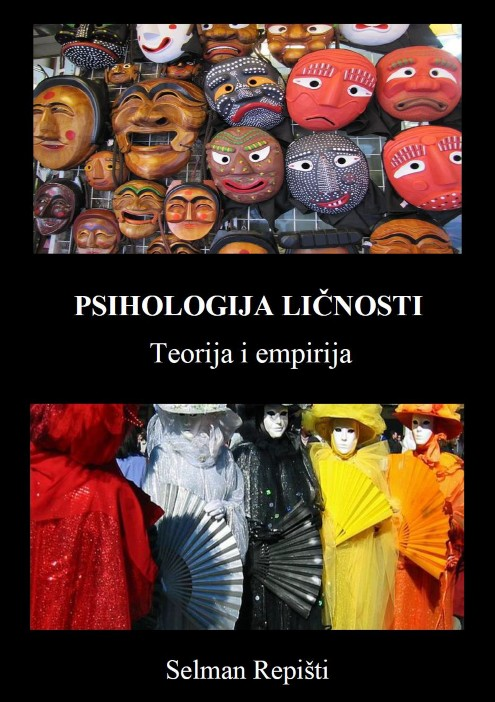

СЕЛМАН опашки
ПСИХОЛОГИЈА НА ЛИЧНОСТ
ТЕОРИЈА И ЕМПИРИКА
Подгорица, 2015 година
Селман Реписти
Авторско издание
Подгорица
Илда Имамовиќ
Селман Реписти
Селман Реписти
ЛИНИЈА ИНДЕКС, Сараево
100
©Селман Репишти, 2015. Сите права се задржани.
CIP - Каталогизација во публикација Национална библиотека на Црна Гора, Цетиње ISBN 978-9940-9495-3-2
COBISS.CG-ID 26460688
Мајка ми секогаш ми велеше дека имам душа на камелеон, без морален компас насочен кон север, без фиксна личност; само внатрешна неодлучност, широка и повлажна како океанот.
Лана Дел Реј: Возење
Поезијата не е израз на личност или емоции. Тоа е бегство од личноста и емоциите. Се разбира, само оној кој ги има и двете знае што значи да им помогнеш.
Томас Стернс Елиот (1888 - 1965)
Поединецот жали и за најлошите навики што ги изгубил. Можеби во овој случај најмногу се кае. Тие се толку суштински дел од личноста.
Оскар Вајлд: Сликата на Доријан Греј
Кога сличноста, обичноста, сличноста и типичноста ќе се надминат со другите,
тогаш се раѓа вистинска личност, необичност, другост, автентичност.
Селман Реписти: Атипичност
Книгата им ја давам на оние кои се искрени со себе во обид да станат она што веќе се.
Исто така, ги замолувам сите препишувачи, кои некритички учествуваат во општественото измислување на личности, да се откажат од читањето на оваа книга.
Должен сум да го посветам на сите оние кои се на работ на сопствената егзистенција, наспроти саможивите, самоодржливи и самодоволни политички газди. Ова го правам со честитки за храбри, самодоследни и чесни луѓе,
кои отсекогаш биле херои на цивилизацијата во моите очи.
Предговор | 1 | |
Како да се користи оваа книга | 2 | |
1. | Основи на психологијата на личноста | 3 |
2. | Психодинамичката теорија на Зигмунд Фројд | 15 |
3. | Аналитичка психологија: Теоријата на личноста на ЦГ Јунг | 37 |
4. | Лакановиот психоаналитички пристап | 53 |
5. | Социо-психоаналитичкиот пристап на Карен Хорни | 63 |
6. | Социопсихолошки пристап на Ерих Фром | 71 |
7. | Некои други значајни неоаналитичари | 81 |
7.1. | Ана Фројд | 81 |
7.2. | Мелани Клајн | 82 |
7.3. | Доналд Виникот | 83 |
7.4. | Хари Саливан | 85 |
8. | Индивидуална психологија на Алфред Адлер | 89 |
9. | Персонологијата на Хенри Мареј | 97 |
10. | Теоријата за мотивација на Абрахам Маслоу | 107 |
11. | Уште некои хуманисти и егзистенцијалисти | 119 |
11.1. | Карл Роџерс | 119 |
11.2. | Вилијам Гласер | 120 |
11.3. | Виктор Франкл | 123 |
12. | Теоријата на Џорџ Кели за лични конструкции | 128 |
13. | Бихејвиорални и социокогнитивни пристапи | 139 |
13.1. | Бихејвиоризмот на БФ Скинер | 139 |
13.2. | Социокогнитивниот пристап на А. Бандура | 141 |
13.3. | Теоријата на P. Zimbardo за временските перспективи | 143 |
14. | Теоријата на личноста на Гордон Олпорт | 149 |
15. | Димензионална теорија на личноста на Ханс Ајзенк | 161 |
16. | Факторско-аналитичка теорија на личноста на Рејмонд Кател | 171 |
17. | Личност во петтодимензионален простор | 181 |
17.1. | Моделот на големата петорка | 181 |
17.2. | Модел со пет фактори | 183 |
18. | HEXACO и моделот Big Seven | 191 |
18.1. | модел HEXACO | 191 |
18.2. | Модел на големи седум | 193 |
19. | Моделот на големите два и генералниот фактор на личноста | 201 |
19.1. | Модел на големи два | 201 |
19.2. | Општ фактор на личноста | 203 |
20. | Кружни модели на личност | 209 |
20.1. | Интерперсонален круг | 209 |
20.2. | Модел AB5C | 213 |
21. | Психофизиолошки пристапи кон личноста | 217 |
21.1. | Теорија на чувствителност на засилување | 217 |
21.2. | Психобиолошки модел на темперамент и карактер | 221 |
21.3. | Кибернетичкиот модел на Момировиќ | 225 |
21.4. | Алтернативниот модел со пет фактори на Цукерман | 228 |
22. | Отфрлени и современи типологии на личноста | 233 |
23. | Ситуациони фактори и имплицитни теории на личноста | 241 |
23.1. | Дебатна личност vs. ситуацијата | 241 |
23.2. | Имплицитни теории на личноста | 244 |
24. | Претпоставки за структурата на личноста на животните | 247 |
25. | Психологија на личноста во контекст | 253 |
25.1. | Психологија на личноста во организациски контекст | 253 |
25.2. | Психологија на личноста во образовен контекст | 255 |
25.3. | Психологија на личноста и спорт | 256 |
25.4. | Психологија на личноста и сообраќај | 257 |
25.5. | Психологија на личноста во форензички контекст | 257 |
26. | Синтеза на презентирани теории и истражувања | 259 |
Референци | 263 | |
Речник на клучни поими | 295 | |
Забелешка за авторот | 319 | |
Во денешно време, кога когнитивната психологија, невронауката и експерименталната социјална психологија го преземаат приматот меѓу психолошките дисциплини, се чини дека психологијата на личноста ја губи својата важност и почесното место кое порано го заземаше. Оваа книга ќе се обиде да и го врати „достоинството“ и повторно да ја воспостави како класична и современа научна дисциплина.
За жал, психологијата на личноста како академски курс обично се изучува во текот на два семестри. Сепак, теоретскиот и емпирискиот материјал што го покрива е исклучително обемен и треба да се презентира во четири семестри: во првиот, класичните теории на личноста за психодинамичка и неоаналитичка ориентација, во вториот бихејвиорални, когнитивни, социокогнитивни, хуманистички и егзистенцијални пристапи, во третиот модели на личноста засновани на психолексичката хипотеза и во четвртата, применета психологија на личноста (односно, психологија на личноста во контекст на пр.: форензички науки, работна средина, здравје, образовна и клиничка психологија, спортска и хумор психологија, сообраќајна психологија и војска психологија).
Ќе се обидеме, на едно место, да ги сумираме класичните и современите теоретски предлози, модели и пристапи во рамките на психологијата на личноста. Ќе наведеме и некои истражувања, кои ги тестираа опишаните теории, како и конструкциите и психолошките инструменти изведени од нив. Повеќето од нив се понови емпириски студии. Во рамките на некои класични теории на личноста, се претставени некои интересни психобиографии и студии на случај.
Оваа книга, исто така, опишува одредени пристапи, кои не се дел од стандардните, класични учебници за психологијата на личноста: психоаналитичката гледна точка на Жак Лакан, теоријата на временските перспективи на Филип Зимбардо, егзистенцијализмот на Франкл, терапијата со реалност на Гласер и теоријата на избор, и теоретските пристапи на психоаналитичари кои ја ревидираа психодинамичката теорија на Фројд. Станува збор за релевантни перспективи и психолошки/психотерапевтски школи кои ќе им помогнат на читателите/студентите уште подобро и подлабоко да разберат и протолкуваат комплексен феномен како што е личноста.
Авторот
1
КАКО ДА СЕ КОРИСТИ ОВАА КНИГА
Редоследот на презентација на материјалот во поголемиот дел од оваа книга е во согласност со следната шема: биографија на теоретичарот на личноста, клучни концепти на неговата теорија, операционализација на главните конструкции, студии на случај и истражување, евалуација на презентираната теоретска позиција (т.е. критички осврт на теоријата) и рекапитулација на поглавјето. Во случај на презентација на моделите на структурата на личноста, не се наведени биографиите на нивните автори (освен кога се работи за моделот на конативни функции, со оглед на тоа што неговиот автор е од нашето поднебје и имајќи го предвид неговиот голем придонес во современата психологија) , како и студии на случај. Современите модели на структура на личноста (темперамент, конативни фактори, карактер итн.) се придружени со голем број истражувања, а многу од нив се создадени благодарение на емпириските студии.
Операционализацијата на главните конструкции на теориите и моделите на личноста се претставени во форма на кратки описи на релевантни психолошки инструменти. Во деловите за евалуација на теориите и моделите на личноста се истакнати нивните предности и недостатоци. Во деловите под наслов „Рекапитулација на поглавја“ се нудат прашања за проверка и утврдување на презентираниот материјал. Има повеќе видови прашања: дихотомни (точно/неточно), оние во кои се бара од читателот/ученикот да го пополни зборот што недостасува, прашања со можност за давање пократок одговор, прашања од типот на есеј, како и прашања со што читателот може да го примени она што го научил (на пр. .анализа на содржината на филм, книга или песна, т.е. личноста на нивните измислени или вистински протагонисти).
На крајот од книгата е даден краток речник на клучни поими, во кој се дадени главните концепти на презентираните гледишта, парадигми, теории и модели. Овој речник содржи јасни и концизни дефиниции за клучните поими, со забелешка од која (чија) теоретска гледна точка потекнува дадениот поим. Некои концепти (самопочит, идентитет, интегритет, структура на личноста итн.) не се поврзани со некоја специфична парадигма во психологијата на личноста, а нивните дефиниции се понудени овде, без информации за гледиштето во кое се создадени.
Се разбира, од читателите/студентите се очекува објективно и критички да го разгледаат секој од моделите и теориите на личноста, како и да бараат истражување во кое презентираните пристапи се емпириски потврдени.
2
Многу теоретичари и истражувачи се обиделе да ја дефинираат личноста. Иако оваа задача изгледа лесна, може да се забележи дека е тешко да се направи разлика помеѓу особините на личноста и некои други психолошки променливи, како што се интелектуалните способности и изразувањето на емоциите. Речиси сите автори, кои ја прифатиле дефиницијата за личност, ги разликуваат трајните и релативно стабилните особини од психолошките состојби, кои се привремени. Некои од нив тврдат дека специфична комбинација на особини на личноста е причина за однесувањето на една личност, додека други веруваат дека личноста е поврзанасо однесување, односно врз основа на познавањето на нечија личност може да се предвиди неговото идно однесување. Во продолжение наведуваме неколку илустративни теории, кои во поголема мера успешно ја доловуваат комплексноста на личноста како широка психолошка појава.
Сузан Клонингер (2009), врз основа на преглед на главните теории за личноста (биолошка, психодинамична, когнитивна, хуманистичка, теорија на учење и теорија на особини), вели дека личноста првично вклучува биолошки детерминирани, т.е. наследени компоненти, кои се слични по природа на оние на другите луѓе, но тие се исто така различни до одреден степен. Овие вродени тенденции, во текот на животот на поединецот, се умерени и насочени од искуствата во семејството и културата на која личноста припаѓа, а следствено развиените навики, процеси на размислување и емоционални обрасци ја одредуваат и нашата личност. Клонингеровата дефиниција за личноста го вклучува аспектот на нејзиниот развој, и меѓусебната акција (интеракција) на наследноста, околината и активностите на поединецот. Понатаму, во оваа дефиниција се истакнува дека до одреден степен сме слични на другите (универзализам),
Шулц и Шулц (2005) под личност подразбираат единствени, релативно трајни надворешни и внатрешни аспекти (особини, карактеристики) на карактерот на една личност, кои влијаат на неговото однесување во различни ситуации. Оваа дефиниција остава простор за можноста за влијание на други фактори врз човековото однесување, кои не мора да спаѓаат во особини на личноста. Сепак, тој го содржи терминот „карактер“, кој главно се однесува на моралниот аспект на личноста, што е потесен термин од поимот „личност“.
3
За Рејмонд Б. Кател (1950), личноста е она што овозможува да се предвиди што ќе направи одредена личност во дадена ситуација. Оваа дефиниција ја нагласува предвидувачката моќ на особините на личноста, додека од друга страна се потценува влијанието на условите на околината, односно специфичноста на социјалните ситуации во кои може да се најде човекот. Меѓутоа, една од основните цели на науката (покрај описот и објаснувањето) е и предвидувањето, кое во психологијата не мора да подразбира причинско-последична врска меѓу појавите. Така, според дефиницијата на Кател, не се тврди дека особините на личноста предизвикуваат нечие однесување, туку напротив, врз основа на нивното знаење, може да се претпостават моделите на однесување и начини на реагирање на условите на околината.
За Ханс Ј. Така, Ајзенк го нагласува влијанието на биолошките (внатрешни) и социјалните (надворешните) фактори врз формирањето на личноста. На оваа дефиниција можеби може да се приговори, дека акцентот сепак е ставен на манифестниот аспект на личноста (обрасци на однесување), и дека личноста не мора да биде збир на одредени карактеристики, т.е. модели на однесување, туку може да се определи и како нивна просечно (т.е. како просечно, вообичаено однесување на една личност).
Според Гордон Олпорт (1937a), личноста е динамична организација на тие психофизички системи во една личност, која одредува карактеристични обрасци на однесување, размислување и емоционална реакција, односно уникатна адаптација на средината во која се наоѓа. Главната предност на дефиницијата на Олпорт е тоа што ги припишува квалитетите на динамиката и организацијата (структурата) на особините на личноста. Од друга страна, проблемот овде е терминот „психофизички“, кој може да има широки конотации и да вклучува многу други процеси и системи во една личност, на пример, интелигенција и емоции.
Ларсен и Бус (2008) ја дефинираат личноста како збир на психолошки карактеристики и механизми во поединецот кои се релативно постојани и организирани и кои влијаат на интеракциите и адаптацијата на личноста на физичката, интрапсихичката и социјалната средина. И оваа дефиниција е премногу широка и може да вклучува, покрај особините на личноста, различни форми на интелигенција. Слично на тоа, еден од термините што ги користат овие автори („влијание“) експлицитно алудира на причинско-последичната врска помеѓу особините на личноста и околината, каде што личноста е причина за адаптација на личноста на внатрешните и надворешните услови.
4
McCrae и Costa (1990), двајца истакнати истражувачи во современата психологија на личноста, понудија дефиниција за особините на личноста како нејзини компоненти. Според нив, особините на личноста се димензии на индивидуалните разлики во тенденцијата да се манифестираат конзистентни обрасци на размислување, чувство и активност (McCrae и Costa, 1990). Овие автори додаваат дека особините на личноста се стабилни во текот на животот. Ниту, пак, оваа дефиниција ги исклучува другите психолошки променливи, односно индивидуалните разлики кои исто така би можеле да бидат релативно трајни. Сепак, неговата предност е што ги дефинира особините на личноста како тенденции да манифестираат одредени обрасци. Според тоа, тоа не подразбира строга каузалност, ниту пројавување на особините на личноста како реални и опипливи ентитети, што е во согласност со самата нивна природа (т.е. со самиот факт дека цртите на личноста се конструкции, т.е. латентни димензии).
Според Бурхус Ф. Скинер, како признат бихејвиорист, не се занимавал со внатрешни психолошки процеси и состојби, а оваа дефиниција вклучува само бихејвиорални (манифестни) карактеристики на личноста. Овде, обрасците на однесување значат и емотивни реакции на луѓето, се разбира, оние кои се видливи и може да се измерат.
Доволно сеопфатна теорија на личноста треба да биде замислена на таков начин што ќе ги земе предвид структурата, развојот и динамиката на личноста, како и двонасочната врска помеѓу особините на личноста, индивидуалните активности и околината. Овде ќе ја понудиме следната дефиниција:
Личноста е организиран и динамичен збир на меѓусебно поврзани емоционални, когнитивни, социјални и бихејвиорални обрасци на поединецот кои заедно и релативно доследно влијаат на адаптацијата на личноста на внатрешни (интрапсихички) и надворешни (интерперсонални и физички) услови, и овие состојби можат да обликуваат овие обрасци до одреден степен (особини и реакции) во текот на животот на поединецот.
5
Аргументираниот систем на претпоставки за компонентите на личноста и нивната меѓусебна интеракција и/или развој се нарекува теорија на личноста. Како и во другите научни области, теоријата има посилна емпириска поддршка од хипотезата и послаба од научниот закон. Во општествените науки, ретко се среќаваме со закони, а овие теории претставуваат веродостоен начин на организирање на емпириски засновани знаења и податоци. Класификациите на теориите на личноста најчесто се во согласност со основните парадигми (перспективи, т.е. матрици на толкување на предметот на анализа) во психологијата. Кои се:
а) психоаналитичка (психодинамичка) парадигма;
б) бихејвиористичка парадигма;
в) когнитивистичка парадигма;
г) хуманистичко-егзистенцијалистичка парадигма;
д) биолошка парадигма;
ѓ) патоцентрична парадигма;
е) интерперсонална парадигма i
ж) лексичка парадигма.
Во рамките на психодинамичката интерпретативна матрица користиме термини како: ид, его, суперего, нагони, несвесно, предсвесно, свесно, Ерос, Танатос, инстинкти, конфликти, комплекси, одбранбени механизми, сексуални и агресивни нагони...
Бихејвиористичката парадигма се карактеризира со следниов професионален речник: позитивно и негативно засилување, интермитентно (спорадично, повремено) засилување, класично условување, инструментално и оперативно условување, социјално учење, модели на однесување („потписи на однесување“), награди и казни; зачестеноста, интензитетот и времетраењето на одредена форма на однесување...
Когнитивистичката парадигма вклучува термини како што се: перцепции, мисловни шеми и мапи, донесување одлуки, когнитивна дисонанца (неусогласеност), лични конструкции, хеуристика (ментални кратенки), пристрасност на заклучоци и слично.
6
Хуманистичко-егзистенцијалистичката парадигма претпоставува: природниот стремеж на човекот кон самореализација, слободната волја, одговорноста кон себе и кон другите, човекот како априори добро („безгрешно“) битие, смислата на животот итн.
Биолошката парадигма се заснова на знаење од анатомијата, физиологијата, теоријата на еволуцијата и етолошкото истражување на животните. Карактеристични поими се: наследност (пропорција на варијансата на личноста и однесувањето одредена од наследните фактори, т.е. генотип ), филогена и онтогенеза, невропластичност, адаптација, природна селекција, социобиологија, мутации, аналогии, хомологии, преживување на видот, втиснување ...
Патоцентричната парадигма го наследува наследството на медицината, каде што многу однесувања и начини на размислување се објаснуваат со физички или психолошки нарушувања или синдроми. Така, повеќето човечки дејства се сметаат за знаци или симптоми на одредено нарушување. Интерперсоналната парадигма ја зема како почетна точка изјавата дека човекот е општествено суштество и дека односите (комуникацијата и интеракцијата) со другите го прават таков каков што е.
(Психо)лексичката парадигма е специфична за психологијата на личноста и се заснова на претпоставката дека компонентите на личноста може да се извлечат од јазикот (придавки, атрибути или дескриптори на личноста), користејќи одредени статистичко-психометриски процедури кои ќе бидат опишани подоцна.
Ларсен и Бус (2008) разликуваат неколку домени на знаење, кои исто така може да се окарактеризираат како парадигми во психологијата. Кои се:
а) биолошки домен;
б) интрапсихички домен;
в) когнитивно-искуствено домен
(анг. когнитивно-искуствено домен );
г) социјален и културен домен;
д) домен за отстранување i
ѓ) домен на прилагодување ( домен за прилагодување ).
Овде накратко ќе ги објасниме сите наведени домени (области) на знаење, освен биолошките, што е веќе објаснето. Интрапсихичкиот домен се однесува на внатрешните, несвесни процеси кои ја одредуваат нашата личност и го обликуваат нашето однесување. Типичен претставник на интрапсихичкиот домен е психодинамичката теорија.
7
Од друга страна, когнитивно-искуствениот домен вклучува свесни внатрешни процеси и последователни лични искуства на луѓето: ставови, верувања, перцепции, самоконцепција и толкување на сопствените искуства. Пример за теорија која не е теорија на личноста во вистинска смисла на зборот е теоријата за временските перспективи на Зимбардо. Пример од психологијата на личноста е теоријата на Кели за лични конструкции.
Социјалниот и културниот домен се занимава со интериндивидуални и меѓугрупни интеракции. Секој човек припаѓа на одредена група или групи и соодветно го одредува неговиот колективен идентитет. Понатаму, сите ние сме дел од одредено културно милје, кое исто така ја обликува нашата личност и го насочува нашето однесување (со други зборови, постојат норми, вредности и очекувања кои се прифатливи во нашата култура, со императив да ги почитуваме).
Диспозицискиот домен се занимава со индивидуалните разлики, на таков начин што се обидува да утврди кои се основните особини, односно димензиите на личноста, колку ги има, какви се односите меѓу нив и како тие се манифестираат (Ларсен и Бус, 2008 г. ).
Доменот на приспособување се однесува на проучувањето на тоа како луѓето се справуваат со секојдневните искуства и настани. Ако овие искуства се тешки, стресни или трауматични, човекот може да реагира на нив поинаку: да се повлече во себе, активно да се соочи со нив, да ги „замрзне“ или да ги сфати како предизвик. Според тоа, можеме да зборуваме за одреден степен на (погрешно) приспособување на една личност.
Елис, Абрамс, Абрамс, Нусбаум и Фреј (2009) наведуваат седум главни школи (пристапи) во психологијата на личноста, со репрезентативни автори кои припаѓаат на овие училишта:
а) психоаналитички (Зигмунд Фројд);
б) нео-психоаналитички (Карл Јунг, Карен Хорни и Алфред Адлер);
в) однесувањето (Burrhus F. Skinner, John Watson);
г) генетски/биолошки (Ханс Ј. Ајзенк, Едмунд О. Вилсон, Вилијам Шелдон);
д) пристап на особини на личноста (Ханс Ј. Ајзенк и Р.Б. Кател);
8
ѓ) когнитивна/REBT (REBT е акроним за рационално-емоционално-бихејвиорална психотерапија; автори се: Алберт Бандура, Алберт Елис и Улрик Најсер) и
г) хуманистички (Абрахам Маслоу, Алберт Елис, Карл Роџерс).
Забележуваме дека Ајзенковата теорија за личноста е класифицирана во биолошката група на пристапи, како и во пристапите кои се занимаваат со особини на личноста. Исто така, теоријата на Алберт Елис припаѓа на хуманистичкиот и РЕБТ пристапот. Социјално-когнитивната теорија на Бандура е наведена како когнитивен/REBT пристап, иако придава големо значење на социјалните фактори (на пр. учење преку моделирање). Овде ги гледаме тешкотиите со кои се среќаваме кога се обидуваме да ги класифицираме теориите на личноста според нивната содржина.
Теориите на личноста можат да се позиционираат на неколку континууми, кои ги сумираат нивните главни карактеристики. Тоа е уште еден начин да се идентификуваат нивните главни карактеристики и принципите на кои почиваат. Шулц и Шулц (2005) ги наведуваат следните димензии:
- природата (наследството) vs. средина (воспитување);
- слободната волја наспроти детерминизмот;
- минатото vs. сегашноста;
- оптимизам наспроти песимизам;
- рамнотежа (рамнотежа) vs. личен раст и
- уникатност (специјалност) vs. универзалност.
Постарите теории се потпираа на влијанието на наследноста врз формирањето на личноста (на пр. биолошко и до одреден степен психоаналитичко), додека бихејвиористичките теоретичари го потенцираа влијанието на факторите на околината. Психоаналитичките теории, меѓу другото, го истакнаа влијанието на искуствата во раното детство на поединецот, па можеме да кажеме дека тие на одреден начин ја истакнуваа и важноста на образованието. Современиот пристап кон развојот на личноста ја зема предвид интеракцијата помеѓу наследните и факторите на околината, нагласувајќи ја индивидуалната активност како важен фактор во обликувањето на личноста и тенденциите во однесувањето.
Детерминизмот е гледиште прифатено во биолошките и психоаналитичките теории, каде што се смета дека особините на личноста се резултат на физиолошки, т.е.
9
несвесни процеси и дека нема доволно елементи за да се преземе влијанието на индивидуалната слободна волја. Од друга страна, хуманистичко-егзистенцијалистичките пристапи ја ставаат во преден план слободната волја на човекот, односно свесноста дека има избор во животот и одговорноста што ја носи слободната волја. Слично на тоа, теоретичари и истражувачи ориентирани кон когнитивизмот го гледаа поединецот како активен субјект во неговиот живот, кој поставува теории за себе и за светот и ги модифицира своите мисловни шеми во согласност со новите перцепции и искуства. Теориите за особини (на пр. психолексички пристапи, за кои ќе се дискутира подоцна) се позиционирани во средината на овој континуум.
Во рамките на постарите теории, се претпоставуваше дека развојот на личноста се одвива најдоцна до крајот на адолесценцијата, додека зрелоста и староста се сметаа за период на стабилност и непроменливост на личноста. Затоа, минатите искуства на поединецот се сметаа за единствени детерминанти на личноста. Во теориите што следеа, почнаа да се дискутираат актуелните искуства на поединците, кои го менуваат нивниот поглед кон себе и околината и до одреден степен го насочуваат дејството на особините на личноста (бихејвиористички и когнитивистички теории). Затоа, влијанието на процесот на учење е постојано присутно и го ублажува изразувањето на личноста на луѓето. Овде се занемарува ефектот на перцепцијата на сопствената иднина, т.е. планови, очекувања, надежи и цели на секој од нас, кои би можеле до одреден степен да ја обликуваат и нечија личност.
Оптимистичкото гледиште е карактеристично за теориите чија прва премиса е сфаќањето на човекот како инхерентно добро, морално и безгрешно битие. Овој пристап го застапуваат хуманистичките теоретичари. Од друга страна, имаме психодинамична група на теории во кои се тврди дека секој од нас бил на некој начин истрауматизиран и има чувство на основна вознемиреност. Овде, индивидуалните дејства, реакции и внатрешни состојби се гледаат како симптоми на подлабок, обично потсвесен конфликт. Човекот е роб на негативните искуства кои „сигурно“ оставиле трага на нивната личност, а иднината се сфаќа како нужно песимистичка. Оваа димензија за оценување на теориите на личноста не може да се примени на повеќето од нив. Примери се биолошките теории,
Во согласност со позитивистичката парадигма, која некои општествени науки ја презедоа од природните и техничките науки, се сметаше дека динамиката
10
личност насочена кон воспоставување психолошка и физиолошка рамнотежа (биолошки и психоаналитички теории). Пристапите што почиваа на темелите на овој принцип го негираа постоењето на повисоки психолошки потреби (самоактуелизација, односно реализација на сиот свој потенцијал). Меѓутоа, хуманистичките и егзистенцијалистичките теоретски рамки ја вклучуваат природната потреба на човекот за самореализација и развој на автентична, харизматична личност која е свесна за смислата на својот живот.
Последниот континуум ја има единственоста на личноста на едниот крај и нејзината универзалност на другиот. Уникатноста ја вклучува неповторливоста на констелацијата на особини на личноста на една личност. Во тој случај, единствениот валиден пристап кон неговото проучување е идиографски. Од друга страна, постои универзалноста на особините на личноста, односно ставот дека личноста на секој од нас може да се разложи на исти конституенти (компоненти, димензии, особини) на личноста, но тука се дозволени и индивидуални разлики. , но до степен до кој лицето може да се карактеризира со одредена квалификација . На пример, екстраверзијата е една од димензиите на личноста, а личноста X може да ја поседува оваа особина во голема мера, личноста Y може да има просечно ниво на екстраверзија (ние би го нарекле амбиверт), додека поединецот Z може да биде многу низок. оваа димензија (т.е. да се карактеризира како интроверт). Теориите за особини се пример во рамките на парадигмата на психолошкиот универзализам. Инаку, теориите е тешко да се опишат во врска со оваа димензија, бидејќи сите тие претпоставуваат дека основата на личноста лежи во фактори кои се заеднички за сите луѓе, влијанија кои се карактеристични за одредени групи луѓе, како и идиосинкратски фактори на уникатните развој на секој од нас.
Фулгоси (1987) ги наведува следните континууми со кои одредена теорија на личноста може да се позиционира во даден хиперпростор:
- слобода наспроти детерминизам;
- номотетички vs. идиографски;
- рационалност наспроти ирационалност;
- холизам (целосност) vs. елементаризам (посебност);
- субјективност vs. објективност;
- наследноста наспроти околината;
- хомеостаза vs. хетеростаза;
- реактивност наспроти проактивност i
- познавање vs. неспознатливост.
11
Забележуваме дека повеќето од овие димензии се совпаѓаат со континуите предложени од Шулц и Шулц (2005): слобода наспроти. детерминизам; номотетичност (универзалност) vs. идиографичност (единственост), хомеостаза (рамнотежа) наспроти хетеростаза (личен раст), како и наследност наспроти околина (воспитување).
Придонесот на Фулгоси (1987) се рефлектира во подолг список на димензии, кој вклучува некои други карактеристики на теориите на личноста, како што се реактивноста (личноста и однесувањето се одредуваат од внатрешните процеси, состојби и стимули) и проактивност (личноста е контролирана и насочена од надворешни фактори и дразби). Психодинамичките теории ја застапуваат реактивноста, а бихејвиористичките теории за проактивност. Следната димензија е рационалност-ирационалност. Рационалноста е пол кој се однесува на теоретски предлози за свесното однесување на поединците (когнитивистичките и бихејвиористичките теории на личноста се два примери за застапување на рационализмот). Ирационалноста е карактеристична за пристапите засновани на несвесни човечки импулси и автоматски процеси, кои не вклучуваат когнитивна обработка (пример се психоаналитичките теории). Континуитет спознание-непознатливостсе однесува на степенот до кој е можно научно да се проучува личноста, односно нејзиното изразување. Бихејвиористите и когнитивистичките теоретичари се залагаат за сознание, додека хуманистичките психолози веруваат дека сложеноста на нашето внатрешно и надворешно искуство не може целосно да се опфати со научни методи. Во последниот пристап, личноста се сфаќа како нешто што е неповторливо, кое постојано се развива (во насока на самоактуализација) и како такво бега од објективна анализа.
Забележуваме дека одредени димензии се преклопуваат една со друга - примери се слобода-детерминизам и животна средина-наследство. Ако претпоставиме дека нечие однесување е определено од наследноста, ние веќе имплицитно сметаме дека постои форма на детерминизам. Слично на тоа, субјективност-објективност и ирационалност-рационалност, исто така, вклучуваат одреден број на заеднички критериуми при позиционирање на личности на нивните континууми.
Сепак, опишаните димензии се корисни за еден тип на метакласификација на теориите на личноста и овозможуваат нивна меѓусебна споредба и формирање на „профил“ на теории на личноста, бидејќи го одредуваме профилот на личноста на поединците.
12
Најважните карактеристики на теориите на личноста се однесуваат на нивната научна основа . Во научна смисла, теорија за квалитет е онаа која:
- не е резултат на субјективното мислење и став на неговиот автор;
- создаден е со систематско и организирано проучување и анализа на одредена (тесна) специјалистичка област;
- е проверлив затоа што содржи јасни операционализација на конструкции чие постоење го претпоставува дадената теорија;
- е побитен (можно е да се отфрли до одреден степен или целосно, врз основа на емпириска верификација);
- е скромен (наклонет е да ја опишува и објасни личноста што е можно поедноставно);
- е логички конзистентен (конгруентен).
Примери за теории во психологијата се: психодинамичката теорија на Зигмунд Фројд, теоријата за аналитичка личност на Карл Густав Јунг и Теоријата на зајакната чувствителност на Греј. Во психологијата на личноста можеме да зборуваме и за модели на личност, кои најмногу се однесуваат на структурата (множеството) на личноста, а моделите за квалитет мора да ги исполнуваат условите што ги исполнуваат теориите за квалитет. Примери се: моделот на личност со пет фактори на Коста и МекКреј, моделот на структурата на личноста HEXACO на Ештон и Ли и моделот на големи седум фактори од Телеген и Валер.
Резиме на поглавје
1. Номотетичкиот пристап се карактеризира со испитување на индивидуалните разлики кај голем број луѓе. ТН
2. Теоријата на личноста на Фројд е детерминистичка. ТН
3. Добрата теорија мора да биде фалсификувана. ТН
4. Што е теорија на личноста?
5. Како RB Cattell ја дефинира личноста?
6. Каква дефиниција предлага Ларсен и Бус (2008)?
7. Што е парадигма?
8. Во која парадигма Б.Ф. Скинер дискутира за личноста?
9. Кои се карактеристиките на биолошката парадигма?
10. Објаснете ја димензијата реактивност-проактивност.
13
11. Што е домен за прилагодување?
12. Како се сфаќа личноста во рамките на хуманистичко-егзистенцијалистичката школа на психолошка мисла?
13. Наведете го името на спротивниот пол од следните димензии: наследство -
; хомеостаза – ; елементизам -
.
14. Што значи тоа дека квалитативната теорија е штедлива?
15. Што е когнитивно-искуствено домен?
14
Зигмунд (Sigismund, еврејско име: Schlomo) Фројд е роден на 6 мај 1856 година во Фрајберг, Моравија (тогаш Австрија, денешна Чешка). Неговиот татко, Јакоб, имал две деца од претходниот брак, додека Зигмунд бил првото дете на неговата мајка Амали Натансон (која го нарекувала „мојот златен Сиги“). Поради економската криза, која влијаела врз работата на неговиот татко, семејството на Фројд се преселило во Виена. Кога Зигмунд имал осум години, тој случајно уринирал во собата на неговите родители, за што бил прекорен со зборовите: „Од ова дете нема да дојде ништо.“ Во 1872 година, тој завршил гимназија со оценка magna cum. laude , а има информации дека бил исклучително надарен во литературата, и дека и тогаш знаел да чита неколку класични и светски јазици.
Во следните години, тој посетува медицинско училиште, каде што покажа интерес за филозофија, зоологија и физиологија. Во 1879 година, тој почнал да посетува предавања по психијатрија, а околу таа година го запознал Јозеф Бреуер, истакнат невропсихијатар, кој ќе му пружи пријателска и професионална поддршка во неговата понатамошна работа. Извесно време работел во Трст, проучувајќи го машкиот репродуктивен систем кај јагулите. Дипломирал медицина во 1881 година и се вработил во Општата болница во Виена, каде што на почетокот повеќе се занимавал со невропатолошки истражувања отколку со лекување пациенти. Следната година се ожени со Марта Бернајс, ќерка на познат рабин. Со неа има шест деца, а последното дете Ана ќе оствари сопствена кариера во детска психоанализа.
Во 1885 година станал универзитетски професор по невропатологија, а негов главен придонес бил проучувањето на феноменот на афазија. Неговата работа со Јозеф Бреуер резултираше со книгата „Студии за хистеријата“ (1895), каде физичките, површни манифестации на пациентите се објаснети со подлабок, интрапсихички конфликт. Може да се каже дека во 1895 година, Фројд беше на половина пат од физиолошки до психолошки објаснувања: хистерија, опсесии, анксиозни нарушувања и неврастенија (Бројер и Фројд, 1957). Во оваа книга се претставени пет студии на случај: госпоѓица Ана О., госпоѓица Луси Р., г-ѓа Еми фон Н., Катарина и госпоѓица Елизабет фон Р.
15
Фројд првпат се сретнал со Карл Јунг на 3 март 1907 година, кога имале речиси континуиран разговор 13 часа. Взаемното восхитување и почит траеше некое време (за време на кое Фројд го нарекува Јунг како негов „крунисан принц“, „духот на неговиот дух“ и негов „брилијантен наследник“). Меѓутоа, бидејќи Јунг не се согласувал со одредени фројдовски претпоставки, нивната конечна разделба се случила во 1913 година, кога последен пат се виделе. Хауле (1993) верува дека во очите на Јунг таткото на психоанализата станал негова таткова фигура и го опишува развојот на врската меѓу овие двајца аналитичари како постепено опаѓање на еросот меѓу нив.
Други еминентни имиња на психијатријата и неврологијата кои влијаеле на Фројд биле: Џ. го поттикнува тоа влијание врз поединецот, но тој не е свесен за нив (Jolibert, 1993). Поради настаните од војната и прогонот на Евреите пред Втората светска војна, Фројд заминал во Лондон (во 1938 година), каде што починал на 22 септември 1939 година.
Негови главни дела се: „Толкување на соништата“ (1900), „Психопатологија на секојдневниот живот“ (1901 година), „Три есеи за теоријата на сексуалноста“ (1905 година), „Тотем и табу“ (1913 година), Вовед во психоанализа“ (1916), „Непријатност во културата“ (1930) и „Мојсеј и монотеизам“ (1939). Инаку, за неговите дела ја доби најпрестижната награда во Германија – наградата Гете (Чиу, 2012). Можеме да кажеме дека Фројд бил: психијатар, невролог, психолог, антрополог, етнолог, социолог и писател. Неговиот најпознат биограф бил Ернест Џонс, кој според Кирснер (2007) бил главна фигура во ширењето на психоанализата низ светот (помагајќи им на психоаналитичарите кои биле принудени да емигрираат од областите зафатени со војна).
Фројд (1910) најпрво развива топографски (тематски) модел на личност, во рамките на кој го дели „просторот“ на внатрешните процеси, сеќавања и искуства на свесни и несвесни (Слика 1). Според него, меѓу овие две „области“ на интрапсихичкиот живот има предсвесни содржини. Најголемиот дел од човечката психа е составен од несвесни содржини, а свесниот дел од психата е, метафорично кажано, врвот на ледениот брег што излегува од водата во која плови глечерот. Тоа е предсвесно
16
веднаш „под површината“, која (одејќи кон „поголема длабочина“) преминува во несвесното.
Повеќе од една деценија подоцна, Фројд (1923) го предложи структурниот модел , кој претпоставува „постоење“ на три психички ентитети (структури): id (германски das Es ), его (германски das Ich ) и суперего (германски das Über-Ich). ).
Слика 1. Заедничка презентација на тематскиот и структурниот модел на личноста
ИД е извор на нецензурирани агресивни и сексуални нагони, инстинкти и нагони и се развива порано од другите структури (го поседуваме од раѓање). Се води од принципот на задоволство, односно веднаш задоволување. ИД е целосно позициониран во несвесниот дел на личноста.
Егото е психичка инстанца (ниво) која ја ограничува манифестацијата на содржината на идот, и е управувана од принципот на реалноста. Затоа, оваа психичка структура има контролна и интегративна функција (ги држи другите системи на личноста „заедно“). Егото вклучува извршни функции (активности како што се: планирање, контрола и следење на сопствениот мисловен процес и однесување, наречени „метакогниција“). Егото се балансира помеѓу нагоните кои доаѓаат од идот и ограничувањата поставени од суперегото. Покрај овие функции, егото ги перцепира, е задолжено за интелектуални и когнитивни активности, како и за употреба на одбранбени механизми. Најчесто се наоѓа во
17
несвесно, делумно во предсвесното (Фројд, 1955), а само мал дел припаѓа на свесниот „простор“ на личноста.
Суперегото е највисоката инстанца на личноста, која вклучува интернализирани морални и општествени норми, и затоа се води од принципот на совест. Суперегото ни овозможува да правиме разлика помеѓу доброто и злото и да формираме слика за идеалното јас (т.н. идеално јас) кон кое постојано се стремиме. Се развива подоцна од егото, преку процесот на учење. Исто така најмногу му припаѓа на несвесното, потоа на предсвесниот „простор“ на личноста, а најмалку му припаѓа на свесниот дел од личноста.
Според Фројд (1955), нашето однесување е водено од инстинктот на животот ( Ерос ) и инстинктот на смртта ( Танатос ). Тие, во комбинација со несвесните фактори и конкуренцијата меѓу идот, егото и суперегото, ја сочинуваат динамиката на нашата личност. Еросот е поврзан со витална енергија ( либидо ), која во претходната работа на Фројд всушност била сексуална енергија. Во суштина, животниот инстинкт е она што нè движи, а инстинктот на смртта е потиснат и трансформиран во прифатливи форми на дејствување. Во претходните теории на Фројд, еросот се сметал за сексуален нагон и првенствено поврзан со задоволството и задоволството. Неговата дефиниција подоцна беше ревидирана, а ерос значеше љубов, живот и раст (Fromm, 1984).
Фројд особено се занимавал со инстинктот на смртта (германски: der Todestrieb ) за време и по Првата светска војна, кога станал свесен за степенот на деструктивната моќ на човештвото. Танатос е човековиот порив кон самоуништување, сублимиран во форма на културни норми и стремеж за цивилизациски напредок и развој. Инаку, улогата на инстинктот на смртта е да го врати органскиот живот во неорганска, нежива состојба (Фројд, 1955). За Фројд, комбинацијата на инстинктот на смртта со еротските инстинкти (поточно, со автоеротизмот) е погодна почва за развој на мазохистички тенденции, додека инстинктот на смртта, кога е насочен кон надворешниот свет, станува намера за владеење, желба за моќ, садизам и агресивност (Фројд, 1953).
Можеби најголемиот придонес на теоријата на личноста на Фројд е идентификацијата на одбрамбените механизми, со кои егото се штити од деструктивната природа на несаканите импулси, сеќавања, мисли и емоционални состојби. Имено, катарзата , т.е. абракција , како емотивно и вербално „испуштање на психолошка енергија“,
18
сепак, не беше доволно да се излечат клиентите на Фројд, туку беше неопходно да се освестат потиснатите содржини и да се надминат отпорите на клиентот. Со други зборови, овие содржини требаше да се внесат во свесниот дел на личноста и да се прифатат преку процесот на рационално расудување (интегрирани во нечија психа, меморија и искуство) или да се отфрлат со аргументи (Jolibert, 1993). Така, психоаналитичарот му помага на клиентот да се разреди или да се откаже од употребата на незрели и невротични одбранбени механизми, со цел да го подобри менталното здравје и да го подобри неговото психосоцијално прилагодување. Патем, за Бројер, абракцијата беше вербално изразување на емоциите, додека во подоцнежните дела на Фројд и Бројер, овој термин беше ревидиран и дефиниран како емоционално празнење (Харт и Браун, 1992).
Што се однесува до одбранбените механизми и динамиката на личноста, треба да се забележи дека Фројд идентификувал три типа на анксиозност (Трул и Принштајн, 2013; Шулц и Шулц, 2005):
A. објективна/реална анксиозност (како психофизиолошка реакција на реална опасност во надворешниот свет);
Б. невротична анксиозност (страв дека импулсите на идот ќе се манифестираат импулсивно, што во средбата со надворешната средина ќе доведе до одредени проблеми и непријатност за поединецот) и
В. морална анксиозност (конфликт помеѓу ид и суперего, односно несогласување на сексуалните и агресивните импулси со моралните принципи на личноста, што доведува до чувство на вина, срам и срам).
Овде ќе наведеме релативно исцрпна листа на одбранбени механизми, со напомена дека не сите потекнуваат од самиот Фројд, но има и такви предложени од неговите студенти, неоаналитичари и други автори кои се занимавале со оваа тема. Ќе ги опишеме следните одбранбени механизми :
- репресија (супресија);
- рационализација (два вида – „сладок лимон“ и „кисело грозје“);
- преселување;
- регресија;
- фиксација;
- реактивна формација (формирана или претходно формирана реакција);
- негација (негирање);
- сублимација (трансценденција);
19
- компензација (и прекумерна компензација);
- проекција;
- идеализација;
- глумење (анг. acting out );
- исчекување;
- избегнување;
- идентификација;
- изолација;
- пасивна агресија;
- потиснување;
- симболизација;
- отпор;
- хумор;
- аутистичка фантазија;
- конверзија;
- алтруизам i
- лажен ефект на консензус.
Ние користиме репресија кога ги потиснуваме содржините и искуствата кои се заканувачки за нашето его, односно предизвикуваат неподнослива вознемиреност (невротична и морална). Пример: средношколец кој бил малтретиран од неговите соученици го потиснал сеќавањето на ситуација во која соучениците му упаднале во шкафчето со работи и ги земале за себе. Доколку често се користи овој одбранбен механизам, се случува потиснатите сеќавања и искуства да излезат на површина во вид на симптоми и проблеми во однесувањето, за кои личноста едвај е свесна, ниту пак е способна сама да се избори против нив.
Рационализацијата вклучува реинтерпретација на искуства и сеќавања, на таков начин што тие стануваат помалку загрозувачки за психата на поединецот. Првиот тип на рационализација е означен како „сладок лимон“, каде негативното искуство или сеќавање се аргументира така што ќе стане прифатливо за поединецот. Ќе го наведеме следниов пример: ако некој ја изгуби работата, може да го смета за можност да се одмори од напорната работа и да помине повеќе време со семејството. Друг вид на рационализација е „кисело грозје“. Во овој случај, доколку некој не го постигне позитивниот исход што планирал да се случи (унапредување, прием на саканиот факултет, избор на посакуван партнер за интимна врска и сл.), тој може да го девалвира овој исход, за да
20
ублажи некаква психолошка, социјална или материјална загуба. Пример е следниов: едно лице изгубило потенцијален деловен партнер (затоа што, на пример, се предомислил од нему познати причини), и може да се утеши со тоа што ќе се повика на можниот ризик од деловен проект да работи со него. партнер (со други зборови, можеби инвестициите на личноста нема да се исплатат колку што сака, или партнерството нема да оди во поволна насока). Сепак, многу рационализации не мора да бидат реални, па можат да го „оддалечат“ човекот од реалниот свет и да го „турнат“ во светот на имагинарното.
Поместувањето се дефинира како испуштање на инстинктивни нагони (на пр. агресивност) врз предмети (личности и предмети) кои не се примарни, посакувани објекти на нечии пориви и тенденции. Така, детето кое често е тепано од постарите ретко може да возврати против своите насилници. Затоа и ја испушта својата агресија тепајќи некој послаб од него.
Регресијата е несвесно враќање во претходната фаза на развој, каде што едно лице се чувствува безбедно, сакано и згрижено. Често се работи за манифестација на инфантилни реакции и однесување. Настинката ќе очекува другите да ѝ направат чај, да ја покријат или да и донесат лекови, бидејќи нејзините родители тоа го правеле кога таа била мала.
Фиксацијата се однесува на нечие „заробување“ во одредена фаза од психосексуалниот развој. Пример е грицкањето нокти и цицањето прст кај возрасните, каде што зборуваме за фиксација на оралната фаза (оваа фаза ќе биде опишана малку подоцна).
Реактивно формирањеили формираната реакција подразбира „превртување“ (преобразување) на одреден импулс, реакција или тенденција на поединецот во негова спротивност. Овој одбранбен механизам се состои од две фази. Во првата, поединецот има потреба да реагира на деструктивен или агресивен начин кон одредена личност или група на луѓе. Во втората фаза, оваа потреба и намера се претвораат (трансформираат) во позитивни импулси, кои конечно се изразуваат кон потенцијалниот предмет на нашата агресивност, односно негативната реакција. Пример е: лицето А навредува или негира одредено право на лицето Б; лицето Б чувствува лутина и нагон да се одмазди на лицето А, но бидејќи овие намери се општествено неприфатливи (или не се во согласност со системот на вредности на лицето Б), лицето Б, следниот пат кога ќе се сретнат, ќе го поздрави учтиво и со насмевка. .
21
Ние ја користиме негацијата на начин да ги негираме непријатните импулси, знаења и искуства, бидејќи тие би можеле да ја нарушат сликата за нас или да ја намалат нашата психолошка благосостојба. Жената која ќе се погледне во огледало и ќе забележи дека изгледа постаро може да се убеди себеси дека го направила тоа за да одржи стабилен физички концепт за себе (т.е. позитивна слика за нејзиниот физички изглед).
Преку сублимација ги трансформираме агресивните и сексуалните импулси во општествено прифатливи навики, реакции и активности. Поединец кој е музички надарен, но и темпераментен и има ниска толеранција за фрустрација, може да ја испушти својата потенцијално деструктивна психичка енергија свирејќи омилена композиција или пеејќи одредена песна што има побрз ритам.
Надоместокот е замена на одреден недостаток или неостварена желба/план со друг, кој во нашите очи со текот на времето може да добие слично значење како примарниот план/цел. На пример, поединец кој не успеал да стане фармацевт може да практикува фитотерапија. Друг пример е успешен играч кој се здобил со тешка повреда, што го спречува активно да игра фудбал. Овој човек може да стане тренер и на тој начин повторно, на одреден начин, да учествува во фудбалот. Ако некој ја замени својата примарна цел со друга и постигне извонредни резултати, дури и поголеми отколку ако успеал да го постигне својот првичен план, зборуваме за прекумерна компензација . Поранешниот играч од нашиот пример може да стане врвен, меѓународно познат тренер (со тоа далеку го надмина својот хендикеп).
Преку проекцијата, ние им ги припишуваме сопствените несовршености, маани и проблеми на другите. Пример е личност која е неодговорна на работа, а на своите соработници им кажува дека се невнимателни, невешти и не можат да ги завршат задачите што им се доделени.
Ние користиме идеализација кога му припишуваме квалитети кои се попозитивни на личност или предмет за кој покажуваме интерес или поседуваме, а кои се попозитивни од неговите/нејзините објективни карактеристики и особини. Ќе го наведеме следниот пример: некои родители на просечни деца зборуваат за своите синови и ќерки со суперлатив, така што ги сметаат за исклучително интелигентни, натпросечно убави и многу успешни. Спротивниот механизам е девалвација , каде што им припишуваме крајно негативни особини и квалитети на другите или на самите себе.
22
Глумењето е начин на справување со стресорите и емоционалните конфликти, така што наместо да се соочите и да размислувате за нив, да се прибегнете кон специфични форми на однесување . На пример, дете кое е фрустрирано ќе плаче, ќе скокне, ќе вика или ќе скрши нешто.
Исчекувањето е претпоставка и разгледување на идните проблеми и конфликти пред тие да се случат. Ако мајката на некоја личност е многу стара и е пред смрт, таа личност веќе може психички да се подготви за загубата и (пред самиот немил настан) да се обиде да најде начин да го олесни процесот на тагување што е можно повеќе.
Избегнувањето е најчесто во случај на фобии (неосновани, ирационални стравови од одредена група предмети, животни или луѓе). Личноста одбива да се соочи со предметот на својата анксиозност: агорафобиците избегнуваат отворени простори, акрофобиците не сакаат да се искачуваат на врвот на планина или облакодер, а луѓето со социјална фобија избегнуваат контакт со луѓе кои не припаѓаат на мала група од нивните блиски пријатели.
Идентификацијатоа може да биде со идол (личност на која му се восхитуваме), со значаен друг кој повеќе не е околу нас или повеќе не е со нас (идентификување со починато лице или некој кој се оддалечил и веројатно нема да се врати), со агресор, родителска фигура или главен лик во едно дело, на филмот... Значи, со овој механизам несвесно ги преземаме особините и навиките на луѓето кои се наш пример или кои не напуштиле. Едно лице може да се идентификува и со нежив предмет или животно. Примери за идентификација се: се облекуваме и се однесуваме како фронтмен на нашата омилена музичка група; го усвојуваме односот кон животот и вредностите што ги имаше нашиот татко; постојат на пр. луѓе кои сакаат да изгледаат како волк, па ја растат својата коса и брада, се тетовираат на одреден начин, сакаат да имаат монтирани кожни влошки и да ги изградат предните заби за што повеќе да личат на волци.
Изолацијата претставува несвесно одвојување на мисловните процеси од чувствата и емоционалните реакции. Така, човекот го одвојува когнитивниот од емоционалниот аспект на психичкиот живот. Пример е проститутка која размислува
23
за завршување на работата (врска), без емоционална приврзаност кон нејзиниот клиент и без чувство на одвратност, доколку некој вид активност не и е пријатен.
Пасивната агресија е индиректна форма на агресија. Чувствуваме непријателство, гнев и отпор кон некого и не му се обраќаме отворено и директно, туку избираме кружен начин да го изразиме своето незадоволство. Пример е вработен на кој претпоставениот му ја намалил платата, наводно без причина. Работникот може намерно да ги намали своите работни перформанси, или да почне да зема материјали и алатки од своето работно место, за работодавецот на почетокот да не го забележи тоа.
Потиснувањето е форма на потиснување, но онаа што се користи свесно и намерно. Затоа, поединецот се обидува да ги отстрани непријатните и непожелните содржини од неговата свест. На пример, некој може да се обиде да го одврати непријатниот состанок на кој треба да присуствува тој ден и да го замени со друга активност.
Преку симболизацијата , објектот или активноста се одредуваат во имагинарни, репрезентативни термини, со што се избегнува вистинска врска со тој предмет или активност. Пример е одговорот на некои луѓе на прашањето: „Зошто ќе гласате?“ Често може да се слушне следниов одговор: „Затоа што тоа е граѓанска должност“.
Отпорот е одбранбен механизам тесно поврзан со репресијата. Клиентите на психотерапија често имаат отпор да работат на потиснати содржини и сеќавања, односно да ги внесат во свесниот дел на личноста. Психоаналитичарот може да забележи дека клиентот ги потиснал чувствата на привлечност што ги имал кон својата сестра во детството. Сепак, клиентот се спротивставува на признавањето на таквите чувства и нагони бидејќи тие алудираат на инцестуозни намери, кои општествената заедница строго ги забранува и осудува.
Хуморот можеме да го користиме кога се соочуваме со непријатна содржина или негативни искуства, за да ја намалиме нивната важност, да го прикажеме во позитивно светло или да ја ублажиме сериозноста на некој проблем, односно сигурноста на одредена несоодветна ситуација. Можеме да се шегуваме на сметка на другите, во форма на нивно омаловажување (агресивен хумор), да се шегуваме на наша сметка (карикатурирајќи ги нашите маани и неспособности, што е самоуништувачки хумор) или величајќи ги нашите квалитети, што е
24
хумор што се самофали/само-пофали. Со четвртиот тип (стил) на хумор ги олеснуваме и поттикнуваме односите со другите (афилијативен хумор), а со тоа ги намалуваме тензиите и вознемиреноста на членовите на групата луѓе во која се наоѓаме (на пр. Lefcourt, 2001).
Аутистичната фантазија е начин да се избега од понекогаш суровата реалност. Станува збор за мечтаење, односно за бегство во светот на имагинацијата. Ако се користи често, а овие повлекувања во имагинарното траат долго време, може да дојде до губење на контакт со реалноста и развој на посериозни психолошки нарушувања. Пример за користење на аутистична фантазија е следниов: еден дечко не може да поднесе девојката во која е заљубен да не го забележува, па почнува да замислува како и приоѓа, а таа му трча во прегратка и како тие излезете или живеете заедно.
Конверзијата е карактеристична за нарушувања кои претходно се нарекуваа хистерични, а денес конверзија. Поради нетолеранција, интрапсихичките конфликти и непријатните внатрешни состојби се „поместени“ на физичко ниво, а се доживуваат како болка во одреден дел од телото. Се разбира, се јавува и кај нормалната популација. Пример е: ученикот не е задоволен што не се сетил на одговорите на прашањата што му биле поставени на усниот испит, па почнува да го боли главоболката и таа болка трае на пример. недела.
Алтруизмот е ценета активност на помагање и обезбедување поддршка на другите, без потреба или очекување дека тие ни се заблагодаруваат или возвраќаат услуга. Тоа е општествено прифатливо и пожелно однесување, кое има етичко и аксиолошко значење. Меѓутоа, кај некои луѓе, зад акти на алтруизам, може да се скрие нерешен интрапсихички конфликт или внатрешна напнатост. Овие луѓе ги надминуваат или откажуваат непријатните внатрешни состојби со алтруистичко однесување, за што помага свесноста дека луѓето на кои им помагаат се благодарни и ги ценат. Така, на пример, човек кој сака да им помогне на постарите луѓе може да го надмине сопственото каење што не бил со мајка си кога таа била неподвижна и уморна.
Ефектот на лажен консензус ( FCE) првично беше проучен во истражувањето на социјалната перцепција. Во оваа област на социјалната психологија, ефектот на лажен консензус се дефинира како проценка на бројот (или процентот) на луѓе кои имаат ист став кон нешто како нас самите (Фабригар и Кросник, 1995). Ако некое лице е за одреден предмет или опција, т.е.
25
ако има позитивен став кон тоа, ќе помисли дека и голем број други луѓе имаат позитивен став кон дадениот предмет. Ако некој има негативен став кон одредена појава или општествено прашање, ќе тврди дека мнозинството од населението има ист или сличен однос кон тоа прашање (тема, феномен). Рос, Грин и Хаус (1977), во светлината на теоријата на атрибуција , го дефинираат ефектот на лажен консензус како перцепција на сопствените избори и пресуди во однесувањето како релативно вообичаени и соодветни на дадените околности („секоја/просечна личност би го направила она што јас го направив во оваа ситуација" '), додека другите изрази на однесување и одговори се сметаат за ретки, несоодветни и девијантни.
Гилович (1990) укажува на релативната природа на ефектот на лажен консензус: луѓето не мислат дека огромното мнозинство од другите имаат слични ставови кон нив или слично се однесуваат во одреден тип на ситуација. Наместо тоа, тие веруваат дека групите (т.е. подпопулациите) слични на оние на кои припаѓаат, споделуваат слични ставови, особини и модели на однесување. Така, некој нема да смета дека огромното мнозинство од светското население има негативен став кон фундаментализмот, туку дека таков став имаат оние кои навистина не припаѓаат на фундаменталистички движења, туку на политички опции кои се неспоиви со фундаментализмот.
Во психологијата на личноста, механизмот на ефектот на лажен консензус се разбира малку поинаку. Баумајстер, Дејл и Сомер (1998) наведуваат дека овој одбранбен механизам е сличен на проекцијата и дека служи за зачувување на општата самодоверба, а луѓето кои го користат покажуваат пониско ниво на депресија. Исто така, според споменатите автори, улогата на ефектот на лажен консензус (во случај на оправдување на сопствените особини и однесувања на личноста кои носат негативни конотации) е да ја намали важноста.(перцептивна важност) на личност која може да биде означена како уникатно зла, неморална или нечесна (Baumeister, Dale, & Sommer, 1998). Значи, ако копираме на тест, можеме да се браниме со зборовите „сите го прават тоа“ или „другите од мојот оддел така се однесуваат во ситуација на тест“. Така, го намалуваме стравот дека другите ќе не определат како единствен случај на некоректна личност и измамник.
Јасно е дека не можеме да ги сметаме сите одбранбени механизми како нешто што го нарушува нашето ментално здравје. Некои од нив се зрели (на пр. исчекување, хумор, алтруизам, сублимација и, можеби, потиснување), додека други се помалку корисни кога станува збор за психолошка благосостојба (регресија, фиксација, репресија, аутистичка фантазија, негација, проекција и допаѓа).
26
Постојат неколку психолошки инструменти кои ги проценуваат и мерат одбранбените механизми. Еден од нив е тестот за одбранбен механизам (ДМТ).). Тој е сличен на проективни тестови и содржи слики како оние од Тематскиот тест за привидност (ТАТ), кои им се презентираат на учесниците во времетраење од 5 милисекунди до 2000 милисекунди, иако начинот на примена на овој тест варира (Ekehammar, Zuber , & Констениус, 2005). ДМТ оценува десет одбранбени механизми (некои од нив се специфични за овој инструмент): изолација, репресија, негирање, реактивна формација, проекција, регресија, интроекција на спротивниот пол (погрешно препознавање на полот на личноста од сликата), интроекција на друга објект (припишување на погрешна возраст на личноста од сликата), внатрешна агресија („враќање“ на агресијата кон себе) и поистоветување со агресорот.
Инвентар на одбранбени механизми ( ДМИ ; Глесер и Ихилевич, 1969) мери пет групи на одбранбени механизми (на пр. Зокали, 2007): свртување против себе ( TAS ), вртење/поместување (анг. пресврт ; во оваа група има: реактивна формација, потиснување и негирање), свртување против објектот (инж. свртување против објектот - ТАО; овде се бројат идентификација со агресорот и преместување), проекција (инж. проекција - PRO ) и принципализација (инж. .принципализација - PRN ; тука се механизми во кои когнитивното се одвојува од емоционалното: интелектуализација, изолација и рационализација).
Прашалникот за одбранбен стил ( DSQ; Bond, Gardner, Christian, & Sigal, 1983) е уште еден инструмент за оценување на одбранбените механизми, а неговата оригинална верзија се состои од 88 изјави (DSQ - 88). Има и верзии со 60 (DSQ – 60) и со 40 побарувања (DSQ – 40). Тринаесет одбранбени механизми се совпаѓаат во сите три верзии на прашалникот: псевдоалтруизам, глумење, пасивна агресија, хумор, повлекување, потиснување, проекција, реактивно формирање, инхибиција, разделување, поништување, фантазија и исчекување (Ramkissoon, 2014).
Фројд верувал дека личноста се формира најдоцна до седумгодишна возраст. Либидото, како сексуална енергија, доведува до заинтересираност на детето за одредени делови од телото, и предизвикува задоволство при стимулирање на тие делови. Според тоа, тој ги предложи следните фази на развој:
27
- орална фаза (раѓање – 1 година од животот);
- анална фаза (1/2-3 години од животот);
- фалусна фаза (3 – 6/7 година од животот);
- фаза на латентност (6/7 – 11/12 години од животот) i
- генитална фаза (од 11/12 година па наваму).
Овие фази се случуваат по редоследот по кој се наведени, и ако поединецот е фиксиран на одредена фаза, тогаш тој развива специфичен тип на личност (т.е. „карактер“).
Во оралната фаза на психосексуалниот развој, либидиналната енергија се наоѓа во пределот на устата, односно усните и јазикот, а задоволството се доживува со цицање, цицање и хранење. Луѓето кои на некој начин доживеале лишување од задоволство или прекумерно задоволство во оваа фаза, развиваат особини и тенденции како што се: тврдоглавост, агресивност, оптимизам/песимизам и зависност од другите. Во зрелоста, овие личности сакаат да пијат од шише, се склони кон алкохолизам, зависност од дрога, пушење и можеби претпочитаат орален секс. Оваа фаза може да се подели на подфази на цицање и гризење.
Во аналенфаза на развој, либидото е насочено кон аналниот отвор и е поврзано со „тренинг во тоалет“. Детето може да почувствува удобност за време на дефекацијата. Сепак, потребата и удобноста на ова дете може да се спречат со прерано навикнување на нокширот. „Карактерот“ кој се развива како резултат на фиксација на оваа психосексуална фаза вклучува карактеристики како што се: педантерија vs. невештина, скржавост, уредност, перфекционизам vs. неорганизираност. Аналната структура на личноста се карактеризира со претпочитање на т.н „дебели“ шеги (шеги со сексуална и агресивна содржина), стремеж кон совршенство, непристојност и неуредност. Како и во случајот со оралниот „карактер“, овде имаме дихотомија на карактеристики: може да се манифестира, а нивните спротивности се латентни или може да се случи ваква личност во некои ситуации и области од животот, на пр. педантни, учтиви и одговорни, додека другите се лигави, неуредни и бескрупулозни.
Фалусот претставува прилагодување на либидото во областа на половите органи. Децата на возраст од три до шест години можат да доживеат задоволство со допирање и играње со нивните гениталии. На крајот од оваа фаза, решавањето на т.н Комплексот на Едипов или Електра. Едиповиот комплекс се однесува на претпочитањето на мајката на момчето и перципираното ривалство со
28
од татко. Момчето на некој начин се натпреварува со својот татко за да ја „освои“ мајка си. Слично на тоа, девојчето се натпреварува со нејзината мајка за да го „добие“ својот татко за себе (комплексот на Електра). Овој период е проследен со страв од кастрација (кај момчињата) и страв од разделба (кај девојчињата). Успешното разрешување на комплексот Едип и Електра и навремената идентификација со истополовиот родител, доведува до здраво прифаќање на сопствената сексуалност. Поединците фиксирани на оваа фаза на развој имаат проблеми со усвојувањето на сопствената полова улога или сексуалниот идентитет. Последиците се транссексуалност, трансвестизам и хомосексуалност.
Фазата на латентност е, наводно, период на одмор. Детето оди на училиште, го проширува својот животен и искуствен простор, се соочува со реалноста и се навикнува на околината надвор од семејството. Се обидува да воспостави општествени односи и да се посвети на процесот на учење. Ако е успешна, може да развие висока самодоверба, т.е. доверба. Во спротивно, го мачи чувството на инфериорност и изолација.
Последната фаза од психосексуалниот развој е гениталниот , кој е поврзан со развојот на зрела личност и успешно влегување во светот на возрасните. Погоните повторно стануваат активни, идентификацијата со родовата улога е завршена и сопствената сексуалност станува постабилна и позрела. Доколку детето (сега адолесцент) биде спречено или лишено во оваа фаза, може да развие проблеми како што се: асоцијално однесување, зависности од различни видови, чувство на изолација и несоодветност и разни проблеми поврзани со сексуалноста.
За целите на работа со клиенти и опишување и објаснување на несвесните намери, комплекси и манифестирани симптоми, развиени се следните техники во рамките на психодинамичката парадигма: техника на слободно здружување, анализа на грешки, психотерапевтска работа на отпорност на клиентот во форма помагање на клиентите да стекнат рационален увид во сопствената состојба, анализа на преносот и контрапреносот, анализа на содржината на соништата, како и психобиографски студии.
Техника за слободно здружување . Клиентот треба да каже се што ќе падне на ум, без свесни пропусти или селективна вербализација. Така, клиентот треба да пријави и мисли кои укажуваат на агресија, сексуалност, срам или изгледаат смешно (на пр., Трул и Принштајн,
29
2013). Терапевтот (аналитичарот), кој е член на класичната психоаналитичка школа, обично седи зад клиентот (аналитичар), со цел да му помогне што повеќе да се опушти и што е можно поглатко да ја вербализира својата внатрешна содржина. На почетокот, мислите на клиентот може да изгледаат неврзани, меѓутоа, како што напредува слободното здружување, психоаналитичарот полека забележува обрасци кои укажуваат на несвесната содржина на клиентот (комплекси и проблеми).
Анализа на грешки и грешки при зборување, пишување и читање . Во својата книга „Психопатологија на секојдневниот живот“, Фројд (1901/1990) наведува многу примери на такви грешки. Еден од нив е поврзан со еден млад човек, кој се обратил на одредена млада дама на улица со овие зборови: „Ако ми дозволите, госпоѓице, би ве придружувала .“ Фројд објаснува дека овој збор е создаден со комбинирање на зборовите „придружба " и "навреди" ", бидејќи младиот човек се плашеше дека ќе ја навреди со таков гест (Фројд, 1901/1990). Можеме да наведеме повеќе примери - ова се искуствата на авторот на оваа книга. На прашањето на неговиот колега: „Која е оваа личност?“, тој одговори: „Тоа е мојот пијач “..'' Несвесно, наместо зборот „пријател“ употребил извод (или неологизам) изведен од глаголот „да се пие“. Со ова повторно несвесно му стави до знаење на соговорникот дека неговиот пријател има тенденција да пие. Во друга прилика забележал билборд на кој, меѓу другото, пишувало „Посетете родители“. Го читаше како „ промени родители“, веројатно поради тогашниот конфликт со нив. Исто така, често му се случувало да ја нарече својата поранешна пријателка, која е многу отворена и забавна личност, „Ма нија “ (наместо Марија).
Стекнување увид. Увид во сопствената состојба и психосоцијалното функционирање, според Фројд, може да се постигне со помош на друго лице (по можност психоаналитичар). Работи на намалување на отпорот и репресијата, користејќи катарза и објективно гледање на сопствените: мисли, вознемиреност, нагони, намери, навики, тенденции и особини.
Работете на трансфер и контрапренос. Во текот на процесот на психотерапија често се случува клиентот да му припише на терапевтот карактеристики на некој значаен друг (мајка, татко, сестра, брат, брачен другар...). Потоа зборуваме за трансферот . Тука е важно да се пронајдат причините за таквите атрибуции и да му се помогне на клиентот да стане свесен за нив. Од друга страна, сличен феномен може да се најде кај психоаналитичарите (кога станува збор за контрапренос ): терапевтот го гледа својот значаен друг во својот клиент и несвесно се однесува соодветно. Успешен курс на психотерапија (кој дури може да му помогне на терапевтот да реши некои од своите
30
проблеми), меѓу другото, зависи и од квалитетот на анализата на овие односи и од јасната дефиниција на улогите кај психоаналитичарот - клиентот (анализираната) дијада.
Анализа на соништата. Фројд верувал дека секој сон има своја манифестирана и латентна содржина. Затоа, содржините што се појавуваат во нашите соништа се всушност симболи, кои треба да се толкуваат за да се дојде до нивното вистинско значење за поединецот (со други зборови, до латентните содржини на соништата). Во соништата, комплексите, стравовите и проблемите не се очигледни, бидејќи механизмот на цензура функционира . Фром (1984) убаво го објаснува вака: механизмот на цензура делува како политички писател под диктаторски режим, т.е. содржината на соништата се појавува во форма на некакво шифрирано писмо или јазик. Значи, за Фројд, соништата се кралскиот пат до несвесното и тие треба да се дешифрираат, бидејќи ги кријат вистинските значења.
Психобиографски студии. Фројд, во согласност со неговата психоаналитичка теорија и нејзините последици, анализирал познати личности од светската историја, митологија, уметност и литература, како и нивните дела и книжевни херои: Леонардо да Винчи, Мојсеј, хероите од драмата на Шекспир, Гете, итн. Оваа традиција ја продолжија и други психоаналитичари и неоаналитичари (на пр. Ерих Фром). Во литературата се среќаваат и синтагми како: патобиографии и психоисториски студии, кои можат да се користат како синоними. Историјата на случај, анамнезата или студијата на случај во клиничка смисла има елементи во контакт со психобиографски студии, но нивната цел и цел е нешто поинаква. Денес, психобиографските студии се рефлектираат во примената на психолошките теории за опишување и објаснување на животот и развојот на истакнати поединци,
Шулц (2005) предлага критериуми за разликување на „добрите“ од „лошите“ психобиографии. Квалитетни психобиографии: имаат наративна структура, се карактеризираат со конвергенција на податоци (податоците водат до единствени заклучоци), звучни, т.е. делуваат логично, имаат конзистентни податоци и толкувања, проверливи се (податоците што се презентираат се реални и можат да се проверат), имаат квалитет на сеопфатност, не се засноваат на редукционизам, не се резултат на лош избор на теорија (т.е. толкувања во согласност со теорија која не може соодветно да се примени во дадениот случај), и не се само патобиографии.
31
Мекинли Руњан (1981) понуди преглед на психобиографиите на Винсент Ван Гог. Во својата анализа тој разговарал зошто овој голем сликар го скинал долниот дел од левото уво и и го дал на проститутката Рејчел, истакнувајќи дека внимателно го чувал. Во светлината на психоанализата, овој чин се толкува како резултат на фрустрацијата на Ван Гог од неговиот однос со неговиот брат Тео и друг сликар, Пол Гоген. Фрустрацијата доведе до автоагресивен чин, односно насочување на деструктивни инстинкти кон себе. Споменатиот автор дава неколку други толкувања (McKinley Runyan, 1981): овој чин би можел да биде резултат на несвесните хомосексуални тенденции на Ван Гог кон Гоген (а увото претставуваше фаличен симбол што мораше да се отсече, што е чин на само- кастрација), од друга страна, Можеби Ван Гог го видел својот татко во Гоген, на кого сакал да му се одмазди и го користел механизмот на пренесување на агресијата, насочувајќи ја кон дел од неговото тело. Давањето дел од увото на проститутка се толкувало на следниов начин: мајката на Ван Гог често му велела дека е лошо и грдо момче, а отсекувањето на увото би значело симболично отстранување на дел од сопствената грдотија и одобрување на симболична мајка (во овој случај, проститутката). Меѓутоа, Мекинли Руњан (1981) дава поедноставно објаснување: Ван Гог подоцна забележал дека во овој период „слушал гласови“ (т.е. имал аудитивни халуцинации), а отсекувањето на увото можеби било чин на кој прибегнал за да „смири тие гласови''. Давањето дел од увото на проститутка се толкувало на следниов начин: мајката на Ван Гог често му велела дека е лошо и грдо момче, а отсекувањето на увото би значело симболично отстранување на дел од сопствената грдотија и одобрување на симболична мајка (во овој случај, проститутката). Меѓутоа, Мекинли Руњан (1981) дава поедноставно објаснување: Ван Гог подоцна забележал дека во овој период „слушал гласови“ (т.е. имал аудитивни халуцинации), а отсекувањето на увото можеби било чин на кој прибегнал за да „смири тие гласови''. Давањето дел од увото на проститутка се толкувало на следниов начин: мајката на Ван Гог често му велела дека е лошо и грдо момче, а отсекувањето на увото би значело симболично отстранување на дел од сопствената грдотија и одобрување на симболична мајка (во овој случај, проститутката). Меѓутоа, Мекинли Руњан (1981) дава поедноставно објаснување: Ван Гог подоцна забележал дека во овој период „слушал гласови“ (т.е. имал аудитивни халуцинации), а отсекувањето на увото можеби било чин на кој прибегнал за да „смири тие гласови''.
Стал (2013) го анализираше Јозеф Висарионович Сталин. Неговата психопатологија ја карактеризира како параноично (лудо) пореметување кое се манифестирало со љубомора и недоверба кај неговите соработници. Овој автор претпоставува дека, ако се прифати психоаналитичката премиса дека детството има изразито влијание врз животот на една личност, патологијата на Сталин ги има своите корени во нездравиот однос што тој го имал со својот татко (т.е. со тиранската родителска фигура).
Во невропсихологијата, утврдено е дека кога се размислува во однос на нагонот (принципот на задоволство), реалноста и моралот/правилата/нормите (стимулирани со зборови кои им биле презентирани на учесниците на екранот, а во исто време им бил скениран мозокот со функционална магнетна резонанца - fMRI) се активираат различни делови од мозокот. Така, во случај на доминација на Ида, забележана е зголемена активност во пределот на мозочното стебло, во
32
во случај на мисли обоени во его, предниот сингуларен кортекс беше активиран, додека мислите импрегнирани со суперего беа придружени со зголемена нервна активност во латералниот префронтален и париеталниот кортекс (Фишер и Студент, 2012).
Берлин (2011) дава преглед на истражувањето на нервната основа на динамичните несвесни процеси, од когнитивна, афективна и мотивациска природа. Несвесните процеси се одвиваат преку изолирани јамки на нервни импулси, или активирања, кои не траат доволно долго, ниту се синхронизирани со другите делови на невронската мрежа, за да станат свесни. Резултатите од презентираното истражување се поврзани и со невроцеребралната основа на некои одбранбени механизми (Берлин, 2011):
а. Откриено е дека луѓето склони кон репресија реагираат на сублиминални дразби со евоцирани потенцијали со помала амплитуда и ги решаваат сублиминалните конфликти без активирање на предниот сингуларен кортекс (кој, покрај префронталниот кортекс, е одговорен за свесното саморегулирање).
б. Супресијата, како доброволна (свесна) супресија, се јавува со зголемена активација во дорзолатералниот префронтален кортекс и намалена активација на хипокампусот.
в. Дисоцијацијата (како механизам за раздвојување на следните психолошки функции и аспекти: меморија, перцепција, свесност и идентитет) се заснова на супресија на лимбичкиот систем (на дел од левиот префронтален кортекс), додека постои хипер-активирање на префронтален кортекс и намален проток на крв во орбитофронталниот кортекс.
Екехамар, Зубер и Констениус (2005) спроведоа истражување со студенти, каде беа испитани некои психометриски карактеристики на Тестот за одбранбени механизми (ДМТ). Откриле дека договорот меѓу обучените оценувачи е висок (што сведочи за добрата сигурност на инструментот), но од друга страна, ниската доверливост била тестирана со паралелни форми на овој тест. Понатаму, конструктивната валидност на ДМТ е на граница на прифатливост, а најраспространетите одбранбени механизми карактеристични за нивниот примерок од учесници беа: реактивна формација, интроекција од спротивен пол и интроекција на други предмети (Ekehammar, Zuber, & Konstenius, 2005 ).
33
Бушман (2002) се обиде емпириски да ја тестира хипотезата за катарза, т.е. претпоставката дека активностите кои поттикнуваат манифестација на агресија на крајот доведуваат до намалено ниво на агресивност кај луѓето. Резултатите од неговото истражување покажуваат дека поттикнувањето на манифестацијата на агресија го зголемува нивото на агресивност на учесниците, а нивото на агресивност е пониско кај оние кои не прават ништо за да ја „извлечат“ од себе, во споредба со луѓето кои намерно се впуштаат во физичка активност, која им служи како вентил за агресивност. Затоа, ова истражување може да се искористи за да се отфрли хипотезата за катарза.
Кордиќ (2004), по прегледувањето на поголемите студии за ефективноста на психоанализата (до 1991 година), заклучува дека поголема фреквенција на сесии и подолг третман се поефикасни од пократките третмани и поретки состаноци помеѓу клиентот и аналитичарот. Дополнително, успешно управуван психотерапевтски процес од овој тип резултира со развој на самоаналитичките вештини на клиентот („анализирани“), а ефектите од психоанализата се видливи неколку години по завршувањето на процесот на психотерапија. Проблемите со одредувањето на ефектите од психоанализата се рефлектираат во уникатноста на секој анализатор (клиент) и во изборот на методите и техниките на истражување, меѓутоа, со текот на времето, методолошките недостатоци се елиминираат, а самите аналитичари стануваат се позаинтересирани за учество во истражувањето. на исходот од психоаналитичката психотерапија (Кордиќ, 2004). Гаскин (2014) спроведе мета-анализа на 26 студии за ефикасноста и ефективноста на психодинамичката психотерапија и дојде до заклучок дека овој тип на психотерапија е успешен во лекувањето на лица со: депресија, одредена анксиозност (генерализирано анксиозно растројство), некои соматоформни нарушувања (на пр. хипохондријаза) и одредени нарушувања на личноста (на пр. гранично растројство на личноста). Истиот автор наведува дека се регистрирани долгорочни ефекти од психодинамичката психотерапија.
Шедлер (2010) анализирал неколку студии во кои ефектите од психодинамичката психотерапија биле споредени со ефектите од другите видови психотерапија. Неговите заклучоци го поддржуваат тврдењето дека психоаналитичкиот пристап, односно третманот, ги има истите ефекти како и другите психотерапевтски пристапи. Исто така, Шедлер (2010) предупредува дека психотерапевтите од други ориентации во својата работа користат некои техники кои потекнуваат од психоаналитичката традиција. Хубер, Зимерман, Хенрих и Клуг (2012) ги споредија ефектите од психоаналитичките (психодинамички) терапии и когнитивно-бихејвиоралната психотерапија (КБТ). На примерок од 100 клиенти утврдиле дека веднаш по завршувањето на сите сесии и три години по завршувањето на третманот,
34
Психодинамичките пристапи се водечки во однос на когнитивно-бихејвиоралниот психотерапевтски пристап (Huber et al., 2012). Нивното истражување било поврзано со третман на лица со депресивни растројства, а може да се заклучи дека психодинамичката психотерапија е поуспешна во лекувањето на депресијата отколку CBT пристапот.
Главната критика на теоријата на Фројд за психосексуален развој (и на целата психодинамичка теорија) се однесува на редукционизмот. Фројд го стесни човечкиот развој на психосексуален развој и ги игнорираше ефектите од околината, воспитувањето и независните активности на детето. Друга критика е неуспехот да се земе предвид концептот на доживотен развој, преку пренагласување на периодот од детството како клучен во развојот на личноста. Третиот се однесува на детерминистичкиот пристап, кој се рефлектира во тврдењето дека животот на една личност е определен од раното детство и дека секоја наша постапка е резултат на (најчесто потсвеста) намера, односно дека секоја акција е преземена за разумот, а причината за која лежи во несвесното. И покрај тоа, психоаналитичката теорија на Фројд припаѓа на т.н „големи теории“, бидејќи ја опфаќа структурата на личноста, нејзината динамика и развој, а покрај тоа добила и неколку психотерапевтски техники,
Резиме на поглавје
1. Девалвацијата е одбранбен механизам од идеализација. ТН
2. Според структурниот модел на личност на Фројд, правиме разлика помеѓу свесното, предсвесното и несвесното. ТН
3. Во аналната фаза на психосексуалниот развој се формира сексуалниот идентитет. ТН
4. Зошто ја вбројуваме теоријата на Фројд меѓу „големите теории“?
5. Кои се можните приговори за психоаналитичката парадигма?
6. Наведете најмалку три зрели одбранбени механизми.
7. По кој принцип се води идот, а по што суперегото?
8. Што е либидо?
9. Што е контрапренос?
10. Наведи пример за симболизација.
11. Два вида на рационализација се и .
35
12. Како може да се манифестира инстинктот на смртта?
13. Што е комплексот на Електра и зошто е важно соодветно да се реши?
14. На кој одбранбен механизам е најмногу сличен ефектот на лажен консензус?
15. Како психоаналитичарот работи на отпорот на своите клиенти?
16. Ако личноста е агресивна, лигава и груба, на кој тип на „лик“ припаѓа?
17. Кое е професионалното име за сузбивање, а кое за негирање?
18. Што е цензура за спиење?
19. За кој одбранбен механизам станува збор, доколку мајката чувствува болка во раката подолго време откако го удрила своето дете, кое вообичаено не го удрила?
20. Наведете пример за грешка во читањето, од сопствено искуство.
21. Која е невролошката основа на идот, егото и суперегото?
22. Кои се резултатите од истражувањето за ефективноста на психодинамичката психотерапија?
23. Најдете неколку песни од Чарлс Буковски и анализирајте ги користејќи ја теоријата на личноста на Фројд.
24. Гледајте го филмот Фатална привлечност ( 1987) и идентификувајте ги однесувањата на Ден Галагер (Мајкл Даглас) и Алекс Форест (Глен Клоуз), кои се во согласност со принципите на ид.
25. Гледајте го филмот Good Will Hunting ( 1997) и опишете го трансферот што се случува помеѓу Вил Хантинг (Мет Дејмон) и доктор Шон Мегваер (Робин Вилијамс). Исто така, наведете ги одбрамбените механизми што ги користи егото на Мет Дејмон за да го зачува неговиот интегритет.
36
Карл Густав Јунг е роден на 26 јули 1875 година во Кесвил, Швајцарија, син на протестантски свештеник (пастор) и четврто дете во семејството (со три деца кои умреле пред него). Кога имал четири години, неговото семејство се преселило во Базел, каде Карл посетувал селско училиште и научил латински со помош на неговиот татко. Детството на Јунг беше обележано со осамени игри и неговите широки интереси за науката и уметноста. Малиот Карл се повлече од сите и го сакаше тој вид на самоизбрана, намерна изолација. Самиот вели дека бил интровертно дете, кое често прибегнувало кон светот на имагинацијата. Интересно е што како дете си поставувал прашања од типот: „Дали јас Карл седи на оваа карпа или јас сум карпата на која седи Карл“.
Студирал медицина на Универзитетот во Базел од 1895 до 1900 година, а ја добил титулата доктор по медицина на Универзитетот во Цирих во 1902 година. Во 1900 година станал соработник на познатиот психијатар Еуген Блеулер, со кого го проучувал асоцијативниот метод (сличен на оној што го користел С. Фројд) во Цирих (во познатата болница Бургелцли). Во 1903 година ја одбранил својата дисертација со наслов: „За психологијата и патологијата на таканаречените окултни феномени.“ Подоцна студирал психологија во Париз.
Во 1903 година се оженил со богатата Ема Раушенбах, со која имал пет деца, а парот останал заедно до нејзината смрт во 1955 година, живеејќи на брегот на езерото Цирих. Сепак, се знае дека имал две афери (првата со Русинка, а втората со неговиот ученик).
Како што веќе споменавме, во 1907 година го запознал Фројд, неговиот идол во тоа време. Меѓутоа, како што Јунг се повеќе ги полагаше своите надежи во психоаналитичкото проучување на: митовите, бајките, окултизмот и мистицизмот (покрај анализата на соништата), Фројд директно му кажа дека тоа се ненаучни анализи и (меѓу другите причини) имаше поделба. помеѓу овие двајца психоаналитичари. По раскинувањето на професионалниот однос со Фројд, Јунг почнал поинтензивно да го проучува цивилизациското наследство во форма на: митологија, легенди, историја, религија, археологија, филозофија, литература и слично. Тогаш неговите ставови стануваат појасни и тој формира сопствен поглед на психолошките содржини и
37
проблеми. Тој престојувал во: Аризона, Египет, Индија, Кина и Кенија, а извесно време живеел со племињата кои живееле во некои од овие области. Студирал: хиндуизам, гностицизам, будизам и конфучијанизам, како и христијански мистицизам. Инаку, тој беше првиот претседател на Меѓународната асоцијација на психоаналитичари.
На 38-годишна возраст почнал да доживува визуелни и аудитивни халуцинации, кои ги сметал за вид на увид во несвесното, а тој самиот ги предизвикувал овие состојби. Овие „искуства“ ги презентирал во своите написи и ги запишувал во „Црвената книга“, која ја пишувал повеќе од една деценија. Во 1920-тите одржа семинари во Лондон и Северна Америка. До крајот на животот верувал дека неговиот живот има духовна цел и смисла, што според него е поважно од материјализмот. Починал во Куснахт (Цирих), на 6 јуни 1961 година.
Негови капитални дела се: „Теоријата на психоанализата“ (1913 и 1914), „Психолошки типови“ (1921), „Современиот човек во потрага по дух“ (1933), „Толкување на соништата: белешки од семинари одржани во 1928 година- 1930 година. година“ (1938), „Интеграција на личноста“ (1939), „Психологија и алхемија“ (1944), „За концептот на психичката енергија и природата на соништата“ (1948), „Есеи за науката за митологијата“ (1949, коавторство со Ц. Карени), „Синхроничност: принципот на непричинско поврзување“ (1952) и „Човекот и неговите симболи“ (1964).
Јунг (1921) ја засновал својата типологија на личноста на четири психолошки функции и два вида главни ставови (ориентации) кон светот и кон себе. Четирите психолошки функции кои ја водат човечката адаптација се (Шарп, 1987):
1) размислување (когнитивни процеси во вистинска смисла на зборот);
2) чувство (тоа е функција на субјективно расудување и оценување, со кое одредуваме колку ни е важен одреден предмет);
3) сензација (перцепција, делува преку физички, т.е. сетилни органи со цел да се научи конкретната реалност) и
4) интуиција (приемливост за содржини кои потекнуваат од несвесното).
38
Првите две функции припаѓаат на групата перцептивни (или рационални), додека другите две се осудувачки/расудувачки (т.е. ирационални). Оние функции кои свесно ги користиме, т.е. кои се диференцирани и достапни за свеста, се нарекуваат примарни или супериорни. Други, недиференцирани и неразвиени, се инфериорни функции (кои, згора на тоа, се полусвесни или несвесни). Ако една од перцептивните функции е доминантна (примарна), тогаш другата е инфериорна (помошна). Истото важи и за ирационалните функции (т.е. расудувачките функции). На пр. ако некој често и свесно ја користи функцијата на сензација, неговата инфериорна и недоволно свесна функција е интуицијата.
Две позиции на кои се заснова и неговата типологија се (Јунг,
1921):
1) екстраверзија (екстравертните луѓе имаат позитивен став кон предметот /во аналитичка смисла на зборот/ и се опишани како отворени, друштвени, пријателски расположени и самоуверени во нови и непознати ситуации) и
2) интровертност (интровертните луѓе изразуваат апстрактен став кон предметот, и се одбранбени и свртени навнатре/кон себе/, ја повлекуваат својата либидинална енергија од објектот; тие се самопонижувачки, срамежливи и тешко се допираат до нив и до нивната внатрешност. светот).
Затоа, екстровертен став, односно однос кон животот и реалноста,
се карактеризира со претпочитање за надворешниот свет: нешта, луѓе, активности и настани, додека интровертниот став или ориентација може да се опише како доминација на интересот за внатрешниот свет: чувства, мисли, фантазии и соништа (Бикхард , Блутнер и Хохнадел, 2010). Тоа не се особини на личноста, односно особини на личноста во денешна смисла на зборот (екстроверт, интроверт, екстравертност - интровертност), туку односот на поединецот кон светот/објектите. Во случај на екстравертен став, вниманието е насочено кон објектот, а во случај на интровертен однос кон субјектот (Јунг, 1971/1984).
Кога ќе се вкрстат главните типови ставови и четири типа психолошки функции, добиваме осум типа на личност: екстравертна - размислување, екстравертна - чувство, екстравертна - чувствителна (перцептивна), екстравертна - интуитивна, интровертна - размислување, интровертна - чувство, интровертна. - чувствителен (перцептивен) и интровертен - интуитивен тип.
39
Екстравертно размислувачки тип на личност своите проценки, планови и цели ги заснова на проценка на состојбите во надворешната средина, односно околината. Тие се водени од сопствените правила, принципи и идеали и ги потчинуваат другите и себе си на сопствената „формула на живот“ (Шор, 1987). Овие луѓе се добри: адвокати, претприемачи, менаџери, државници и научници кои се занимаваат со практични работи.
Екстравертно-чувствителните типови ги оценуваат предметите, појавите, нештата и личностите како нешто вредно, добро и квалитетно или безвредно, лошо и неважно, во согласност со податоците што ги црпат од социјалните ситуации, односно нивната околина. Јунг (1921) истакнува дека не се работи за субјективни проценки, туку за вредноста на објектот проценета според надворешни, општо прифатени фактори (на пр. традиционални и цивилизациски вредности и трендови). Тоа се поединци кои лесно стекнуваат пријатели, ги поддржуваат другите и лесно го пронаоѓаат својот пат во општеството.
Екстравертно-перцептивниот тип претпочита предмети, луѓе и ситуации кои возбудуваат, т.е. предизвикуваат силни сензорни реакции и впечатоци. Значи, тие се фасцинирани од одредени предмети, т.е. целосно им се посветуваат, доколку на некој начин ги сметаат за привлечни и предизвикувачки. Успешните инженери, спортисти, бизнисмени и издавачи припаѓаат на овој тип на личност (Sharp, 1987). Тие се ориентирани кон деталите и се посветуваат на секој аспект од нивната дејност, односно на нивната професија. Тоа се луѓе кои знаат да го проценат квалитетот на виното, популарни музичари (кои знаат да ја слушаат публиката, т.е. слушателите и нивните потреби), како и луѓе кои се занимаваат со занаети, но на тој начин што знаат точно што треба да се направи, поправа и направи, така што клиентот беше задоволен.
Екстравертирано-интуитивниот тип им приоѓа на надворешните објекти на таков начин што тие го гледаат потенцијалот да станат нешто друго. Со други зборови, за Јунг (1921), интуицијата е креативен и активен процес на трансформација на објектот, при што расудувањето се става на задната страна. Иноватори, уметници, визионери и реформатори припаѓаат на овој тип на личност.
Типот со интровертно размислување е креатор на идеи, теории и концепти, кои можеби немаат многу врска со предметите во околината. Всушност, овој тип на личност е теоретичар, кој не се грижи многу за надворешна потврда и одобрување на неговата „апстрактна, внатрешна работа“. Интровертен тип на размислување се теоретски физичари и математичари или филозофи - рационални мислители.
40
Типот со интровертно чувство , за разлика од типот на личност со екстровертно чувство, ги оценува работите врз основа на субјективност (наместо објективни параметри, критериуми или општествено посакувани карактеристики). Според Јунг (1921), тие не се прилагодуваат на предметите, туку ги толкуваат и заземаат став кон нив, водени од внатрешни и често несвесни тенденции. Предметите се нивни дразби, на кои им припишуваат одредени квалитети, во согласност со сопственото интрапсихичко искуство. Тие не се наметливи, а другите спонтано се прилагодуваат на нивниот вредносен систем (етички принципи и слично).
Интровертното-перцептивниот тип се разликува од екстравертното-перцептивниот тип на личност по тоа што е поврзан со сопствените, субјективни реакции на карактеристиките на објектот (додека екстравертниот-перцептивен тип е поврзан со стимулирачката природа на самиот објект, што е навистина дел од него, а не за субјективното, ирационално искуство на објектот). Тие се свесни за секоја карактеристика и детал на објектот или сцената/ситуацијата на која присуствуваат и врз основа на овие информации формираат личен однос кон одреден предмет/личност/настан (Шор, 1987). Помеѓу интровертните и екстравертните типови, со доминација на перцептивната функција, важи истиот однос како и помеѓу процесите на впечаток и размислување. Овој тип е застапен меѓу музичари (композитори) и уметници.
Интровертно-интуитивниот тип, за разлика од екстравертно-интуитивниот тип на личност, е фокусиран на подлабокото и пренесено значење на психичката реалност (екстравертно-интуитивниот тип е фокусиран на физичката реалност и нејзините конотации и е свесен за нејзините алтернативи и конотации). Јунг (1921) верува дека тие имаат „чувство“ за иднината (наводни „прекогнитивни“ способности), но дека тие се повеќе аутисти отколку екстравертно-интуитивни типови и можеме да ги најдеме меѓу: самодоволни уметници, поети, шамани. и мистиците. Тие не се занимаваат со детали поврзани со „надворешниот“ свет - тие често се неорганизирани, заборавени и невнимателни за материјалните, опипливи работи (Шор, 1987).
Операционализацијата на оваа типологија е индикаторот за тип Мајерс-Бригс ( Мајерс-Бригс тип индикатор - MBTI , Бригс и Мајерс, 1998). Овој инструмент, кој неодамна претрпе аргументирана и емпириски заснована негативна критика (на пр. Pittenger, 2005), ги класифицира учесниците во 16 типови (категории) на личноста, вкрстувајќи ги следните дихотомии: екстраверзија -
41
интровертност (ЕИ), размислување - чувство (ТФ), сензација - интуиција (СН) и расудување - перцепција (ЈП).
Како што веќе споменавме, Фројд го постулираше постоењето на свесен, предсвесен и несвесен дел од личноста. Сепак, Јунг го нарече несвесното на Фројд индивидуално несвесно , бидејќи тоа е карактеристика на секој поединец и се разликува од личност до личност. Придонесот на Јунг е тоа што го предложил концептот на колективното несвесно, кое е наследено и чија содржина е слична кај сите луѓе. Колективното несвесно се нарекува и трансперсонално, т.е. безлично несвесно. Се дефинира и како безлична, т.е. крајно несвесно (Јунг, 1971/1984). Под содржината на колективното несвесно, подразбираме калапи на карактеристични искуства и тенденции на нашиот вид и цивилизација, кои во текот на животот на човекот се исполнети со неговите искуства и проекции. Овие елементи (потенцијали, форми) на колективното несвесно се нарекуваат архетипови (во литературата тие се архемотиви). Јунг (1971/1984) исто така ги нарече универзални, исконски слики или доминантни . Тие се проектирани во форма на слики, драми и сцени кои се појавуваат во митови, легенди, соништа и слично (Јунг, 1969).
Архетиповите се на пр.: Бог, Голема Мајка (или Мајка Природа/Земја: збир на спротивставени квалитети како што се: грижа наспроти моќ, негување/воспитување/ и плодност наспроти уништување...), мудар старец (привремен човек кој поседува многу знаења и делува како учител на помладите генерации), херој (олицетворение на нешто што се бори против злото, од каде доаѓа нашата фасцинација со главните херои - позитивните ликови на филмовите, стриповите и литературните дела) фигура на ѓаволот („инкарнација на злото“ во форма на Луцифер), патување (патување на Улис, Одисеј, кое всушност е внатрешно патување; животниот пат на Сидарта на Хесе или затворениот круг на потрага по себе - Алхемичарот на Коељо), иницијација (на пр. влез во одредено општество, во светот на возрасните, преку учество во таканаречени ритуали на зрелост...) и слично. Постојат пет главни архетипови: личност, сенка,
Личноста е оној дел од нашата личност и однесување што им го презентираме на другите, што е општествено очекувано и прифатливо. Ги вклучува и социјалните улоги што ги користиме за да се прилагодиме што е можно посоодветно на условите на животната средина и
42
на луѓето околу нас. Затоа, ова не е автентичен дел од личноста, туку нејзина фасада.
Сенката е „темниот“ дел од личноста, кој не сакаме да му го покажеме на светот. Таа најмногу содржи импулси чие изразување е осудено од општеството и културата во која се наоѓаме. Овие можат да бидат агресивни и сексуални нагони. Кога се случува да ја манифестираме нашата сенка, тоа обично не се случува свесно.
Анимата е збир на импулси и потенцијални однесувања кои се повеќе прилагодени на женската личност, но се дел од машката потсвест. Значи, мажите имаат вродена потреба да покажат: нежност, љубов, грижа, ранливост и чувствителност и несвесна потреба да бидат водени од емоции.
Animus е констелација на машки склоности и особини, кои се наоѓаат во потсвеста на жената. Значи, според Јунг, жените ги имаат и следните импулси (за кои повеќето не се свесни) - да бидат: конкурентни, агресивни, доминантни, наметливи, општествено потентни и водени од логиката на разумот.
Себството е централниот, суштински дел од личноста, односно јадрото околу кое се групирани другите архетипови. Забележуваме дека Јунговото определување за себе било под влијание на источните филозофии и доктрини. За да се достигне вистинското јас, неопходно е да се помине низ процес кој Јунг го нарекува индивидуација , кој се однесува на станување себеси, без имитација на другите и ослободување од архетипските влијанија на личноста, анима и анимус (Штајн, 2005). Станува збор, всушност, за самостанување, самоисполнување и самореализација. Според Јунг, ова е природен процес воден од она што тој го нарекува principium individuationis. Човекот се прилагодува на надворешниот свет преку процесот на прогресија, а го прифаќа внатрешниот свет преку процесот на регресија.
Опишаните процеси се одвиваат преку трансформација на егото, односно постигнување рамнотежа помеѓу веќе опишаните психички функции, преку т.н. трансцендентни функции . Оваа функција го „помирува“ свесниот и несвесниот дел од личноста, откако ќе овозможи „воспоставување на дијалог“ меѓу нив (Јунг, 1916/1957). На крајот од ова внатрешно патување, личноста станува слободна, се чувствува исполнето и е свесна дека го сфатила чистото (вистинското) јас. Источната мандала (симетрична геометриска форма која ја крие елеганцијата на едноставноста во својата сложеност) е, според верувањата на Јунг, сликовита претстава на самопотврдена и самоактуелизирана личност.
43
Според тоа, Јунг му придава поголемо значење на колективното несвесно отколку на свесното и личното (индивидуалното) несвесно. Меѓутоа, тој ревносно го проучувал и индивидуалното несвесно, чија содржина ја нарекол комплекси. Комплексите се збирки на поврзани емотивно наполнети идеи и внатрешни претстави. Тие можат да бидат делумно свесни, додека нивните корени допираат до колективното несвесно. Така, комплексите се, како што вели и самиот Јунг, психички ентитети кои секогаш содржат некаков конфликт, на кој не сакаме да гледаме наназад, но сепак сме принудени одвреме-навреме да му се враќаме. Графички приказ на Јунговиот концепт за свесното, како и за индивидуалното и колективното несвесно, може да се најде на Слика 2.
Слика 2. Свесна, несвесна, индивидуација и трансцендентална функција Сасенфелд (2008) наведува дека Јунг верувал дека тие се за „контакт“ со
колективното несвесно е одговорно за нервните центри лоцирани во 'рбетниот мозок и симпатичкиот нервен систем. Овој автор додава дека десната хемисфера на мозокот е одговорна за пополнување на архетипски калапи (исконски податоци) со содржини и слики, кои се одраз на нашите искуства. Се разбира, ова се шпекулативни начини за поврзување на апстрактноста на психата опишана од Јунг со физичкиот аспект, односно телото.
44
Најпрвин ќе ја претставиме Јунговата концепција за поимот сензитивност (чувствителност, ранливост). Тој тврдеше дека околу 20% од луѓето се раѓаат со некој вид на предиспозиција за психолошка ранливост. Чувствителноста се подразбира како дијатеза во современиот модел на „дијатеза - стрес“. Затоа, тригер од околината кај ранливите лица може да предизвика појава на одредени психосоцијални проблеми и нарушувања, како што се: депресија, анксиозност и срамежливост (Арон, 2006). Училиштето за психотерапија на Јунг развило терапевтски пристапи кои се успешни во работата со луѓе за кои се претпоставува дека поседуваат чувствителност како особина на личноста.
Сепак, дискусијата за чувствителноста е една од ретките песимистички ставки во поглед на Јунг за човековиот развој. Голем дел од неговата теорија поврзана со развојот на личноста е замислена во позитивно светло, а на човекот му останува многу „простор“ да ја подобри својата личност, во смисла на внатрешен раст и развој. Овој пристап е близок до хуманистичката школа и нејзиното современо проширување, позитивната психологија.
Јунг верувал дека во детството се одвива структурирањето или обликувањето на егото. Архетипската улога на родителите е да го научат детето: мајката е задолжена за еросот (емоционалната компонента на адаптацијата и приврзаноста), додека улогата на таткото е да му помогне на детето да се прилагоди на надворешниот свет (каде што концептот на логос, т.е. доминира рационалноста и принципот на реалноста. Детето усвојува одредени симболи, почнува да игра (станува свесно за правилата на играта) и фантазира. Овој период најдобро се разбира со упатување на метафората на изгрејсонцето рано наутро .
Во периодот на адолесценција и рана зрелост, човекот поминува низ одредени видови на иницијација во светот на зрелите луѓе, и од состојба на зависност од семејството преминува во состојба на независност, независно истражување („херојски пат“) и обиди животот. Поединецот почнува да гради свој свет на принципи, правила или идиосинкратска митологија, правејќи промена од традиционалните вредности и културното наследство кои се дел од неговото колективно несвесно. Тоа не значи дека ги напушта, туку дека се труди да стане свој, диференциран и единствен. Овој период е како утринското сонце.
45
Во периодот на средината на зрелоста (некаде околу 35 или 40 години), човекот станува склон кон саморефлексија, и свесно да избира помеѓу различни алтернативи за продолжување на животот. Тука се соочува со успеси, неуспеси, раскинување на старите и започнување нови пријателства и романтични врски. Човекот се соочува со криза (во развојната психологија позната како „средовечна криза“), која може да доведе до изолација, стагнација и чувство на безнадежност, како и до увид во сопствениот „пат“, кој треба да биде следеше до крајот на животот.. Секој од нас има уникатна животна траекторија по која треба да се открие, да се најде и да се води, за да може процесот на индивидуација да се одвива непречено и автентично. Ова е пресвртница во човековиот развој, која можеме да ја опишеме како сонце во својот зенит, кое полека заоѓа.
Во периодот на зрело, доцна зрелост, односно старост и стекнување мудрост, човекот треба да се подготви за прифаќање на сопствената смртност, односно за својот последен час. Позитивно доживеаната последна фаза на развој се карактеризира со помирување на човекот со животот. Појасно, доволно мудра и „заокружена“ (интегрирана) личност нема да се жали на животната неправда, ниту на одреден тип на лишување што го чувствувала претходно. Таа нема да дозволи различните ситуации да и го нарушат внатрешниот мир и стабилност, туку ќе ги прифати како нешто минливо, надворешно и како такво само по себе . Овој развоен период е, метафорично кажано, период на заоѓање на сонцето.
Јунг постулираше три принципи (претпоставки) на движење на психичката енергија: ентропија, опозиција и еквивалентност. Тој ги определил ентропијата и еквивалентноста според принципите со кои владее физиката (поточно термодинамиката), додека принципот на опозиција е повеќе поврзан со филозофијата (поточно дијалектиката).
Принципот на ентропија води до рамнотежа на вложување психичка енергија, односно до еден вид хомеостаза (Шулц и Шулц, 2005). Доколку оваа енергија претерано импрегнира одредена група предмети, во исто време постои тенденција таа да „тече“ кон други предмети, за да се постигне рамнотежа. Овој механизам е сличен на физичкиот механизам на системот на споени садови.
Принципот на спротивставување е во основата на секоја човечка мотивација и тенденција. Постоењето на спротивности (регресија - прогресија, добро - лошо, создавање - уништување...) ја поттикнува психичката енергија да дејствува и манифестира. Секое
46
желбата, чувството, ставот, ставот, намерата и нагонот има своја спротивност. Тоа е основниот принцип на дијалектиката кој е неопходен за развој на динамиката на личноста. Состанокот на две спротивности создава енергетски напон, а енергијата понатаму се одржува и трансформира.
Принципот на еквивалентност подразбира дека навидум изгубената психичка енергија всушност била насочена кон други делови и аспекти на личноста. Затоа, психичката, како и физичката енергија, не може да се уништи или исчезне, туку може да се трансформира или инвестира во нешто друго. Тоа е основниот принцип на зачувување на енергијата во секоја смисла.
Синхроничноста е значајна коинциденција, односно принципот на непричинско поврзување на одредени настани и искуства (Кембри, 2009), на кој Јунг (во соработка со физичарот В. Паули) се посветил во својата книга „Интерпретација на природата и Психа“.
Јунг (1952/1993) го опиша својот сопствен, клинички пример за синхроничност, во кој една девојка само го раскажуваше својот сон за златен скараб, кога на прозорецот на Јунг се појави инсект сличен на скараба, со обвивка набразден со златна нијанса. Сите можеме да се присетиме на такви искуства во секојдневниот живот: ни вика пријател за што само размислувавме; зборуваме за некоја тема што почнува да се дискутира на ТВ што го вклучивме во тој момент; да смислиме нешто што мисли и на нашиот соговорник; додека сме во градот, се сеќаваме дека сакаме да посетиме некое место, а кога ќе се свртиме, го гледаме знакот на ресторанот, музејот, кафулето, супермаркетот на кои штотуку помисливме.
Во јунгската психологија, синхроничноста се толкува како постоење на колективно несвесно, заедничко наследство што не поврзува сите нас. Од таа гледна точка, оваа појава е сосема очекувана, ако се земе предвид дека наводно нема граници меѓу колективното архетипско и филогенетско искуство на нас и другите луѓе кои не опкружуваат (или живеат далеку од нас). Меѓутоа, ако од одредена теорија логично произлегува нешто што не е доволно емпириски поткрепено, тоа не значи дека она што следи (во случајов синхроничност) е реално втемелена појава, која правилно се толкува од перспектива на тој теоретски пристап.
47
Синхроничноста, статистички гледано и земајќи ја предвид теоријата на веројатност, е многу ретка, но можна. Бидејќи ние, по природа, нè привлекуваат необични и необични работи, случајни преклопувања на настани, односно „необјасниви“ случајности, ние тежнееме да се сеќаваме на таквите искуства повеќе од обичните, секојдневни искуства и ситуации. Од ова произлегува дека можеби ни се чини дека синхроничноста е толку вообичаен феномен, што во неговата позадина има нешто натприродно и нереално, како што е енергетската врска помеѓу различни индивидуи. Овде треба да заземеме критичко гледиште и да направиме чекор назад, а синхроничноста да ја прифатиме како статистички редок настан (или искуство, односно искуство), што некогаш мора да се случи, бидејќи теоријата на веројатност ја претпоставува како таква.
Метод на асоцијации(на одредени зборови, во улога на стимул) е слична на техниката на слободни асоцијации на Фројд, само што овде зборуваме за асоцијации на клиентот/учесникот до однапред подготвен список на зборови (т.е. за секој збор поединечно). Примери на вербални стимули се (Јунг, 1910): зелено, вода, книга, дрво, умре, прст, скапо, грижа, цвет, сон, месечина, жена, страв, злоупотреба, избор, глад, бело, стакло, морков, голем , старо, патување, танц, прозорец... На учесникот му се упатува дека, штом аналитичарот ќе го прочита зборот, треба да одговори што е можно поскоро (односно да ја вербализира сопствената асоцијација со зборот што го слушнал). Значи, најпрво се мери времето на реакција на учесниците, а се регистрираат нивните асоцијации. Некои учесници/клиенти се без зборови, други нудат повеќе асоцијации на еден збор, а трети даваат описи за тоа со што стимулот ги поврзува. Како што можеме да видиме, имаме различни стилови на реагирање, кои се однесуваат на одредени симптоми и комплекси на клиенти (анализирани). Тестот за асоцијација на Јунг (JTA или JAT) е една од најпознатите проективни техники, веднаш до Rorschach Spot Test (RORT).
Според Јунг, толкувањето на соништата се одвива на таков начин што симболите што се појавуваат во соништата најмногу се припишуваат на исконските слики на колективното несвесно. Како дете, Јунг сонувал да истражува пештера и да ископа коски и алатки, што на некој начин го предиспонирало да се вклучи во „археологијата на психата, т.е. несвесното“. Според Јунговиот теоретски пристап, соништата имаат и предиктивна моќ, во смисла дека на човекот му „кажуваат“ во која насока треба да го осмисли сопствениот живот, т.е. кој пат да се оди понатаму, за да се спознае вистинското јас. У
48
Сонот, на пример, може да биде под влијание на инфериорна психичка функција, која не е толку активна во текот на денот.
Розен, Смит, Хјустон и Гонзалес (1991) спроведоа серија студии за архетипите и разбирањето на симболите. Во првата, на учесниците им беа претставени 40 слики со карактеристични симболи (примери се „јаболко“, чиешто конотативно, апстрактно значење е знаење и „дрво“ - потекло, растење, создавање). Учесниците требаше да го наведат значењето на прикажаниот симбол, во форма на еден збор. Регистрирани се само 5,17% точни или речиси точни одговори. Авторите на оваа студија заклучуваат дека, по правило, учесниците немаат свесно познавање на симболите (кои се однесуваат на заеднички архетипови).
Во друга студија (Rosen et al., 1991), на учесниците им беше понудена листа од 80 зборови, каде што требаше да го поврзат секој симбол со точното значење (половина се однесуваше на дадените симболи, а другата половина содржеше концепти кои може да бидат подеднакво атрактивни, но неточни алтернативи). И овде имаше малку точни идентификации (само 6,5% од вкупниот број одговори на учесниците).
Во третата студија (Rosen et al., 1991), учествуваа две групи учесници, на кои им беа претставени симболи со точно значење, а во втората експериментална ситуација со измешано значење (на пр., беше дадено вистинското значење на еден симбол како значење на друг симбол). Се испитуваше до кој степен учесниците ќе ги запомнат вистинските значења. Во двата експериментални услови, добиени се околу половина од точните признанија. Затоа, дури и во случај на погрешно спарени симболи со значења, процентот на добиени точни одговори (отповикувања) беше над 40% (правилно спарените значења со симболи добија над 50% точни одговори). Авторите на оваа студија заклучија дека значењето на симболите (т.е. општата, ориентациска содржина на архетипите) се препознава само несвесно, додека останува скриено на свесно ниво.
Резултатите од опишаното истражување може да се толкуваат на следниов начин: (не)препознавањето на симболите е резултат на нечии општи информации и свесност, т.е. Општи знаења. Препознавањето е полесно отколку погодувањето, па оттука и поголемиот процент на одговори кога од учесниците беше побарано да го препознаат значењето на симболите врз основа на понудените зборови. Понатаму (се однесува на третата студија), учесниците сигурно ќе го поврзат логичното значење со симболот што го „носи“.
49
а на кои се однесува. Веројатноста за точен одговор е поголема во третата студија, со оглед на тоа што на учесниците им беа претставени 40 зборови, а не 80, како што беше случајот во втората студија. Дополнителна претпазливост во прифаќањето на толкувањата понудени од авторите на ова истражување произлегува од самиот факт што нивната статија е објавена во списание посветено исклучиво на темите на аналитичката психологија на Јунг (Journal of Analytical Psychology ) .
Roesler (2013) спроведе мета-анализа (најчесто германски и швајцарски) на проспективни и ретроспективни студии поврзани со проверка на ефективноста на јунговата психотерапија. Тој откри дека сите студии укажуваат на ефикасноста на овој вид психотерапија, не само во ублажување на симптомите, туку и во секојдневното функционирање, прилагодување и користење на здравствената заштита. Со други зборови, клиентите пријавиле подлабок и пореален увид во сопствената состојба, подобри меѓучовечки односи и поретко користење на медицинска помош во споредба со просекот на населението (Рослер, 2013). Во просек, на клиентите им беа потребни 90 сесии за да постигнат психолошка благосостојба и значително да ги ублажат нивните проблеми. Како што знаеме дека оваа терапија е долготрајна,
Во рамките на психоанализата на Фројд и Јунг, се поставува прашањето дали овие психотерапевтски школи би биле терапевтски успешни, доколку ги сведеме на бројот на сесии кој е вообичаен за пр. модалитети на когнитивно-бихејвиоралната школа за психотерапија.
O'Brien, Bernold и Akroyd (1998) ја испитуваа валидноста на критериумот на Myers-Briggs Type Indicator (MBTI) во контекст на академските перформанси во инженерството. Врз основа на истражувањето, кое го спровеле со 83 ученици, заклучиле дека учениците кои припаѓаат на интуитивниот тип постигнуваат повисоки оценки во споредба со учениците кои можат да се окарактеризираат како перцептивни типови. Нивните резултати, исто така, укажуваат дека има повеќе екстровертни отколку интровертни студенти по машинско инженерство и дека има многу повеќе перцептивни отколку интуитивни типови, како и многу поголем број на размислувања отколку емотивни типови.
Гарднер и Мартинко (1996) спроведоа мета-анализа на студии во кои беше применета MBTI, со цел да се добие подобар увид во метричките карактеристики на MBTI и неговата релевантност за предвидување на менаџерските особини и однесувања.
50
Излегува дека огромното мнозинство од овие студии воопшто не пријавуваат коефициенти на веродостојност, а во оние студии што ги известуваат, се покажа дека веродостојноста на MBTI е прифатлива (т.е. веднаш над долната прифатлива граница). Авторите наведуваат дека е тешко да се одреди валидноста на таков инструмент, со оглед на неговата специфична структура (Гарднер и Мартинко, 1996). Во примероците на менаџери, во истражувањето вклучено во нивната мета-анализа, се забележува дека менаџерите имаат тенденција повеќе да ја користат функцијата на размислување, односно расудување и да ги игнорираат емоциите и перцепцијата (сензацијата). Интуицијата и сензацијата беа негативна корелација со критичкото размислување (потпирајќи се на квантитативна анализа, реални податоци и водени од правилата за донесување одлуки) и позитивно корелирани со грешките во размислувањето. На другата страна, употребата на функцијата на интуиција е позитивно поврзана со позицијата на менаџерот во организациската хиерархија, додека во исто време се намалува важноста на функцијата на сензација (перцепција). Исто така, функцијата на интуиција е важна за стратегискиот менаџмент, додека функцијата на сензација е контраиндицирана овде. Менаџерите кои ја фаворизираат мисловната функција се понаметливи кога решаваат конфликти, додека оние со развиена емоционална функција се повеќе склони кон кооперативни форми на однесување (Гарднер и Мартинко, 1996).
Pittenger (1993) доаѓа до заклучок дека веродостојноста на тест-повторното тестирање на MBTI е незадоволителна и дека учесниците во различни временски периоди постигнуваат резултати што ги ставаат во различни типови на личноста (во временски интервал од пет недели, постои различно класификација во приближно 50 % од случаите). Овој автор предупредува дека валидноста на овој инструмент не е потврдена долго време и дека само современите студии почнуваат да ја испитуваат неговата валидност (каде што излегува дека факторската структура на MBTI не е во согласност со онаа што се претпоставуваше) и неговата корисност (која, според овој автор, слаба).
Теоријата на личноста на Јунг, односно аналитичката психологија е тешко докажлива, односно побитна, а тоа значително го намалува нејзиниот научен кредибилитет. Понатаму, Јунг го проучувал окултното, а кон крајот на својот живот проучувал неидентификувани летечки објекти (НЛО или НЛО), што дополнително ја поткопува неговата репутација во психологијата и психијатријата како позитивистички науки. Сепак, неговиот аналитички пристап наоѓа примена во толкувањата
51
литературни дела, уметнички креации (слики, скулптури итн.) и фолклорно наследство, што може да ја рангира теоријата на Јунг меѓу најголемите придонеси во хуманистичките науки и интерпретацијата на уметноста. Дополнително, Јунг беше секако многу плоден писател, ерудит еднаков на ренесансните научници и познатите енциклопедисти.
Резиме на поглавје
1. Екстровертниот став се карактеризира со самоориентација. ТН
2. Мислењето и емоциите припаѓаат на перцептивните функции. ТН
3. Архетиповите се исполнети со идентични содржини. ТН
4. Латентните машки особини и тенденции кај жените се нарекуваат со едно име .
5. Што е колективно несвесно и кои други имиња ги употребил Јунг за овој дел од личноста?
6. Кои се карактеристиките на интровертно-интуитивниот тип на личност?
7. Според Јунг, два основни ставови, т.е. тенденциите се и
.
8. Што е синхроничност? Какво е неговото статистичко објаснување?
9. Што укажуваат резултатите од истражувањето за веродостојноста и валидноста на индикаторот за тип Мајерс-Бригс?
10. Според Јунг, која е третата фаза во развојот на човекот и што ја карактеризира?
11. Кој е принципот на ентропија, кога станува збор за динамиката на психичката енергија?
12. Која е улогата на трансценденталната функција?
13. Што е индивидуација?
14. Опишете ја разликата помеѓу личност и сенка.
15. Според Јунг, што е комплекс?
16. Кои се главните критики за пристапот на Јунг кон личноста?
17. Каде можеме да „најдеме“ архетипски или исконски слики?
18. Кој од трите принципи на енергетската динамика го опфаќа она што во физиката е познато како „зачувување на енергијата“?
19. Според Јунг, што е чувствителност?
20. Какви содржини се наоѓаат во индивидуалното несвесно?
21. Идентификувајте ги архетипите во песните (по ваш избор) од англискиот поет Вилијам Блејк.
52
Жак Мари Емил Лакан, француски филозоф и психоаналитичар, е роден на 13 април 1901 година во Париз, во католичко семејство, како најстар од трите деца. На 19-годишна возраст влегол на медицинскиот факултет и специјализирал психијатрија во 1926 година, а во 1932 година го одбранил докторатот на тема: „За параноичната психоза во нејзиниот однос со личноста.“ Во 1936 година ја предложил теоријата на „ фаза на огледало“. Во тоа време, тој стана поддржувач на надреалистичкото и дада движењето во уметноста. За време на војната, неговата психоаналитичка работа била нарушена и тој се посветил на воената психијатрија. Ова е раниот период на творештвото на Лакан (1930-ти - 1940-ти).
Во 1951 година, тој започна да одржува приватни семинари за психоанализа во Париз, кои продолжија речиси континуирано во следните 27 години. Овој период првично беше обележан со неговото инсистирање на „враќање кон Фројд“, односно пристапот и размислувањата на таткото на психоанализата и го претставува средниот период на творештвото на Лакан (1950-тите). Патем, Лакан важеше за еден од најконтроверзните психоаналитичари по Фројд (некои го нарекуваат „францускиот Фројд“). Повеќето од предавањата што ги одржа беа собрани во „Записи“ (fr. Écrits). Неговото теоретско гледиште претставува комбинација на психоанализа и структурализам, и според тоа, тој верувал дека несвесното е структурирано како јазикот (поточно, во форма на синтакса). Слушателите на Лакан беа различни профили на луѓе: психијатри, уметници, филозофи, писатели и филозофите М. Фуко и Г. Делез секако се издвојуваат меѓу нив.
Во средината на 1960-тите, во теоретскиот пристап на Лакан, се забележува сè поголема оддалеченост од Фројд и формирање на неговиот сопствен (денес познат како Лакански ) пристап во психоанализата, кој е означен како „доцен Лакан“ (во 1960-тите и 1970-тите). . Еден од најпознатите серии на предавања, семинар бр. 11, се одржа во 1964 и 1965 година и беше именувана како „Четири основни концепти на психоанализата“. Незадоволен од политиката на членство и однесување во меѓународните центри и здруженија за психоанализа, тој дал оставка од оние чиј член бил и основал своја фројдовска школа. Покрај психоанализата, Лакан студирал и структурна антропологија, математичка логика и топологија. Во 1970-тите, тој ги дискутира родовите разлики како нешто што социјално се припишува, наместо инхерентно дадено. Ова е негово
53
гледна точка што би била поздравена од феминистките од ерата. Починал на 9 септември 1981 година во Париз.
Според Лакан, психичката реалност се состои од три слоја, или регистри: Реална, Симболична и Имагинарна. Сите други Лаканови конструкции се засноваат на оваа претпоставка.
Тоа е имагинарна област (регистер) која вклучува илузии, фантазии, халуцинации и фикции. Ги меша симболичното и реалното (Џонстон, 2014). На пример, лицата со дијагностицирани заблуди (параноја) веруваат дека објективните настани (Реални) се некако меѓусебно поврзани и дека тие кријат подлабоко значење (т.е. дека се дел од Симболичкото), релевантно за овие лица. Од друга страна, луѓето на кои им е дијагностицирано нарушување на конверзијата („хистерија“) ги негираат несвесните конфликти (Симболични) и ги претвораат во соматски проблеми (Реално).
Симболичкиот регистар вклучува: норми, традиции, ритуали, обичаи, институционално пропишани однесувања, односно културни и општествени вредности и принципи (Џонстон, 2014). За Лакан, овие меѓусебно поврзани ентитети го формираат т.н „симболичен поредок“ – мрежа на означувачи. Означител е нешто што, според Лакан и неговите истомисленици, произволно му се припишува на означеното (нешто, предмет), а овој термин може да се дефинира и како нешто што создава смисла во неструктурирана материја (Ковачевиќ, 2010). Честопати симболичкиот поредок се поврзува со концептот на Големиот Друг . Несвесниот дел од личноста припаѓа на симболичкиот регистар и се одликува по сопствената логика и правила со кои се поврзува неговата содржина. Како основен елемент на симболичкото е јазикот, Лакан го сметал тој говорвсушност, секогаш одговарајќи (на очекувањата и барањата на симболичкиот поредок, т.е. Големиот Друг). Затоа, нашите постапки секогаш се условени од барањата и правилата на симболичкиот поредок. Значењето на содржината на комуникацијата и интеракцијата секогаш е водено од контекстот, односно „играта на означувачите“.
Вистинскиот регистар претставува целосна свест за нештата сами по себе. Затоа, лишен од припишани значења, проекции и влијание на Симболичкото. Лакан го сфати како празнина, бидејќи речиси целото наше искуство и однесување е определено од означувачите и врските меѓу нив (т.е. тоа е дел од симболичкиот поредок). Како
54
ние сме најмногу вклучени во симболичкиот регистар, можеме да го опишеме Реалното (користејќи јазик, кој повторно е дел од симболичкото) како полно со недоследности, антагонизми, „дупки“, отсуство и слично. Концептот на Реалното може да се каже дека е најнејасниот концепт на теоретскиот пристап на Лакан. Во својата суштина, Реалното не може да биде изразено и целосно опфатено со јазикот. Вистинскиот ред е она што „доаѓа“ пред секоја симболизација и имагинација. Токму затоа што не можеме да ја спознаеме целината на Реалното (бидејќи Симболичкото ни се наметнува), доаѓаме до сознание дека нашите вистински желби кон одреден предмет никогаш не можат целосно да се исполнат. Всушност, никогаш не можеме да го добиеме толку посакуваниот објект, кој Лакан го нарекува „објект мало а“ (fr. l'objet petit ''a'' ).
Преку имагинарниот регистар (преку мечтаење, т.е. имагинација), добиваме илузија дека предметот е малку „а“на нашиот дофат и полесно можеме да се справиме со „фактот“ дека не можеме да си ги исполниме сопствените, вистински желби. Според Жижек (2007), користа од објектот е малку „а“ поголема ако некако „летаме“ околу него, без да се обидуваме дефинитивно да го достигнеме. Ковачевиќ (2010) како добра илустрација на гледиштето на Жижек (и на Лакан) наведува редови од една од песните на Д. како што давате само навестување за да." ..". Од друга страна, губењето на предметот бит „а“ е неопходна последица на процесот на симболизација. Ние му припишуваме значење на светот, себеси, нештата, појавите и појавите, но никогаш не можеме да ја спознаеме стварта сама по себе, односно да ја доловиме со јазикот/говорот. Затоа секогаш постои одреден јаз, дисконтинуитет, што подразбира вид на загуба што е непоправлива. Психотичните личности, како што беше споменато претходно во одредена смисла, веруваат дека симболичкиот поредок е она што не е доволно затворена целина (според Лакан, тоа е, всушност, систем полн со празнини и прекини, бидејќи не е автентична копија на Реалното, но нормалните луѓе го прифаќаат симболичкиот поредок како нешто заокружено и такво само по себе). Затоа, кога нормален човек се обидува да го достигне Реалното преку имагинарното, но за да има увид дека неговите фантазии се имагинарни и нереални, психотичното лице верува дека имагинарното е вистинска реалност - оттука и неговото убедување и верување во реализмот на халуцинаторни искуства. тие веруваат дека симболичкиот поредок е она што не е доволно затворена целина (според Лакан, тоа е, всушност, систем полн со празнини и прекини, бидејќи не е автентична копија на Реалното, туку нормалните луѓе го прифаќаат симболичното ред како нешто заоблено и како такво само по себе). Затоа, кога нормален човек се обидува да го достигне Реалното преку имагинарното, но за да има увид дека неговите фантазии се имагинарни и нереални, психотичното лице верува дека имагинарното е вистинска реалност - оттука и неговото убедување и верување во реализмот на халуцинаторни искуства. тие веруваат дека симболичкиот поредок е она што не е доволно затворена целина (според Лакан, тоа е, всушност, систем полн со празнини и прекини, бидејќи не е автентична копија на Реалното, туку нормалните луѓе го прифаќаат симболичното ред како нешто заоблено и како такво само по себе). Затоа, кога нормален човек се обидува да го достигне Реалното преку имагинарното, но за да има увид дека неговите фантазии се имагинарни и нереални, психотичното лице верува дека имагинарното е вистинска реалност - оттука и неговото убедување и верување во реализмот на халуцинаторни искуства.
Со други зборови, индивидуите со заблуди пореметувања веруваат дека зад Големиот Друг стои некој Друг Голем Друг, кој управува со симболичкиот поредок. Затоа на пр. патолошко лудило (личности склони кон параноја
55
поврзани со правниот систем) веруваат дека некој заговарал против нив (Големиот Друг), кој го контролира судството (Големиот Друг, т.е. Симболичкиот) и сака да им наштети со тоа што ќе ги осуди кога тие навистина не се виновни. За да го спречат тоа и да го забрзаат овој „процес“, решаваат да обвинат други (против нив да поднесат тужби), односно да се однесуваат во склад со имагинарното сфатено реално. Друг пример е верувањето на некои психотици, третирани од Лакан, дека некој пишува преку нив (т.н. автоматско пишување). Пишувањето, како јазичен израз, е производ на симболичкиот поредок и го прифаќаме како начин на комуникација. Сепак, психотичарите веруваат дека „некој“ (Другиот Голем Друг) ги користи рацете за пишување и дека напишаното не доаѓа од нив.
Според Лакан, првата фаза од развојот на детето, односно односот кон себе и околината, се совпаѓа со „потопувањето“ во имагинарниот регистар. Детето не се разликува од другите, надворешни од внатрешни процеси и на пр. ги перципира мајчините гради како нешто што му припаѓа само нему (Иглтон, 2011). Така, детето може да доживее настан во неговата околина како дел од него или како нешто нужно поврзано со него (во развојната психологија, ова е познато како егоцентризам ). Исто така, до околу шестиот месец, искуството на бебето може да се опише како хаотична игра: перцепција, потреби, чувства и движења. Практично, бебето е тука „потопено“ во Реалноста на своето психичко поле.
Најважниот концепт на овој дел од пристапот на Лакан е „сцената на огледалото“ (fr. le stade du miroir ). Оваа фаза на развој се одвива помеѓу 6 и 18 месеци. Детето ја гледа својата слика во огледало и верува во нејзината реалност, но тоа е само одраз на одредено ниво (Лакан, 2006). Значи Имагинарното се меша со Реалното. Овде на некој начин се создава јаз меѓу вистинскиот идентитет и рефлектираниот идентитет, бидејќи детето почнува да се идентификува со својот одраз во огледалото. Според Лакан (2006), оваа фаза е неопходна за детето да воспостави врска со физичката реалност и за формирање на егото .
Другоста е вградена во идентитетот на детето, односно сликата што другите ја имаат за детето се прифаќа како сопствена слика за себе. Тоа е затоа што во огледалото (Имагинарното) детето ја согледува својата целина, додека во неговата „реалност“ постои одредена фрагментација (веќе е кажано дека на почетокот детето не ја забележува разликата меѓу себе и околината, дека е, многу од неговите „делови“
56
се „расфрлани“ наоколу, а во исто време се доживуваат како свои). Како што има „вишок“ во имагинарното (бидејќи во таа област детето/субјектот е целина, што е спротивно на неговата „фрагментирана реалност“), субјектот станува ефект на означителот ., која ја започнува симболичката фаза (Чепиќ, 2004). Така, Симболичното се јавува поради јазот помеѓу Имагинарното и Реалното. Бидејќи потребите на детето најмногу ги задоволуваше мајката, таа беше дел од Реалното за детето, а неговите потреби беа, во извесна смисла, дел од него. Меѓутоа, во оваа фаза детето се соочува со суровата реалност (дека покрај него има нешто друго, кое е различно и одвоено). За да се надмине оваа неусогласеност, мајката (Реално) го запознава детето со Симболичкото (синџир на означување, Закон), кое е персонифицирано во формата на таткото (Цепиќ, 2004). Детето, значи, станува субјект лингвистички и општествено условен од обработената реалност. Сега желбите на детето стануваат одраз на желбите на Големиот Друг, бидејќи тој е инициран во симболичкиот поредок. Детето се доживува како одвоено од мајката, но затоа наоѓа место во синџирот на означувачи.
Од 18-тиот месец до четвртата година од животот, детето станува сè повешто во употребата на јазикот и се усогласува со општествените правила и барања, кои ги обликуваат неговите перцепции. Преку процесот на социјализација, таа станува уште поцврсто поврзана со симболичкото. Лакан верува дека последователното разрешување на Едиповиот комплекс е, всушност, посветеност на јазично-социјалниот поредок, при кој детето губи дел од „интегритетот на мајката“ како предмет што сака да го поседува („Не смеам и не може да ја има целата и целосно“). Неговото поистоветување со симболичкиот регистар, во лакановата интерпретација, значи поистоветување со таткото (закони, поредок, правила и норми). Така, во теоријата на Лакан за психосексуален развој, таткото и мајката не се сфаќаат како биолошки категории, туку како претставници на одреден ред.
Лакан прави разлика помеѓу идеалното его и его-идеалот. Идеалното его , всушност, прво се разбира во фазата на огледало. Во оваа фаза, детето прави контраст на кохерентна, целосна слика на неговото тело во огледалото (имагинарен регистар) со дифузна, хаотична и заматена слика во реалноста. Оваа несовпаѓање не следи во текот на нашите животи, а ние се обидуваме да ја надминеме, стремејќи се кон идеална слика за себе. Его-идеалот е дел од симболичкиот поредок, односно точката од која субјектот се набљудува себеси како несовршен и нецелосен.
57
Задоволувањето на нечија желба е невозможно во реалниот регистар. Затоа прибегнуваме кон фантазми, кои се дел од Имагинарното. Така, кога бараме нашата вистинска желба да бидеме вистински задоволни, наидуваме на празнина. Така од Симболичкото го гледаме Реалното. Гледајќи во насока на исполнување, сфаќаме дека самиот предмет што го посакуваме гледа назад во нас. Гледањето нешто што нè гледа сами предизвикува чувство на непријатност и непријатност, што доведува до доживување на несоодветноста на постоењето.
Слично на тоа, однесувајќи се на одреден начин, ние секогаш бараме потврда од Симболичкото дека тоа однесување е „доволно добро“ за Големиот Друг. Односно, дури и кога мислиме дека сме автентични и спонтани, всушност сме условени од некој симболичен поредок, т.е. општествено пожелни и дефинирани правила на владеење и дејствување. Бидејќи е невозможно целосно да се прилагодиме на очекувањата на Големиот Друг и да ја видиме идеалната слика за себе во неговите очи, секогаш чувствуваме дека не сме доволно добри или дека не вредиме она што треба да вредиме.
Затоа, самата структура на Симболичкото што управува со нашите постапки секогаш ќе биде референтна точка според која ќе ги судиме нашите: однесувањето, изгледот, желбите, аспирациите и достигнувањата. За да избегнеме зјапање во Реал, треба да се стремиме да ги исполниме критериумите и нормите на симболичкиот поредок.
Лакан разликува три структури на односот помеѓу субјектот и Големиот Друг: невроза, перверзија и психоза. Ковачевиќ (2010) нуди објаснувања за овие структури:
А. Неврозата се јавува преку целосно потопување во симболичкото, што е маневар што на невротичните треба да му обезбеди сигурност, сигурност и дефинитивност. Сепак, Симболичното е полно со дупки, амбивалентност и неодреденост, па невротичниот останува незадоволен и колеблив. Ако некое лице има дијагноза на опсесивно-компулсивно нарушување (OCD или OCD), исто така познато како опсесивна невроза, тој не може да прифати дека задоволувањето на желбата е придружено со недостаток што не може да се елиминира. Таа, на некој начин, се обидува да се заштити од
58
несовршеностите на Другиот (верувајќи дека е можно да се знае крајната вистина или да се изврши максимална контрола). Од друга страна, карактеристично е за хистеричниот (односно, личноста која има нарушување на конверзијата) да се мисли за себе како некој што е зависен од Големиот Друг. Луѓето со дијагноза на конверзија или хистрионично растројство имаат проблеми доколку не се во центарот на вниманието.
Б. Перверзии се јавуваат преку отфрлање на очигледното. Со други зборови, перверзниот однос меѓу субјектот и Другиот е формиран на тој начин што субјектот ги отфрла законите и нормите на Другиот, но и сака да го принуди да ги воспостави, за да му го ограничи уживањето.
В. Психозите се јавуваат како резултат на фактот дека личноста не е интегрирана во конвенциите на дадениот симболичен поредок, туку мора да создаде своја симболична. Овој процес води до општа заблуда, односно „фиктивен“ свет во кој живее психотикот.
Лакан (2006) ја дефинира желбата како разлика помеѓу барање и потреба. Барањето е вербално изразена потреба, а потребата е она што најмногу е поврзано со физиолошкиот систем на поединецот. Од ова произлегува дека е невозможно да се прифати дека нашата желба е целосно и соодветно исполнета. Со други зборови, на патот кон неговото остварување, секогаш постои Големиот Друг, односно Симболичното. Предметот, но и причината за желбата, всушност, е „предмет на малку а“. Лакан (2006) го нарекува невозможното задоволство, кое би произлегло од задоволувањето на желбата, џуисанса. Ова задоволство е невозможно, бидејќи е забрането со Законот (т.е. Големиот Друг). Во исто време, наводно нашата желба е желбата на Другиот, т.е. ние не ја артикулираме (ја изговараме нашата желба), туку сме артикулирани („зборувани“) од Симболичкото (Жижек, 2007).
Жижек (2007) го наведува примерот на ќерката на Фројд која фантазирала да јаде колач од јагоди. Според Лакан, ќерката не прибегнува кон Имагинарното (фантазиите) за да ја задоволи сопствената, автентична желба и да постигне задоволство, туку да ги задоволи своите родители кои сакаат да ја гледаат својата ќерка како ужива во тортата. Друг пример е средношколец кој сака да студира медицина. Не сака да се запише на оваа студија бидејќи ќе биде задоволен и исполнет доколку се занимава со тоа. Лаканското објаснување би одело во следнава насока: општеството високо ја цени оваа професија, бидејќи постои голема социјална чувствителност во
59
во однос на здравјето. Затоа, овој средношколец не сака да се запише на медицина, туку едноставно сака да одговори на желбата на Големиот Друг.
Лакан го набљудувал чувството на завист и однесувањето што го предизвикува во форма на триаголен однос помеѓу: личноста која е завидлива, личноста на која споменатиот субјект и завидува и Големиот Друг, кој го набљудува и (не)одобрува ова. врска. Значи, според Лакан, во случај да чувствуваме завист кон некого, секогаш сме свесни дека нè набљудува, оценува и оценува „дежурниот полицаец“, сместен во Симболиката.
Дополнително, односот помеѓу личноста која завидува и оној на кој се однесува оваа завист се подразбира како симетрична, а оваа друга личност е квази-реплика на самиот субјект (оној што чувствува завист). Со оваа гледна точка, Лакан ја поврзал споменатата емоција со нарцизмот и ја проширил дијадата на зависност на субјектот и предметот на завист, што е, на пример, присутна во рамките на ревидираната психоаналитичка гледна точка на Мелани Клајн (нејзиниот теоретски пристап е опишан во едно од следните поглавја).
Лакановата теорија не го содржи квалитетот на фалсификливост, т.е. не е можно адекватно да се побие, бидејќи тоа е изданок на филозофската психологија и психоанализа и дозволува хиперинтерпретации. Сепак, неговата целосна примена може да се најде во анализата на филмот, музиката и литературниот материјал, а пример за популарен лакански толкувач е словенечкиот филозоф и психоаналитичар Славој Жижек.
Цело поглавје од оваа книга посветивме на пристапот на Лакан, бидејќи оваа теоретска гледна точка не е дел од стандардните учебници по психологија на личноста. Сепак, теоријата на Лакан може да се сфати како ревидирана фројдовска теорија, а таа секако се однесува на структурата, развојот и динамиката на личноста, кои се управувани од лингвистичко-социјална серија означувачи (редот на Големиот Друг). Затоа, аспектите на личноста, според Лакан, се формираат во контакт и под влијание на општествените правила, норми и очекувања, за разлика од пристапот на Фројд, каде што сексуалноста доминира како детерминанта и посредник на човековиот развој и динамиката на личноста. Табела 1 дава преглед на клучните концепти на теоријата на Лакан.
60
Табела 1
Резиме на теоријата на Лакан
Регистри
Реално
Симболичен
Имагинарен
од гледна точка на субјектот, тоа се доживува како празнина, а тука лежи исполнувањето на желбата (кое, според Лакан, е невозможно да се постигне)
општествени закони, норми, правила, синџир на означувачи, Голем Друг, его-идеал; едно лице е субјект конституиран од симболичен поредок.

соништа, фантазии, имагинација, виртуелна, халуцинации, идеално его, регистар преку кој се обидуваме да дојдеме до Реалното
Структури на субјективност
невроза прекумерно значење дадено на симболичкото и односот на субјектот со него
перверзии , амбивалентен однос кон Симболичкото, односно Големиот Друг

убедувањето дека постои Голем Друг,
психоза
наоѓање на значењето и врските што ги произведува

тој Друг Голем Друг
Сцената на огледалото
Предмет малку „а“
се јавува помеѓу 6-тиот и 18-тиот месец од животот и се дефинира како пресвртна точка во развојот (и перцепцијата), што се случува кога се споредуваат реалната и имагинарната слика на детето
што треба да не задоволува, т.е. што би овозможило исполнување на нашата желба, во комбинација со цензурата на вистинското задоволство од страна на Симболичкото
Резиме на поглавје
1. Во психоанализата на Лакан, Законот и општествените норми се претставени во форма на концептот „татко“. ТН
2. Фазата на огледало се одвива помеѓу 6 и 18 месеци од животот. ТН
3. Идеалното его е ентитет сместен во Имагинарното. ТН
4. Што опфаќа симболичниот регистар?
5. Која е главната улога на Имагинарното?
6. Како психозата, како структура на субјективноста, се разликува од неврозата?
7. Како Лакан ја дефинира желбата?
8. Како би го дефинирале објектот „а“?
61
9. Во кој регистар е „лоциран“ Големиот Друг?
10. Кои се последиците од „зјапањето“?
11. Според Лакан, како се нарекува невозможно задоволство и зошто е невозможно?
12. Обидете се да го објасните мазохизмот, повикувајќи се на перверзии, како една од формите на структурите на субјективноста.
13. Каков е односот на личноста со „опсесионална невроза“ кон симболичкиот поредок?
14. Што е маркер?
15. Во кој регистар се наоѓа идеалот на егото?
16. Детето станува субјект кога тоа ќе се определи во однос на симболичкиот поредок. Кој аспект од неговиот развој е најзаслужен да стане субјект (когнитивен, емоционален, јазичен или физички/физички развој)?
17. Гледајте го документарниот филм Pervert's Guide to Cinema ( Pervert's Guide to Cinema, 2006) и најдете концепти изведени од пристапот на Лакан во хиперинтерпретациите на филмовите на Жижек.
62
Карен (родено: Даниелсен) Хорни е родена на 16 септември 1885 година во село во близина на Хамбург. Таа напиша дека има авторитарен татко, кој секогаш на прво место го става нејзиниот постар брат. Меѓутоа, често ја водел на своите долги патувања (беше капетан на брод) и и купувал разни подароци. Сепак, Карен не била задоволна, бидејќи нејзиниот татко не и дал повеќе љубов. Од друга страна, таа изјавува дека и била миленик на нејзината мајка и со неа развила здрава емотивна приврзаност. Во 1904 година, нејзините родители се развеле, а таа и нејзиниот брат останале со својот татко. Во 1909 година, Карен се омажила за Оскар Хорни, со кого имала три ќерки. Во 1906 година влегла во медицинскиот факултет (и покрај противењето на нејзиниот татко), каде што дипломирала во 1913 година. Карен Хорни предавала на Институтот за психоанализа во Берлин во 1920-тите,
Нејзината мајка починала во 1911 година, а нејзиниот брат во 1923 година, што оставило длабока трага на Хорни, до таа мера што сакала да се самоубие. Инаку, трагични настани во нејзиниот живот ја насочиле кон изучување и практикување на психоанализата, особено што психоаналитичкото образование на почетокот барало работа на себе.
Карен Хорни се преселила во Њујорк во 1934 година. До 1941 година, Хорни беше декан на Американскиот институт за психоанализа, каде што беше во можност да предава своја верзија на психоанализата (т.е., ревизија на некои од концептите на Фројд). Се веруваше дека имала афера со Ерих Фром (еден од следбениците на Фројд, кој изградил свој теоретски систем, внесувајќи ги социјалните фактори во објаснувачката шема на психоанализата, на која и самата Хорни била поддржувач). Таа интензивно се дружеше со друг теоретичар кој се залагаше за социјално-психолошки пристап, Х.С. Саливан. Нејзин психоаналитичар беше Карл Абрахам.
К. Хорни умира на 4 декември 1952 година. Таа е запаметена како: успешен предавач за пошироката јавност, писател, теоретичар и практичар на нео-психоаналитичката традиција. Нејзини главни дела се: „Невротичната личност на нашето време“ (1937), „Самоанализа“ (1942), „Нашите внатрешни конфликти“ (1945) и
63
„Невроза и човечки раст“ (1950). Таа пишуваше и за феминизмот и истакна дека „женската невроза“ е резултат на машката култура и социјалната клима, во која создавал Зигмунд Фројд (Гилман, 2001). На оваа тема постхумно е објавено нејзиното дело „Женска психологија“ (1967).
Клучниот концепт на теоријата на Хорни е неврозата , која овој теоретичар ја разбира како нешто што го придружува нормалниот психолошки развој и служи како средство за прилагодување кон надворешниот свет и како начин детето/личноста да се справи со различни закани за неговото/неа его-интегритет. Затоа, неврозата овде не е нешто што е априори негативно, болно и непожелно, туку се сфаќа како форма на справување и преживување на поединецот и носење на товарот на меѓучовечките односи. За Карен Хорнеј (1937), неврозата е психолошко пореметување кое произлегува од стравовите, одбрана од овие стравови и обид да се најдат компромисни решенија за овие конфликтни тенденции.
Според Хорни, детето се соочува со недостаток на искрена и автентична емоционална топлина, љубов, грижа и наклонетост и наоѓа начини да се справи со ова знаење (напуштање). Според тоа, го согледува основното непријателство (непријателство) од родителите/негувателите, што е основа и почетна точка за уште еден важен концепт, основната анксиозност.Основната анксиозност е подмолно растечко, продорно чувство на осаменост и беспомошност во надворешниот, непријателски свет (Хорни, 1937). Подоцна во животот се соочуваме и со чувство на отуѓеност, кое едноставно е надредено на основната анксиозност. Хорни (1950) го дефинира отуѓувањето како губење на чувството дека ние сме тие кои активно ја одредуваат насоката на нашите животи. Затоа, отуѓувањето настанува поради недостаток на саморегулација и самоопределување, и како производ на факторите на околината кои ја преземаат улогата на одлучувачка сила во нашите животи.
За да се справиме и да се справиме со споменатите деструктивни и погубни чувства, прибегнуваме кон еден од трите стилови кои ги користиме за воспоставување социјални контакти. Невротиците имаат тенденција да користат еден стил, односно да се фиксираат на него, додека просечните („нормални“) луѓе пофлексибилно го користат секој од споменатите стилови. Така мислеше и Хорни
64
дека овие стилови (се разбира, со соодветна употреба) можат да промовираат самоактуелизација на личноста (на пр. Кулиџ, Мур, Јамазаки, Стјуарт и Сегал, 2001 година):
а. се движи (се движи) кон луѓето;
б. движење (движење) од луѓе и
в. движење (ориентација) против луѓето.
Коен (1967) веруваше дека невротичните стилови може да се користат за мерење на три тенденции (шеми на однесување, односи меѓу себе и другите): усогласеност и усогласеност , одвојување и агресивност агресија _). Овие однесувања, по редослед на листата, одговараат на невротичните стилови наведени погоре. Нивната операционализација е инструмент кој се состои од три соодветни скали (CAD, Cohen, 1967). Coolidge, Segal, Estey и Neuzil (2011) предлагаат и елаборираат за понатамошна поделба на овие три „типови“: уживањето/послушноста може да се разложи на алтруизам и љубов; агресивност на контролата на емоциите и силата; и отуѓување од самодоволност и осаменост. Кулиџ и сор. (2011) нудат сопствена операционализација во форма на тродимензионален инвентар Horney-Coolidge ( HCTI ).
Во согласност со трите невротични стилови, може да имаме и да манифестираме една или повеќе од следните десет невротични потреби (Хорни, 1942):
а. потребата за моќен партнер, како и потребата за одобрување и љубов (карактеристично за стилот „движење кон луѓе“);
б. потребата за амбиција и лични достигнувања, потребата за совршенство и неповредливост и потребата за самодоволност (поврзана со стилот „ориентиран кон луѓето“) и
в. потребата за моќ, за искористување на луѓето, за стекнување престиж и постигнување општествено признание, за лично восхитување и потребата за стеснување на животот „во тесни рамки“ (карактеристично за стилот на „насочување против луѓето“).
Како што можеме да видиме, теоријата на Карен Хорни е навистина спој на психоаналитички и социјален психолошки пристап, бидејќи овој теоретичар ги „полни“ општествените односи со психоаналитичка содржина. Понатаму, станува збор за динамиката на личноста, која се реализира во контакт со социјалната средина. Како
65
за да се процени „невротичноста“ на потребите на одредена индивидуа, секогаш мораме да го земеме предвид неговото културно потекло и општествените услови во кои живее. „Скелетот“ на теоријата на Хорни е прикажан на Слика 3.
Слика 3. Клучни концепти на теоријата на Хорни
Карен Хорни идентификуваше четири начини (начини) на кои можеме да се заштитиме од непријателски свет. Ако некое лице често прибегнува кон еден од овие начини, тогаш (за таквите луѓе) ги нарекуваме принудувања . Овие методи на заштита се:
а) покорност (инфериорност);
б) љубов (афективност);
в) моќ (поседување и престиж/углед) i
г) повлекување.
Од гледна точка на психопатологијата, т.е. невротичните принудувања на заземање несоодветен став кон себе или кон другите, интрапсихичките конфликти можат да се формираат околу идеализирана слика за себе или чувство на омраза кон себе. Во првиот случај, „невротичниот“ бара, се гордее со себе и постојано се стреми кон тоа
66
постигнете ја сопствената слава. Чувството на омраза кон себе раѓа отуѓеност од себе, самофрустрација и самоуништување (самоомраза).
Од друга страна, детето кое расте во здрава и поддржувачка средина ќе развие автентична самодоверба и самоефикасност, како и исполнувачки и поддржувачки односи со другите. Невротичните тенденции не се ништо повеќе од обид да се постигнат исти позитивни развојни исходи, но во нездрава средина, чие негативно влијание има тенденција да се компензира со лажна и неавтентична самодоверба, очигледна и присилна супериорност, како и повлекување и отуѓување.
Кулиџ и сор. (2001) испитуваше дали постои поврзаност помеѓу трите невротични стилови на Хорни (операционализирани преку тродимензионалниот инвентар на Хорни-Кулриџ - HCTI) и нарушувањата на личноста (проценети врз основа на критериумите DSM-IV). Нивните резултати покажуваат:
а) позитивни и статистички значајни корелации помеѓу „движењето кон луѓето“ (флексибилност и послушност кон волјата на другите) од една страна и избегнување, зависно и хистрионско растројство на личноста од друга страна;
б) негативни и статистички значајни корелации помеѓу „движењето кон луѓето“ и асоцијалното и параноичното растројство на личноста;
в) статистички значајни, позитивни корелации помеѓу „движењата против луѓето“ (агресија) и сите растројства на личноста (каде што се издвојуваат асоцијалните, параноичните и хистрионските нарушувања според големината на коефициентот на корелација);
г) позитивни и статистички значајни асоцијации на „оддалечување од луѓето“ (отуѓување и повлекување) со асоцијални, избегнувачки, гранични, нарцисоидни, опсесивно-компулсивни, пасивно-агресивни, параноични, шизоидни и шизотипални нарушувања на личноста; ти
д) негативна и статистички значајна поврзаност помеѓу „оддалечувањето од луѓето“ и хистрионското растројство на личноста.
Munson и Spivey (1982) ја испитуваа факторската валидност на Коеновата операционализација на невротичните стилови на Хорни (CAD). Тие го открија тоа
67
добиеното факторско решение не ја поддржува меѓусебната независност на овие стилови, односно дека косите факторилни решенија подобро одговараат на латентната структура на овој инструмент. Така, невротичните стилови, операционализирани на овој начин, се меѓусебно корелирани.
Социо-психоаналитичката теорија на Карен Хорни, имајќи ја предвид нејзината валидност на лицето, укажува на патолошката природа на односот на човекот со надворешниот свет (песимистичка гледна точка). Човекот има тенденција да ја намали основната вознемиреност и сите негови постапки се засноваат на тоа. Сепак, нејзиниот пристап е и оптимистички, бидејќи Хорни веруваше дека е можно да се воспостават здрави односи со другите, со умерена употреба на одредени стилови. Овие два заклучоци изгледаат контрадикторни. Да потсетиме дека една од карактеристиките на теоријата на квалитетна личност е нејзината внатрешна конзистентност (конзистентност и логика). Со оваа теорија се нарушува споменатиот принцип. Сепак, предноста на пристапот на Хорни е тоа што го префрла фокусот на психоанализата (од сексуални и агресивни нагони) на меѓучовечките односи, т.е. односите меѓу човекот и неговата социјална средина.
Резиме на поглавје
1. Потребите за престиж и намалувањето на животот на „тесни рамки“ се показатели за „движење против луѓето“.
2. Теоријата на Хорни го потврдува ставот на Фројд за сексуалниот нагон како основен двигател на човековата активност. ТН
3. Карен Хорни идентификуваше 10 нормални потреби. ТН
4. Што е основна анксиозност?
5. На кои начини се манифестира омразата кон себе?
6. Кои тенденции се поврзани со невротичното постигнување на идеална слика за себе?
7. Кога начините за заштита од непријателски свет стануваат принуди?
8. Кои потреби се карактеристични за невротичниот стил на „движење против луѓето“?
9. Како К.Хорни го дефинира отуѓувањето?
10. Што е основно непријателство?
68
11. Како Коен (1967) го нарекол секој од невротичните стилови на Хорни?
12. На основната анксиозност и претходи основната анксиозност .
13. Зошто потребата да се стекне сопствена слава е невротична?
14. Според вас, дали теоријата на Хорни е детерминистичка или се заснова на претпоставката за слободна волја?
15. Кои два инструменти претставуваат операционализација на невротичните стилови на Хорни?
16. Кои се критиките на социо-психоаналитичкиот пристап што го застапува К. Хорни?
17. Гледајте ги првиот и вториот дел од филмот Основни инстинкти 1 и 2 и анализирајте го однесувањето на Кетрин Трамел (Шерон Стоун) во согласност со теоријата на К. Хорни.
69
70
Ерих Селигман Фром е роден на 23 март 1900 година во Франкфурт, Германија. Фром бил единствено дете, а неговите родители биле Евреи. Со доаѓањето на Првата светска војна, тој се заинтересирал за делата на Карл Маркс и Зигмунд Фројд и се обидел да си ги објасни воените настани од гледна точка што ја заговараат овие теоретичари. Докторирал социологија на Универзитетот во Хајделберг (1922), се запишал на психоанализа на Универзитетот во Франкфурт во 1924 година, а подоцна ги продолжил студиите на Берлинскиот институт за психоанализа. Во 1926 година се оженил со Фрида Рајхман, неговата психоаналитичарка. Бракот трае само четири години. Фром учествувал во основањето на Франкфуртскиот институт за психоанализа, каде што држел предавања од 1929 до 1932 година.
Поради подемот на нацистичката идеологија (за време на Втората светска војна), тој емигрира прво во Женева, а потоа во САД, каде што предава, меѓу другото, на универзитетите Јеил и Колумбија. Тој помогна да се отворат неколку институти и одделенија во Северна Америка, како оние во Њујорк и Вашингтон. Тој исто така предаваше во Мексико и на Државниот универзитет во Мичиген.
Во 1944 година бил избркан од психоаналитичкото општество, бидејќи со своите идеи и реформи на психоаналитичката мисла и практика им се спротивставил на класичните психоаналитичари од тоа време. Фром, заедно со Хорни и Саливан, припаѓале на т.н неоаналитичарите. Оваа година тој повторно се ожени (со Хени Гурландин), што му даде американско државјанство. Во 1950 година, тој се преселил во Мексико, поради болеста на неговата сопруга, на која наводно и била потребна поповолна клима за закрепнување. Сепак, во 1952 година, Хени умира, а Фром сè уште останува врзан за Мексико (тој го основа Мексиканскиот институт за психоанализа, чиј директор беше до 1976 година). Неговиот трет брак беше со Анис Фримен (1953). Фром беше пацифист и хуманист и активно учествуваше во протестите против војната, додека се залагаше за почитување на човековите права. Починал на 18 март 1980 година во Муралто (Локарно).
Ерих Фром, како што можете да видите, бил многу активен предавач по психоанализа и психологија, но и плоден писател, чии главни дела се: „Бегство од
71
на слободата“ (1942), „Психоанализа и религија“ (1950), „Психологија и култура“ (1963), „Анатомија на човековата деструктивност“ (1973) и „Да се има или да се биде“ (1976).
Пред сè, теоретската гледна точка на Фром беше под влијание на психоанализата. Покрај тоа, Фром ги проучувал делата на Маркс, т.е. теоријата на комунизмот, социјализмот и критиката на материјализмот. Фром живеел во периодот кога се случувале светските војни и ова искуство влијаело на вклучувањето на нагонот на уништување во неговиот теоретски опус. Јудаизмот и читањето дела кои се занимаваа со матријархатот во некои општества, се дополнителни фактори кои ја обликуваа теоретската гледна точка на Фром.
Неговата теорија, како што ќе се види, истовремено е и: психолошка, социолошка, антрополошка и филозофска, што овозможува широка примена во толкувањето на индивидуалните и општествените појави. Самиот Фром (1976/2008) напиша дека се занимава со радикално-хуманистичка психоанализа.
Според Фром (1956), човечкиот живот е детерминиран од неизбежната дихотомија помеѓу регресија и прогресија и меѓу животинското и човечкото постоење. Регресијата води до страдање и ментална болест, а напредокот е проследен со страв и болка.
Основните начела на Фромовата психосоцијална теорија/хуманистичка психоанализа се:
1) Човекот го напуштил праисториското единство со природата.
2) Како што растеме и се развиваме, добиваме слобода.
3) Слободата создава чувство на осаменост и одвоеност од природата, како и од луѓето.
4) Ние создаваме општество, во обид да се поврземе со тоа кои сме навистина.
5) Мораме да припаѓаме на некого и нешто, но во исто време се стремиме да го зачуваме идентитетот, интегритетот и индивидуалноста.
6) Бидејќи имаме разум, можеме свесно да создаваме, а не само да бидеме суштество или да го репродуцираме она што другите го создале.
7) Имањето разум носи со себе негативни и позитивни последици: негативната последица е перцепцијата на одвоеноста и отуѓувањето и позитивната свест за слободната волја и слобода (што
72
повторно може да доведе до негативни последици, како што се усогласеност или отуѓување).
За да се справиме со егзистенцијалните дилеми, односно дихотомиите, се обидуваме на различни начини да ги задоволиме следните егзистенцијални потреби (Fromm, 1956):
а. вкоренетост (анг. вкоренетост );
б. поврзување (анг. сродство );
в. надминување/надминување (eng. transcendence );
г. чувство за идентитет i
д. усвојување/формирање на рамката за ориентација (eng. frame of orientation ).
Вкоренетост.Детето на почетокот од својот живот е целосно зависно од мајката (додека е во утробата), но и некое време по раѓањето. Како што растеме, мораме да застанеме „на свои нозе“, да созреваме, да станеме поодговорни и да се приклучиме на општеството. Често се случува да се плашиме од она што не чека во животот, односно што носи со себе растењето. Затоа е важно да бидеме адекватно вкоренето, т.е. стабилна, но не и да останеме премногу приврзани за безбедната/заштитната атмосфера на нашето семејство. Фром (1956) наведува дека сомнежот во себе, т.е. стравот од „дојдениот“ живот може да се манифестира во соништата, во форма на следнава содржина: човек е во темна пештера, сам контролира подморница, сам нурка во голема длабочините на морето итн. Потоа следи страв од животот и фасцинација со смртта (што е симболично враќање во интраутерината состојба).братство и непожелна регресија кон безбедноста на утробата - инцест. Овде ќе се потсетиме дека секоја потреба вклучува одредена дихотомија (во овој случај, тоа е братство наспроти инцест), а човекот најчесто е помеѓу две алтернативи што ги претпоставува оваа дијалектика.
Поврзаноста е потреба родена од свеста за „откинување“ од природата, што ги придружува чувствата на осаменост (на пр. Hall и Lindzey, 1984). Затоа, имаме потреба да се поврземе со другите, односно да го воспоставиме единството што ни беше „ограбено“. Во спротивно, нашето ментално здравје е нарушено, бидејќи не успеваме да воспоставиме здрав однос со живите суштества кои не опкружуваат. Единственото
73
продуктивен начин за задоволување на потребата за поврзување е љубовта . Според Фром (1956), постои продуктивна љубов (придружена со грижа, почит кон другите луѓе, одговорност и интерес за нивниот личен раст и среќа), братска љубов (имплицира еднаквост на емоционалната размена меѓу личностите), еротска љубов (насочена кон еден личност, а придружена со копнеж за придружување со оваа личност) и мајчинска љубов (грижа за детето и за сите оние на кои им е потребна нашата помош, овој тип на љубов подразбира однос на нееднаквост, бидејќи секогаш има некој што дава и некој што добива помош. и добива поддршка).
Во врска со претходното разгледување, треба да се објасни концептот на Фром за „самољубие “ . Според него, овој тип на љубов подразбира: афирмација на сопствениот живот, личен раст, слобода и среќа, вкоренети во нечиј капацитет за љубов (Fromm, 1956/2006). Ако некој ги сака само другите, не може воопшто да сака продуктивно. Така, самољубието, за Фром, не е одраз на себичност или самодоволност, туку доказ за нечија способност адекватно да сака.
Исто така, постојат помалку здрави или непродуктивни начини за задоволување на потребата за поврзување. Тоа се доминација (моќ, садизам, супериорност) и потчинување (мазохизам, инфериорност, покорност). Овие две тенденции доведуваат до врска меѓу луѓето, која е позната како симбиотска врска (Fromm, 1956). Ако се оддалечиме од луѓето, односно не воспоставуваме врска со другите, тоа е нарцизам (затоа постои дихотомија помеѓу поврзаноста наспроти нарцисоидноста).
Трансценденцијата се однесува на надминување на себеси како „создаден“, на начин на кој ние самите стануваме „креатори“. Патолошкото задоволување на оваа потреба е деструктивно дејство. На оваа потреба се гледа и како надминување на нашата животинска природа, и љубовта (изразена преку креативноста) и омразата (изразена преку деструктивноста) се начини да се надмине нашата животинска природа (Хол и Линдзи, 1984). Дихотомијата карактеристична за оваа потреба е, според тоа, креативноста (продуктивност, конструктивност) vs. деструктивност.
Потребата да се воспостави чувство на идентитет (дихотомија индивидуалност наспроти сообразност). Според Фром (1956), западната култура е насочена кон развојот на човековата индивидуалност (наспроти традиционалните,
74
Источна култура), а преодните детерминанти како што се: нацијата, религијата, класата и занимањето му помагаат да го достигне својот вистински идентитет. Луѓето се во илузија кога тврдат дека нивниот вистински идентитет е последица на припадноста на одредена група и усогласеноста со нејзините норми. Но, тие го надминуваат фактот дека немаат стекнато соодветен идентитет, што ги разликува од другите луѓе. Поединецот може да ги имитира луѓето во својата околина, т.е. да ја изгуби својата автентичност, кога ќе западне во ултимативната сообразност, која го следи роботизмот и автоматизмот: мисли, чувства, однесувања и интеракции.
Рамка за ориентација (рационалност наспроти ирационалност). Човекот има потреба да развие или дизајнира референтен систем, со помош на кој ќе го согледа и толкува светот, со цел значајно да ги толкува своите искуства (Хол и Линдзи, 1984). Оваа рамка (агол на набљудување) може да се заснова на разум, односно објективност, но и на ирационалност (примери за ирационални системи се: анимизам, тотемизам, будизам...). Фром (1956) појаснува дека не треба да ги споредуваме овие рамки според тоа дали некој е подобар или полош, поточен или погрешен, туку да ги разбереме како начини на задоволување на потребата да се развие сопствен начин на толкување на светот.
Фром идентификувал пет социјални ориентации (ликови) во западната култура:
А. рецептивен (акушерство);
Б. експлоататорски (експлоататорски);
C. собирање;
D. пазар (комерцијален) i
E. продуктивни.
Прифатливиот/акушерски карактер е типичен за луѓе кои не се водат од сопствените принципи, а кои се пасивни и сервилни. Тешко им е да кажат „не“ и лесно ги прифаќаат ставовите и ставовите на другите луѓе. Најчесто тие се оптимисти и одговараат на оралниот тип на личност на Фројд. Во културата на хиперконсумеризмот, овие луѓе се позиционираат како пасивни потрошувачи на се што им се нуди (рекламира и обезбедува). Затоа квалификацијата на хомо потрошувач е прикачена на рецептивниот карактер .
75
Експлоатативниот карактер се карактеризира со: ароганција, агресивност, цинизам и самодоверба. Краде се што му треба, ако му треба, „газејќи и над мртвите“. Тоа одговара на аналниот карактер на Фројд. За разлика од рецептивната ориентација, експлоататорската ориентација не се однесува на примање (пасивност), туку на земање, грабање и грабнување (активност).
Ликот на колекционерот се однесува на она што популарно се нарекува „синдром на хрчак“ (поединецот собира сè што може, во големи количини и без разлика на корисноста на материјалот или интелектуалниот материјал во неговата колекција). Овој тип на личност е: опсесивен, скржав, премногу организиран, педантен, но и вознемирен и сомнителен. Собирниот лик собира пари, знаење и ги усвојува чувствата и однесувањата што се чини дека мора да ги има во својот експресивно-бихејвиорален арсенал.
Ликот на пазарот е убеден дека неговите вештини, знаења, способности и личност се еден вид стока, која треба да се продава и разменува. Тој е друштвен, конформист и опортунист. Тој има развиен псевдо-идентитет, кој би можел да се опише вака: „Јас сум таков каков што сакаш да имаш/купи ме“ или „Знам дека сè има своја цена“. Да се продаде значи да се живее''.
Продуктивен карактер е оној што резултира со самореализација на една личност. Ова е најпосакуваната и најздрава социјална ориентација. Продуктивните луѓе имаат свој идентитет, и изграден систем на вредности, принципи и ставови кои ги водат. Продуктивниот карактер одговара на гениталниот карактер на Фројд, кој, да потсетиме, е најзрелиот и најприлагодениот тип на личност.
Разликуваме и биофилен и некрофилен карактер. Биофилниот карактер го претпочита животот и е поврзан со продуктивна ориентација, додека некрофилниот карактер е поврзан со тенденции кон уништување на животот, суровост, а овие луѓе генерално се привлечени од распаѓање и уништување (Engler, 2014). Синдромот на раст е поврзан со првиот знак , а синдромот на опаѓање со вториот .
Фром зборува и за малигниот нарцисоидизам (каде што човекот ги става сопствениот изглед, потребите и чувствата на прв и единствен план), за инцестуозна симбиоза (екстремна зависност од мајката или нејзиниот сурогат) и некрофилија (во неговиот теоретски пристап сфатена како манифестација на ориентација кон смртта и
76
уништување). Овие три форми на патолошки односи и искуства би можеле да бидат основа за нарушувања на личноста.
Фром (1956/2008, стр. 89) го поставува прашањето: „Ако сум тоа што го имам и ако го изгубам она што го имам, тогаш кој сум јас?“ Да се има значи да се поседува (најчесто материјални работи и средства), што за тоа повлекува страст за моќ, што на крајот води кон изолација и страв (Engler, 2014). Напротив, начинот на постоење ( битие ) води до: продуктивна активност, љубов, солидарност и среќа (наспроти минливото задоволство).
Фром (1956/2008) ги разгледува овие два начина (начини) на живеење во контекст на: знаење, читање, авторитет, љубов и да се биде сакан. Некој кој учи само за да поседува знаење живее по принципот на „имање“. Оној што учи за самиот чин на учење има изразен начин на „битие“. Ако некое лице има тенденција да го дознае крајот на книгата што ја чита што е можно поскоро или механички да ја усвои нејзината содржина, ова е режимот „имање“. Од друга страна, ако некој чита за да ја разбере перспективата и чувствата на главниот лик, материјалот или самиот заплет и е вистински заинтересиран за содржината на книгата/учебникот, присутен е режимот „битие“. Ако некој е легитимен, рационален и компетентен авторитет, кој сака да ги научи другите на нешто на адекватен начин, неговиот режим е „да се биде“. Напротив, ако некој се постави како авторитет само затоа што му се допаѓа улогата на моќ и за другите да го почитуваат како таков, неговиот начин на живеење е „да има“. Ако некој си го присвои својот предмет на љубов и ја ограничи неговата слобода и самоизразување, и го задушува неговиот идентитет, тоа е начин на живеење „да има“. Ако човек сака, т.е. таа дава љубов на продуктивен начин, нејзиниот начин на живеење е „да се биде“. Таквата личност му дозволува на партнерот одредени слободи и не го смета за објект, туку за рамноправен субјект. таа дава љубов на продуктивен начин, нејзиниот начин на живеење е „да се биде“. Таквата личност му дозволува на партнерот одредени слободи и не го смета за објект, туку за рамноправен субјект. таа дава љубов на продуктивен начин, нејзиниот начин на живеење е „да се биде“. Таквата личност му дозволува на партнерот одредени слободи и не го смета за објект, туку за рамноправен субјект.
Hyland, Boduszek и Kielkiewicz (2011) се автори на психобиографска и психоисториска анализа на личноста на Адолф Хитлер. На личноста на овој војсководец се пристапуваше од три агли: психоаналитички, развојен и психопатолошки. Во рамките на психоаналитичкиот пристап тие се однесуваат на теоретската гледна точка на Ерих Фром, а на Хитлер му се припишува некрофилен карактер и малигна агресивност. Врз основа на неговата книга „Mein Kampf“, тие заклучуваат како
77
Хитлер се плашеше од својот авторитарен татко, а од друга страна, тој беше исклучително посветен на својата мајка. Како адолесцент, Хитлер влегувал во разни неволји и често се повлекувал во светот на имагинацијата. Подоцна, тој беше опишан како: егоцентричен, импулсивен, емоционално ладен, неемпатичен, агресивен и тврдоглав. Хајланд и сор. (2011) ги поврзуваат овие карактеристики со една од димензиите на личноста предложени од Ханс Ајзенк - со психотичност. Психотизмот и интензивниот стрес („предизвикувачот“) може да резултираат со појава на психотични нарушувања, како што се шизофренија и параноја. Според тоа, на овој државник можел да му биде дијагностицирано посттрауматско стресно нарушување (ПТСН), како и шизофренија од параноичен тип.
Saunders и Munro (2000) конструираа инструмент за мерење на ориентација кон потрошувачите - Saunders Consumer Orientation Instrument (SCOI) . Меѓутоа, овој прашалник, всушност, претставува операционализација на рецептивната и пазарната ориентација, како две поврзани феномени на потрошувачкото општество. Утврдено е дека резултатите на SCOI позитивно корелираат со: авторитаризам, конформизам, агресија, материјализам, ниво на анксиозност, депресија и зачестеноста на гледање комерцијални ТВ канали, додека негативна корелација е добиена помеѓу ориентацијата кон потрошувачите и доброволната едноставност - т.е. купување работи кои се неопходни и обрнувајќи внимание на нематеријалните потреби и социјалната и еколошката одговорност (Saunders и Munro, 2000).
Теоријата на Фром, пред сè, ја вклучува типологијата и мотивацијата на личноста. Се потпира на антропологијата и социологијата и претставува амбивалентна гледна точка кон човекот, светот и човечкото искуство. Со други зборови, тоа е дијалектичка теорија.
Главниот приговор за пристапот на Фром може да се поврзе со термините што тој ги користи за означување на одредени форми на задоволување на потребите (на пр. инцест, братска љубов и слично). Понатаму, постои преклопување помеѓу одредени поставки, на пр. постоење на биофилен карактер, продуктивна ориентација, синдром на раст, продуктивна љубов и начин на живеење познат како „битие“. Сите овие термини и фрази укажуваат на истото, и може да се каже дека мрежата на конструкции на Фром е вишок. Сепак, Фром
78
пристапот е корисна рамка за психобиографски студии, како и за социолошки анализи.
Резиме на поглавје
1. Потребата за поврзување го содржи дијалектичкиот пар инцест vs. братство.
ТН
2. Пазарниот карактер ги искористува другите и сака да приграби што е можно повеќе ресурси за себе. ТН
3. Еротската љубов, според Фром, подразбира однос на нееднаквост.
ТН
4. Кој тип на лик на Фројд одговара на Фромовата рецептивна ориентација?
5. Кои се карактеристиките на некрофилниот карактер?
6. Синдромот на опаѓање е спротивен на синдромот .
7. Што е симбиотска врска, како начин за задоволување на потребата за поврзување?
8. Што е инцестуозна симбиоза?
9. Што е самољубието за Фром?
10. Кои се карактеристиките на начинот на живеење според принципот на „имање“?
11. Која ориентација на Фром одговара на аналниот лик на Фројд?
12. Од што произлегуваат човечките (егзистенцијални) потреби?
13. Според Фром, на кој лик припаѓал Адолф Хитлер?
14. Што е малигнен нарцизам?
15. Хомо консументите, најчестиот феномен на современата западна (вклучувајќи ја и нашата) култура, односно хиперконсумеризмот, му припаѓа на карактерот.
16. Кои се аргументите за тврдењето дека Фром е еден од претходниците на позитивната психологија?
17. Кои се недостатоците на социопсихолошката теорија на Фром?
18. Како Фром го нарекува своето теоретско гледиште?
19. Изберете неколку текстови од турбо-фолк песни и идентификувајте ги елементите на експлоататорски и пазарен карактер.
79
80
Овде накратко ќе ги опишеме важните концепти предложени и проучувани од следните аналитичари: Ана Фројд, Мелани Клајн, Доналд Виникот и Хари С. Саливан. Тие припаѓаат на групата неоаналитичари, кои понудија оригинални ревизии на психодинамичката теорија на Фројд.
Ана Фројд беше шестото и последно дете на Зигмунд и Марта Фројд. Родена е во 1895 година во Виена, а почина во 1982 година во Лондон. Најголемиот дел од својата професионална работа го посветила на развивање на идеите на нејзиниот татко. Сепак, таа не ги применила само психоаналитичките знаења и вештини, туку ги подобрила. Ана Фројд се смета за основач на детската психоанализа.
Нејзиниот придонес во областа на развојната психологија е нагласување на важноста да се земат предвид голем број податоци од различни извори при оценувањето на децата. Инсистирањето на таква сеопфатна проценка резултираше со развој на „дијагностички профил на деца“ кој вклучуваше: опис на детето, неговото семејно потекло, лична историја, влијанија од околината и проценка на моменталното ниво на функционирање во различни аспекти на развојот. (Олдриџ, Килго и Џепкембои, 2014). Во својата работа таа користела директно набљудување и аналитичка реконструкција (Мидгли, 2007).
Ана Фројд ја истражувала и приврзаноста кај децата за време на Втората светска војна. Таа ја истакна разликата помеѓу биолошката и психолошката приврзаност; ги опиша факторите кои влијаат на приврзаноста (дипломирање, темперамент, средина); и објасни како напредокот во менталниот развој на децата влијае на нивната перцепција за одвојување и загуба (Aldridge et al., 2014). Така, таа ги споила теориите на истражувачите од областа на бихејвиоралните, когнитивните и биолошките пристапи и го проширила „просторот“ на толкување на личноста, емоциите и однесувањето.
Работата на Ана Фројд за одбранбените механизми е исто така важна. Таа веруваше дека егото се брани од импулси „тајно“ и дека никогаш не можеме директно да набљудуваме его-одбранбен механизам во акција, туку можеме само потоа да го реконструираме (Фројд, А., 1936/1992). Таа сметаше дека репресијата е најопасниот одбранбен механизам и нагласи дека е потребна сублимација
81
студија кај нормални луѓе, а не кај пациенти. Инаку, Ана Фројд состави листа на одбранбени механизми, кои ги проучувал Зигмунд Фројд, а понатаму ги проучувала и детално ги опишала. Исто така, таа тврдеше дека во многу ситуации суперегото предизвикува чувство на вознемиреност и дека колку повеќе некој го цени надворешниот свет како извор на задоволство, толку е поголема веројатноста да доживее непријатност, која потекнува од околината. (Фројд, А., 1936/1992) .
Мелани Клајн е родена во 1882 година во Виена, а починала во 1960 година во Лондон. Нејзин аналитичар бил Карл Абрахам, а првите деца кои ги лекувала биле нејзините сопствени деца. Таа ја набљудувала и проучувала, пред сè, детската игра и ја ревидирала теоријата на Фројд.
Според Клајн (1946/1986), на почетокот на својот живот детето е во параноично-шизоидна положба (фаза), односно во форма на распаѓање на себе и на предметите. Оваа поделба, фрагментација или распаѓање подразбира поделено јас, како и предмет поделен на „добри“ и „лоши“. Во споменатата фаза релевантни се следните механизми: проекција, разделување, идентификација, негирање, семоќ, идеализација, параноична анксиозност и слично.
По оваа фаза, детето е во депресивна положба (во втората половина од првата година од животот). Оваа втора фаза вклучува интеграција на елементи кои претходно сочинувале фрагменти од психичката реалност. „Добриот“ и „лошиот“ сегмент стануваат едно, а детето почнува да ги перцепира своите родители како целини и одвоени од себе. Во оваа фаза се појавува депресивна анксиозност, амбивалентност и интроекција, а детето се чувствува виновно што еднаш ги „поделило“ предметите на љубов и омраза, добро и лошо, и има потреба некако да го „поправа“ (Клајн, 1935/1986). .
Мелани Клајн, за разлика од Фројд, веруваше дека суперегото се развива од раѓањето на детето, кога овој пример на личност е многу строг и ограничувачки. Како што детето созрева, неговото суперего станува пореално и неговите ограничувања полека се олабавуваат. Нејзиното гледиште за Едиповиот комплекс исто така се разликува од она на Фројд: Едипов комплекс ги следи детските фантазии за „комбинирана слика“ на родителот каде детето ја замислува мајката дека го поседува пенисот и бебињата кои се конкуренција на детето.
82
Клајн се занимавал со внатрешни предмети , кои всушност се ментални и емоционални слики на надворешни предмети (личности и нивните делови од телото). „Добрите“ објекти се создадени со процесот на интроекција, т.е. интернализација на содржината од надворешниот свет, додека „лошите“ предмети се резултат на детската проекција на ментални слики и фантазии (Mitchell, 1981). Детето создава и внатрешни реплики (импрегнирани со емоции и фантазии) на односите со значајните други (мајка, татко и сл.), со цел „на свој начин“ да ги зачува и заштити. Инаку, Клајн верувал дека детето се раѓа со вродено чувство дека мајката постои, и дека ова „инстинктивно знаење“ е основата на приврзаноста помеѓу мајката и детето (Мичел, 1981).
Мелани Клајн, исто така, ја проучувала зависта , која ја дефинирала како чувство што се јавува кога детето гледа дека некој има нешто пожелно, заедно со импулсот да го украде или уништи она што го нема (Клајн, 1957). Овде зависта се подразбира како примарна деструктивност и создава потешкотии за детето кое е во депресивна положба. Детето повторно е збунето затоа што сака да го уништи „добриот“ предмет (пожелни карактеристики, т.е. сопственост на другиот), што негативно влијае на процесот на интеграција. Клајн (1957) го спротивстави чувството на завист со чувството на благодарност , што е одраз на љубовта и инстинктот на животот.
Доналд Виникот е роден во 1896 година во Плимут (Англија), а почина во 1971 година во Лондон. Во текот на својата кариера, тој двапати беше претседател на Британското психоаналитичко друштво, чие член меѓу другите беше и Џон Боулби. За време на Втората светска војна, тој работел како психијатар, помагајќи им на децата да се прилагодат на нивната нова средина откако биле евакуирани од нивните домови.
Виникот (1958) ги воведе поимите преоден објект и преоден феномен , кои се однесуваат на преодни предмети и дејства и се „сместени“ во средниот простор на искуството на детето. Преодните предмети и дејства му помагаат на детето да напредува од фазата во која доминирала имагинацијата до фазата кога детето ја сфаќа објективната реалност. Веднаш по раѓањето, детето ги доживува мајчините гради како дел од себе, што Виникот го нарекува илузија , примарна креативност или субјективно убедување (Слика 4). Така, на пример, цицање/цицање предмет е преодна појава, на пр. плишано мече е предмет кој за детето е истовремено имагинарен (фиктивен) и реален (реален, објективен). Преодни
83
предметот може да се сфати и како нешто за кое детето почнува да размислува на следниов начин: дека не е дел од неговото тело, но и дека не е целосно дел ниту од надворешниот свет (Winnicott, 1958).
Слика 4. Графички приказ на предметните односи дете-мајка
Виникот (1965) исто така го проучувал степенот на зависност на детето од неговиот старател (мајка или нејзиниот сурогат), и ги поделил на овој начин:
1. целосна (екстремна) зависност (ако средината во оваа фаза на развој не одговарала соодветно на потребите на детето, може да развие шизофренија, ментален дефицит од неорганско потекло или да биде склон кон појава на одредено психолошко нарушување подоцна во животот );
2. зависност (тука влијанието на лишувањето од потребите на детето не е толку изразено како во фазата на екстремна зависност, но може да се развијат асоцијални тенденции и склоност кон афективни нарушувања);
3. зависност помешана со независност (детето треба да доживее зависност, но во оваа фаза почнува да експериментира со однесувања кои сугерираат независност; ако околината несоодветно одговори на потребите на детето, се јавува патолошка зависност);
4. независност - зависност (независноста станува почеста и поважна за детето, а околината, т.е. значајните други овде, не мора да предизвикуваат проблем во неговиот развој);
84
5. независност (во оваа фаза детето ја интернализира околината, на тој начин што почнува да се грижи за себе; дури и овде лошото влијание на надворешната средина не мора да биде хендикепирачко за детето) и
6. чувство за општество (во оваа фаза на развој, детето е способно да се идентификува со возрасните, социјалната група и општеството во кое се наоѓа, без да ја изгуби својата индивидуалност и оригиналност; тешкотии може да настанат само ако има проблем со родителска фигура).
Виникот (1965) го разликува вистинското јас од лажното јас. Според него, вистинското јас се развива благодарение на позитивниот однос помеѓу мајката и детето, кога детето ќе сфати дека мајката искрено се грижи за него. Луѓето кои развиле вистинско јас се реални, спонтани и автентични, односно имаат добро ментално здравје. Оние во кои доминира лажното јас функционираат на таков начин што ги исполнуваат очекувањата на нивната околина (значајни други, познаници, општество...). Концептот на Виникот за лажно јас е сличен на концептот на Јунг за личност (маска).
Хари Стак Саливан е роден во 1892 година во Норвич (Њу Јорк) и почина во Париз во 1949 година. Тој беше еден од основачите на Школата за психијатрија во Вашингтон, а во текот на неговата професионална кариера имаше високи позиции поврзани со универзитетската/академската заедница.
Саливан ја истакна важноста на меѓучовечките односи, т.е. социјалните интеракции и соодветно дефинирана личност. Затоа, според него, личноста не е нешто што е изолирано и фиксирано, туку нешто што својата определба ја добива преку меѓучовечките односи. Тој веруваше дека личноста: првенствено се развива преку интеракции со други луѓе, може да се набљудува само во форма на нејзините манифестации во интерперсонални ситуации и може ефективно да се разбере само за време на учеството на една личност во интеракциите што се случуваат во општествената реалност (Злато и Бацигалупа , 1998).
Со пациенти кои покажале екстремна социјална изолација, а тоа најчесто биле луѓе со дијагноза шизофренија, тој успеал да постигне контакт каков што не можеле неговите колеги. Дури беше кажано дека откако Саливан воспоставил некаков однос со овие пациенти, тие престанале да работат
85
шизофреник. Развил и третман (терапија) со меѓучовечки односи („милје терапија“), т.е. интерперсонална психијатрија.
Според Саливан, првата, основна и најважна форма на учење на детето е односот со неговиот примарен воспитувач (негувател). Ако не се чувствува безбедно во овие врски, тој го развива концептот на „лошо јас“, а ако доживее сигурност и грижа од мајката (или нејзиниот сурогат), тој развива чувство за „добро јас“ (Базерман, 2001). . Детето, преку своите потреби, создава кооперативен однос со примарниот негувател кој треба да го задоволи, што Саливан (1953) го нарекува теорема на нежност .
Саливан (1953) понуди модел на развој на личноста, од детството до доцната адолесценција. Ќе ја наведеме и накратко објасниме секоја фаза на развој (Злато и Бацигалуп):
1-ви период од детството (во овој период детето се повеќе и поуспешно го користи јазикот, што е еден од основните предуслови за воспоставување меѓучовечки односи; во оваа фаза од развојот, т.н. теорема на реципрочни емоции и теорема за реципрочна мотивација оперираат , што подразбираат реципроцитет во општествените односи);
2. малолетнички (младешки) период (се карактеризира со интеракции со врсниците, а започнува приближно кога детето тргнува на училиште; децата ја прошируваат својата социјална мрежа и почнуваат да си веруваат, преиспитувајќи ги претходно стекнатите знаења и искуства);
3. предадолесцентен период (момчињата и девојчињата прво се дружат со врсници од ист пол, и можат да се стават во позиција на другиот, давајќи емоционална поддршка, очекувајќи да ја добијат од своите пријатели);
4. периодот на рана адолесценција (гениталната сексуалност доаѓа до израз, т.е. потребата за интимни односи) i
5. периодот на доцна адолесценција (адолесцентот дефинитивно го воспоставува моделот на својата сексуална ориентација и ја стекнува зрелоста неопходна за премин во „светот на возрасните“).
Саливан верувал дека новороденото дете е нешто како „човечко животно“ и дека преку социјалната интеграција и култура станува човечко суштество, во вистинска смисла на зборот. Пишуваше и за самопочитта, која повторно ја дефинираше во однос на интерперсоналниот ангажман на една личност.
86
Ана Фројд ја нагласи важноста на средината во која се развива личноста на детето и во својот пристап ги вклучи наодите од истражувањата на други лекари, биолози и бихејвиористи од нејзиното време. Меѓутоа, како и сите теоретичари претставени во ова поглавје, таа го засноваше својот пристап во огромно мнозинство на проучувањето на децата. Мелани Клајн значително ги преформулирала дефинициите на концептите на Фројд, но фазите во развојот на детето ги означувала со психијатриска терминологија (шизоидна, параноична, депресивна...). Виникот е типичен претставник на теоријата на објективни односи, а проблемот на здрав и патолошки развој го опишал во согласност со дијалектичката рамка (вистинско наспроти лажно јас, зависност наспроти независност, илузија наспроти преоден објект). Саливан во својата интерперсонална теорија им придавал големо значење на општествените односи,
Резиме на поглавје
1. Ана Фројд придонесе за истражување на приврзаноста. ТН
2. Според М. Клајн, првата фаза во развојот на детето е депресивна положба.
ТН
3. Според Саливан, личноста ја достигнува својата зрелост во периодот на доцната адолесценција. ТН
4. Кои техники ги комбинирал А. Фројд за да го проучува развојот на децата?
5. Кои фактори, според А. Фројд, влијаат врз развојот на децата?
6. Одбранбениот механизам, за кој Ана Фројд веруваше дека треба да се проучува кај нормални луѓе, е .
7. Според М.Клајн, што е завист и која е нејзината улога во развојот на личноста?
8. Што се внатрешни предмети?
9. Според М.Клајн, каква е содржината на детските фантазии поврзани со Едиповиот комплекс?
10. Споредете го гледиштето на Фројд и Клајн за развојот на суперегото.
11. Според Доналд Виникот, што е вистинското и лажното јас?
12. Според Виникот, како се одвива развојот на детето од фазата на целосна зависност до стекнување на чувство за општество?
13. Што е преоден објект и која е неговата улога?
87
14. Која е теоремата за нежност?
15. Саливан ја дефинира личноста првенствено преку врските, од каде доаѓа и името на неговата теорија.
16. Во кој развоен период се актуелни теоремите за реципрочни емоции и мотивација?
17. Што ја карактеризира параноично-шизоидна положба?
18. Во која фаза од развојот на независноста (според Виникот) може да дојде до појава на асоцијални тенденции?
19. Што може да се приговори на неоаналитичкиот пристап на Мелани Клајн?
20. Кои се забелешките на Ана Фројд за одбранбените механизми?
88
Алфред Адлер, како трето дете од вкупно седум во неговото еврејско семејство, е роден на 7 февруари 1870 година во приградски дел на Виена. Како дете боледувал од рахитис, а одел дури кога имал четири години. На петгодишна возраст добил пневмонија (која за малку ќе го убила). Ќе видиме дека овие негативни рани искуства, меѓу другото, влијаеле и на формулирањето на неговата теорија на личноста. Малиот Алфред покажа талент за музика, а како што растеше, стана сè поотворена и позабавна личност, иако физичките заболувања оставија свој белег на него.
По завршувањето на средното училиште, тој влегол во Виенскиот медицински факултет, дипломирал во 1895 година. Најпрво се занимава со офталмологија, а подоцна се посветува на општа медицина, лечејќи луѓе кои припаѓаат на пониската виенска класа. Во 1897 година се оженил со Раис Тимофејена Епштајн од Русија. Малку подоцна се заинтересирал за психијатрија.
Тој официјално се приклучил на психотерапевтскиот круг на Фројд во 1907 година (треба да се забележи дека Фројд веќе го поканил да биде дел од неговата психоаналитичка група во 1902 година). Извесно време беше претседател на Виенското психоаналитичко друштво, од кое поднесе оставка поради несогласување со постулатите на класичниот психоаналитички пристап на Фројд. Во 1912 година, Адлер основал сопствено здружение - Друштво за индивидуална психологија, каде што конечно можел да ги пропагира сопствените теоретски ставови и да едуцира млади психотерапевти во рамките на неговата психоаналитичка школа. Тој, исто така, се залагаше за соодветни социјални реформи и работеше на унапредување на менталната хигиена (првенствено превенција) во виенските училишта. Адлер стана гостин-предавач во Европа и САД, а можеме да го издвоиме неговиот наставнички ангажман на Универзитетот Колумбија во 1927 година.
Во 1930-тите, нацистите го затвориле неговото училиште и ја забраниле неговата клиничка пракса, а тој емигрирал во САД. Со сопругата се населува во Њујорк, каде што започнува неговата американска наставна и клиничка кариера. Таму станува професор на медицинскиот колеџ во Лонг Ајленд. Тој држел предавања и ги пропагирал своите идеи, но додека престојувал во Шкотска, починал од срцев удар на 28 мај 1937 година во Абердин.
89
Интересно е што неговите посмртни останки биле откриени дури во 2011 година, и испратени во Виена, за конечно да биде „правилно“ погребан.
Адлер придонесе за ревизија на психоанализата на Фројд, во форма на индивидуална (холистичка) психологија, чиј основач и промотор беше тој. Тој исто така беше еден од претходниците на психологијата за ментално здравје (денес позната како - комунална психологија). Неговиот пристап беше применет и во училиштата, каде што беше познат како индивидуално образование (Клонингер, С., 2004). Негови главни дела се: „Проучување на инфериорноста на органите и неговата психичка компензација: придонес кон клиничката медицина“ (1907), „Практика и теорија на индивидуалната психологија“ (1920), „Наука за живеење“ (1927), „Разбирање на човековата природа“. '' (1927) и „Што треба да значи животот за тебе“ (1931).
Адлер ја замислил својата теорија на личност како холистичка, односно ја подвлекувал севкупноста на различните влијанија врз поединецот. Прво, односите во семејството и редоследот по кој се раѓаат децата влијаат во каква личност ќе порасне некој. Тој ја нагласи важноста на физичките аномалии (видете ја неговата биографија), кои придонесуваат за појава на комплекс на инфериорност, главниот мотив што не води во животот. Инфериорноста ја компензираме на различни начини, се со цел да станеме супериорни во однос на другите во одредени вештини, знаења и аспекти од животот.
Неговата теорија се заснова и на влијанието на општеството врз развојот на поединецот, а како резултат на тоа развиваме различни општествени интереси. Без здрава вклученост во општеството, нема стабилно ментално здравје. Контактите и интеракциите со другите луѓе, во форма на заеднички однесувања, емоции и активности, се важна детерминанта за сопствената среќа и успех. Адлер го опиша социјалниот интерес (вистинскиот интерес за општеството) како чувство на единство со општеството, т.е. хуманост, придружено со капацитет за емпатија и чувство на припадност (со истовремена потреба да се придонесе за општеството). Според Адлер, трите фундаментални задачи во животот, кои се услов за менталното здравје, се: работа, љубов и социјален интерес (Cloninger, S., 2004).
Дополнително, си поставуваме одредени цели по кои се водиме, а тие често се комбинација од подцели кои можеме да ги постигнеме за пократок временски период. Иако, според Адлер, тоа е во основата на нашите постапки
90
комплексот на инфериорност, неговата теорија и психотерапевтскиот пристап имаат позитивна конотација и може да се сфатат како успешен систем на самопомош и самоопределување. Секој се води од своите цели и планови („фикции“), и го следи својот животен пат, па оттука и името индивидуална психологија.
На почетокот на својата работа на овој комплекс, Адлер (1917) зборувал за инфериорноста на органите, како што се: бубрезите, црниот дроб, тироидната жлезда, очите... Тој ја разликувал морфолошката инфериорност (која се манифестира во форма на несоодветна големина, положба и облик на органи ) и функционална инфериорност (слабост на органот во однос на ефективно извршување на функцијата за која е одговорен). Тој напиша дека, на ниво на орган, постои компензација од следниов тип: еден тестис или јајник ја презема функцијата на двата тестиси/јајници, една церебрална хемисфера ја презема функцијата на двата, и така натаму (Adler, 1917). Секако, постои и делумна компензација, каде што оштетениот орган не ја извршува целосната функција, туку ја извршува со помала ефикасност.
Комплексот на инфериорност е карактеристичен за сите нас и не треба да се сфати како некаков хендикеп, растројство или здравствен недостаток, што доведува до очај, тага и безнадежност. Можеме да го сметаме за мотив за негово надминување. Едно лице може да има вистинска неповолна положба (на пр. физичка аномалија: неподвижност, неразвиеност на еден од екстремитетите, слепило, итн.), но и имагинарен недостаток (на пример, тој сфаќа дека не е доволно добар во нешто во кое се наоѓа, да речеме, просечен, или на пример, не е задоволен од својот физички изглед - дисморфија). Првенствено, овој комплекс може да биде резултат на „инфериорност на органите“, и перцепција за подобра положба што ја имаат нашите браќа и сестри во семејството, или перцепција на отфрлање од страна на родителите.
За да го надминеме овој комплекс, преземаме различни компензаторни дејства (на пр., човек кој чувствува дека не е доволно интелигентен, ќе се обиде да го компензира ова чувство со се повеќе и повеќе образовани и стекнување нови знаења). Со други зборови, во надминувањето на инфериорноста се стремиме кон супериорност.
Комплексот на супериорност се однесува на перцепцијата на сопствената ексклузивност, важност и истакнатост, додека во исто време ги потценуваме другите луѓе и ги сметаме за помалку вредни од нас самите. Оваа
91
комплексот е начин да ги прикриеме сопствените реални или воочени слабости и недостатоци. Сепак, тој управува со нашиот живот, одредувајќи го нашето однесување и однос кон себе и кон другите. Стремежот за супериорност не е патолошки начин да се надмине комплексот на инфериорност, бидејќи тоа не подразбира развој на комплекс на супериорност . Така, стремежот кон совршенство и извонредност може да биде продуктивен и на крајот да придонесе за развојот на општеството (на пр. кога оваа потрага резултира со создавање на технолошки изум или уметничко дело).
Во врска со претходните комплекси, Адлер го воведе концептот на машки протест, кој се однесува на стремежот на жената кон: независност, компетентност, покажување агресивност и сила, односно стекнување машки карактеристики. Ова, според Адлер, е нивниот начин да го компензираат комплексот на инфериорност што наводно го носи женската улога.
Адлер верувал дека редоследот на раѓање на детето е добар показател за неговите подоцнежни особини, тенденции и однесување. Поточно, тој сметал дека редоследот на раѓање ја одредува специфичната адаптација на детето на семејниот контекст (Adler, 1927). Тој ги опиша карактеристиките на: само децата, првородените, второродените деца, средното и најмалото дете.
Само децата немаат способност да споделуваат ресурси со своите браќа и сестри, за разлика од децата кои не се самохрани. Исто така, тие имаат неподелено внимание и грижа од своите родители, а подоцна во животот може да имаат проблеми ако луѓето не им се восхитуваат или ако не се во центарот на вниманието. Тие учат да си веруваат себеси, и немаат проблеми ако некој не ги поддржува или турка во животот.
Првородените деца , како најстари, се: совесни, точни, одговорни, конкурентни, ориентирани кон поставените цели, но и анксиозни, љубоморни и агресивни (бидејќи нивните браќа и сестри некако заземале место во семејството кое некогаш им припаѓало) . Тие се изложени на големите очекувања на нивните родители, од каде потекнува желбата за прецизност, педантност и организација.
Второродените чувствуваат дека треба да се натпреваруваат со првородените деца и често се споредуваат со нив во обид да ги достигнат или надминат. Сепак, првородените деца се плашат да бидат симнати од тронот
92
страна на второродените деца (Адлер, 1927), така што овде обично има меѓусебно ривалство.
Ако второродениот, третородениот итн. всушност средно дете , тој може да чувствува дека никогаш не бил во центарот на вниманието и развива чувство на несигурност. Овие деца не мислат дека ја зацврстиле својата позиција во семејството и чувствуваат дека никогаш нема да значат толку многу како првородените или најмалите деца. Тие се флексибилни, широкоумни (несебични) и друштвени.
Најмалото дете понекогаш има чувство дека треба да постигне многу (затоа што е најдоцно родено). Сепак, ја „дефинирала“ својата позиција во семејството, која е непоколеблива и стабилна. Најмалото дете е креативно, конкурентно и отворено.
Секој од нас го перцепира животот и светот на свој начин и според Адлер формира некои од животните стилови (кои го сочинуваат нашето: перцепции, мисли, ставови, постапки и реакции). Начинот на живот се формира на возраст од пет години и вклучува карактеристичен пристап кон животот, кој е јасно видлив во специфични ситуации (Ansbacher и Ansbacher, 1964). Стиловите се како што следува:
1. стил на владеење (се карактеризира со доминација, предност за улогата на моќ и незаинтересираност за општеството);
2. стил на примање/примање (овој стил се карактеризира со преземање од општеството и примање, а не со давање и инвестирање во општеството);
3. избегнување стил (луѓето кои го развиле овој начин на живот избегнуваат тешкотии и проблеми, т.е. не сакаат да учествуваат во конструктивни општествени активности) и
4. општествено корисен стил (единствениот продуктивен стил, каде што човекот го вложува своето време, знаење и вештини, со цел да придонесе за создавање на подобро и подобро општество).
Првите три начини на живот не водат до добро ментално здравје и успешно живеење, додека општествено корисниот стил претставува адекватен начин на живеење и здрав однос кон општеството, бидејќи поединецот ги користи своите капацитети за подобрување на социјалната средина.
93
Адлер го употребил терминот фиктивен финализам за да ја означи главната животна цел на одредена личност, чија цел е да го надмине комплексот на инфериорност. Поединецот ја искривува реалноста, во согласност со неговиот животен стил и индивидуалните перцепции и искуства, а неговиот животен пат станува насочен кон остварување/постигнување на нешто на што долго време бил фиксиран. Овој поим е во согласност со дефиницијата на Адлеровата теорија како телеолошки пристап. Телеологијата подразбира целисходност, т.е. ориентацијата на одреден процес и согледувањето на неговата значајност во согласност со претпоставената цел/цел.
Адлер, исто така, зборуваше за креативното јас, кое е комбинација на карактеристики кои човекот ги развива со цел да заземе единствено место меѓу другите луѓе во неговата социјална средина (Ансбахер и Ансбахер, 1964). Постојат пет компоненти на креативното јас: емоции, размислување, контрола, работа и позитивен хумор (Мајерс и Свини, 2004). Креативното јас може да се разбере во контекст на когнитивниот и социјалниот конструктивизам, каде што едно лице создава своја сопствена „психологија“ или личност и ја „користи“ или ја применува во социјалните интеракции (Watts, 2003). Затоа, според Адлер, креативното јас е капацитет да се формира сопствен стил во контакт со општествените околности, а не нешто што инхерентно го поседуваме и го задржуваме за себе.
Хоџиќ (2010) ја анализираше личноста и делата на тројца познати пијанисти и композитори (Артур Рубинштајн, Владимир Хоровиц и Свјатослав Рихтер), повикувајќи се на теориите на Адлер, Фројд, Олпорт, Јунг и поновите модели на особини на личноста. Рубинштајн имал развиено креативно јас, бидејќи вели дека страсно се вклучува во животот, преку музика и свирење. Понатаму, според теоријата на Адлер, мотивацијата на Рихтер за свирење музика произлегла од потребата да се поврзе и да соработува со другите (колеги, колеги и професори), но била одредена и од стремежот кон совршенство (овој пијанист си се пожалил дури и во случајот од најмалата грешка, која можеби ја забележал само тој додека играл). А Хоровиц имаше екстремна потреба за совршенство и извесно време се повлече од јавноста,
94
Претпоставките на Адлер за важноста на редоследот на раѓање во развојот на личноста добија голем број истражувања на оваа тема. Ха и Там (2011) користеа примерок од 30 првородени, среднородени, најмлади и единствени деца за да испитаат дали постои разлика во карактеристиките на личноста и академскиот успех помеѓу овие четири групи луѓе. Нивното истражување покажало негативен резултат и во двата случаи (т.е. не се добиени статистички значајни разлики, земајќи го предвид редоследот на раѓање).
McGuirk и Pettijohn (2008) ги истражувале разликите во степенот на љубомора, ставовите кон романтичните врски и приврзаноста на примерок од 100 студенти. Нивните резултати укажуваат на статистички значајни разлики меѓу среднородените и првородените (среднородените биле пољубоморни од првородените). Исто така, се покажа дека луѓето родени како најмлади во нивното семејство биле прикажани како најромантични, а првородените како најреални. Сепак, резултатите од анализата на варијансата не беа статистички значајни, па затоа треба да ги земеме резултатите од овие истражувачи со резерва. Кога станува збор за приврзаноста, несигурната приврзаност била најчеста кај среднородените, додека сигурната приврзаност била најизразена кај само децата. Но и тука разликите не беа статистички значајни. Значи,
Теоријата на личноста на Адлер, заедно со теоријата на Хорни и Фром, ја нагласува важноста на односот на поединецот со општеството. Сепак, Адлер отиде чекор понатаму, оддалечувајќи се уште повеќе од психоаналитичката мисла. Неговиот пристап е исто така когнитивистички и тој ја разбира индивидуата не како креација или производ на нешто, туку како активен креатор на неговата перцептивна рамка, со што ја нагласува улогата на свесниот дел од личноста.
На теоријата на Адлер може да и се приговори следново: тој ги дефинирал и објаснил животните стилови типолошки, а не димензионално, што не значи дека човекот може да се однесува во согласност со неколку стилови, туку дека припаѓа на еден од четирите стилови. Тој, исто така, го истакна големото значење на редоследот на раѓање, а како што видовме, емпириската поддршка за оваа гледна точка е многу ретка.
95
Резиме на поглавје
1. Единствениот продуктивен начин на живот, според Адлер, е општествено корисен начин на живот.
ТН
2. Машкиот протест е развојна задача на мажите, која завршува со усвојување на машката улога. ТН
3. Според Адлер, начинот на живот се формира до петтата година од животот. ТН
4. Што е фиктивен финализам?
5. Кој синоним го користиме за креативно јас?
6. Каков е начинот на живот на владетелот?
7. Што е телеологија?
8. Кој е придонесот на Адлер во комуналната психологија?
9. Кои елементи од биографијата на Адлер се поврзани со „инфериорноста на органите“?
10. Што е стремежот за супериорност?
11. Што е комплекс на супериорност?
12. Кои се изворите на комплексот на инфериорност?
13. Според Адлер, кои се карактеристиките на поединците?
14. Дали е одредена положбата на најмалото дете во семејството или треба да се бори за тоа?
15. Каков е концептот на социјален интерес?
16. Според Адлер, кои се детерминантите на доброто ментално здравје?
17. На што укажува истражувањето за редоследот на раѓање на децата? Колку нивните резултати се согласуваат со претпоставките на Адлер?
18. Наведете ги разликите помеѓу теориите на личноста на Адлер и Фром.
19. Кои се недостатоците на индивидуалната психологија на Адлер?
20. Најдете ја книгата на Барак Обама: Соништа од татко ми и анализирајте ја неговата биографија, повикувајќи се на теоријата на личноста на Адлер.
96
Хенри Александар Мареј е роден на 13 мај 1893 година во Њујорк, како средно дете во неговото богато семејство. Мареј добро се сложуваше со својот татко (Хенри Александар Сениор), но немаше добри односи со неговата мајка (Фани Морис, родена Бабкок). Мареј првпат завршил историја на Харвард, а докторирал во 1919 година на Универзитетот Колумбија. Освен тоа, магистрирал биологија (Универзитет Колумбија), а во 1928 година докторирал по биохемија на Кембриџ. Тој се заинтересирал за психологијата откако се вљубил во Кристијана Морган, која била фасцинирана од аналитичката психологија на Јунг. Мареј го запознал Јунг (во 1925 година, кога останал со него три недели) и често зборувал за него со суперлативни зборови. Можно е теоретското гледиште на Јунг да влијаело на Адлер, во насока на комбинирање на психоаналитичките и телеолошките пристапи.
Во 1927 година, тој започна да предава психологија на Харвард, каде десет години беше директор на психолошката клиника Харвард (тука, со Морган, го разви Тематскиот тест за перцепција - ТАТ). Најпрво работел под надзор на познатиот аналитичар Ханс Сакс (1881-1947), а подоцна бил раководител на различни истражувачки проекти. За време и по Втората светска војна, тој учествуваше во развојот на неколку психолошки тестови и помогна во психолошкото профилирање на Адолф Хитлер. На Харвард, тој тогаш беше ангажиран во проект финансиран од ЦИА, кој се состоеше од експерименти на „човечки заморчиња“, за што подоцна беше повикан за непочитување на професионалната етика. Се пензионирал во 1962 година, половина година по смртта на неговата сопруга.
До крајот на животот ги проучувал делата на Херман Мелвил, американскиот поет и романсиер и собрал завидна збирка од неговите книжевни достигнувања. Починал на 23 јуни 1988 година во Кембриџ (Масачусетс), од пневмонија. Неговото најпознато дело е „Истражување на личноста“ (1938).
97
Murray (1938) ја составил следната листа на претпоставки на кои се засновале неговите студии и оние на неговите соработници (од вкупно 25, ќе споменеме 15 од нив):
1. Учесниците се индивидуални организми, а не збирка на организми.
2. Организмот на почетокот е цел, и поминува низ процес на самодиференцијација. Неговите делови се меѓусебно поврзани. Нивното разбирање води кон разбирање на целината, а разбирањето на функционирањето на целината подразбира разбирање на нејзините делови.
3. Организмот се карактеризира со наизменична активност и одмор, определени од внатрешни фактори. Организмот не е инертен, ниту само реагира на надворешни дразби - се менува.
4. Организмот се состои од бесконечно сложени низи на активности поврзани со времето. Не е доволно, иако е економично, да се проучува организмот во еден временски период, туку потребно е да се проучува неговата „историја“. Значи, овде се применуваат биографски студии.
5. Важно е да се дефинира физичката и социјалната средина, и однесувањето на секој организам во нив. Еколошките фактори имаат големо влијание врз однесувањето. Слични организми можат да се однесуваат различно во иста ситуација, исто како што истиот организам може да се однесува различно во две различни ситуации. Голема единица (анг. долга единица ) на проучување (целиот живот на една личност) може да се подели на поврзани, пократки единици или епизоди .
6. Ситуацијата со стимулација е дел од целокупната средина во која организмот дејствува и реагира. Целата средина не е само збир на посебни и специфични дејства и реакции на организмот, туку повеќе е гешталт.
7. Реакциите на организмот на околината следат единствен тренд (насока), бидејќи се водат од одредена цел, а меѓу нив постои координација и меѓузависност.
8. Моделот на адаптивното однесување може да се анализира на таков начин што ќе го земе предвид актонот (анг. actone – шема на движење на телото) и ефектот до кој тој води.
98
9. Тренд (шема и насока) во однесувањето може да се припише на хипотетичка сила во организмот. Тоа може да биде потреба, нагон или одредена склоност (тенденција).
10. Потребата е поврзана со одреден тип на притисок, кој при „средбата“ со организмот резултира со погон (притисокот е еколошка одредница на однесувањето). Комбинацијата на потреба и притисок се нарекува тема. Темата е динамичната структура на една епизода, односно интеракцијата на организмот и околината.
11. Секоја потреба, која настанала како реакција на притисок, може да се мери во степенот до кој таа е задоволена (задоволување = задоволување на потребата).
12. Следниве процеси се поврзани со организмот: асимилација, диференцијација и интеграција. Значи, организмот се менува, преку процесот на учење и созревање. Исто така, се менува и средината во која тој дејствува и реагира на.
13. Психологот не може да најде совпаѓање помеѓу животните епизоди на еден организам, но може да открие сличности во одговорот на организмот на слични ситуации (што треба да биде поочигледно како што човекот старее).
14. Повторувањето и доследноста во однесувањето се јавуваат затоа што искуствата од ситуации оставаат трајни траги на организмот.
15. Напредокот во диференцијацијата и интеграцијата на организмот, што го придружува стареењето и стекнувањето на зголемено искуство, се јавува како резултат на пофина чувствителност на дразби и притисоци и подобра ефективност во однесувањето.
Со разгледување на горенаведените претпоставки, јасно е дека Мареј комбинира гешталт (холистички), бихејвиористички, развојни, ситуационистички и детерминистички пристапи.
Мареј направи разлика помеѓу примарни и секундарни потреби. Физиолошките (висцерогени) потреби се примарни , а психолошките (психогени) се секундарни . Тој ги идентификуваше следните психогени потреби (тој ги нарече и ставови), кои можат да се поделат во групи (Мареј, 1938):
99
а. потреби поврзани со нечија амбиција ( изложба – потреба да се фасцинираат или шокираат другите; достигнувања и признанија – примање позитивна критика од другите, врз основа на нашите достигнувања);
б. материјалистички потреби ( стекнување - стекнување работи; задржување - потреба да се задржи стекнатото; ред - потреба да се одржуваат работите чисти и уредни и конструкција - потреба да се направи или изгради нешто);
в. потреби поврзани со одбрана на сопствениот статус ( одбрана - криење на сопствените неуспеси и грижа да не се посрамоти; противдејство - надминување на поразот со повторно обид и надминување на пречките и избегнување понижување и срам );
г. потреби од афективна природа ( припадност - воспоставување лојални и пријателски врски со другите; грижа - помагање и заштита на беспомошните; отфрлање - напуштање на личност која има негативни и непожелни особини и навики; игра - уживање, забава и смеа; секс и соработка / инж.помош / - потребата да бидеме сакани и некој да ни помогне, да не утеши и да сочувствува со нас) ;
д. потреби поврзани со моќта ( понижување - потчинување на другите и прифаќање казни; автономија - независност и слобода од разни ограничувања; агресија - потреба да се казни противникот и да се одмазди врз него; избегнување на обвинување; потчинување - восхитување на претпоставената личност и прифаќање на неговата правила и принципи; доминација - контролирање и влијание врз другите и опкружувањето, воопшто; избегнување опасност - избегнување повреда, штета, болка и смрт; отпор - отпор и спротивставување на влијанието на другите; ова може да ја вклучи и потребата да се избегне понижување и срам ) и
ѓ. потреби за информации ( когнитивни - збир на потреби за стекнување знаења и поставување прашања за различни работи, со цел нивно подобро разбирање; и изложување - едукација на други луѓе, т.е. споделување информации со нив).
Според Мареј, потребите можат да бидат манифестирани или латентни. Манифести се оние кои се директно изразени во моторното однесување на поединецот. Латентните (скриени) потреби се потиснати или инхибирани и се изразуваат во соништа, соништа или при ненадејни и ненадејни емоционални реакции (Розенфелд,
100
Калбертсон и Магнусон, 1992). Латентните потреби се потиснати, поради стандардите и нормите наметнати од суперегото, односно културата и општеството во кое се наоѓаме. Примери за потиснати (латентни) потреби се (Murray, 1938): потчинување (се карактеризира со пасивност и мазохизам), когнитивни потреби (во форма на воајеризам), агресија (во форма на омраза и садизам), доминација (надмоќ и семоќ) , изложба (во форма на егзибиционизам) и соработка (во форма на беспомошност и вознемиреност).
Како што веќе кажавме, притисоците, односно еколошките детерминанти на однесувањето на организмот, се поврзани со потребите. Мареј разликува алфа - притисок (т.е. фактори на животната средина какви што се во реалноста) и бета - притисок (субјективни толкувања и перцепции на факторите на животната средина). Притисоци, односно барања на околината може да бидат (Фулгоси, 1987): доминација, агресија, отфрлање, опасност/несреќа, достигнувања/препознавање, автономија, ред, секс, забава, инфериорност, незнаење/неразбирање, раѓање на друга сестра/брат, здружување/припадност, негување на другите и поддршката што ја бараме од нив, како и измамување/мамење на другите.
Тематскиот тест за перцепција ( ТАТ, Морган и Мареј, 1935) се засноваше на следнава претпоставка. Имено, ако лицето се соочи со нејасна (двосмислена) социјална ситуација, а од него се бара да ја толкува, специфичното толкување на ситуацијата всушност ќе ја открие неговата личност (Томкинс и Томкинс, 1947). Аперцепцијае емотивно или субјективно обоена перцепција на реалноста. Со други зборови, секој поединец ја доживува и толкува реалноста во однос на неговата/нејзината: претходни искуства, чувства, мотиви, потреби, аспирации, цели и комплекси. Како што можеме да видиме, ТАТ припаѓа на проективни тестови, бидејќи човекот ги проектира своите: аспирации, потреби, желби, емоции и други содржини што ги потиснал. Тематскиот тест за перцепција се состои од серија слики, на кои се прикажани одредени ситуации, во кои учествуваат една или повеќе лица (фигури, протагонисти, ликови). Првата верзија на ТАТ се состоеше од 20 картички (слики), а имаше посебни форми на овој тест за мажи и жени и за момчиња и девојчиња.
Во неговите претходни верзии, овој тест имаше две форми. Образецот „А“ беше даден на адолесценти и возрасни со просечна интелигенција, додека форма
101
„Б“ составен за испитување на личноста на деца, недоволно образовани возрасни и психотици (Томкинс и Томкинс, 1947). Во суштина, ТАТ беше создаден во рамките на теоретската гледна точка на Мареј, која беше поврзана со потребите и притисоците, но вклучуваше и многу други релевантни детерминанти: мислења, концепти, тенденции и однесувања.
Тематскиот тест за перцепција ги опфаќа следните варијабли (Томкинс и Томкинс, 1947):
а. вектори (тоа се психолошки тенденции, желби и аспирации кои го насочуваат однесувањето на поединецот: зависност од предмети/други луѓе; добивање/примање нешто од други; ориентација кон предмети/други; споделување/соработка со други; правење нешто за другите/помагање нив; владеење/управување со другите; послушност на волјата на другите; следење на другите/придржување кон нивните вредности и правила; избегнување на другите; свртување против другите или против себе);
б. нивоа (нивото се подразбира како ниво на психолошко функционирање и може да се манифестира на следниве начини: со опишување предмети/личности; со набљудување настани; со опишување на однесување; со известување за перцепциите на лицата на сликите ТАТ; со набљудување активности кои го привлекуваат вниманието на главниот лик на сликата; со опишување на интересите на главниот лик; описи: намери, мисли, вредности, очекувања, желби, чувства/расположенија, сеќавања, соништа и соништа на претставените фигури; перцепција на физичките чувства на главниот лик и слично);
в. услови (тука ги вклучуваме сите психолошки, физички и социјални состојби кои сами по себе не се аспирации, желби или однесувања; примери се чувството на недостаток или загуба и согледување на опасност, сигурност и оптимизам; дополнително, овие состојби можат да се поделат на позитивни и негативни) и
г. квалификатори (ова се специфични аспекти на вектори, нивоа и состојби: временска рамка, контингенција, интензитет, негирање, поврзаност со средства-цел, како и причинско-последична врска).
Секој од овие елементи може да има свој објект на кој се однесува, кој исто така се евидентира и анализира во рамките на Тематскиот тест за привидување. Примерите се: „Сликата покажува тажно момче затоа што татко му не му дозволува да си игра со своите врсници додека не ја вежба виолината правилно“ (објектот на тагата е ограниченото на момчето
102
слобода) и „Нечиј брат лежи во кревет, за што побрзо да оздрави“ (исцелувањето е последица, или „предмет“ на лежење во кревет).
Стандардната форма на Тематскиот тест за перцепција вклучува 31 црно-бела слика. Учесникот (анализираниот) треба да наведе што се случува на сликата, што доведе до прикажаната ситуација, што чувствуваат и мислат протагонистите и каков е крајот (исходот) на прикажаната приказна/ситуација. Се испитуваат одбранбените механизми како што се: проекција, идентификација и негација и други елементи испитани од Морган и Мареј. Постои форма на овој тест приспособен за деца ( Тест за аперцепција за деца - КАТ;Белак и Белак, 1949), кој има три форми: CAT-A (содржи 10 слики на животни припишани со човечки карактеристики, на начин на кој тие учествуваат во активности типични за луѓето, на пр. седење, спиење...), CAT-H ( се состои и од 10 слики, но овде се работи за претставување на човечки суштества во истите активности како во тестот CAT-A) и CAT-S (прикажани се карактеристични семејни ситуации: раѓање, одвојување од родители, смрт... ). CAT-A се користи кај деца на возраст од три до десет години, а CAT-H кај постари деца (Weiner и Greene, 2008). Исто така, познат е и Тематскиот тест за аперцепција за постари лица ( Тест/Техника за повозрасна перцепција - SAT; Bellak, 1954), но има малку докази дека овој тест е корисен и дека е подобро да се примени од ТАТ (Вајнер и Грин, 2008).
Мареј со своите соработници (28 психолози, психоаналитичари и лекари) три години ја проучувал личноста на 50 млади луѓе. Овде ќе наведеме некои од поважните техники и методи што тој ги користел во неговиот сеопфатен пристап кон истражувањето на личноста (Murray, 1938):
A. „конференции“ (неколку психолози внесуваа по едно лице во просторијата за испитување, и секој од нив и поставуваше прашања и ја набљудуваше);
Б. автобиографии („историите“ на секој учесник беа анализирани од неколку експерти);
В. тестови: способност, естетско расудување, ниво на аспирации, етички стандарди, сензомоторно учење, емоционално условување...;
D. мерење на галванска реакција на кожата, тремор и реакција на фрустрација;
Тест Е. Роршах и Тематски тест за перцепција; како и
F. прашалници за личноста и други варијабли поврзани со личноста.
103
Меѓу другото, Tuerlinckx, Boeck и Lens (2002) понудија преглед на истражувањето за веродостојноста и валидноста на Тематскиот тест за перцепција. Поради својата специфична форма, овој тест тешко се подложува на стандардните психометриски процедури за одредување на метричките карактеристики. Сепак, постојат некои податоци за метричките својства на ТАТ: неговата веродостојност за повторно тестирање е далеку под прифатливото ниво за тестови на личноста (r tt е помеѓу 0,30 и 0,40); веродостојноста на типот на внатрешна конзистентност, доколку се земат предвид студиите со висок договор меѓу оценувачите, е повисока од веродостојноста на тест-повторното тестирање, но повторно под прифатливата граница; а конвергентната валидност на ТАТ е многу мала (Tuerlinckx et al., 2002).
Лилиенфелд, Вуд и Гарб (2000) спроведоа мета-анализа на студии кои ги испитуваа метричките својства на следните проективни тестови: Роршах блот тест, ТАТ и тестови за цртање човечка фигура. Во случајот со Тематскиот тест за приспособување, тие открија дека договорот меѓу оценувачите е висок, но дека има ниски и статистички незначителни корелации помеѓу резултатите на ТАТ и соодветните мерки за самоизвештај (Lilienfeld et al., 2000). Ова второ откритие може да се објасни со разликата помеѓу имплицитните (на пр. проективни тестови) и експлицитните мерки (на пример, самоизвестувањемерка): имплицитните мерки ги опфаќаат потребите кои треба да бидат потрајни и да го предвидат однесувањето на долг рок, додека експлицитните мерки често укажуваат на типичните реакции на учесниците во дадени ситуации (тие обично не содржат скали за диссимулација, т.е. скали за лаги).
Eurelings-Bontekoe, Zwinkels, Schaap-Jonker и Edrisi (2011) спроведоа експериментална студија во која возрасните дијагностицирани со аутизам беа споредени со контролна група составена од лица со други психијатриски нарушувања. Тие ги анализираа наративите на учесниците, добиени врз основа на презентираните слики на ТАТ. Тие утврдиле дека групата учесници со аутизам покажала: пониско ниво на социјален увид, послаба централна кохерентност (т.е. проблеми во синтетизирање на различни делови од сликата, со цел да се разбере интегритетот на презентираниот контекст/ситуација) и тешкотии со опишување и толкување на движењата на сликите (Eurelings- Bontekoe et al., 2011). Така, Тематскиот тест за перцепција може да има апликативна вредност во клинички контекст.
104
Пристапот на Мареј е холистички и идиографски, а истражувачките техники што ги користел ги вклучувале речиси сите тестови, прашалници и процедури, кои биле развиени од истакнати експерти од неговото време. Се разбира, не смееме да заборавиме дека, покрај Мареј, други истражувачи учествувале во проекти за истражување на личноста, а резултатите од нивните студии не можат да му се припишат само на Мареј. Понатаму, не може да се каже дека теоријата на Мареј ја сведува личноста на мотивациони процеси, туку е типичен пример за сеопфатен пристап. Она што може да му се приговори на Мареј е употребата на специфични (често тешки за преведување) термини за именување на некои психогени потреби.
Резиме на поглавје
1. Бета-притисок се однесува на субјективната перцепција и интерпретација на факторите на околината (влијанија). ТН
2. Мареј пристапувал кон проучувањето на личноста само од перспектива на мотивација. ТН
3. Пристапот на Мареј е идиографски и холистички. ТН
4. Што е актон?
5. Што е тема, а што епизоди?
6. Што е за Мареј притисокот?
7. Да се набројат некои психолошки нивоа, кои се оценуваат од ТАТ.
8. Кои потреби се материјални/материјални?
9. Што се висцерогени потреби и како, според Мареј, е нивното второ име?
10. Мареј ги нарекува секундарните потреби повеќе потреби.
11. Кои техники ги користеле Мареј и неговите соработници во истражувањето на личноста/организмот?
12. Што се латентни потреби и каде се манифестираат?
13. Доколку се потиснати потребите за доминација, потчинување и сознание, во каква форма се појавува секоја од нив?
14. Како би ја дефинирале аперцепцијата?
15. Наведете ги потребите кои припаѓаат на придружната група.
16. Што е соработка?
17. На кој аналитичар особено му се восхитуваше Мареј?
18. Кој термин го користел Мареј за да означи поединец, личност или поединец во своето истражување?
105
19. Објаснете зошто пристапот на Мареј не го нарекуваме елементарен, туку холистички?
20. Како Мареј го опишал влијанието на факторите на околината врз организмот?
21. Дали Тематскиот тест за перцепција има прифатливи метрички карактеристики? Одговорот поткрепете го со резултатите од презентираното истражување.
22. Кои се предностите на истражувачкиот пристап на Мареј и неговите колеги?
23. Споредете ги векторите на Мареј со невротичните стилови на Хорни.
24. Идентификувајте ги потребите предложени од Мареј, во главните протагонисти на филмот Инстинкт (1999) – др. Итан Пауел (Ентони Хопкинс) и др. Тео Колдер (Куба Гудинг, Џуниор).
106
Абрахам Харолд Маслоу е роден на 1 април 1908 година во Бруклин, Њујорк. Тој беше првото од седумте деца во неговото семејство, кое емигрираше од Русија во САД. Маслоу бил осамен како дете, а своето „мало засолниште“ го наоѓал во книгите. За неговата осаменост придонел и фактот што неговото семејство било необразовано и сиромашно и дека тие биле единствените Евреи во соседството каде што живееле. Имал многу проблеми со својот татко, кој се препуштал на бројни пороци, а малиот Авраам го сметал за глупаво и грдо дете. Подобра не била ниту неговата мајка, која ја опишал како ладна и намрачена личност.
Прво студирал право (затоа што родителите очекувале од него) на Сити колеџот во Њујорк, а одредено време и на Универзитетот Корнел. На факултет влегол на 17 години, а истовремено посетувал вечерен правен факултет. Во 1928 година се оженил со својата прва братучетка Берта Гудман. Овој млад брачен пар остана заедно до смртта на Маслоу.
Неговиот интерес за психологија беше резултат на посетувањето на предавањата што ги одржа Едвард Тишенер. Својот магистерски труд го одбранил на Универзитетот во Висконсин (1931), каде што се здобил и со звањето доктор на науки (1934). Инаку, тој бил првиот ученик на Хари Харлоу, а соработувал и со уште еден истакнат психолог - Едвард Торндајк (кој му направил тест за интелигенција, на кој се покажало дека коефициентот на интелигенција на Маслоу е 195). Во 1937 година предавал на колеџот Бруклин, каде што останал до 1951 година. После тоа, тој стана претседател на Катедрата за психологија на Универзитетот Брандеис во Масачусетс. Маслоу, заедно со Ентони Сутич, го основаа Журналот за хуманистичка психологија во 1961 година.). Во 1966 година е избран за претседател на Американската психолошка асоцијација, а во 1967 година е прогласен за хуманист на годината. Поради лоша здравствена состојба престанал да предава во 1968 година. Тој починал во Менло Парк, Калифорнија, од срцев удар додека џогирал.
Главните дела на Маслоу беа: „Студии на случај во личноста и абнормална психологија“ (1938), „Принципи на абнормална психологија: динамиката на менталната болест“ (1941 година, коавторство со Б. Мителман), „Теорија
107
за човечка мотивација“ (1943, научна статија и поглавје од книга), „Само-актуализирани личности: студија за психолошкото здравје“ (1950, поглавје од хартија и книга), „Мотивација и личност“ (1954) и „Религија, вредности и врвните искуства“ (1964).
Хуманистичката психологија , во вистинска смисла на зборот, доживеа афирмација преку професионалната работа на Маслоу. Хуманистичката гледна точка подразбира гледање на човекот како инхерентно добар и вреден, а исто така вклучува: живеење во сегашноста (неоптоварено од минатото и недостаток на прекумерна грижа за иднината), преземање одговорност за исходите од своето однесување (без разлика дали е позитивен или негативен ) и стремеж кон саморазбирање, личен раст и конечна цел - самоактуелизација (реализација на севкупноста на потенцијалот на сопствената личност).
Всушност, Маслоу го нарече полето во кое создаде позитивна психологија . Тој го дефинира како проучување на психолошкото здравје (и други видови на здравје, како што се: естетско, вредносно, физичко здравје и слично), поточно, како проучување на „добра“, безбедна, самоуверена личност, која е исто така: демократски ориентиран, мирољубив, чесен, мирољубив, љубезен, сочувствителен, дарежлив, силен и просветлен (Maslow, 1954). Значи, според Маслоу, позитивната психологија се занимава со формите и видовите на човештвото.
Маслоу (1943) дефинираше неколку принципи и основи врз кои треба да се изгради сеопфатна теорија на мотивација:
108
Сумирајќи, сеопфатната теорија за мотивација треба да се заснова на холистички пристап, а повеќе на организмот, отколку на ситуацијата во која се наоѓа организмот (личноста). Сепак, треба да се земат предвид и други детерминанти, кои се релевантни за објаснување на човечката мотивација. Мотивацијата не се разбира во термините за кои се дискутира во бихејвиоризмот. Исто така, потребите се меѓусебно поврзани и заедно формираат хиерархија на мотивација.
109
Маслоу се обиде да повлече линија помеѓу потребите од понизок и повисок ред. Тој ги наведе следните разлики меѓу нив (Maslow, 1956): пониските потреби се филогенетски и еволутивно постари од повисоките; повисоките потреби се појавуваат подоцна во онтогенезата на организмот отколку пониските; повеќе потреби се помалку неопходни за опстанок; задоволувањето на повисоките потреби може да се одложи подолго; незадоволните пониски потреби предизвикуваат поголема непријатност и „притисок“ врз организмот; лишувањето од повисоки потреби не е толку силно како лишувањето од пониски потреби; задоволувањето на повисоките потреби и придружните чувства и исходи (среќа, богатство на внатрешен живот, личен раст) траат подолго отколку во случај на помали потреби; стремежот да ги задоволи повисоките потреби нè оддалечува од психопатологијата и нè предиспонира кон ментално здравје, исто така
Дополнително, задоволувањето во областа на повисоките потреби со себе носи позитивни животни и социјални последици, во смисла на тоа дека човекот ги подобрува своите пријателства, граѓанската свест и подобро ја исполнува својата родителска, професионална и партнерска улога. Повеќе потреби нè прават поблиску до самоактуелизација и градење автентичен идентитет. Маслоу (1956) исто така додава дека, ако личноста функционира според принципот на задоволување на повисоките потреби, процесот на психотерапија е поуспешен. Повисоките потреби (љубов, почит и сл.) не се ограничени во однос на ресурсите што би се користеле за нивно задоволување. За разлика од нив, потребите на пониско ниво може да се задоволат со ограничена количина: храна, вода, сон, секс и слично.
Основните потреби се првенствено познати како физиолошки потреби. Нивното задоволување се одвива низ циклусот на хомеостаза (враќање на рамнотежата која била нарушена). Така, физиолошките процеси вклучуваат регулирање на: количината на шеќер и вода во крвта, масти, содржина на сол, количина на маснотии, содржина на протеини, количина на кислород, киселинско-базна рамнотежа, температура, количина на минерали, витамини, хормони итн. . (Маслоу, 1943). Во согласност со овие процеси, станува збор за следните основни потреби: хранење, пиење, спиење, одмор, секс, сензорна стимулација (на пр. вкус, мирис, звук, галење, скокоткање)...
110
Сепак, Маслоу (1943) предупредува дека овие потреби можат да бидат меѓусебно поврзани и дека, на пример, потребата за храна може да биде обид за задоволување на други потреби (како што се безбедност, љубов и почит). Некој може да се обиде да ја задоволи потребата за храна (во отсуство на храна) со пиење или пушење пури, што повторно ја поддржува врската помеѓу различните потреби.
Физиолошките потреби се првиот „чекор“ на „пирамидата“ на потребите на Маслоу. Доколку не се задоволни до прифатливо ниво (барем до долниот праг на воочено задоволство), тешко е да се премине кон исполнување на потребите кои се хиерархиски повисоки.
Безбедносните потреби вклучуваат: безбеден покрив над глава, сигурна работа, предвидлива и организирана средина, можност за одреден степен на рутина, финансиска/материјална сигурност итн. Маслоу (1943) наведува дека групата потреби за сигурност најлесно се согледува кај децата, на кои им е потребна родителска грижа и услови за непречена игра, а нивното чувство на несигурност се јавува поради на пр. ненадеен силен звук или бучава, премногу силна светлина, паѓање од рацете на мајката и слично. Доколку оваа група на потреби е релативно задоволена, личноста „се искачува“ понатаму по „пирамидата“ на потребите на Маслоу. Опсесивно-компулсивно растројство е пример за прекумерна потреба за сигурност, која се карактеризира со различни принудувања, односно ритуали на договарање, организирање, проверка и слично.
Потребите за љубов (припадност/поврзување) вклучуваат: потреба од партнер кој ќе не сака, потреба да припаѓаме на различни групи, да соработуваме со другите, да воспоставуваме пријателства... Оваа потреба, според Маслоу (1943), вклучува давање и примање љубов, а не треба да се меша со сексот, кој според него е повеќекратна детерминирана физиолошка потреба.
Потребите за почит се однесуваат на: стабилна самодоверба, самодоверба, стекнување почит, престиж и углед и чувство на самопочит врз основа на некое достигнување или легитимно достигнување. Според тоа, оваа потреба е повисока од потребата за љубов, но пониска од следната потреба, желбата за самореализација.
111
Потребата за самоактуализација најдобро може да се опише преку мотото на Маслоу (1943, стр. 10): „Каков човек може да биде, тој треба да биде.“ Човек може да се изрази преку: музика, сликарство, спорт, наука итн. ако ова резултира со чувство на вистинска среќа и подразбира целосна и сеопфатна креативност, тогаш велиме дека дадената личност се реализирала себеси.
Маслоу (1962) ги идентификуваше следните карактеристики кои ќе оквалификуваат одредена личност како самоактуализирана:
1. Соодветна перцепција на реалноста и толеранција на непрецизност и двосмисленост (лесно можат да препознаат нечесност и лаги, а реалноста да ја согледаат таква каква што е).
2. Прифаќање себеси и другите такви какви што се (не се срамат да ја прифатат природата на луѓето и нештата такви какви што се).
3. Спонтани се во размислувањето и делувањето (тие се она што се, не ги „копираат“ другите, ниту се онакви какви што другите очекуваат и сакаат да бидат).
4. Не се фокусирани на себе, туку на одреден проблем/задача (чувствуваат дека треба да постигнат одредена повисока цел или задача).
5. Имаат развиена здрава смисла за хумор (кога се шегуваат, не се потсмеваат на туѓите несовршености).
6. Имаат објективен поглед на животот.
7. Тие се исклучително креативни.
8. Отпорни се на културни влијанија, но не се намерно неконвенционални.
9. Тие се искрено заинтересирани за благосостојбата на човештвото.
10. Тие се способни длабоко да ги ценат основните животни искуства.
11. Тие имаат воспоставено длабоки и задоволувачки меѓучовечки односи со неколку луѓе (наместо површни односи со голем број луѓе).
12. Имаат потреба од приватност (тие избираат осаменост, во која им е удобно).
13. Отворени се за големи искуства и ги доживуваат.
14. Имаат демократски ставови.
15. Имаат силни морални и етички стандарди кои ги водат.
Значи, самоактуализирани луѓе (кои се многу малку во општата популација) се: ментално здрави луѓе, независни, реални, сочувствителни, водени од повисока цел во животот, алтруисти, оригинални и искрени.
112
Маслоу, исто така, направи разлика помеѓу потребите поврзани со недостаток на нешто (инж. потреби за дефицит или D - потреби ) и потребите за личен раст, односно битие (анг. се потреби или Б - потреби ). Првата група потреби ја сочинуваат: физиолошки потреби, потреби за сигурност, љубов и почит. Втората група потреби се однесува на процесот на самоактуелизација, а доколку овие потреби не се задоволени, т.н. метапатологија .
Хиерархијата на потребите е операционализирана во форма на прашалник за задоволување на потребите (NSQ, Porter, 1962). Овој инструмент не содржи честички поврзани со физиолошки потреби, но затоа мери посебна потреба (автономија), што во оригиналната хиерархија на Маслоу е форма на потреба за почит. За секоја честичка се пресметуваат четири оценки (Вахба и Бридвел, 1976): колку е задоволена потребата во сегашниот момент, колку таа треба да биде задоволена, колку е важна за учесникот и колку е дефицитот на потребата (на последниот резултат се пресметува како разлика помеѓу вториот и првиот наскоро). Главниот недостаток на NSQ е неговата слаба валидност на содржината (воопшто не ги вклучува основните потреби, ниту сите елементи на самоактуализација).
Друга операционализација беше понудена од Стронг и Фиберт (1987). Ова се спарени индикатори за потребите на Маслоу, каде што учесниците треба да изберат која опција во секој пар е поизразена за нив (и до кој степен е поизразена од другата). Секоја потреба е претставена со четири честички, а во загради е кратка содржина на секоја од нив (Strong and Fiebert, 1987): физиолошки потреби (сексуално задоволни, доволно сон, во физичка кондиција и добро здравје, да јадам и да пијам што/кога јас сакам), безбедносни потреби (живеење во уредно општество, безбедност на работното место и во областа на градот каде што живеам, стабилен начин на живот, не сум загрижен), припадност и љубов (споделување радост и тага со некого, моите пријателите навистина се грижат за мене), јас сум дел од семејството кое се грижи за мене, работам со други луѓе), почит (пријателите и колегите ме почитуваат, позитивно оценување на сопствената работа, чувство дека се ценат моите квалитети, чувство на корисност и неопходност) и потреба за самоактуелизација (спонтаност и отвореност за нови искуства, личен раст и промени, да бидам автентично свој, да се изразувам преку креативност. ). Доверливоста на овој инструмент е прифатлива, со оглед на малиот број на честички по потреба.
113
Маслоу пишуваше и за т.н мистични или врвни искуства , кои тој ги опиша на следниов начин (Maslow, 1954): перцепција на бесконечен хоризонт, истовремено чувство дека сме помоќни и беспомошни од кога било досега, губење на чувството за простор и време, екстатично чувство на чудење и чудење, убедувањето дека се случува нешто многу вредно и важно што го зајакнува човекот и на некој начин го менува. Маслоу додава дека е важно да се разликуваат врвните искуства од теолошките и натприродните искуства, со кои тие вообичаено биле поврзани (натприродните искуства не се научно докажани, додека врвните искуства, според Маслоу, имаат научна основа).
ниту нешто е излишно; се е на свое место и се е како што е), неопходност (неизбежност, сè мора да биде како што е и како такво е добро), комплетност (финализирање, ништо повеќе не треба да се менува во гешталт, исполнување, цел, тоталитет, исполнување судбина, нема неостварена цел и нема одење напред, бидејќи сè е веќе остварено и постигнато), ред и праведност (законитост, регуларност, симетрија, работите се совршено средени, чесност, неопходност и соодветност), полнота (тоталитет, сложеност, сè е таму каде што сè е подеднакво важно), леснотија (без напор, без мака, сè функционира совршено и убаво), разиграност (забава, хумор и уживање) и самодоволност (автономија, самоопределување, независност, идентитет, живеење самостојно. правила).
Маслоу (1964) предложи друго име за состојбата во која лицето доживува врвни искуства - состојба на битие (инж. состојба на битие или Б
114
– состојба ). За терминологијата што може да се користи за такви искуства придонесоа и други автори, а можеме да ги издвоиме: океанското чувство на Фројд, неделивата апсолутна на Пијаже, проширувањето на тесните тунели на реалноста на Лири, безобличното сè на Олпорт и единствената трансценденција на Хаксли (Репишти, 2013). .
Колегите на Маслоу, студенти и наследници на неговата работа ја надополнија „пирамидата на потреби“, додавајќи три нови потреби: когнитивна, естетска и потреба за само-надминување. Когнитивните потреби вклучуваат: разбирање на светот, љубопитност, стекнување нови знаења и истражување на објективната реалност. Естетските потреби се поврзани со редот, симетријата, убавината и хармонијата на нештата (на пр. Huitt, 2004). Самонадминувањето е повисока форма на самоактуелизација, која ни овозможува да го научиме и разбереме значењето и целта на нашиот живот и да им помогнеме на другите да се самоактуелизираат. Самонадминувањето е катализатор за општествениот напредок, несебичниот алтруизам и стекнувањето мудрост (Колтко-Ривера, 2006).
Слика 5. Ревидирана хиерархија на потреби на Маслоу
115
Когнитивните и естетските потреби се позиционирани помеѓу потребите за почит и самоактуелизација (Слика 5), додека само-надминувањето е поставено над самоактуелизацијата (Huitt, 2004). На крајот од својот живот, Маслоу ја навести потребата да се одреди само-надминување и ја нарече трансперсоналната психологија „четврта сила“ во психологијата. Тука нема да ја опишуваме трансценденталната психологија, бидејќи нејзиното име често се злоупотребува од ненаучни и псевдонаучни кругови.
Вахба и Бридвел (1976) спроведоа мета-анализа на емпириски студии што ја потврдија теоријата за мотивација на Маслоу. Нивните заклучоци се дефинирани во следнава насока: може да се разликуваат два кластери на потреби (пониски и повисоки), но пониските потреби не секогаш ја следат хиерархијата што ја претпоставува Маслоу. Понатаму, сомнителна е факторската валидност на достапните инструменти кои ги мерат потребите на Маслоу, што од друга страна зборува за психометриските недостатоци на самите инструменти. Според тоа, споменатите автори истакнуваат дека негативните наоди од валидацијата на теоријата на Маслоу може да се припишат на проблеми од концептуален и методолошки тип, и на проблемите на мерењето на потребите (Вахба и Бридвел, 1976).
Ифедили и Ифедили (2012) ги испитуваа набљудувањата и ставовите кон хиерархијата на потребите на Маслоу (нејзината корисност и проценка на степенот до кој професионалното однесување може да се објасни според оваа теорија) во примерок од 900 вработени на јавните универзитети во Нигерија. Тие утврдија дека вработените во универзитетот (врз основа на сопственото искуство и увид во сопственото однесување и однесувањето на нивните колеги) не ја сметаат оваа хиерархија за особено корисна и применлива во организациски контекст од ваков тип.
Strong и Fiebert (1987) спроведоа истражување користејќи инструмент што самите го конструираа (неговата валидност на содржината беше проверена од група експерти од областа). Нивните резултати сугерираат дека потребите се распределени речиси како што претпоставува Маслоу (со исклучок на почитта и самоактуализацијата, каде што почитта ќе се рангира над самоактуелизацијата). Дополнително, разликата помеѓу бодовите на испитаниците за секоја група потреби е статистички значајна, па затоа потребите не се преклопуваат една со друга (Strong и Fiebert, 1987).
116
Маслоу не ја сметаше неговата теорија за мотивација за сеопфатна теорија на личноста и изјави дека треба да се земат предвид и други фактори кога се објаснува и опишува човековото однесување. Затоа, тој се огради од обидите на другите автори да ја разберат неговата теорија како целосна теорија на личноста. Тој, исто така, придонесе за проучување на психологијата на животните и јасно ги разграничи потребите и моделите на однесување на луѓето, во однос на реакциите и однесувањата типични за животните.
Недостатокот на оваа теорија се рефлектира во неможноста за адекватна операционализација на супериорните искуства, што доведува до потешкотии во нивното мерење и опис (иако Маслоу понуди доволно информативен опис на овие искуства). Исто така, самиот хуманистички пристап на кој припаѓал овој автор го става во втор план влијанието на наследноста, односно воопшто не содржи елементи на детерминистичкиот пристап. Овој пристап речиси исклучиво се заснова на: слободната волја, индивидуалната активност, оптимизмот и телеологијата.
Резиме на поглавје
1. Љубовта и припадноста припаѓаат на D-потребите. ТН
2. Според Маслоу, сеопфатната теорија за мотивација треба да се заснова исклучиво на ситуациони фактори. ТН
3. Маслоу верува дека треба да се направи разлика помеѓу врвни искуства и „натприродни искуства“.
4. Следниве човечки потреби подоцна беа додадени на првобитната хиерархија на Маслоу: , и .
5. Како Маслоу ја дефинира позитивната психологија?
6. Наведете најмалку 10 карактеристики на самоактуализирани личности.
7. Наведете и објаснете најмалку пет искуства за време на врвните искуства.
8. Над физиолошките потреби, постојат потреби за , а над потребите за љубов, постојат потреби за .
9. На која група потреби од хиерархијата на Маслоу припаѓа потребата за автономија?
10. Што е само-надминување?
11. Наведете една од операционализацијата на хиерархијата на потребите на Маслоу.
117
12. На што укажуваат резултатите од истражувањето кое ја потврдило теоријата на Маслоу?
13. Наведете пример за меѓусебната поврзаност на потребите од различни нивоа на хиерархијата на Маслоу.
14. Изберете две личности кои ја одбележале историјата („велики на историјата“), и за кои сметате дека биле самоактуализирани личности. Оправдајте го вашиот избор!
15. Што се Б-потреби?
16. Што е за Маслоу менталното здравје?
17. Наведете најмалку два синоними за врвни искуства.
18. Што спаѓа во категоријата безбедносни потреби?
118
Ова поглавје ќе ги претстави пристапите за кои се залагаат Карл Роџерс, Вилијам Гласер и Виктор Франкл. Сите тројца горенаведени теоретичари се основачи на нивните училишта за психотерапија, но тие понудија доволно елементи релевантни за психологијата на личноста во нивните теории.
Карл Рансом Роџерс е роден во 1902 година во предградијата на Чикаго. Тој израснал на фарма, а бил опишан како изолирано и самодисциплинирано дете. Атмосферата во неговото семејство била пуританска во однос на религијата и етика, во форма на строго пропишано однесување кое не вклучувало никакви пороци (Роџерс, 1961). Студирал земјоделство и религија, а подоцна се заинтересирал за психологија, од која докторирал во 1931 година на Универзитетот Колумбија. Неколку пати го менуваше работното место. Прво, затоа што добиваше нови наставнички позиции, второ, затоа што неговите идеи за образование, психологија и психотерапија се разликуваа од верувањата на неговите колеги и претпоставени. Починал во 1987 година во Сан Диего (Калифорнија), а истата година бил номиниран за Нобеловата награда за мир.
Роџерс е основач на недирективна психотерапија , подоцна наречена клиент-центриран пристап . Неговата теоретска и практична работа е изградена на хуманистички пристап, но во потесна смисла, Роџерс им припаѓа на феноменолозите. Феноменологијата се занимава со лични искуства, а тука човекот се сфаќа како неповторлив субјект кој сè што му се случува на специфичен (уникатен) начин го восприема и толкува. Создава сопствено феноменолошко поле. Феноменолошкото поле се состои од сè што едно лице го доживува во секој момент или момент на време (Trull и Prinstein, 2013). Делот од ова поле, кој човекот го доживува како свое „јас“, се нарекува феноменолошко јас.Според тоа, пристапот на Роџерс е фокусиран на личноста (клиентот). Поточно, на нејзините толкувања, перцепции и искуства. Роџерскиот психотерапевт, според тоа, никогаш не наметнува свои толкувања, туку само ги одразува зборовите и емоциите на својот клиент. Терапевтот не е директивен, туку ненаметлив и емпатичен. Тој безусловно го прифаќа својот клиент таков каков што е, го поддржува и гради искрен однос со него. Можно е овој пристап да потекнува од животните искуства и работата на Роџерс врз себе. Аргументот го наоѓаме во неговата книга О
119
станување личност: гледиште на терапевтот за психотерапијата : „Сфаќам дека сум поефикасен кога се слушам и прифаќам себеси, и кога можам да бидам тоа што сум“ (Роџерс, 1961, стр. 17).
Роџерс верувал дека сè во животот е во постојана промена, вклучително и феноменолошкото поле на луѓето. Исто така, без разлика колку сериозна патологија има некој (висок степен на анксиозност, депресија или траума), секој има тенденција да го промени својот живот во позитивна насока, т.е. спонтано да го подобри сопственото постоење. Исто така, секој има право на свои ставови, набљудувања и агол на набљудување на она што му се случува, т.е. на субјективниот однос кон себеси и реалноста. Според Роџерс, секој знае што е добро, позитивно и пријатно за него и се стреми кон тоа на свој начин, што тој го нарече процес на вреднување на организмот .
Важен дел од неговата теорија се однесува на самоисполнувањето и самореализацијата, т.е. самоактуелизацијата. Процесот на само-исполнување се карактеризира со: отвореност за нови искуства (што е спротивно на дефанзивноста дефинирана како антиципативна перцепција на потенцијално заканувачки настани и искуства за сопственото јас), изразена тенденција да се живее „во потполност“ во секој момент. и несомнено верување во сопствените органски реакции на новите ситуации (Роџерс, 1961).
Неговиот најважен придонес во психологијата на личноста е концептот на конгруентност, односно несовпаѓање помеѓу реалното и идеалното јас. Вистинското јас се состои од збир на перцепции за сопствените: особини, карактеристики, вештини, можности, квалитети и недостатоци (т.е. тековни организми искуства). Идеалното јас е збир на сè што би сакале да бидеме. Доколку постои мало несовпаѓање (разлика, неусогласеност) помеѓу вистинското и идеалното јас, личноста е функционална и прилагодена. Овде можеме да зборуваме за усогласеноста помеѓу овие два типа на јас. Меѓутоа, доколку постои значителна неусогласеност меѓу нив, личноста е психолошки ранлива, што го оддалечува од можноста за самоактуелизација (Роџерс, 1951).
Вилијам Гласер е роден во 1925 година во Кливленд (држава Охајо), а почина во 2013 година во Лос Анџелес (Калифорнија). Во 1945 година дипломирал хемиски инженеринг, во 1949 година магистрирал клинички инженеринг
120
по психологија, а во 1953 година ги завршил студиите по психијатрија. Почнал да се занимава како психијатар во болница за ветерани, каде што бил отпуштен бидејќи не се согласувал со фројдовските терапевтски трендови од тоа време. Својот терапевтски пристап го претставил во книгата Реалити терапија (1965), а во 1967 година го основал Институтот за реалити терапија, кој подоцна станал познат како Институт Вилијам Гласер.
Гласер, како поддржувач на теоријата на избор , им припаѓал на оние теоретичари кои го нагласувале потенцијалот на слободната волја на човекот, за разлика од поддржувачите на детерминизмот. Како што известува Мотерн (2008), Гласер го изградил својот теоретски систем на темелите на теоријата за перцептивна контрола , чиј автор е Вилијам Пауерс. Во 1973 година, Пауерс ја претстави следнава теза: субјективната перцепција е единствената реалност на секој поединец, а целото наше однесување е насочено кон контролирање на реалноста што секој ја перципира на свој начин. Прифаќајќи ја оваа позиција, Гласер ја нарекува својата гледна точка теорија на контрола, а подоцна и теорија на избор). За да постигне контрола над сопствената реалност, секој човек прави одредени избори, кои треба да бидат добри , во смисла дека служат за задоволување на нашите потреби. Ако изборот е лош , таквото однесување нè оддалечува од другите луѓе, а резултатот е нарушени односи и општо незадоволство од животот и себеси. Исто така, Гласер го гледа човечкото суштество како одговорно за своите постапки, бидејќи тој има слободна волја да одлучи што да прави и како да го прави тоа. Затоа, теоријата на Гласер може да се вброи меѓу хуманистичките пристапи.
Според Glasser (2000), најмалку можеме да ја контролираме нашата физиологија, потоа нашите емоции, потоа нашите мисли. Од друга страна, ние имаме најголема контрола врз нашето однесување, каде што имаме доволно слобода да избереме во која насока да дејствуваме. Вака дефиниран човек е одговорен за последиците од своите постапки. Понатаму, тој не сноси никаква одговорност за изборите и постапките на други лица со кои е во некаква врска.
Во врска со теоријата на избор, постои и неговото разбирање за основните потреби. Во нашите „генетски инструкции“ е вградена група фундаментални (основни) потреби кои мораме постојано да ги задоволуваме (Башиќ, 1994). Сепак, секој ги задоволува на свој начин, со различни средства и однесувања.
Litwack (2007) дава преглед на развојот на идејата за основни потреби според Вилијам Гласер. Гласер, во 1965 година, верувал во постоењето на само
121
две потреби – да сакаш (и да бидеш сакан) и да бидеш ценет од другите (и самиот себе). Во 1981 година, беше постигнато конечната концепција, која се состои од пет вродени потреби: опстанок, љубов и припадност , моќ и признание-вредност , slo- слобода ) и забава (eng. забава ).
Потребата за преживување постои заради самоодржување на организмот, а ние ја задоволуваме со пиење, хранење, дишење... Таа е „вградена“ во нашиот стар мозок, т.е. пониски, филогенетски постари делови од мозокот, кои исто така се развиени кај животните (Гласер, 1985).
Следните четири потреби се нарекуваат психолошки (психолошки) и тие се она што не прави луѓе. Предуслов за нивно задоволување е адекватна анатомска основа (церебрален кортекс), без која не би било возможно доброволно однесување и свесност (Башиќ, 1994).
Потребата за љубов и припадност се дефинира како постигнување и одржување на верувањето дека луѓето кои ни значат доволно се грижат за нас. На нашата љубов тие возвраќаат со пријателство и љубов. Според Glasser (1985), оваа потреба не се задоволува само со луѓето, туку и со домашни миленици и важни работи (на пример, автомобил, брод, компјутер). Sâm Glasser (2001, стр. 33) истакнува дека „задоволувањето на потребата за љубов и припадност е клучот за задоволување на другите четири потреби“.
Потребата за моќ (за мајсторство, валидност, почит, самопочит, почит, доминација и достигнувања) е поврзана со верувањето дека другите луѓе нè препознаваат како некој што знае и може да направи нешто важно, многу подобро од нив (Гласер , 1985). Понатаму, оваа потреба вклучува престиж, статус и уживање во натпревари (особено победа).
Потребата за слобода подразбира автономија и верување дека можеме да размислуваме и да работиме без туѓи ограничувања, но дека не ја загрозуваме слободата на другите (Гласер, 1985). Исто така, слободата го подразбира следново: живеење живот на свој начин и отвореност за нови искуства. Glasser (2000) забележува дека прекумерно изразената потреба за слобода се наоѓа кај психопатски лица, кои ја задоволуваат неефикасно - на сметка на другите луѓе.
122
Потребата за забава (уживање) подразбира вклучување во оние однесувања чија основна цел е уживање, смеа и добро расположение за сите учесници (Башиќ, 1994). Друг аспект на оваа потреба е учењето нови работи преку забава, уживањето во смислата за хумор и позитивниот поглед на животот.
Исто така, вреди да се истакне концептот на светот на квалитетот , кој опфаќа сè кон што се стремиме и што сакаме, со цел да ги задоволиме нашите потреби. „Тој е изворот на целата наша мотивација, буквално - јадрото на нашиот живот“ (Гласер, 2001, стр. 210). Светот на квалитетот, всушност, се состои од: нашиот систем на вредности, позитивни спомени, интереси, значајни други и слично.
Потребите на Гласер се операционализирани во форма на скала за основни потреби на теоријата на избор (CTBNS, LaFond, 2012). Нејзините потскали се однесуваат на потребите за: опстанок, слобода, љубов и припадност, моќ и забава. Друга операционализација е Инвентар на основни потреби ( Thompson , 2003). Овој инвентар се состои од 10 пара искази, кои учесникот треба да ги споредува меѓу себе според тоа колку му се важни (т.е. споредба по интензитет). Третата операционализација е понудена во форма на Need-Strength Profile.Гласер и Гласер, 2000). Тоа е едноставен инструмент, каде што учесникот треба да ја оцени секоја од петте потреби на петстепена Ликертова скала. Хафстетлер, Мимс и Томпсон (2004) ја испитуваа конвергентната валидност на последните два инструмента и открија дека моќта, забавата и слободата, како што се мерат со еден инструмент, се умерено поврзани со соодветните потреби, како што се мери со другиот инструмент. Сепак, корелациите поврзани со потребите за љубов и припадност и опстанок, не беа статистички значајни.
Виктор Емил Франкл е роден во 1905 година во Виена, каде што почина во 1997 година. Бил професор по неврологија и психијатрија на Медицинскиот факултет во Виена. За време на Втората светска војна, тој помина три години во концентрациони логори - Дахау, Аушвиц и Терезиенштат. Овие искуства силно влијаеле на неговиот психотерапевтски пристап, а некои од нив ги опишал во своите книги: „Зошто не се уби?“, „Тив крик за смисла“, „Психотерапија и егзистенцијализам“ итн. По војната имал 24 години
123
директор на Виенската невролошка поликлиника, а одржал и предавања на многу универзитети во светот, а добил дури 29 почесни докторати ( gradus doktoris honoris causa ). Докторирал филозофија во 1948 година, на тема „Несвесниот Бог“, каде ја разгледувал врската помеѓу психологијата и религијата. Во 1985 година, тој беше награден од Американската психијатриска асоцијација за неговиот придонес во психијатријата.
Франкл им припаѓа на егзистенцијалистите, а својата психотерапевтска техника ја нарекува логотерапија.Логотерапијата е третман со смисла, а Франкл верувал дека и во најтешките околности човекот може да ја најде смислата на животот, што ќе му овозможи да истрае и да „продолжи“. На пример, самоубиството може да има и значење, само што тој моментално го гледа само во смрт. Исто така, луѓето кои се изложени на страшни маки и терор можат да ја сфатат својата положба како значајно страдање, кое доколку преживеат може да им послужи како искуство кое ќе ги зајакне да ги поднесат следните непријатни ситуации. Врз основа на нивното негативно искуство, тие можат да произведат креативно дело (книга, слика, композиција...). Самиот Франкл, како што веќе споменавме, сопствените искуства во кампот ги претвори во пишан збор и им помогна на многу луѓе да ја надминат својата незавидна ситуација.
Значењето може да се најде на три начини (Френкл, 2001):
а. преку работа и создавање;
б. со страдање (прифаќање на трагичната судбина како нешто значајно) i
в. со придржување до некоја вредност (љубов, емпатија, алтруизам...).
Како и да е, никој не може да ни „даде“ или да ни понуди значење, тоа треба сами да го најдеме. Смислата на животот може да се промени, и секој си доаѓа до своето значење на свој начин. Тоа е во согласност со основните принципи на егзистенцијалистичкиот пристап: одговорноста за сопственото постоење е лична, а таа е поврзана со дадена ситуација и даден момент („овде и сега“). Значи, според Френкл (2001), ние сме одговорни за нашите избори, однесувања и насока на животот:
а. овде и сега (лат. hic et nunc ),
б. лично (лат. ad personam ) и
в. во одредена ситуација (лат. ad positionem ).
124
Логотерапијата користи техники како парадоксална намера и дерефлексија (Френкл, 2000). Парадоксална намера е да се инсистира на некаков негативен исход или непријатна состојба, така што таа тенденција резултира со позитивен исход за личноста. На пр. ако некој има проблеми со јавно говорење (потење, палпитации, проблеми со дишењето, црвенило), треба да се размисли дека споменатите физиолошки реакции секако ќе се појават. Меѓутоа, бидејќи тие главно не се под влијание на нашата волја, ќе се случи да се намали интензитетот на овие реакции или да се изгубат. Дерефлексијае одвраќање на вниманието од себе и насочување на вниманието кон нешто друго (партнер, активност, предмет итн.). Ако некое лице е претерано оптоварено со своите чувства, мисли и реакции, се случува психотерапијата да оди бавно, а клиентот да ги повторува истите модели на несоодветно размислување и однесување. Меѓутоа, доколку го насочи своето внимание на нешто или на некој друг, симптомите спонтано се намалуваат и состојбата на клиентот се подобрува.
Франкл својот пристап го нарекол психологија на височините (бидејќи верувал во потенцијалот на повисоките човечки потреби, како Маслоу) наспроти психологијата на длабочините (што е, всушност, пристапот на длабочина што го застапува психоанализата). Понатаму, тој направи разлика помеѓу потсвесната инстинктивност и потсвесната духовност , како делови од несвесното (Франкл, 2001). Тој, исто така, го измислил терминот ноогена невроза (Франкл, 2000), кој го користел за да ги означи неврозите на модерното време (искуството на бесмисленост или нејасно значење во животот). Според Франкл, човекот кој не е свесен за својата смисла на животот, а доживува чувства како што се: изгубено, недостаток на перспектива, досада и внатрешна празнина, се наоѓа во т.н. егзистенцијален вакуум.Станува збор за имагинарен простор во кој човек е заробен, поради неговото егзистенцијално незадоволство и неисполнување.
Сржта на теоријата на Франкл, т.е. смислата на животот, доби различни операционализација на оваа конструкција. Еден од нив е Прашалникот за значењето на животот (Eng. The Meaning of Life Questionnaire, Steger, 2006; Steger, Frazier, Oishi and Kaler, 2006). Овој инструмент содржи 10 ставки и мери две димензии на смислата на животот - присуството на смислата (т.е. степенот до кој луѓето го доживуваат својот живот како значаен) и потрагата по смисла (колку човекот се труди да најде смисла во животот и да разбере нивните сопствени животи). Друг инструмент поврзан со смислата на животот е индексот на поглед на животот (LRI , Battista и Almond, 1973) . Овој инструмент се состои од 28 изјави, групирани во две скали -
125
Скалата на рамка (LRI-Fr; вклучува изјави чија содржина се однесува на свесноста на учесникот за насоката во која се одвива нивниот живот и перцепцијата на нејзината цел и значење) и скалата на исполнување (LRI-Fu; се однесува на позитивно /негативен став кон животот, живеење „во потполност“ и слично).
Сите презентирани теоретичари ги конципираа своите ставови, меѓу другото, за хуманистички пристап. Слободната волја доведува до перцепција на различни избори во дадена ситуација, а избраните начини на пристап кон проблемите и однесувањата поврзани со нив повлекуваат индивидуална (субјективна) одговорност.
Психотерапевтскиот пристап на Роџерс има идиографска природа. Субјективните перцепции и искуства се сржта на неговата теорија. Но, постои и објективна реалност, а ако некој прекумерно ја „свитка“ на свој начин, постои опасност да го изгуби здравиот контакт со реалноста. Теоријата на избор и реалноста на Гласер се појавија во духот на антипсихијатријата и хуманистичкото движење и во суштина не претставуваат радикално нов пристап. Проблемот овде е што „дарбата/способноста за избор“ што е својствена за луѓето е пренагласена, па се поставува прашањето: „Дали човек постојано треба да се обвинува себеси и да преземе одговорност за оние исходи кои не биле само производ на неговото однесување? Логотерапијата на Франкл сепак донесе нешто ново во психологијата, имајќи предвид дека егзистенцијализмот, како филозофски пристап, содржи видлива нота на песимизам. Франкл беше оптимист, тој веруваше во човечкиот потенцијал и во најтешките услови за живот. Меѓутоа, содржината на неговите книги е многу слична една на друга и во нив Франкл не се повикува на резултатите од емпириските студии, туку на речениците на познати психолози, филозофи и физичари. Исто така, тој често ги комбинирал психологијата и религијата, без критичка дистанца и научна објективност.
Резиме на поглавје
1. Роџерс верувал дека несовпаѓањето помеѓу вистинското и идеалното јас нужно води до психоза. ТН
2. Феноменологијата е типичен пример за номотетички пристап. ТН
3. Една од техниките предложени од Франкл е парадоксалниот изум.
ТН
126
4. Што е феноменолошко поле?
5. Како се вика психотерапијата Роџерс (наведете ги двете имиња)?
6. Каков е процесот на органска евалуација?
7. Тековните организми искуства и самоперцепции се нарекуваат
себе, а саканата слика за себе е позната како
себе.
8. Кои форми на потреба за љубов и припадност ги наведува Гласер?
9. Што е светот на квалитетот?
10. Кои се основните претпоставки на теоријата на избор?
11. Споредете ја класификацијата на потребите на Гласер со хиерархијата на Маслоу.
12. Според Франкл, кои се трите начини на потрага по смислата на животот?
13. Што е дерефлексија?
14. За разлика од длабинската психологија, Франкл својот пристап го нарекува психологија
.
15. Виктор Франкл прави разлика помеѓу потсвесната инстинктивност и потсвеста
.
16. Френкл наведува три аспекти на човечката одговорност. Наведете ги.
17. Како можеме сите да ја задоволиме потребата од забава?
18. Според Роџерс, што е несовпаѓање?
19. Во што може да најде смисла човекот осуден на доживотен затвор (види ја теоријата на Франкл)?
20. Кој е недостатокот на теоријата за избор на Гласер?
21. Како се вика училиштето за психотерапија на Гласер?
22. Третманот со значење, како психотерапевтски модалитет, е познат како .
23. Што е егзистенцијален вакуум?
24. Искуството на бесмисленост или безнадежност на современиот човек, Франкл ги нарече неврози.
25. Која е смислата на животот за Печ Адамс (Робин Вилијамс) во истоимениот филм? Забележете дека станува збор за неколку работи (вредности) кои се главните протагонисти на смислата на животот.
127
128
Џорџ Александар Кели е роден на 28 април 1905 година на фарма во Канзас. Дипломирал по физика и математика на Универзитетот „Пријатели“. На Универзитетот во Канзас магистрирал социологија, кога студирал и организациска психологија (за време на работните паузи студирал посветеност на работата и управување со времето). Предавал и во Единбург (Шкотска) во 1929 година, каде што се стекнал со диплома по образовни науки (1930).
Дипломирал на Државниот универзитет во Ајова со диплома по психологија, каде што докторирал за проблеми/тешкотии со читање и пишување. Работел и училишна психологија до почетокот на Втората светска војна. Неговото вклучување во клиничката психологија се карактеризира со напуштање на постулатите на традиционалната психоаналитичка школа и приклонување кон хуманистички пристап. Отпрвин, тој мислеше дека делата и методите на Фројд се бесмислени и не вредат да се објават. Подоцна, како што се повеќе и повеќе се вклучува во помагањето на клиентите да се справат со нивните стресни искуства и анксиозни состојби, тој се предомислил и напишал дека сè уште има некои работи кои имаат смисла и логика во делата на Фројд. Покрај тоа, тој напиша дека, со примена на пристапот на Фројд кон клиентите кои изгледаат подготвени за тоа,
До 1945 година работел и како воздухопловен психолог, каде развил повеќе програми и процедури за обука на пилоти. Потоа служеше како претседател на Одделот за клиничка психологија на Универзитетот во Охајо две децении. Тој, исто така, беше избран за претседател на Одделот за советување и психотерапија на Американската психолошка асоцијација.
На 6 март 1967 година, систематизацијата на Кели на обемниот истражувачки материјал што го собрал за време на неговиот професионален живот ненадејно била прекината поради смртта. Капиталното достигнување на Кели беше книгата во два тома „Психологијата на личните (лични) конструкции“ (1955).
129
Теоријата на Кели припаѓа на когнитивните пристапи на опишување и објаснување на личноста. Когнитивистичката парадигма се карактеризира со нагласување на когнитивните процеси, како што се: внимание, перцепција, перцепција, стекнување знаење, меморија, создавање на когнитивни шеми, модификација и консолидација на шеми, интелигенција, одлучување, евалуација, расудување, заклучување, планирање, следење тек на мислата (метакогниција) и слично. Со едно име, овие процеси ги нарекуваме спознание .
Теоријата на Кели се однесува и на конструктивистичкиот пристап. Конструктивизмот опфаќа создавање (конструкција) на знаење врз основа на: сопствени искуства, размислување (рефлексија) на однесување, ситуациони фактори, формално и неформално учење и созревање (дипломирање). Преку учењето, ние создаваме, консолидираме и менуваме сопствени модели на размислување. Ова се одвива преку два процеса - сместување и асимилација. Сместувањето е реорганизација или „давање“ нова рамка на постоечките шеми и асимилацијае усвојување и интегрирање на нови содржини во веќе постоечките шеми. Затоа, првиот процес ја менува формата на мисловните претстави, и односите меѓу нив, додека вториот е насочен кон збогатување на содржината на секоја од овие претстави. Според тоа, сместувањето е „порадикална“ промена во когнитивната архитектура, додека асимилацијата може да се сфати како „козметичка“ промена во когнитивните елементи/ентитети.
Можно е теоријата на Кели да била под влијание на работата на Жан Жак Пјаже, познат по проучувањето на фазите на когнитивниот развој. Исто така, конструктивизмот е пристап познат во теориите за учење, т.е. во образовните науки, а од биографијата на Кели видовме дека тој е запознаен со теориите на учење и предавање (на пр. неговиот педагошки ангажман на Универзитетот во Единбург).
Човекот преку своето сознание конструира сопствен поглед на себе, светот и животот. Неговите тенденции, намери и однесувања произлегуваат од збир на меѓусебно поврзани конструкции што ги формира со цел: да ги класифицира, систематизира, организира и разбере своите искуства. Личните конструкции се калапи, толкувања, т.е. начини на толкување и разбирање (Фулгоси, 1987).
130
Кели (1955) го употреби терминот психолошки простор за да го означи местото каде што ги складираме и организираме нашите искуства. Теоријата на Кели е поставена да вклучува еден основен постулат и 11 последици.
Постулатите и заклучоците се термини кои се користат во математиката (и, како што видовме, додипломските студии на Кели вклучуваа математика). Постулат е почетна премиса, на која се заснова секој последователен доказ или дискусија. Може да се дефинира и како поставка, предлог или почетна изјава/предлог. Последица е, по дефиниција, одредена изјава, изјава или израз што директно произлегува од одредена теорема. Во овој случај, последиците се директно поврзани со основниот постулат, односно ја елаборираат неговата содржина и ги одредуваат неговите последици/импликации. Последица не е исто што и лема (кратка теорема, односно изјава што поврзува делови од поголема теорема), ниту е самата теорема (што е поим со пошироко значење од постулат, последица и лема ).
Основниот постулат во теоријата на Кели гласи: „Процесите на личноста се психолошки канализирани од начините на кои таа ги предвидува настаните“ (Кели, 1955, стр. 46). Така, Кели го сфати човекот како еден вид научник, кој формира свои претпоставки за настаните и искуствата и се однесува во согласност со нив. Со други зборови, секој човек формира идиосинкратска теоретска рамка, која служи за објаснување на искуствата и прилагодување на различни ситуации. Следниве се објаснувања за 11 последици.
Последица од конструкцијата. Секој човек ги предвидува настаните со конструирање на нивните теми кои се повторуваат, т.е. повторувања. Луѓето перцепираат различни ситуации и ги забележуваат нивните повторувања. Врз основа на ова, тие формираат конструкти, кои ги користат за предвидување на исходите на ситуациите и настаните, како и некои други карактеристики на нивниот развој. На пример, поединецот набљудува неколку ситуации и настани кои му предизвикуваат одредени впечатоци и искуства. Овие искуства можат да се складираат (и конструираат) како: добро - лошо, позитивно - негативно, пријатно - непријатно, пријатно - болно и сл.
Последица на индивидуалноста . Луѓето се разликуваат едни од други по начинот на кој ги конструираат настаните. Затоа, секој човек го перцепира и толкува светот на свој начин и од своја гледна точка. Без оглед на тоа што можеме да претпоставиме дека објективната реалност постои и е заедничка за сите нас, сите ние различно ги толкуваме настаните што се одвиваат пред нашите очи или ги конструираме значењата на различни теми, проблеми и трендови. На пример, еден
131
Едно лице може да го протолкува прашањето за промена на социјалната политика преку конструктот „релевантно-ирелевантно“, додека друго може да се „повикува“ и да го примени конструктот „просперитет-сиромаштија“.
Последица на организацијата . Некои конструкции може да вклучуваат (содржат) други конструкти, со цел да се предвидат настани. Со други зборови, некои конструкции се супериорни, а други подредени, т.е. тие формираат специфична хиерархија во рамките на секоја личност (Фулгоси, 1987). Пример е конструктот „пријателство – непријателство“. Тоа може да биде надредено со следните конструкти: „поддршка – отфрлање“, „грижа – негрижа“, „помош – задржување помош“ и „сочувство – емоционална студенило“.
Последица на изборите. Поединецот може да ја избере онаа алтернатива на дихотомизираниот конструкт што би бил подобар предиктор на идните настани, односно ќе доведе до поуспешна елаборација на збир на настани. Со други зборови, овој избор би ја зголемил веројатноста за успешно предвидување. Значи, како што веќе беше наведено, прво се дефинираат конструкциите и системите на конструкции, а потоа се подложени на адаптација, на пр. во насока на проширување. Така, едно лице ќе го земе предвид набљудувањето и оценувањето на неколку ситуации, што може да доведе до проширување на одредена конструкција и/или до негова ревизија. Може да има и поместување кон еден од половите на конструкцијата (на пример, ако ги оценуваме фудбалерите првенствено според бројот на голови што ќе ги постигнат, во смисла: „успешен - неуспешен стрелец“, можеме да се приклониме кон позитивниот пол кога ја земаме предвид издржливоста, брзината на трчање и способноста за дриблинг на оние играчи кои не постигнале гол, а биле оценети позитивно на овие показатели; а можеме и да го прошириме конструктот така што сега го дефинираме на следниов начин: „квалитет - недоволно квалитетен играч“).
Последица на дихотомијата . Конструкциите се конечни, т.е. ограничени и дихотомни по природа. Затоа, поединецот има ограничен систем на биполарни конструкции, кои се водени од проценката и толкувањето на нивните искуства. Едниот пол од конструкцијата е секогаш доминантен (исто така наречен емергентен пол), додека другиот (имплицитен пол) не се применува (Фулгоси, 1987). Примери се: „храбро – слабо“, „вредно – безвредно“, „безбедно – опасно“, „оптимистичко – песимистичко“...
Последица на опсегот (опфаќа). Еден конструкт не може да се генерализира за сите настани и искуства. Значи областа на применливост
132
на секој од конструкциите е ограничен. Затоа, не можеме целосно да го толкуваме секој настан или класа на настани.
Последица на модулацијата . Варијабилноста на системот на лична конструкција е ограничена од пропустливоста на неговите надредени конструкции (Кели, 1955). Затоа, секој конструкт има различна можност за модификација или реинтерпретација што ја носи со себе. Пример е националниот идентитет, кој за многу луѓе може да биде стабилен конструкт, во смисла дека поединецот се дефинира како повреден од другите, типичен претставник на својата нација и лојален на својата нација. Од друга страна, попропустлива конструкција може да се однесува на нечија слика за себе. Може да се оштети (несовршено) во адолесценцијата, но може да се поправи, на пример, во средна возраст.
Последица на искуство . Конструкциите се, всушност, работни хипотези, кои можат да се ревидираат. Појасно, сите наши толкувања се предмет на процес на ревизија (проверка и преиспитување), а единственото нешто што можеме да го постигнеме е последователно приближување на вистината. Оваа последица е тесно поврзана со конструктивниот алтернативизам на Келит.е можноста за прилагодување или менување на конструкциите со оглед на дадените околности (Шулц и Шулц, 2005). Ако некое лице е во релативно непроменето опкружување долго време, неколку од неговите конструкции може да се ревидираат, а оние што се променети поминуваат низ бавни трансформации со помал интензитет и обем. Повикувајќи се на заклучокот на Кели, не можеме да кажеме дека лице кое се занимава со иста работа околу 10 години има стекнато вистинско (вистинско) 10-годишно искуство. Ако некој работи на ист начин, неговите услови за работа се речиси идентични и работи со исти колеги, тој не е во можност да ги ревидира сопствените конструкции (или да стекне легитимно искуство).
Последица на фрагментација . Поединецот може сукцесивно да примени (т.е. „да се повика“) различни системи на конструкции кои, во смисла на извлекување заклучоци, се некомпатибилни еден со друг. Затоа, тој не може да ги применува паралелно (истовремено), туку „сериски“. Доколку ги применуваше истовремено, тоа може да доведе до разни проблеми и нарушувања во неговото однесување (Фулгоси, 1987).
Последица на идентитетот . Едно лице може да примени конструкција (за толкување на одредено искуство) што е слична на онаа што ја користи друга личност (Кели, 1955). Значи, овие луѓе можат да имаат слични едни на други
133
психолошки процеси. Од горенаведеното произлегува дека настаните и ситуациите можат да имаат слично значење за различни луѓе. Земајќи ја предвид содржината на оваа последица, индивидуалните разлики, според Кели, може да се објаснат со разликите во системот на конструкции што луѓето ги користат, така што неговата теорија на личност го потврдува своето место меѓу когнитивните пристапи.
Последица на дружељубивост (социјалност) . Едно лице може да ги конструира градежните процеси на друга личност, што игра важна улога во социјалните интеракции (врски, емпатија и слично). Затоа, меѓусебното разбирање на личните конструкти на поединците е неопходно за воспоставување на општествени (пријателски и интимни) односи меѓу нив. Секој од нас игра одредени општествени улоги, преку кои ги дефинираме и обликуваме своите искуства. Улогите во кои човекот често се наоѓа и кои се типични за него се нарекуваат основни улоги (Фулгоси, 1987). Тоа се, на пример, улогата на: мајка, татко, брат, сестра, пријател, син, ќерка, маж, жена и слично.
Во рамките на својата теорија, Кели го предложи циклусот на искуство , кој всушност е процес на ревидирање на сопствените конструкции. Вклучува пет фази (Кели, 1963):
1. исчекување или работна хипотеза;
2. инвестирање во настанот;
3. „средба“ со настанот;
4. потврдување или побивање (отфрлање) на хипотезата/исчекувањето i
5. ревизија на конструкцијата (во зависност од потврдувањето или отфрлањето на хипотезата).
Овој циклус е важен процес за подобрување на можноста за предвидување/исчекување врз основа на лични конструкции и за помагање на луѓето да добијат поголема слобода во животот. Ако слепо се држиме до фиксирани конструкции (цементирани когнитивни калапи), се јавуваат проблеми, во форма на пр. анксиозност и чувство на вина.
Кели идентификуваше десет начини што ги користиме за да ги контролираме чувствата на анксиозност и вина - „десет видови плачење“ (Раскин, 2006):
134
а. дифузно-неартикулирано плачење (личноста не знае зошто плаче, ниту може „кохерентно“ да се изрази, а карактеристично е за луѓе чија структура на личност „се распаѓа“);
б. инфантилен (детски) плач (укажува на инфантилното ниво на организираност на човечката психа, и некои органски нарушувања, и се гледа како обид емоционално да се изразиме на невербален начин);
в. регресивно плачење (проследено со гримаси и јазичен израз карактеристичен за периодот на новороденче и доенче);
г. „лабаво“ плачење (однесувањата и перформансите што го придружуваат се „лабаво“, како кај акутната шизофренија);
д. ситуационен плач (тоа е вид на плачење поврзан со специфични ситуации, во кои лицето доживува интензивна вознемиреност; обично престанува веднаш штом ќе заврши стресниот настан);
ѓ. хистрионски плач (според Кели, овој плач е карактеристичен за конверзивна невроза, како и за асоцијално растројство; подразбира реакции насочени кон привлекување внимание на личноста или да се оддалечи психотерапевтскиот процес од главните теми);
Г. непријателски (непријателски) плач (чест кај реакциите на конверзија и хипохондријата; обично насочен против психотерапевтот);
ч. констриктивен (стеснувачки) плач (со помош на овој вид плачење, клиентот се повлекува од реалноста, бидејќи го смета за опасен и насочен против него; го стеснува своето поле на искуство, а карактеристично е за клиентите кои имаат депресивни склоности или страдаат од инволутивна меланхолија);
и. вознемирен плач (клиентот плаче поради нешто што е стресно за него, но не е суштински лошо само по себе; личноста е импулсивна и вознемирена) и
ј. „Фасадно“ плачење (клиентите го користат за да го убедат психотерапевтот дека нивните проблеми и тешкотии се реални; тоа е слично на непријателско и историско плачење; клиентот ги преувеличува проблемите во една област, со цел да формира „фасада“ за друг тип на проблем ).
Плачењето, како што можеме да видиме, е начин на изразување или криење на сопствените проблеми и непријатни чувства или теми. Некои клиенти, за време на процесот на психотерапија, користат плачење (т.е. збир на реакции) за да создадат фасада (маска) зад која ги кријат своите слабости, други го користат за да се повлечат во себе, други го користат за да привлечат внимание на нивните
135
проблеми, други го користат на незрел начин, а други во форма на глумење или покажување непријателство кон својот психотерапевт (нападот како најдобра одбрана).
Теоријата на Кели донесе нова перспектива за толкувањето и истражувањето на личноста. Неговиот пристап е идиографски, бидејќи секој има свој систем на конструкции, чија содржина варира од личност до личност. Проблемот со теоријата на Кели е што таа исклучиво ја нагласува важноста на когнитивниот аспект на личноста (на пример, мотивацијата и емоциите се занемарени, а не се нуди модел на структура на личноста). Во суштина, неговиот пристап ги опишува личните перспективи на луѓето, односно евалуативно-интерпретативниот дел на когнитивниот апарат. Исто така, дихотомната природа на конструктите е под знак прашалник, со оглед на тоа што човекот може да ги толкува своите искуства водејќи се од континууми, а не од бинарни определени конструкции.
Резиме на поглавје | ||
1. Последица е синоним за теорема. | Т | Н |
2. Теоријата на Кели припаѓа на когнитивните пристапи. | Т | Н |
3. Конструкциите се сфаќаат како димензии (континууми) на личноста. | Т | Н |
4. Што е конструктивизам? | ||
5. Што е постулат, а што последица? | ||
6. Дефинирајте го конструктивниот алтернативенизам. | ||
7. Што е конструктивна екстензија? | ||
8. Системот на конструкции и нивната содржина се разликуваат од личност до личност. Ова е опис на последицата .
9. Кои се основните улоги? Наведете три примери.
10. Која е пропустливоста на конструкциите?
11. Некои конструкции се подредени, а некои се надредени на други. Ова
е последица на .
12. Кој е фундаменталниот постулат?
13. Доминантниот пол на одредена конструкција се нарекува пол, а пол кој не важи е пол.
14. Која е последицата од фрагментацијата?
15. Какви критики можеме да упатиме на теоријата за личноста на Кели?
136
16. Наброј ги фазите од циклусот на искуство.
17. Што можело да влијае на Кели да предложи пристап како што е Теоријата на личните конструкции?
18. Што е ситуационен плач?
19. Кој се карактеризира со хистрионски плач?
137
138
Типичен претставник на бихејвиористичката парадигма е БФ Скинер. Меѓутоа, бидејќи бихејвиористите се заинтересирани само за забележливи и забележливи манифестации на личноста во форма на модели на однесување, теоријата на Скинер не е вклучена во „големите“ теории за личноста. Всушност, тоа не е теорија на личноста во вистинска смисла на зборот. Имајќи го тоа на ум, решивме да дадеме краток преглед на тоа овде.
Социокогнитивната теорија на А.Бандура е пристап типичен за образовните науки и развојната психологија и овде накратко ќе се осврнеме, со цел да ги прикажеме основните принципи на пристапот што беше создаден со ставање на когнитивните и социјалните фактори во иста теоретска рамка.
Теоријата на временските перспективи, понова гледна точка во споредба со претходните две, претставува објаснувачка рамка која навистина има своја целосна примена во толкувањето на односот помеѓу внатрешниот (психичкиот) и надворешниот свет (т.е. средина). Важна детерминанта на овој пристап е перцепцијата на времето, односно временската перспектива што човекот ја зема за да ги толкува сопствените искуства.
Бурхус Фредерик Скинер е роден во 1904 година во мало гратче во Пенсилванија, во близина на Њујорк. Тој беше првородено дете на адвокат и домаќинка. Како момче сакал да прави различни работи, „мали изуми“, додека како средношколец работел во продавница за чевли. Потоа присуствуваше на колеџот Хамилтон, сакајќи да стане писател. Извесно време работел во книжарница, каде што се запознал со делата на Џон Вотсон и Иван П. Павлов.
На 24-годишна возраст се запишал на Харвард, каде што го покажал својот талент и истражувачки вештини на катедрите за психологија и физиологија. Тој дизајнираше неколку лабораториски уреди, односно додатоци кои го подобрија спроведувањето на експериментите. Еден од најважните пронајдоци беше т.н Skinner's кутија за оперативно уредување. Неговата прва книга, која се однесуваше на истражувањето на Харвард, беше „Однесувањето на организмите“ (1938). За време на Втората светска војна, тој тренирал гулаби да насочуваат проектили до одредени дестинации со клукање на одредена цел. Пред тоа студирал
139
кондиционирање на стаорци во лабораториски услови. За својата ќерка Дебора направил специјална лулка, која била помалку ризична за бебето, во споредба со вообичаените лулки кои се произведувале во тоа време.
Во 1945 година, тој стана претседател на Катедрата за психологија на Универзитетот во Индијана. Две години подоцна се преселил во Кембриџ, а во 1953 година била објавена неговата книга „Наука и човеково однесување“. Скинер смислил метод на програмирана настава, која се засновала на бихејвиоризмот. Во 1957 година ја објавил книгата Вербално однесување, а во 1969 година Непредвидени зајакнувања. Интензивно пишувал до крајот на животот, а една година откако му била дијагностицирана леукемија, починал во Кембриџ (во 1990 година).
Скинер го сфатил однесувањето на животните и луѓето како збир на реакции на дадени дразби (S → R), и ги препознал само оние карактеристики и својства на организмот што може прецизно да се измерат и објективно да се проценат. Скинер (1938, стр. 6) го сфатил однесувањето како „движење на организам или негови делови во референтна рамка поставена сама по себе или под влијание на различни надворешни објекти или полиња на силите.“ Првично, тој го користел терминот рефлекс, како што би го означуваат системот „стимул-реакција“. Тој, исто така, дефинираше неколку закони, според кои се одвива спојувањето стимул-одговор (Скинер, 1938):
1. праг закон (интензитетот на стимулот мора да достигне одредена критична вредност за да предизвика реакција);
2. законот за латентност (може да има временски интервал помеѓу почетокот на стимулот и почетокот на реакцијата/одговорот на стимулот);
3. закон за големината на одговорот (големината/интензитетот/големината на одговорот е функција од интензитетот на дразбата);
4. законот за последователно празнење/испуштање (реакцијата, односно одговорот на стимулот може да трае извесно време, по „гаснењето“ на дразбата) и
5. законот за временско собирање (подолго или повторено давање на стимул има ист ефект како и зголемувањето на неговиот интензитет).
Тој дефинираше неколку други закони поврзани со рефлексите, а меѓу нив може да ги издвоиме оние кои се однесуваат на условувањето на реакциите, т.е.
140
на организмот на стимули (Skinner, 1938): законот за условување одговор (ако по појавата на одредено однесување примениме зајакнувачки стимул, ова однесување ќе стане почесто) и законот за гаснење/изгаснување на одговорот (ако однесувањето кое станало зачестено благодарение на примената на засилувачот повеќе не е проследено со примена на тој зајакнувачки стимул, тој станува редок, т.е. згаснува).
Затоа, Скинер најмногу се занимавал со оперантно условување , односно однесување кое е контролирано од неговите последици (засилувачи). Овие однесувања се нарекуваат операанти. Зајакнувањето може да биде позитивно (обезбедување пријатен, пријатен или посакуван стимул) и негативен (отстранување негативен или непријатен стимул). Зајакнувачот може да се даде веднаш, или по одреден временски период. Ако користиме засилувачи за да го насочиме нечие однесување кон посакуваните резултати, тогаш зборуваме за обликување на однесувањето .
Во суштина, најголемиот придонес на Скинер е контингентноста (кондиционирањето) на однесувањето, кое вклучува три сегменти (фактори): претходник стимул, однесување и последователен стимул. Преку неговиот модел на однесување може да се проучат: вниманието, перцепцијата, јазикот, меморијата, емоционалниот одговор и процесот на социјализација (Gewirtz и Peláez-Nogueras, 1992). Имено, бихејвиористите веруваат дека преку процесот на условување стекнуваме навики, фобии, реакции и разни други обрасци на однесување. Овие однесувања и начини на реагирање полека се засилуваат, а во отсуство на засилувања, може полека да се изгаснат, кога ќе усвоиме други форми на однесување или ќе се вратиме на оние што ни беа типични пред присуството на одредени засилувања.
Алберт Бандура е роден во 1925 година во Мундане, во провинцијата Алберта (Канада). Дипломирал на Универзитетот во Британска Колумбија, а докторирал на Универзитетот во Ајова (1952). Следната година му била понудена наставничка позиција во Стенфорд, каде што ќе ја гради својата научна и педагошка кариера. Во 1963 година го спроведе познатиот експеримент Бобо Кукла, важен во развојната психологија, а во 1977 година ја објави својата Теорија на социјално учење. Се занимаваше со самоефикасност, а малку подоцна и со саморегулација.
141
Алберт Бандура, пред сè, е познат по својот социокогнитивен пристап, во рамките на кој студирал набљудувачко учење, т.е. моделирање. Секој од нас, како што напиша Кели, игра одредени општествени улоги. Учењето на овие улоги се нарекува моделирање. Според Бандура (1986), моделирањето се одвива во четири чекори:
а. внимание (поединецот го насочува своето внимание кон карактеристиките и однесувањата на личноста што сака да ја имитира - неговиот модел или некој значаен друг);
б. задржување и претставување (поединецот ги става и ги чува овие набљудувања во својата меморија, во форма на ментални претстави, за да може подоцна да се потсети и да ги повтори во сопственото однесување/изведба);
в. репродукција (внатрешните претстави и сеќавањата за воочените карактеристики на нечиј модел се трансформираат во сопствени тенденции, постапки и однесувања) и
г. мотивација (за да имитираме некого, односно да се идентификуваме со него, треба да бидеме мотивирани да го сториме тоа; нашата мотивација може да зависи од квалитетот и квантитетот на засилување што го добива нашиот модел).
Според Бандура (1999), луѓето се карактеризираат со: проактивност, саморефлексија, самоорганизација и саморегулација. Затоа, не само наследноста и опкружувањето се важни фактори за постигнување секојдневни и животни резултати, туку и индивидуалната активност или, како што тој ја нарекува, човечката агенција . Во теоријата на Бандура, поединецот се подразбира како некој што ги контролира и управува со своите: емоции, мотивација, размислување и постапки. Затоа, човекот свесно се управува со себе, а Бандура (1999) не смета дека областа на свеста е едноставно епифеномен на несвесни процеси.
Друг клучен концепт во теоријата на Бандура е само-ефикасноста. Овој конструкт се однесува на согледување на сопствената ефективност, односно успех во постигнувањето на поставените цели и исполнувањето на различни задачи. Бандура (1999) разликува три аспекти на само-ефикасноста - социјална само-ефикасност, саморегулација и академска само-ефикасност. Воочената самоефикасност е одредена од многу фактори, додека во исто време претходниците, т.е. фактор кој претходи на други важни психолошки варијабли. Саморегулацијата се одвива преку три процеси (когнитивни активности): само-следење, расудување
142
и функцијата на реакции на сопственото однесување (проценување дали тоа е во согласност со нашите стандарди и дали е погодно за исполнување на поставените цели, Бандура, 1991).
Само-ефикасноста е операционализирана во форма на Општата скала на само-ефикасност (GSE, Schwarzer и Jerusalem, 1995). Овој инструмент се состои од 10 искази, дадени во форма на Ликертова скала од четири точки. Резултатот се формира со сумирање на одговорите на секоја од честичките или со пресметување на аритметичката средина на одговорите на учесникот. Општата скала на само-ефикасност има добра сигурност и валидност. Хуарез и Контрерас (2008) пронајдоа позитивна корелација помеѓу само-ефикасноста (мерена со опишаната скала) и следните варијабли: емоционална стабилност, самодоверба, доминација, когнитивна контрола, дружељубивост и лидерски карактеристики; и негативната поврзаност помеѓу само-ефикасноста и анксиозноста.
Филип Џорџ Зимбардо е роден во 1933 година во Њујорк, во семејство на имигранти кои дошле во САД од Сицилија. Стекнал диплома по антропологија, социологија и психологија на колеџот Бруклин. Магистрирал (1955) и докторирал психологија (1959) на Јеил. Предаваше на универзитетите: Јеил, Њујорк, Колумбија и Стенфорд. За неговиот професионален ангажман му беше доделена титулата почесен професор .
Во 1970-тите, тој беше водач на познатиот „затворски“ експеримент на Стенфорд, каде што го проучуваше влијанието на социјалните улоги, авторитетот, односите доминација-покорност и деиндивидуацијата. Тој го измислил поимот Луцифер ефект за да го означи влијанието на ситуацијата врз промената на однесувањето на луѓето, односно еден вид трансформација на нормални, просечни и „добри“ поединци во „лоши“ и „злобни“ луѓе. Зимбардо е првенствено социјален психолог кој даде голем придонес во оваа дисциплина. Познато е и неговото дело поврзано со концептот и појавата на херојството(спротивниот феномен на Луциферовиот ефект), кој го применил со дизајнирање и водење на неколку проекти насочени кон поттикнување на помошно, алтруистичко однесување. Тој, исто така, придонесе за проучување на срамежливоста. Во 2012 година, АПА му додели Златен медал за животно дело во психологијата.
143
Теоријата на временските перспективи, која ќе се дискутира овде, го претставува најразработениот пристап меѓу придонесите на Зимбардо. Клучната конструкција на оваа теорија е временската перспектива. Временската перспектива е временска рамка на интерпретација на сопствените искуства и искуства, преку која човекот се разбира себеси и светот. Бојд и Зимбардо (1996) идентификуваа и опишаа пет временски перспективи:
а. позитивно минато (перцепција и доживување на минатите искуства и ситуации како нешто што е позитивно, пријатно и пријатно; човекот со задоволство се сеќава на минатото и од него црпи задоволство и задоволство);
б. негативно минато (тоа беше издвоено како посебна димензија во истражувачката факторска анализа и се однесува на генерално негативен став и чувства поврзани со минати искуства и ситуации);
в. хедонистичката сегашност (личностите кои се карактеризираат со оваа временска рамка на толкување се: склони кон разни пороци; претеруваат во пиењето, јадењето и уживањето во психоактивни супстанции; склони се на ризично однесување, со други зборови, живеат „до крај“ );
г. фаталистичка сегашност (поединец кај кој оваа временска перспектива е доминантна верува дека неговиот живот не е во негови раце, дека работите се случуваат онака како што „мора“ да се случат и дека не може да направи речиси ништо за да ја промени својата ситуација) и
д. иднината (личноста има дефинирано краткорочни и долгорочни цели, користи механизми на саморегулација и саморефлексија, ги постигнува поставените цели и има конструктивни планови за иднината).
Џон Бојд ја проучувал малку повеќе перспективата на друго време, трансценденталната иднина . Додадено е на листата на горенаведените пет временски перспективи и се однесува на верувањата на луѓето во „задгробниот живот“, односно верувањето дека по смртта ќе бидат наградени и/или казнети за нивните постапки и однесувања на овој „земски“ живот (Зимбардо и Бојд, 1999). Затоа, трансценденталната иднина вклучува верувања (субјективни претпоставки до кои се придржува човекот) во одредени религиозни догми, а овие верувања влијаат на исходот на саморефлексијата и претставуваат специфична рамка во која личноста ги става своите искуства, искуства и перцепции.
„Балансирањето“ при користење на различни временски перспективи, односно нивната флексибилна употреба од страна на личноста, е показател за добро
144
ментално здравје. Затоа, човекот не треба да биде фиксиран на набљудување на светот исклучиво преку една временска перспектива, туку да биде свесен дека ги има неколку и со помош на метакогницијата и ова знаење, да ги искористи за подобрување на сопственото искуство, слика за себе и чувство на благосостојба. Пожелно е поединецот да ги набљудува и толкува минатите искуства низ призмата на позитивното минато и до одреден степен да живее во согласност со хедонистичката сегашност и временската перспектива на иднината.
Двете најчести операционализација на временските перспективи се Инвентар на временска перспектива на Зимбардо ( ZTPI, Зимбардо и Бојд, 1999) и скала на перспектива на трансцендентално-идно време (TFTPS , Бојд и Зимбардо). , 1996 година. ZTPI се состои од 56 изјави и опфаќа пет главни временски перспективи, а TFTPS се состои од 10 ставки кои ја мерат трансценденталната иднина. Нивната факторска и критериумска валидност, како и веродостојноста од типот на внатрешна конзистентност, се задоволителни, а овие инструменти неодамна добија многу истражувања.
Бојд и Зимбардо (2005) понудија преглед на неколку студии, кои го открија следново: позитивното минато е позитивна корелација со самодовербата и зависноста од награда; негативното минато е позитивно поврзано со агресивноста, депресијата и анксиозноста; хедонистичката сегашност позитивно корелира со потрагата по новина и сензации; фаталистичката присутност е позитивна корелација со анксиозноста, агресивноста, депресијата и контролата на егото; а иднината е во позитивна корелација со совесноста, потребата за стабилност (конзистентност), самопочитта и зависноста од награда.
Зимбардо и Бојд (1999), врз основа на серија свои истражувања, ги известуваат следните наоди: екстраверзијата е негативно во корелација со негативното минато и фаталистичката сегашност, а позитивно е во корелација со други временски перспективи; согласноста (пријателството, пријателството) е негативно во корелација со негативното минато, додека позитивна корелација со позитивното минато; совесноста има најголема (и позитивна) корелација со иднината; емоционалната стабилност е негативно во корелација со: хедонска сегашност, фаталистичка сегашност и негативна
145
минатото; а отвореноста за нови искуства е во позитивна корелација со иднината и негативно во корелација со фаталистичката сегашност.
Подлогар и Бајец (2011) открија дека трансценденталната иднина е во позитивна корелација со екстравертноста, отвореноста за нови искуства и соработката. Оваа временска перспектива позитивно корелира со конзервативизмот/конвенционалноста и субјективните проценки на сопствената религиозност, додека статистички не е значајна корелација со задоволството од животот (Репишти, 2014а).
Бихејвиоризмот на Скинер е редукционистички пристап, кој ги сведува луѓето и животните на низа ситуации „стимули → реакција“ специфични за нив. Сепак, овој пристап се карактеризира со објективност и проучување на она што е забележливо и мерливо.
Теоријата на Бандура е вреден придонес кон социокогнитивната парадигма, а самоефикасноста е конструкт корисен во многу психолошки дисциплини. Од друга страна, Бандура многу помалку се занимава со емоции, а речиси никогаш со подлабоки искуства и несвесни содржини на психата.
Теоријата за временските перспективи на Зимбардо носи нешто ново во психологијата - земајќи ја предвид временската димензија и истакнувајќи ја нејзината важност за феноменолошкото поле и когнитивната рамка на луѓето. Главната критика на оваа теорија е дека веќе познатите психолошки појави/променливи се ставаат во нови рамки, т.е. подведени под конструкциите на временската перспектива. Сепак, оваа теорија навистина носи нешто ново, бидејќи поблиската анализа на нејзините поставки открива дека тоа е парадигма на временски перспективи.
Резиме на поглавје
1. Главниот дел од работата на Скинер е поврзан со оперантното уредување.
ТН
2. Пристапот на Бандура е познат како мотивациско-когнитивна теорија на структурата на личноста. ТН
3. Според Бандура, свесното е епифеномен на несвесниот дел од личноста. ТН
4. Кој е законот за големината на одговорот?
146
5. Што е законот за условување одговор?
6. Дефинирајте ја само-ефикасноста.
7. Наведете најмалку пет корелати на само-ефикасноста.
8. Кои се четирите процеси (чекори) на моделирање на учењето?
9. Кои се трите аспекти на самоефикасноста?
10. Низ кои три процеси се одвива саморегулацијата?
11. Што е временска перспектива?
12. Опишете ја хедонистичката сегашност.
13. Која е трансценденталната иднина?
14. Кои психолошки инструменти ги користиме за мерење на временските перспективи?
15. Наведете најмалку три корелации на негативно минато.
16. Наведете најмалку три корелати на фаталистичката сегашност.
17. Што е балансирање на временската перспектива?
18. Акрофобијата е ирационален страв од височина. Како би можел поединецот да го надмине, ако се води од принципите на бихејвиоризмот на Скинер?
19. Која е академската самоефикасност на песимист и емоционално нестабилен човек кој паѓа на испит двапати по ред?
20. Некој поединец со задоволство се сеќава на своето детство и младост, денес е склон кон прејадување и прекумерно консумирање алкохол, верува дека животот не е во негови раце, ниту има јасни планови за иднината. Опишете го неговиот профил во однос на теоријата на временска перспектива.
21. М.К имал поддршка од родителите кога тргнал на училиште. Тој беше награден за секоја добра оценка што ја доби. Во средно, МК станува ученик на генерацијата. Како да се објасни неговиот училишен успех според теоријата на Скинер, а како според теоријата на Бандура?
147
148
Гордон Вилијард Олпорт е роден на 11 ноември 1897 година во Монтезуна (Индијана), во протестантско семејство на лекар и учител. Кога бил млад, неговото семејство се преселило во Кливленд (Охајо). Олпорт беше опишан како срамежливо и повлечено момче. Се истакнал во средно училиште и добил стипендија за студирање на Харвард. Таму се стекнал со диплома по економија и филозофија. Во својата автобиографија, Олпорт наведува дека во тоа време го запознал Фројд во Виена.
Својата професорска кариера ја започнал на колеџот Роберт во Истанбул, каде што работел една година. Сепак, тој се вратил на Харвард да студира психологија. Неговиот прв научен напис беше Карактеристики на личноста: Нивната класификација и мерење (1921), кој го напиша коавтор со неговиот брат Флојд Хенри. Магистрирал во 1921 година, а докторирал во 1922 година. Тој сметал дека психоаналитичкиот и бихејвиоралниот пристап не се соодветни за проучување на личноста и смислил неколку свои методи и техники за проценка и мерење на особините на личноста. Се занимавал и со теми како што се: религиозност, предрасуди, гласини и слично.
На Харвард, почнувајќи од 1924 година, тој предаваше курс чија содржина беше поврзана со психолошките и социјалните аспекти на личноста. Во тоа време се оженил со Ада Луфкин Гулд, клинички психолог, со која ќе добие син. Тој беше уредник на Журналот за абнормална и социјална психологија. Во 1933 година, тој стана придружна членка на Американската академија за уметности и науки. Шест години подоцна, тој е избран за претседател на Американското здружение за психологија, а во 1963 година ова друштво му додели златен медал за научни и професионални достигнувања. Починал на 9 октомври 1967 година во Кембриџ, од рак на белите дробови.
Олпорт даде голем придонес во психологијата на личноста и социјалната психологија. Негови главни дела се: „Личност: психолошка интерпретација“ (1937), „Поединецот и неговата религија“ (1950), „Природата на предрасудите“ (1954), „Станување: фундаментални размислувања за психологијата на личноста“. 1955) и „Шема и раст на личноста“ (1961).
149
Олпорт верувал дека личноста се состои од динамични и организирани психофизички системи во поединецот кои го одредуваат неговото размислување и однесување. Тој исто така тврдеше дека личноста е под влијание на наследноста и околината (социјална и културна). Споменатите системи се однесуваат на особините на личноста, кои Олпорт (1937a) ги дефинира на следниов начин:
1. Карактеристиките на личноста не се само конструкции, туку имаат вистинско постоење во секој од нас.
2. Тие го предизвикуваат или одредуваат нашето однесување. Личноста не може да се сведе на бихејвиоралната дијада „стимул-реакција“, бидејќи особините на личноста комуницираат со околината за да го обликуваат нашето однесување и потрагата по соодветни стимули.
3. Карактеристиките на личноста се меѓусебно поврзани и обично заеднички го одредуваат и обликуваат нашето однесување.
4. Карактеристиките на личноста може да се утврдат емпириски, со набљудување и следење на постојаниот одговор на поединецот на исти или слични стимули.
5. Карактеристиките на личноста варираат во зависност од ситуацијата. Така, во некои ситуации човек може да биде отворен и зборлив, додека во други околности може да молчи и затворен.
Олпорт ги подели карактеристиките на личноста на кардинални, централни и секундарни. Кардинални линиисе оние кои се типични за одредена личност, односно проникнуваат и го одредуваат речиси целото негово однесување во текот на неговиот живот (Zuroff, 1986). Овие особини не се присутни кај секого, а се однесуваат на еден вид страст или главни идеи (цел, вредности) кои го водат човекот во животот: десегрегација, национализам, алтруизам, садизам, пацифизам, бунтовност... Луѓето кои поседуваат ваков тип на особини на личноста се најчесто специфични, оригинални или необични. Пример е Имануел Кант, кој беше познат по својата компулсивна точност и опсесивна потрага по вистинско (чисто) знаење. Друг пример е рускиот математичар Григори Перелман, кој ги одби Милениумските награди на Институтот Филдс и Клеј, односно парите што требаше да ги добие. Неговата личност може да се опише со две кардинални карактеристики - крајна анти-изложеност и буквална правичност.
150
Основните карактеристики вклучуваат пет до десет теми/карактеристики кои најдобро го опишуваат нашето однесување (Шулц и Шулц, 2005). Примери се: храброст, иронија, оптимизам, упорност и слично. Секундарните особини се оние што ги изразуваме помалку конзистентно од централните особини и кои во голема мера зависат од ситуацијата. Меѓу другото, овде се наведени ставовите и преференциите. Примери се: покажување непријателство како резултат на специфична навреда (личноста вообичаено не е непријателска, но во случај некој да ја предизвика во смисла на омаловажување на нејзината мајка или дете, на пример, таа ќе покаже непријателство кон лицето кое го повредило неа), повремено прикажување на сексуален мазохизам (за кој многу мал број луѓе знаат), грижа само за одредена група на луѓе (на пр. само оние кои боледуваат од неизлечива болест) итн.
Олпорт, исто така, направи разлика помеѓу општите (номотетички, димензионални) особини и индивидуалните (морфогени) особини, т.е. личните склоности (Фулгоси, 1987). Општите (заеднички) особини се карактеристични за сите луѓе, т.е. тие се универзални (примери: совесност, екстравертност...), додека индивидуалните особини се типични за даден поединец. Тие можат да се дознаат врз основа на проучувањето на личната историја и она што лицето го напишало или создало (на пр. автобиографии, дневници, слики, звучни записи...).
Олпорт зборуваше и за навиките , кои се помалку конзистентни и помалку трајни во споредба со особините на личноста, како и за ставовите кои подразбираат постоење на објект на став (кој човек може да го оцени позитивно или негативно). Тој веруваше дека усвојуваме групни ставови благодарение на припадноста кон одредена група, што влијае на развојот и формирањето на нашата личност и навики (Allport, 1954). Така, Олпорт постојано ја нагласувал врската помеѓу личноста и околината.
Олпорт и Одберт (1936) пронајдоа 17.953 англиски зборови во Новиот меѓународен речник на Вебстер кои се однесуваат на индивидуалните разлики во однесувањето (и може да се однесуваат на особините на личноста). Тие првенствено ја земале предвид придавската форма на зборот, а во одредени случаи и именската или прилошката форма. Тие ги поделија анализираните зборови во четири групи:
151
А. општи, конзистентни и стабилни тенденции на адаптација на поединецот кон средината (на пр.: интровертна, агресивна, друштвена, неемпатична, оптимист, скромна, блага...);
Б. привремени ментални состојби (тековни расположенија, ставови и активности, како што се: среќни, лути, инспирирани, исплашени, вознемирени, очајни, збунети...);
В. карактеролошки квалификации, односно евалуативни поими (безначајни, вредни /како личност/, иритирачки, луди, прифатливи, злобни...); како и
Д. мешана/метафорична/нејасна група квалификатори (разгалена, деформирана, способна, надарена, плодна, интелигентна, инертна, хипотонична, феминизирана...).
Секоја категорија содржи околу една четвртина од вкупниот број извлечени поими (третата листа на зборови е најдолга, бидејќи вклучува околу 29% од вкупниот број извлечени поими). Првата категорија (список на зборови) е најрепрезентативна кога станува збор за особините на личноста. Вториот содржи термини за психолошки состојби, кои не се вклопуваат во дефиницијата за особини на личноста. Третиот се однесува на социјалната и етичката евалуација на личноста, а четвртиот вклучува термини кои можеби се однесуваат на некои физички карактеристики поврзани со психолошкиот живот (деформирани), како и етикети кои им ги припишуваме на луѓето во секојдневниот говор (луд, надарен).
Олпорт и Одберт (1936) објавија дека согласноста во класифицирањето на зборовите во четири категории („колони“, како што ги нарекуваа) од страна на тројца оценувачи е 47%, многу повисоко од очекуваното случајно, што е 6,25%. Понатаму, најголем процент на согласност во класификацијата на поимите е добиен во случајот со првата категорија (т.е. особина на личноста во вистинска смисла на зборот).
Оваа психолексичка студија послужи како основа за психолексичките изрази на други теоретичари на личноста, како што се Рејмонд Б. Кател и Пол Коста и Роберт МекКреј, кои понудија свои модели на структура на личноста.
Покрај ставот на Олпорт дека особините на личноста формираат динамичен систем кој подразбира нивна меѓусебна поврзаност и заеднички ефект врз однесувањето, тој зборуваше и за функционалната автономија на мотивите. Морнар
152
тој плови затоа што е мотивиран од добрата плата, меѓутоа, со текот на времето, да се биде сам на море може да стане „независен“ како негов мотив (Allport, 1937b). Според тоа, одредена активност или активност која не била примарен мотив, односно двигател на нечие однесување, стекнува автономија и станува мотиватор. Друг пример е наставник кој почнал да работи во основно училиште за да стекне професионално искуство. Професионалното искуство е првиот и главен мотив овде. Меѓутоа, со текот на времето, наставникот сфаќа дека ја сака својата работа и едноставно сака да предава (без разлика што дотогаш има стекнато доволно работно искуство или дека е пред пензионирање). Затоа ќе предава заради да им држи лекции на своите ученици, а не за плата или за да добие што поголем стаж. Така, тој може да има проблеми кога законски стекнува право на пензија, затоа што не сака да се повлече од својата работа. Функционалната автономија на мотивите е карактеристика на ментално здравите, зрели луѓе, бидејќи во одредена смисла подразбира повисока форма на мотивација: работа заради самата работа, стремеж заради стремежот и извршување на должноста заради должноста како такви.
Олпорт (1937б) ја наоѓа функционалната автономија на мотивите (без разлика дали е во инфантилна, возрасна или зрела варијанта) во следните појави и појави:
а. кружен рефлекс (во форма на вокализации од раното детство или повторувачки обрасци на детска игра);
б. конативно зачувување (се манифестира како враќање на задачата, откако работата на неа беше нагло прекината; лицето има потреба да го затвори гешталтот, односно да го финализира започнатото);
в. условени рефлекси на кои не им е потребно засилување (на пр., фобиите и комплексите можат да се развијат врз основа на непријатни искуства во само една, доволно трауматична ситуација, затоа, не им треба повеќекратно засилување, туку се одржуваат според принципот на функционална автономија);
г. животински колеги (се случува животните да опстојуваат на одредени модели на однесување, дури и кога никогаш не добиваат засилување за тој тип на одговор);
д. ритам (кај лицата со опсесивно-компулсивно однесување се среќаваме со постојани обрасци на размислување и однесување, без оглед на тоа што немаат одредена, конструктивна и опиплива цел или мотив) и
153
ѓ. способности, интереси и вредности (ако некој покажува способност за одредена област, но навистина не ја сака таа област, може успешно да се справи со тоа, а по некое време неговиот мотив станува самата активност во таа гранка; Системот на вредности, исто така, може да стане независен“ како мотив и да го искористи за да оцени сè што и се случува, не само за одреден аспект од животот).
Како што можеме да забележиме, некои од овие активности и обрасци, за чие објаснување Олпорт го користел механизмот на функционална автономија на мотивите, не се карактеристични за зрелите и психолошки здрави луѓе. Неколку од нив се поврзани со возраста на децата, однесувањето на животните и лицата на кои им е дијагностицирана невроза. Феноменот што се споменува овде се нарекува упорна функционална автономија. Сепак, функционалната автономија, сфатена во потесна смисла, може да се поврзе со внатрешна мотивација и доброволна посветеност на одредена активност. Ако тоа е поврзано со нашата слика за себе, вредности и типичен начин на живот, тоа е прашање на соодветна функционална автономија (Шулц и Шулц, 2005). Проприуме терминот на Олпорт за „јас“, јас, т.е. его, што тој го разбира како нешто што е единствено за нас, односно ги држи „заедно“ карактеристиките на нашата личност. Развојот на проприум е опишан подолу.
Развојот на проприум (јас) се одвива во седум фази (Алпорт, 1961):
1. телесно јас (детето прво е свесно за своето тело, и на тој начин се разбира себеси);
2. сопствениот (само) идентитет (детето полека сфаќа дека неговиот идентитет е непроменлив, односно дека неговиот невромускулен систем е конзистентен: се менува она што се случува во околината, а се однесува со него, а не некој негов дел);
3. самопочит/самопочит (децата се гордеат со своите достигнувања, се сакаат себеси и развиваат нарцизам и чувства поврзани со него);
4. проширување/проширување на себе (децата се свесни за поседувањето на одредени работи и луѓе кои им се важни, на пр. „мојата кукла“, „моите родители“...);
154
5. слика/претставување за себе (развивање реална и идеална слика за себе и свесност за очекувањата на значајните други, кои може или не се исполнети);
6. себе како рационален посредник/извршител (синтеза на внатрешни потреби и надворешна реалност: примена на логиката на здравиот разум во решавањето на секојдневните проблеми и задоволувањето на сопствените потреби и намери) и
7. proprium стремеж (оваа фаза се совпаѓа со периодот на адолесценција; личноста не се стреми да воспостави рамнотежа, туку да поставува долгорочни цели и станува проактивна).
Како дел од развојот на проприум, Олпорт го истакнува концептот на самоспознание - човекот знае кои се неговите централни карактеристики, односно се наметнува како самопознаник. Првите три фази се поврзани со првите три години од животот, четвртата и петтата фаза се случуваат од четвртата до шестата година, додека „јас како рационален посредник/извршител“ е карактеристично за децата од шест до 12 години ( Шулц и Шулц, 2005).
Олпорт (1955, 1961) дефинираше и опиша шест критериуми кои треба да се исполнат за одредена личност да се квалификува како зрела, нормална и емоционално здрава:
1. Зрела, возрасна личност постигнува емотивно топли врски со другите, кои вклучуваат толеранција, интимност и сочувство.
2. Зрела, возрасна личност го проширува своето чувство за себе на луѓето и активностите надвор од него.
3. Зрела, возрасна личност одржува реална перцепција, односно поглед на животот. Таа ги развива сопствените вештини и е посветена на одреден вид работа, работа, проект или активност.
4. Самоприфаќањето кое е карактеристично за зрелите луѓе им помага да постигнат емоционална сигурност.
5. Зрела, возрасна личност прифаќа обединувачка животна филозофија, која ја насочува личноста кон следните цели.
6. Возрасна, зрела личност има смисла за хумор и способност да се набљудува себеси како објект (инж. Јас - „Јас“ како предмет наспроти „ Јас “ -
155
„Јас“ како субјект, т.е. агент), што подразбира добар увид на поединецот во неговото јас.
Според тоа, Олпорт го поистоветувал менталното здравје со зрелоста на личноста. Во суштина, неговата концепција за менталното здравје вклучува: водење од принципот на реалноста, капацитет за воспоставување здрави меѓучовечки односи, способност за согледување во сопствената личност, позитивен став кон себе (самоприфаќање), усвојување на животна филозофија (при што теоријата на Олпорт добива телеолошка димензија, како индивидуалната Адлер и аналитичката психологија на Јунг) и конструктивно идно планирање.
Во доцните 1920-ти и раните 1930-ти, Олпорт и Вернон ги проучувале преференциите на однесувањето на луѓето, кои тие ги нарекувале вредности . Тие исто така конструираа прашалник за мерење на вредности - Allport-Vernon Study of Values (SOV, Allport and Vernon, 1931).
Подоцна, овој инструмент беше ревидиран и вклучуваше шест типа вредности, односно ориентации (Allport, Vernon и Lindzey, 1960): теоретски (личноста е заинтересирана да ја открие вистината и му пристапува на животот од рационална, интелектуална и емпириска гледна точка) , економски (човекот се интересира за прагматичниот аспект на различни нешта, т.е. за нивната употребливост и корисност), естетски (тука се интересира за: форма, убавина, хармонија, симетрија...), социјален (поединец кој припаѓа за овој тип вредности на задоволителни односи со другите, сочувство, алтруизам и, воопшто, сака луѓе), политички(оваа ориентација се однесува на вреднување: моќ, лидерство, углед, престиж и самобитност) и религиозно (личност која ја поседува оваа вредносна категорија вредности: морал, чесност, религиозни искуства и чувство на единство со универзумот).
Всушност, оваа типологија е создадена врз основа на типологијата на личноста на Спренџер. Едуард Спренгер (1882-1963) бил германски педагог, психолог и филозоф. Тој го проучувал моралниот аспект на личноста и ги определил опишаните шест типови во однос на специфичната етика што стои во нивната основа (Spranger, 1928): естетскиот тип се води од етиката на внатрешната форма, социјалниот тип преку помагање на етиката и лојалноста, економскиот тип по утилитарна етика итн.
156
Олпорт проучувал и лични документи, т.е. писма, дневници, аудио снимки и сè што може да се користи за да се опише нечија личност. Ги проучувал и изразните движења, како што се: стил на пишување, начин на одење, брзина на движење и слично. Тој беше заинтересиран не само за она што едно лице го кажува или прави, туку и на кој начин го прави тоа (DePaulo, 1993): флуентност на зборување, обем на говор, брзина на цртање, начин на пополнување прашалници и листи за проверка.
Според него, моделот на експресивни движења, кој е одраз на личноста, е конзистентен со текот на времето и во однос на различни ситуации (Allport, 1937a). Тој веруваше дека експресивното однесување може да се класифицира како (ДеПауло, 1993): експанзивност , акцент и надворешна тенденција - екстраверзија .
Амбади и Розентал (1992) спроведоа мета-анализа на 38 студии кои го испитуваа критериумот валидност на експресивното однесување за различни интерперсонални исходи. Големината на заедничкиот (вкупниот) ефект што ја добија беше 0,39. Така, експресивното однесување е статистички значаен предиктор на различни интерперсонални варијабли. Понатаму, кога беа споредени резултатите поврзани со набљудувањето на експресивното однесување кое траеше 4-5 минути и кое траеше помалку од половина минута, не беа добиени статистички значајни разлики во валидноста на критериумот. Исто така, предвидувачката моќ на експресивното однесување е слична во лабораториски и во нелабораториски услови. Не беа добиени статистички значајни разлики помеѓу каналите на однесување преку кои се манифестираше ова однесување, како што се говорот, движењата на телото и изразот на лицето (Амбади и Розентал,
Заман и Мухамед (2012) ги истражуваа разликите во вредносните ориентации (користејќи адаптирана верзија на прашалникот за проучување на вредностите Олпорт-Вернон-Линдзи ) помеѓу студентите на јавните (државните) и приватните колеџи. Прашалникот што го користеа имаше добар тест-повторен тест и веродостојност на поделба на половина. Резултатите од ова истражување сугерираат дека следните вредносни ориентации се поизразени кај студентите на државниот факултет: економски, политички и социјални (Заман и Мухамед, 2012).
157
Олпорт е „вистински“ психолог на личноста. Интензивно ги проучувал особините на личноста, термините употребени за нив во англискиот речник и другите карактеристики на луѓето кои се поврзани со нивната личност (ставови, вредности, навики и изразно однесување). Можеме да кажеме дека негов најголем придонес е психолексичката студија што ја спроведе во соработка со Хенри
С. Оберт.
Сепак, некои делови од неговата теорија не се конзистентни: Олпорт ги дефинира особините на личноста како постојани и конзистентни детерминанти и причини за однесување, додека од друга страна наведува дека тие варираат во различни ситуации. Овде можеме да забележиме дека Олпорт „тежи“ дали повеќе да се приклонува кон персонологијата или социјалната психологија кога ја објаснува динамиката на цртите на личноста. Исто така, некои категории во кои се класифицирани поимите од речникот што тој го анализира може да се преклопуваат и се резултат на субјективноста на оценувачот. Сè уште може да се дискутира за концептот на функционална автономија на мотивите, бидејќи однесувањата што Олпорт ги објаснува со овој феномен можат поуспешно и поедноставно да се објаснат со физиолошки и бихејвиорални теории.
Резиме на поглавје | ||
1. Според Олпорт, секој поседува кардинални особини на личноста. | Т | Н |
2. Олпорт верувал дека особините на личноста се меѓусебно поврзани. | Т | Н |
3. Според Олпорт, особините на личноста не зависат од ситуацијата. | Т | Н |
4. Кои се споредните особини на личноста? Наведи два примери. | ||
5. Наведете три примери на кардинални особини на личноста. | ||
6. Првата фаза во развојот на проприумот е јас. | ||
7. Што е автономија на упорниот мотив? | ||
8. мотивска автономија е механизмот со кој
Олпорт го објасни формирањето и зачувувањето на вредностите, сликата за себе и сопствениот начин на живот.
9. Која кардинална особина ја поседувала Марија Тереза, а која Мартин Лутер Кинг?
10. Наведете пет од вашите централни особини. Објаснете зошто тие се централни за вашата личност.
158
11. Која е предвидливата (прогностичката) валидност на експресивното однесување?
12. Б.Л. почнал да глуми за да стане познат и да постигне слава. Со текот на времето, таа глумеше затоа што оваа активност и причинуваше задоволство и престана да се интересира за слава и углед. Која е основната мотивација за глума на BL лице? Кој мотив добил автономија?
13. Што е проприум?
14. Зошто велиме дека Олпорт е „првиот вистински психолог на личноста“?
15. Наброј ги карактеристиките на зрела и емотивно здрава личност.
16-тиот тип (вредносна ориентација) се карактеризира со вреднување на моќта, позицијата и престижот.
17. Која е економската вредносна ориентација?
18. Анализирајте го дневникот на Ана Франк и идентификувајте најмалку пет централни особини на нејзината личност.
19. Споредете го проприумот на Олпорт со егото на Фројд, егото на Јунг и јас на Адлер.
20. Кои се недостатоците на теоријата на личноста на Олпорт?
21. Кои термини се сместени во третата категорија („колона“), во психолексичката студија спроведена од Олпорт и Одберт (1936)?
22. Кое е значењето на психолексичкото проучување на Олпорт-Одберт?
159
160
Ханс Јирген Ајзенк е роден на 4 март 1916 година во Берлин. Неговата мајка (Хелга Моландер) била актерка, а неговиот татко (Едуард Антон Ајзенк) бил забавувач во ноќни клубови. Неговите родители се развеле кога тој имал само две години, по што најмногу го одгледувала неговата баба. На 18-годишна возраст ја напуштил тогашната нацистичка Германија и се населил во Англија. Докторирал на Универзитетот во Лондон (1940), а од 1955 до 1983 година работел на Институтот за психијатрија при Кралскиот колеџ. Првично работел под надзор на Кирил Бурт, кој дал голем придонес во разузнавачките истражувања. За време на Втората светска војна, тој работел како истражувачки психолог во болницата Мил Хил. Тој помогна во основањето на реномираното списание Personality and Individual Differences.
Се ожени двапати: првиот пат со Маргарет Дејвис (со која имаше син) и вториот пат со Сибил Ростал (имаа четири деца). Ајзенк ја критикуваше психоанализата, нарекувајќи ја ненаучен пристап. Покрај тоа, тој инсистираше на употреба на научна методологија во психологијата на личноста, за да може оваа дисциплина понатаму да се развива. Многу контроверзии се поврзани со Ајзенк. Имено, тој сметал дека на интелигенцијата во голема мера влијаат наследните фактори, и дека расните разлики постојат токму поради овој „факт“. Често добивал закани од типот дека ќе му фрлат бомба или ќе му ги убијат децата. Но, тој не слепо го пропагираше овој став, без разлика што така беше прикажан во тогашните медиуми. Ајзенк се водел од наодите на емпириските студии и зборувал повикувајќи се на овие наоди. Денес знаеме дека Ајзенк беше поддржувач на биолошката парадигма и сите негови ставови и позиции произлегоа од оваа мисловна матрица. Ајзенк бил активен истражувач и писател до неговата смрт. Тој почина на 4 септември 1997 година во Лондон, од тумор на мозокот.
Објавил повеќе од 1600 научни статии и речиси 100 книги. Затоа, не е чудно што Ајзенк е еден од најцитираните психолози. Негови главни дела беа: „Структурата на човековата личност“ (1947), „Употребата и злоупотребата на психологијата“ (1953), „Ефектите од психотерапијата: евалуација“ (1957, статија во научно списание), „Биолошка основа „личност“ (1967), „Аргумент за коефициент на интелигенција: трка,
161
Интелигенција и образование“ (1971), „Структура и мерење на интелигенцијата“ (1979) и „Падот и падот на Фројдската империја“ (1985).
За да го објасниме Ајзенковиот модел на личност, треба накратко да ја опишеме факторската анализа и изведувањето на структурата на личноста на овој начин. Факторската анализа е, од гледна точка на психометриката, математичка алатка која се користи за одредување на конструктивната (хипотетичка, факторска) валидност на одреден инструмент. Со други зборови, со цел да се провери дали даден психолошки инструмент го мери хипотетичкиот конструкт (личност, тип на интелигенција, тип на мотивација итн.) што го очекуваме и претпоставуваме дека ќе го мери.
Во психолошките прашалници, ваги, инвентари и тестови има одредени искази (ставки, честички, некои и задачи) кои ги нарекуваме манифестни променливи . Тие се однесуваат на: однесувања, емоции, ставови, интереси, перцепции, вредности, способности, знаења, вештини... Одредени манифестни променливи корелираат една со друга, а во нивната „заднина“ имаат „заеднички именител“, односно фактор што доведува до овие корелации или како овие асоцијации може да се објаснат. Споменатиот „заеднички именител“ го нарекуваме латентна променлива, фактор, димензија или главна компонента.Така, реакциите и активностите како што се: оптимистичко гледање на животот, претпочитање за големи забави, самодоверба, лесно стекнување пријатели, добро менаџирање во социјални ситуации и слично, се означени како манифестации на екстравертност. Екстраверзијата е латентна променлива, т.е. димензија на личноста која ги пробива набројаните манифестни променливи. Тестовите, или инвентарите на личноста, обично содржат голем број честички кои мерат неколку латентни променливи (димензии) на личноста. Такви се прашалниците за личноста на Ајзенк.
Преку факторската анализа добиваме и коефициенти на корелација помеѓу манифестните и латентни променливи и можеме да видиме до кој степен одреден дел од прашалникот или скалата е заситен со латентниот фактор на кој се однесува. Исто така, можеме да избереме факторски решенија во кои добиените димензии не се меѓусебно поврзани (во геометриска смисла, тие се нормални една на друга, т.е. ортогонални) и во кои постои одредена поврзаност меѓу нив (од геометрискиот приказ на овие димензии тоа може да се види дека се преклопуваат одреден агол) меѓу себе, кој не е исправен; таканаречените дијагонални решенија).
162
Постојат два главни типа на факторска анализа: истражувачка и потврдна. Истражувачката факторска анализа е, концептуално, индуктивен пристап, каде што изолираме помал број латентни променливи врз основа на голем број манифестирани. Потврдната факторска анализа е повеќе дедуктивен пристап, каде што врз основа на веќе дефиниран модел (на пр. претпоставката дека структурата на личноста вклучува три димензии) се обидуваме да утврдиме до кој степен одговара на собраните податоци поврзани со манифестните променливи. Овде имаме некои индекси на усогласеност („договор“) на моделот со нашите емпириски податоци.
Во четириесеттите години на минатиот век, Ајзенк го постулираше постоењето на две димензии на личноста - екстраверзија и невротичност. Овие димензии се биолошки засновани, тие се наследени и на нив одговараат одредени невроанатомски структури и неврофизиолошки процеси. Според Eysenck (1967), екстраверзијата се заснова на побудување и инхибиција на централниот нервен систем (ЦНС), додека невротичноста е поврзана со степенот на лабилност на автономниот нервен систем (АНС).
Димензионалниот пристап е спротивен на типолошкиот пристап. Затоа, според Ајзенковата теорија за личноста, ние не ја ставаме личноста во категории или типови на личности, туку неговите особини на личноста ги доживуваме како ограничени континууми. Екстремните точки на континуумот (димензија) се неговите полови. Во случај на екстраверзија, едниот пол е екстремна интровертност, а другиот екстремна екстраверзија. Во случај на невротичност, еден пол е екстремна емоционална стабилност, а спротивниот пол е екстремна невротичност. Личноста може да се наоѓа на кој било дел од континуумот, во зависност од степенот до кој поседува и изразува одредена особина на личноста.
Екстраверзијата е димензија која ги вклучува следните особини на личноста (детерминанти): дружељубив, комуникативен, зборлив, отворен, оптимист, енергичен, динамичен, доминантен, самоуверен, затворен, тивок, повлечен, недруштвен, осамен, смирен и слично. Првите детерминанти се типични за луѓе кои се позиционирани високо на димензијата на екстраверзија, додека последните наведени детерминанти се примери за тенденција да реагираат и да се однесуваат интровертно. Луѓето кои постигнуваат високи резултати на скалите на екстраверзија, во споредба со луѓето кои се позиционирани поблиску до полот на интроверзија, покажуваат (Eysenck, 1960): поголема брзина
163
и точност, пониско ниво на аспирации, поголема варијација во изразувањето на личноста (реакции и однесување), висока продуктивност на TAT, побавно кондиционирање, поинертни реакции на стрес и помала перцептивна ригидност. Нивото на кортикално возбудување на интровертите е високо, па тие често се повлекуваат во себе и избегнуваат стимули од околината. Од друга страна, нивото на кортикално возбудување на екстровертите е високо, а тие бараат возбуда и се отворени за стимули кои доаѓаат од „надворешниот свет“, т.е. животната средина и општеството.
Невротичносте димензија која вклучува: раздразливост, чувствителност, анксиозност, нестабилност, импулсивност, загриженост и песимизам (типични детерминанти блиску до половина од невротизмот) и стабилност, лежерност, безгрижност и релаксација (примери за емоционална стабилност). Луѓето со високи оценки на скалите на невротичност покажуваат невротични особини на личноста во детството, не биле доволно приспособени во адолесценцијата, имале слаби резултати на работа и имале невроза во нивната семејна историја (Eysenck, 1960). Симпатичкиот нервен систем на лицата со изразена невротичност реагира претерано, правејќи ги овие луѓе пречувствителни, т.е. чувствителни и на најмалите стресни фактори. Ако некое лице покажува невротичност, тоа не мора да значи дека развило една од неврозите (на пр. анксиозност и нарушувања на конверзијата).
Овие две димензии често се опишуваат со помош на Хипократово-Галеновата типологија на темпераменти. Според оваа типологија, постојат четири темпераменти: холеричен (склон кон напади на бес, агресивен и раздразлив), сангвистичен (дружељубив, стабилен и „роден“ лидер), флегматичен (мирен, пасивен и благ) и меланхоличен.(песимист, нерасположен, затворен и вознемирен). Екстраверзијата (како „позитивна“ половина од истоимената димензија) одговара на емоционално нестабилниот (невротичен) холеричен и стабилен сангвистичен. Интровертноста (како „негативна“ половина на екстраверзијата) одговара на нестабилен меланхоличен и емотивно стабилен флегматичен. Меѓутоа, оваа презентација на структурата на личноста на Ајзенк може да ја доближи до типолошки пристап (што, како што наведовме, не е). Сепак, на оваа паралела се одлучивме чисто од дидактички причини.
Подоцна, Ајзенк додаде една третина на овие димензии на личноста - психотичност. Психотизмот е континуум, кој се протега од алтруистички, емпатичен, социјализиран, конформистички и конвенционален, сè до непријателство, агресивност, психопатски, шизоиден и психотичен.
164
(Ајзенк и Ајзенк, 1986; Ајзенк, С., 1997). Како што можеме да видиме, оваа димензија се протега од карактеристики кои укажуваат на тоа дека личноста успешно се интегрирала во општеството и сака да им помага и да ги разбере другите, до детерминанти кои алудираат на намерна изолација, негативен став кон општеството и однесувања кои се насочени против другите. непријателство и агресија). Затоа, луѓето склони кон психотизам најчесто се: непријатни, осамени, сурови, бесчувствителни, нехумани, непријателски настроени, склони да бараат возбуда без оглед на реалните опасности од таквите потфати и склони кон чудни работи и активности (Eysenck и Eysenck, 1994). Оние кои имаат низок резултат на скалата на психотичност успешно ги контролираат своите импулси, односно нивните суперего функции непречено. За разлика од екстравертноста и невротизмот, за психотизам, Ајзенк не најде неврофизиолошки корелации (Strelau и Zawadzki, 1997). Ако некое лице постигне високи оценки на скалите на психотичност, тој не мора да потпаѓа под дијагнозата на психоза (т.е. депресивни и заблуди растројства).
Моделот на структурата на личноста на Ајзенк е познат под акронимот PEN модел(психотизам – екстраверзија – невротичност). Во неговата теорија, овие димензии се на врвот на хиерархијата на личноста. Сите особини, тенденции и навики на поединците кои се помалку трајни и недоволно стабилни по обем се позиционирани на пониски нивоа на хиерархијата. Значи, според Ајзенк, личноста може да биде (визуелно, т.е. геометриски) претставена како тродимензионален простор. Личноста на поединецот може да се визуелизира или претставува како точка или вектор во овој простор. Оваа точка се одредува со три координати (P, E, N), кои не се ништо друго освен оценки на учесникот на три скали кои ги мерат опишаните димензии на личноста. Ајзенк верувал дека личните склоности (тенденции) се во голема мера наследени и дека влијанието на околината врз нивната промена и развој е многу ограничено.
Психолошкиот инструмент развиен за мерење на овие димензии е прашалникот за личноста на Ајзенк ( EPQ, Eysenck и Eysenck, 1975). Има формулар за возрасни (над 16 години), кој се состои од 90 прашања во дихотомен формат (да/не) и формулар за деца ( Junior EPQ ), кој се состои од 81 прашање од бинарен тип. Junior EPQ се применува за деца на возраст од 7 до 15 години. Постојат и други верзии на прашалникот за личноста на Ајзенк, чија должина и делумно содржина се разликуваат од опишаните. EPQ
165
се состои од четири скали – скали на екстраверзија (E), невротичност (N) и психотизам (P), како и скала за лага/дисимулација (L). Внатрешната конзистентност (сигурност) на скалите на екстраверзија, невротичност и лажење (дисимулација) е задоволителна, додека скалата на психотичност обично има помала, а во некои студии неприфатлива, веродостојност во споредба со претходните три скали (на пр. Келер, Ковентри, Хит и Мартин, 2005).
Ревидираната верзија на прашалникот за личност на Eysenck (EPQ-R) содржи 100 ставки, а неговата пократка форма вклучува 48 ставки (Eysenck, Eysenck, & Barrett, 1985). Во оваа верзија, најголемите промени беа направени во случајот со скалата на психотичност. Aluja, García и García (2003) преку истражувачка факторска анализа утврдија дека конструктивната валидност на скратената верзија на EPQ-Ra е задоволителна, со фактот дека, врз основа на потврдната факторска анализа, некои изјави се покажаа како вишок. По нивното исклучување, моделот со четири фактори (PENL) добро се вклопува во податоците.
Eysenck и Eysenck (1986) откриле дека екстраверзијата, психотизмот и невротизмот се намалуваат со возраста (кај учесниците на возраст меѓу 16 и 69 години). Исто така, врз основа на операционализацијата на моделот ПЕН, тие успеаја да направат разлика помеѓу неврози (анксиозни нарушувања и реактивна депресија), растројства на личноста (лоцирани помеѓу неврози и психози) и психози (шизофренија и ендогена депресија). Во друг преглед на неговото истражување, Eysenck (1960) наведува дека лицата на кои им е дијагностицирана хистерија се повеќе склони кон екстравертни начини на размислување и реагирање; луѓето со анксиозност, опсесивни и депресивни растројства се поинтровертни, а „психопатите“ (поединци на кои им е дијагностицирано асоцијално растројство на личноста) се невротични екстраверти.
EPQ и неговите верзии се користени во многу студии. Овде ќе ги претставиме резултатите од некои од овие студии. Жените постигнуваат статистички значително повисоки резултати на скалата на невротичност, а пониски резултати на скалата на психотизам, во споредба со мажите (Ченг и Фурнам, 2002). Екстраверзијата е позитивно, а невротичноста негативно во корелација со нивото на емоционална интелигенција, додека психотизмот не е статистички значајна корелација со овој тип на интелигенција (Петридес, Пита и Кокинаки, 2007).
166
Поекстравертните и емоционално стабилните поединци пријавуваат повисоки нивоа на среќа и помалку осаменост (Ченг и Фурнам, 2002). Во една метааналитичка студија која опфати 1177 студии, беше утврдено дека екстравертните и емоционално стабилните луѓе се позадоволни од животот, посреќни и повеќе склони да искусат позитивни емоционални состојби (Стил, Шмит и Шулц, 2008).
Đapo, Kolenović-Đapo, Hadžiahmetovic and Fako (2012) ја испитуваа, на примерок од ученици од шесто одделение, поврзаноста на димензиите на личноста на ПЕН (мерени со прашалникот за личноста на Ејзенк за деца) со течна и кристализирана интелигенција. Тие откриле дека психотизмот има ниски негативни корелации со некои мерки на флуидната интелигенција, додека екстраверзијата е во позитивна корелација со сите мерки на флуидна и кристализирана интелигенција. Психотизмот, всушност, одговара на ниската совесност, а децата кои постигнуваат високи резултати на оваа скала не се доволно вклучени во различни активности за стекнување знаење и немаат доволно развиени работни навики. Екстраверзијата, поточно дружељубивоста и активноста, им овозможуваат на децата активно да бараат ресурси на животната средина, што го поттикнува нивниот когнитивен и интелектуален развој (Đapo et al., 2012).
Реболо, Хереро и Колом (2002), користејќи го EPQ-R (ревидирана верзија на прашалникот за личноста на Ајзенк), споредија група затвореници со група учесници кои не се затворени и открија дека затворениците постигнале статистички значајно повисоки резултати за екстраверзија, психотизам. , и скали на невротичност. Интересно е што овие автори не нашле статистички значајни разлики во овие димензии помеѓу машките и женските затвореници, додека разликите биле статистички значајни во под-примерокот на учесници кои не биле во затвор. Кејл (2006) спроведе мета-анализа на студии кои ја испитуваа врската помеѓу димензиите на личноста на Ајзенк и асоцијалното однесување. Неговите резултати сугерираат дека асоцијалното однесување е најмногу и најконзистентно поврзано со психотичност, а најмалку со екстраверзија. Кемп и Центар (2000) ги споредија агресивните и неагресивните учесници кои штотуку беа ослободени од затвор и го открија следново: поагресивните учесници постигнаа статистички значително повисоки резултати на скалите на невротичност и психотизам, а статистички значително пониски резултати на скалата за лажење. Овде, првите два резултати може да се објаснат со симулација на неагресивни учесници. Имено, постои можност да дале општествено посакувани одговори,
167
односно пријавиле пониско ниво на психотизам и невротичност (што не значи дека тие се навистина помалку психотични и невротични од агресивните поединци).
Келер и сор. (2005) спроведоа студија која имаше за цел да го одреди степенот до кој се наследуваат особините на личноста постулирани со ПЕН моделот. Студијата опфатила монозиготни и дизиготни близнаци, како и нивните браќа и сестри. Највисоки коефициенти на наследност се добиени во случај на екстраверзија (.57) и невротичност (.54), додека наследните фактори објаснуваат помал дел од варијансата кога станува збор за дисимулација (.44) и психотизам (.39). Според тоа, екстраверзијата и невритицизмот најмногу се детерминирани од генетски фактори, додека диссимулацијата, а особено психотичноста, се детерминирани повеќе од факторите на околината.
Ајзенковиот модел за структура на личноста е многу скромно приближување на просторот на личноста. Екстраверзијата и невротизмот се димензии кои се емпириски утврдени и во рамките на други модели (кои ќе бидат опишани). Сепак, психотизмот е премногу широк конструкт, имајќи предвид дека вклучува детерминанти кои укажуваат на асоцијални, но и на психотични тенденции. Исто така, неговата неврофизиолошка основа не е јасна, а полот спротивен на екстремниот психотизам не е лесно да се одреди или толкува. На крајот, Ајзенк го занемарил влијанието на околината и активностите на поединецот, додека претерано го нагласил ефектот на генетските фактори врз личноста и интелигенцијата.
Резиме на поглавје
1. Теоријата на личноста на Ајзенк припаѓа на типолошките пристапи. ТН
2. Интровертите се условуваат побавно од екстровертите. ТН
3. Истражувачката факторска анализа е дедуктивен пристап. ТН
4. Што се латентни димензии, а што се манифестирани променливи? Објаснете ги со пример.
5. Кој е акронимот на моделот на структурата на личноста на Ајзенк?
6. Кои се карактеристиките на луѓето кои постигнуваат високи оценки на скалата на психотичност?
7. Кои се корелатите на екстраверзијата?
8. Дали има родови разлики во невротичноста?
9. Како беше операционализиран Ајзенковиот модел на структура на личност?
168
10. Која е неврофизиолошката основа на екстраверзијата?
11. Родот спротивно на екстремната невротичност е
.
12. Кои карактеристики ги поврзуваме со интровертите?
13. Како се менуваат екстравертноста, психотизмот и невротичноста со возраста (стареењето)?
14. Димензиите на личноста на Ајзенк се ортогонални. Што значи?
15. Каде, во просторот на личноста на Ајзенк, се наоѓаат луѓето со дијагноза на шизофренија?
16. Какво е суперегото на луѓето со изразена психотичност?
17. На што укажуваат резултатите од истражувањето за наследување на екстраверзија, невротичност и психотизам?
18. Кои се метричките карактеристики на прашалниците на личноста на Ајзенк?
19. Зошто велиме дека екстравертноста, невротичноста и психотизмот се на врвот на хиерархијата на карактеристиките на личноста?
20. Лицето со БП претпочита да остане меѓу луѓето, наместо да се занимава со активности како што се, на пример, читање и пишување. Таа има тенденција да доживува позитивни емоции и е оптимист. Пријателите ја опишуваат како безгрижна и опуштена, и како сочувствителна и алтруистичка. Според моделот ПЕН, грубо определете го профилот на личноста на оваа личност.
21. Споредете ги невротичните стилови на Хорни со димензиите на ПЕН-от на Ајзенк.
169
170
Рејмонд Бернард Кател е роден на 20 март 1905 година во Хилтоп, во близина на Бирмингем (Англија). Кога имал пет години, со своето семејство се преселил на југот на Англија, каде што поминал време пловејќи по брегот. Уште од рана возраст, Кател покажа силен интерес за науката и беше првиот во неговото семејство што влезе на колеџ.
Кател најпрво студирал хемија, благодарение на стипендијата што ја добил, а на 19 години добил диплома во оваа област. По Првата светска војна неговите интереси биле насочени кон психологијата, а во 1929 година станал доктор по психолошки науки на Универзитетот во Лондон. Во тоа време работел како предавач на Катедрата за образование на Универзитетот во Ексетер. За време на неговата рана учителска кариера, Кател се оженил со Моника Роџерс, со која добил син. Подоцна се преселил во Лестер, каде што основал едно од првите детски советувалишта во Англија. Личности кои оставиле силен впечаток кај Кател за време на неговата „иницијација“ во светот на науката биле: Џорџ Б. Шо, Бертранд Расел, Херберт Џорџ Велс и Олдос Хаксли.
Едвард Торндајк го покани на Универзитетот Колумбија, а тој се пресели во САД во 1937 година. Една година подоцна, тој се префрли на Универзитетот Кларк, а во 1941 година, на поттик на Гордон Олпорт, почна да предава на Харвард. За време на Втората светска војна, тој беше ангажиран од американската влада да развие тестови за избор на воени офицери. По војната се оженил со Алберта Карен Шутлер, со која имал четири деца. Алберта беше соработник на Кател во многу од неговите истражувања, а инаку се занимаваше со математика. Некаде во ова време, претседателот на Американската психолошка асоцијација му нуди на Кател работа на Универзитетот во Илиноис, која тој ја прифаќа. Овде Кател ќе основа Лабораторија за проценка на личноста и групното однесување. Универзитетот во Илиноис работеше на развојот на првиот електронски компјутер, кој Кател, како одличен познавач на мултиваријантните методи, тој требаше да продолжи со своето истражување во полн ек. Во 1949 година, заедно со неговата сопруга-соработничка, го основал Институтот за тестирање на личноста и способности (инж.Институтот за тестирање на личноста и способности – IPAT). Во шеесетите
171
помогна во основањето на Друштвото за мултиваријатна експериментална психологија.
Се пензионирал во 1973 година, по што се населил во Болдер (федералната држава Колорадо), каде што продолжил да пишува, да ги обработува податоците од своето истражување и да ги објавува. Во 1977 година, тој се преселил на Хаваи, каде што го започнал својот трет брак со Хедер Биркет, која ќе стане негова колешка. На Хаваи работел на универзитетот, продолжил да објавува статии и книги, а паралелно се занимавал и со едрење, неговата голема љубов од младешките денови. Починал на 2 февруари 1998 година во Хонолулу.
коавторство со H. Eber и M. Tatsuoka). Како и Ајзенк, Кател беше еден од најцитираните психолози во своето време.
Според Кател (1965), податоците за нечија личност може да се соберат на три начини, односно од три извори:
A. преку прашалници, инвентари и скали на личноста, каде што учесниците, врз основа на интроспекција поврзана со нивното сопствено однесување, мислења, емоции, искуства и реакции, даваат одговори на збир прашања/тврдења (овие податоци се нарекуваат Q-податоци, од Англиски прашалник );
Б. преку набљудување на учесниците во секојдневни ситуации (вообичаен животен контекст), од некое друго лице ( L-податоци, од инж. живот ) и
В. преку експериментални, т.е. лабораториски истражувања (т.е. со проучување на однесувањето на учесникот во контролирани услови,
172
каде што е подложен на објективни мерки за оценување, односно тестови; Т-податоци од инж. тест ).
Q-податоците не се доволно веродостојни, бидејќи учесникот не мора да се претставува каков што навистина е. Затоа е потребно да се погледнат Т-податоци. Сепак, Т-податоците се собрани во лабораториски услови и може да не го одразуваат секојдневното однесување на учесникот во средината во која живее. Затоа, важни се и L-податоците, кои вклучуваат на пр. социјални контакти, училишни оценки, број на сообраќајни прекршоци направени од поединец и слично. Кател веруваше дека манифестацијата на примарните особини на личноста мора да биде постојано присутна во сите три типа на податоци (Прими, Фереира-Родригес и Карваљо, 2014). Со други зборови, тој користел повеќе методи, кои треба да го потврдат постоењето на одредена појава (како што се димензиите на личноста).
Кател ги подели карактеристиките на личноста на заеднички (универзални) и уникатни (индивидуални). Оваа поделба е слична на онаа што ја нуди Олпорт. Заеднички особини на личноста се оние кои можат да се најдат кај сите луѓе, додека индивидуалните особини се специфични за поединците и ги одразуваат нивните идиосинкратски интереси/преференци и тенденции.
Според Кател, постојат и други особини поврзани со (Cloninger, S., 2004): способности и вештини (eng. ability traits ), темперамент (eng. темпераментни особини, претставуваат индивидуални разлики во емоционалниот одговор) и динамика (мотивација) на личноста (динамични особини ). Можеме да кажеме дека Кател, предлагајќи ги овие типови на особини на личноста, ги опфатил когнитивните, афективните и конативните аспекти на личноста. Покрај тоа, тој ги идентификуваше уставните и еколошки обликуваните особини на личноста. Уставните обележја најмногу се детерминирани од биолошки фактори, додека тие се обликувани од околинатакарактеристики под силно влијание на средината на која и припаѓа личноста. Како што можеме да видиме, Кател ги зел предвид и наследните и факторите на околината, кои влијаат на личноста.
Можеби најважните класи на особини на личноста се површинските и оригиналните . Површинските особини на личноста не се трајни, тие можат да варираат од ситуација до ситуација. Оригиналните карактеристики се тие што ја одредуваат структурата на личноста, а по природа се стабилни и трајни. Кател ја намали листата на Олпорт-Одберт на дескриптори на личноста на 171 збор. Подоцна, врз основа на емпириски истражувања кои
173
вклучуваше примена на факторска анализа, издвои 46 површински црти и 16 основни (оригинални) особини на личноста. Основните особини на личноста (фактори) се всушност латентни променливи кои водат до корелации помеѓу манифестните, бихејвиорални карактеристики кои укажуваат на личноста. Шеснаесет основни карактеристики на личноста се прикажани во Табела 2.
Табела 2
Кателови 16 фактори на личноста
Фактор | Име | Негативен пол | Позитивен секс |
А | Топлината | резервирани | отворени |
Б | Расудување | низок (слаб) | високо (изразено) |
В | Емотивен стабилност | нестабилна вознемирен | стабилно смирен |
Е | Доминација | покорен | доминантна |
Ф | Живост | сериозен загрижени | ентузијастички безгрижно |
Г | Совесност | неодговорно неконвенционален | совесен се раководи од суперегото |
Х | Социјални смелоста | срамежлив повлечен | смел авантуристички |
Јас | Чувствителност | тешко и напорно | чувствителна и нежна |
Л | Внимание | верува тој нема сомнежи | скептични внимателен |
М | Апстрактност | втемелени практични | апстрактни склони кон идеи |
Н | Приватност | искрен и директен | лукав и таинствен |
О | Срамежливост | самоуверен самодоволен | неопределен преплашени |
П1 | Отвореност за промени | традиционален конзервативна | отворени за промени склони кон експериментирање |
П2 | Самодоволност | зависен од група/ дружење со други | независна самодоволна |
П3 | Перфекционизам | недисциплиниран | компулсивен и точен |
П4 | Напнатост | опуштено | напната |
Првите 12 фактори првенствено беа создадени врз основа на L-податоци. Последните четири фактори на личноста (Q1 – Q4) се добиени врз основа на податоците од прашалникот за личноста. Можеме да забележиме дека емоционалната стабилност (C) и напнатоста (Q4) вклучуваат сосема слични детерминанти. Исто така, содржината на факторите
174
совесноста (G) и перфекционизмот (Q3) во голема мера се совпаѓаат, како и детерминантите на топлина (А) и социјална смелост (H). Подоцна ќе видиме дека овие 16 фактори, врз основа на нивните меѓусебни корелации, можат да се сведат на само пет.
Кател ги намали гореспоменатите 16 фактори од прв ред на осум фактори од втор ред. Тие се (Saville, 1978): QI (exvia/екстраверзија – invia/интроверзија: A+, E+, F+, H+ и Q2), QII (анксиозност – приспособливост: C-, H-, L+, O+, Q3- и Q4+) , QIII („тврда“ рамнотежа/кортерција – чувствителност/патемија: A-, I-, M-, E+ и L+), QIV (независност – зависност: E+, L+, M+, Q1+ и Q2+), QV (природност – дискреција : A+, N-, M- и O-), QVI (прекумерна субјективност – „ладен“ реализам: I+, M+ и L-), QVII (висока интелигенција – ниска интелигенција: B+) и QVIII (суперего сила – суперего слабост: G+, Q3+ и F-). Знаците „+“ и „-“ соодветно се однесуваат на високи и ниски оценки на скалите што ги мерат избраните димензии. Ги понудивме имињата на овие димензии така што првото име (пол) се однесува на знакот после секоја буква од азбуката. На пример, exvia (екстраверзија) вклучува топлина (A+), доминација (E+), живост (F+), социјална смелост (H+) и зависност од поврзување со другите (Q2-).
Потоа имаше уште поголемо намалување на просторот на личноста, кога беа извлечени пет фактори од втор ред врз основа на 16 фактори: анксиозност (C, L, O, Q3 и Q4), интелигенција (B), независност (A, E, G). , M, N, Q1 и Q2), внимателна смиреност/сталоженост (A, C, E, F, I, M и N) и екстраверзија (A, E, F, H и Q2). Конечно, пет глобални фактори ја зазедоа оваа форма и содржина (Primi et al., 2014):
1. екстраверзија vs. интровертност (социјално смела наспроти социјално инхибирана: A+, F+, H+, N- и Q2-);
2. анксиозност vs. стабилност (емоционално реактивна наспроти емоционално стабилна: C-, L+, O+ и Q4+);
3. „тврдоглавост“ (непопустливост, тврдоглавост) vs. приемчивост (нефлексибилна/неемпатична наспроти слободоумна/интуитивна: A-, I-, M- и Q1-);
4. независност vs. приспособливост/пријатност (уверливо/независно наспроти покорно/самопожртвувано: E+, H+, L+ и Q1+) и
5. самоконтрола vs. недостаток на инхибиции (инхибирани/контролирани наспроти импулсивни/неконтролирани: F-, G+, M- и Q3+).
175
Како што можеме да видиме, овде нема никаков Б-фактор поврзан со расудувањето. И во овој случај, знаците поврзани со високи/ниски резултати на подредените фактори се однесуваат на првиот споменат пол на секоја од димензиите од втор ред (на пр. за независност: изразена доминација, висока социјална смелост, изразена претпазливост и голема отвореност за промени ).
Структурата на личноста предложена од Кател беше операционализирана со 16 Прашалник за фактори на личноста (16PF). Неговата оригинална форма беше создадена во 1950-тите, а најпознатите ревизии беа направени во 1968 и 1969 година. Имаше две паралелни форми (А и Б), секоја се состоеше од 187 ставки и две пократки форми (C и D), секоја се состоеше од 105 ставки (Saville, 1978). Подоцна, 16PF беше дополнително рафиниран: честичките беа скратени, а јазикот што се користеше за нивно дефинирање беше поедноставен. Неговите модификации и преводи на многу светски јазици се присутни во последните 20 години - на пр. петтото издание беше објавено во 1993 година и ги намали родовите, етничките и културните предрасуди (Cattell, H. и Mead, 2008). За разлика од прашалникот за личноста на Ајзенк, ставките од 16PF имаат трихотомен формат на одговор („да“, „?“ и „ не''). Затоа, доколку учесникот не може да одлучи помеѓу потврден и негативен одговор, може да означи „?“.
Факторите од прв ред, испитани со прашалникот 16PF, не се доволно реплицирани во различни студии, додека петте фактори од втор ред главно успешно се реплицираат. Проблемот е што одреден број честички се од мултифакторска природа (тие се однесуваат на неколку фактори на личноста), а некои скали се исто така мултифакторијални, односно одговараат на поголем број фактори од втор ред. Сепак, 16PF е корисен и информативен инструмент кој, меѓу другото, се користи и за селекција.
Во теоријата на Кател, постојат два типа на динамични компоненти на личноста - чувства и ергос. Чувствата се под влијание на факторите на околината, т.е. учењето, физичката и социјалната средина. Тие го претставуваат односот кон важните аспекти на животот: семејството, општеството, религијата, професијата и активностите што се вршат во слободно време (Шулц и Шулц, 2005). Затоа, тие се општествено обликувани и подложни на промени. Најважното чувство, кое управува со динамиката на личноста и организацијата на оригиналните особини, е чувството кон
176
за себе - инж. самосентимент (Клонингер, 2004). Може да се разбере како проприум, его, јас и јас.
Ергос (грчки: ἔργον – енергија, работа) припаѓаат на уставните одредници на личноста и претставуваат вродени тенденции кои го одредуваат намерното однесување на луѓето. Тие се изворите на енергија кои се потребни за развој на динамиката, односно личната мотивација. Силата со која erg го насочува однесувањето кон одредена цел е ергиска напнатост . Се состои од две компоненти - ергичната особина, која зависи од конституцијата и историјата на раното учење на поединецот и ергичната состојба, која зависи од ситуацијата со дразбата и задоволувањето или лишувањето од ергото (Водопивец, 1995). Кател идентификуваше 11 генерации: барање/молба, љубопитност, гнев/лутина, дружељубивост, одвратност, глад, заштита, безбедност, самозастапување, самопокорност и секс.
Селимовиќ, Томиќ-Селимовиќ и Хасковиќ (2012) на примерок од 512 студенти утврдија дека веродостојноста на скалите на прашалникот за личноста на Кател (16ПФ) е незадоволителна (освен во случајот со оние поврзани со факторите H и Q2). Исто така, тие откриле не пет, туку четири фактори од втор ред: интровертност, самоконтрола, благ карактер и независност. Aluja, Blanch и García (2005) добија слични резултати кога станува збор за веродостојноста на скалите 16PF. Применувајќи потврдна факторска анализа, со цел да проверат колку фактори од втор ред најдобро одговараат на податоците, откриле дека ниту едно од решенијата (три-фактор, четири-фактор, пет-фактор или шест-фактор) не е задоволително. Сепак, меѓу овие четири алтернативи, решението со пет фактори е најдобро.
Врз основа на 16PF, Михајловски (2013) се обиде да го одреди профилот на различни типови музичари. Резултатите од неговото истражување укажуваат на следново: свирите на пијано се: пооригинални (во споредба со свирите на дувачки инструменти), поанксиозни (во споредба со свирите на дувачки инструменти), самодисциплинирани, емоционално нестабилни и интелигентни; свирачите на гудачки инструменти се: пооригинални (во споредба со играчите на дувачки инструменти), вознемирени, интровертни и емоционално несигурни; свирачите на дрвени дувачки инструменти се: пооригинални (во споредба со свирите на дувачки инструменти), вознемирени и интровертни; додека месинг играчите се
177
инструменти: екстравертни, емоционално стабилни, конвенционални, пониска интелигенција и со поголема способност за прилагодување (Михајловски, 2013).
Bartram (1992) го примени 16PF на примерок од 1.796 кандидати од потесен избор за раководна позиција. Кандидатите се претставија како натпросечни: социјално смели (H), доминантни (E), интелигентни (B), апстрактни (M), отворени за промени (Q1), топли (A) и перфекционисти (Q3). На ниво на факторите од втор ред, тие се претставија како: потпросечно вознемирени, просечно претпазливи, натпросечни екстравертни, високо независни и надпросечни во контрола. Кога станува збор за родовите разлики, мажите се оценија себеси како понезависни, повнимателни и со повисок степен на контрола. Жените се претставуваа како поанксиозни, додека мажите и жените беа еднакви во екстраверзија (Bartram, 1992).
Во своето истражување, Николашевиќ, Митровиќ, Диниќ и Чоловиќ (2012) користеа симулирана верзија на 16PF, која е достапна во Меѓународниот базен на ставки за личности .). Тие открија дека вагата на оваа верзија на 16PF има прифатлива доверливост на типот на внатрешна конзистентност. Тие, исто така, ја испитуваа нивната корелација со училишниот успех и расположение во неутрална и предиспитна ситуација. Тие го утврдија следново: интелигенција (B), должност (G), чувствителност (I) и сложеност (Q1) се во статистички значајна корелација со успехот кај најголемиот број училишни предмети, додека емоционалната стабилност (C), анксиозноста (O) , комплексноста (Q1) и емоционалноста (Q4) статистички значајни предвидувачи на расположението во неутрална ситуација (Nikolašević et al., 2012).
Đapo, Kolenović-Đapo, Đokić and Fako (2011) ја испитуваа валидноста на критериумот на пет глобални фактори и 16 димензии на моделот на структура на личноста на Кател, каде што критериумите беа мерки на течна или кристализирана интелигенција. Откриле дека анксиозноста нема статистички значајни корелации со споменатите типови на интелигенција. Кога станува збор за флуидната интелигенција, екстраверзијата и самоконтролата биле во негативна корелација со неа, а тврдоглавоста (непопустливоста) била во позитивна корелација со неа. Од друга страна, независноста беше позитивно, а непопустливоста во негативна корелација со кристализираната интелигенција. Овие фактори на личноста сочинуваат 25% од варијансата на флуидната интелигенција, додека моделот на регресија во случајот
178
на кристализирана интелигенција (како критериум) не беше статистички значајна (Đapo et al., 2011).
Пристапот на Кател кон проучувањето на личноста се одрази во примената на мултиваријантните методи, кои за негово време беа многу напредна истражувачка процедура. Користел и различни податоци од кои можел да извлече особини на личноста, кои подоцна ги проверил на многу примероци и користејќи голем број методи. Сепак, неговиот модел на структура на личноста (барем кога се работи за фактори од прв ред) е вишок, т.е. не е доволно скромно. Како што веќе наведовме, постојат одредени недостатоци на инструментите што ги конструирал за мерење на карактеристиките на личноста.
Резиме на поглавје
1. Чувствата се вродени, уставни карактеристики, за разлика од ерговите. ТН
2. Фактор I се нарекува доминација. ТН
3. Кател издвои шест фактори од втор ред. ТН
4. Што се Т-податоци?
5. Врз основа на кои податоци се добиени последните четири фактори од прв ред?
6. Наброј ги ерговите.
7. Ергичната напнатост има две компоненти - ергична и ергична .
8. Кои се уставните обележја?
9. Дефинирајте изворни линии.
10. Наведете ги негативните и позитивните полови на факторите B, F и O.
11. Која е веродостојноста на 16-те скали кои ги мерат соодветните фактори во моделот на структурата на личноста на Кател?
12. Што е чувство кон себе?
13. Што е патемија, а што инвија?
14. Колку карактеристики на површината разликува Кател?
15. Споредете ги петте фактори од втор ред на Кател со димензиите на моделот PEN на Ајзенк.
16. Какви забелешки може да се упатат на теоријата за личност на Кател?
179
17. Кои се предностите на методологијата за истражување на личноста на Кател?
18. Што значи дека одредена честичка или размер е мултифакториелна?
19. Врз основа на каков тип на податоци се добиени првите 12 фактори?
20. Кои се темпераментните особини?
21. Кои фактори од моделот на структурата на личноста на Кател се поврзани со училишниот успех?
22. Каков е форматот на одговорот во 16PF?
23. Споредете ја класификацијата на особини на личноста на Кател и Олпорт.
180
Во ова поглавје, ќе го опишеме моделот на големите пет (Моделот Велепетори) и Пет-факторскиот модел на структурата на личноста. Двата модели се спојуваат, со оглед на некои мали разлики што постојат меѓу нив.
Моделот на големите пет е создаден под покровителство на психолексичката хипотеза, т.е. претпоставката дека особините на личноста може да се изведат од говорниот, природен јазик. Со други зборови, дескрипторите (атрибутите) на личноста се „запишуваат“ на јазикот што го зборува одреден народ, во одредена област. Надоврзувајќи се на анализите на личноста на Олпорт-Одберт и Кател на релевантните речник термини, Фиске, Норман, Тупес, Кристал и Голдберг отидоа чекор понатаму: ја намалија структурата на личноста на пет димензии.
Norman (1967) ги класифицира речничките термини во седум меѓусебно исклучувачки категории: постојани особини, внатрешни состојби, физички состојби, активности, влијанија врз другите, улоги и општествени проценки (евалуации) на однесувањето. Во суштина, факторската анализа на трајните карактеристики доведе до структурата од пет фактори, додека привремените, минливи емоционални состојби, социјалните оценки и слично беа исклучени од анализата. Тие пет димензии се (Голдберг, 1990):
1. екстраверзија (дружељубивост, отвореност, комуникативност, активност наспроти затвореност, изолираност, тишина, срамежливост);
2. емоционална стабилност (релаксација, безгрижност, смиреност, смиреност наспроти раздразливост, загриженост, возбуда, анксиозност);
3. совесност (контрола, ред, организација, одговорност наспроти невешт, неодговорност, несигурност, несериозност);
4. пријатност/соработка (пријатност, скромност, емпатија, алтруизам наспроти нељубезност, бесчувствителност, нетолеранција, недостаток на емпатија) и
5. интелект/имагинација (љубопитност, оригиналност, имагинација, неконвенционалност наспроти традиционалност, конзервативност, конвенционалност, неимагинативност).
181
Екстраверзија наидовме во теоријата на Ајзенк и Кател, и во делот на теоријата на Јунг што се однесува на ставовите (надворешни и внатрешни). Емоционалната стабилност е спротивна на невротичноста. Совесноста се однесува на силата на суперегото, а согласноста/кооперативноста е спротивност на психотизмот. Интелектот/имагинацијата е димензија на личноста која е пандан на отвореноста на Кател за промена на факторот (Q1).
Џон и Сривастава (1999) понудија малку поинаква претстава за моделот на големите пет (каде што на димензиите на личноста им се доделуваат аспекти слични на оние што се дел од доменот на моделот на пет фактори):
1. екстраверзија vs. интровертност (делољубивост, активност, самоувереност, барање возбуда, позитивни емоции и дружељубивост);
2. соработка vs. антагонизам (доверба, алтруизам, искреност, уживање, скромност и сочувство);
3. совесност vs. недостаток на насока (компетентност, должност, ред, достигнување, самодисциплина и расудување);
4. невротичност vs. емоционална стабилност (анксиозност, непријателство, депресија, импулсивност и ранливост) i
5. отвореност vs. затвореност за искуства (естетика, широки интереси, идеи, неконвенционални вредности, имагинација и чувства).
Димензиите постулирани од моделот на големите пет се сфаќаат како фенотипски сет на личноста, за разлика од оние во рамките на моделот пет фактори, кои се сметаат за генотипски димензии. Така, моделот „Големите пет“ го нагласува описното ниво, а моделот на пет фактори на објаснувачкото ниво (според него, димензиите на личноста влијаат или предизвикуваат емоционални реакции и специфични обрасци на однесување).
Операционализацијата на овој модел е Инвентар на големите пет (BFI, John and Srivastava, 1999). Овој инвентар се состои од 44 ставки, кои всушност се продолжение на реченицата: „Се гледам себеси како некој што...“. Затоа, тоа е мерка за самооценување. Примери на честички за секоја вага се: „... е зборлив“ (екстравертност), „... е опуштен, добро го поднесува стресот“ (емоционална стабилност), „... е упорен, додека не ја заврши задачата“ ( совесност), „... сака да соработува со другите“ (согласност/соработка) и „... е љубопитен за
182
различни нешта“ (интелект/имагинација, т.е. отвореност кон искуства). Согласноста со секоја изјава се изразува на петстепена Ликертова скала.
Постои и пократка верзија на овој прашалник, кој се состои од 10 ставки (BFI-10, Rammstedt и John, 2007). Секоја димензија на личноста беше мерена со две честички (едната позитивно, а другата негативно дефинирана, на пр. во случај на екстраверзија: „Се гледам себеси како некој кој е резервиран“ наспроти „...отворен и дружељубив“). Одговорите се исто така дадени со помош на петстепена Ликертова скала. Веродостојноста на тест-повторното тестирање на овој инструмент е прифатлива, како и неговата валидност (Rammstedt и John, 2007).
Пет-факторскиот модел на личност е првенствено резултат на „традицијата на прашалникот“ и операционализацијата на структурата на личноста. Овој модел вклучува пет широки димензии (т.е. домени ) на личноста и 30 поддимензии ( фацети ). Секој домен одговара на шест аспекти, како што е прикажано во Табела 3 (според Costa и McCrae, 2005).
Табела 3
Домени и аспекти на моделот на личност со пет фактори
Домени | Момчиња |
Невротичност ( Невротизам -N) | анксиозност, луто непријателство, депресија, инхибиција, импулсивност и ранливост (ранливост) |
Екстраверзија ( Екстраверзија - Д) | топлина, пријателство, самоувереност, активност, барање возбуда и позитивни емоции |
Отвореност ( Отвореност - О) | имагинација, естетика, чувства, акции (дејства), идеи, вредности |
Погодност ( Согласност - А) | доверба, искреност, алтруизам, помирување, скромност, благост |
Совесност ( C ) | компетентност, организација, одговорност, стремеж кон постигнување, самодисциплина и промисленост мрзеливост |
Невротичноста, како што веќе рековме, е обратно дефинирана емоционална стабилност, отвореноста се однесува на неконвенционалност и нетрадиционалност, т.е. склоност кон барање нови искуства, ситуации и искуства, т.е. отвореност за промени. Пријатноста се нарекува и: соработка, пријатност,
183
пријателска наклонетост и добродушност. Фактите се означени со букви и бројки. На пример, во случај на невротичност: анксиозноста е N1, гневното непријателство - N2, ..., ранливоста (ранливост) - N6.
Инструментот што беше создаден под капата на моделот со пет фактори е NEO-PI-R (Costa and McCrae, 1992a). Се состои од 240 изјави, кои се прикачени на петстепена скала од Ликерт-тип. Постојат 48 изјави кои одговараат на секоја димензија на личноста и осум изјави за секој аспект. На овие ставки беа додадени уште две ставки, каде од учесниците беше побарано да одговорат дали се потрудиле искрено да одговорат на прашањата и дали одговориле на секое прашање (т.е. го изразиле својот степен на согласување со секоја од изјавите). Овие последни ставки, сепак, не се соодветна замена за скалата за валидност на одговорот, како што е L-скалата во случајот со EPQ. NEO-PI-R може да се администрира во групи и поединечно, на лица на возраст од 17 и повеќе години. Постојат две форми – S (за самооценување) и P (за проценки од други). Овој инвентар е, на ниво на домен, доста сигурен, додека е помалку сигурен на ниво на аспект (причината за тоа е малиот број на честички по аспект, што го намалува коефициентот на Кронбахов алфа, т.е. веродостојноста на типот на внатрешна конзистентност). NEO-PI-R овозможува хиерархиска проценка на личноста, почнувајќи од домени (кои обезбедуваат општи информации за личноста на учесникот) и завршувајќи со аспекти, кои обезбедуваат подлабок и поконкретен увид во карактеристиките на личноста (Costa and McCrae, 1995). ).
Етички пристап значи преведување на скали, прашалници и инвентари од еден јазик на друг, за да можат да се применат на луѓе од одредена клима. Овој пристап најчесто дава слични резултати (на пр. структура на личноста) во различни култури.
Емичкиот пристап се однесува на развој на психолошки инструменти во сопствената култура и на сопствениот јазик, односно спроведување психолексички студии врз основа на вокабуларот на сопствениот јазик или јазици. Доколку се користи ваква методологија, културните специфичности доаѓаат до израз и структурата на личноста добиена на овој начин може да се разликува, имајќи го предвид културното и етничкото милје во кое е добиена.
Кроскултурната генерализираност на моделот на пет фактори, т.е. моделот на големите пет, не мора да ја претставува вистинската ситуација „на теренот“.
184
Процесот на глобализација влијаеше на формирање на заеднички општествени вредности, односно интереси на различни земји и култури. Меѓутоа, културните идиосинкразии и специфичните облици на комуникација, обичаите и нормите кои се разликуваат од општество до општество и кои влијаат на формирањето на личноста, се значајни аргументи против лингвистичкиот и личниот универзализам (Репишти, 2012). Млачиќ (2002а) наведува дека би било најдобро (иако ова е многу голем потфат) да се развијат национални таксономии на дескриптори на личноста за секој јазик и да се споредат, со цел да се дојде до универзално прифатен описен модел на личноста (т.е. воспоставување општи, пан-културни димензии на личноста).
NEO-PI-3 (McCrae, Costa, & Martin, 2005) беше создаден врз основа на NEO-PI-Ra, со замена на 48 потенцијално тешки искази со поедноставен јазик. Овој прашалник е погоден за адолесценти и за оние со пониско ниво на писменост и образование.
NEO-FFI (Costa & McCrae, 1992b) се состои од 60 ставки и мери само пет широки домени на личноста (со тоа, нема потскали поврзани со нивните аспекти). Наменет е и за лица кои имаат 17 години или постари.
Прашалникот за големи пет (BFQ, Капрара, Барбаранели, Боргоњи и Перуџини, 1993) се состои од 132 ставки, а форматот на одговарање е скала од Ликерт од пет точки. Се состои од пет главни скали, кои мерат пет фактори на личноста, и скала за лаги. Петте главни скали и нивните соодветни 10 потскали се: отвореност (отвореност кон културата и отвореност кон искуство), совесност (скрупулозност и упорност), енергија (динамичност и доминација), пријателство (кооперативност и учтивост) и емоционална стабилност (контрола на емоции и импулс контрола). Енергијата се однесува на екстраверзија, а пријателството се однесува на согласност/кооперативност.
Постојат и верзии за деца. Најпознат е Прашалникот за деца „Големите пет“ ( BFQ-C, Barbaranelli, Caprara и Rabasca, 1998). Се состои од 65 ставки, а секоја димензија на личноста одговара на 13 честички. Се користи за проценка на личноста на децата од девет до 13 години, преку самооценување, како и проценки од родители и наставници.
185
BFQ-C ги вклучува следните скали: енергија/екстравертност, кооперативност, совесност, интелект/отвореност и емоционална стабилност.
Роланд (2002) спроведе мета-анализа на истражување поврзано со валидација на структурата на личноста од пет фактори во 16 различни култури, односно земји. Неговите заклучоци се следните: решението со пет фактори постојано се повторува (со одредени разлики на ниво на аспект, каде што во одредени култури некои аспекти на екстраверзија се распределени во рамките на факторот на согласност, и обратно); има одредени разлики кога станува збор за факторот на отвореност кон искуството (некаде се издвојуваат интелектот/имагинацијата, културата и автономијата или факторот именуван по негативниот пол на оваа димензија, на пр. конвенционалност); отвореноста кон искуството се појавува постојано во случај на примена на заеднички прашалници кои ги мерат постулираните пет фактори, додека неговото постоење и содржина се проблематични или различни ако се користи емикпристап (т.е. психолексички студии спроведени во дадена култура). Студијата на Роланд (2002) ја поддржува меѓукултурната генерализираност на комплексот на личноста со пет фактори.
Денисен и Пенке (2008), врз основа на употребата на три мерки на структурата на личноста со пет фактори, добија дека овие димензии на личноста имаат добра конвергентна и дивергентна валидност и доволно висока доверливост на типот на внатрешна конзистентност. Тие користеа матрици со повеќе карактеристики (MTMM), вообичаен метод за одредување на конвергентна и дивергентна валидност. Меѓутоа, во случај на екстраверзија и невротичност, беше забележана нарушена дивергентна валидност, бидејќи екстраверзијата беше умерено негативно корелирана со невротичноста.
Млачиќ (2002б) ги истражуваше самоизвештаите и оценките на личноста од другите, користејќи ги биполарните маркери на Голдберг за димензиите на моделот на големите пет. Во рамките на двата методи на оценување е добиено петфакторско решение, а факторите одговараат на оние од споменатиот модел. Оценките на друго лице резултираа со поголема пожелност, во споредба со самоевалуацијата. Со други зборови, овие проценки беа повисоки во случајот на сите скали (повисоки: екстраверзија, согласност, совесност, емоционална стабилност и повисок интелект). Дополнително, беа добиени умерени корелации помеѓу самоизвестувањата и оценките од друго лице
186
позитивни корелации (највисоки корелации се забележани во случај на екстравертност и совесност).
Сривастава, Џон, Гослинг и Потер (2003) ја испитуваа стабилноста на личноста (конкретно, димензиите на моделот на големите пет) за време на раната и средната зрелост во примерок од 132.515 учесници преку Интернет. Се покажа дека женската екстравертност се намалува од 31 до 60 години, додека кај примерокот на мажи има благо зголемување во истиот период од животот (временски интервал). Совеста се зголемува со возраста, на тој начин што овој раст е побавен по 30-тата година, во однос на периодот од 21-та година до 30-тата година од животот. Со возраста, постои и зголемување на согласноста (кооперативноста), но ова зголемување е побрзо по 30-тата година отколку помеѓу 21 и 30-годишна возраст. Невротичноста е релативно стабилна особина кај примерокот на мажи, со оглед на возраста. Сепак, кај примерокот на жени има пад на невротичноста. Отвореноста за искуство малку се зголемува на возраст од 21 до 30 години.
McCrae и Costa (1991) во своето истражување го утврдија следново: невротичноста е поврзана со доживување негативни афекти и помало задоволство од животот; екстраверзијата е поврзана со позитивни афективни состојби и поголемо задоволство од животот, отвореноста е поврзана со позитивни емоционални состојби, согласноста е позитивна корелација со позитивните афективни состојби и задоволството од животот, а совесноста е поврзана со доживување позитивни афекти и поголемо задоволство од животот.
Авсец, Такшиќ и Мохориќ (2009) ја испитуваа врската помеѓу димензиите на моделот на големата петорка и емоционалната интелигенција. Се покажа дека отвореноста и екстравертноста се статистички значајни предиктори за способноста за перцепција и разбирање на емоциите; екстравертноста, совесноста и отвореноста се добри предвидувачи за изразување и именување на емоциите; додека невротичноста, екстраверзијата, совесноста и отвореноста се статистички значајни предиктори за управување со емоции и регулација на емоциите. Се разбира, невротичноста беше негативна корелација со способноста за управување и регулирање на емоциите, а особините на личноста објаснија 32% од варијансата на оваа променлива (Avsec et al., 2009).
Џаџ и Илиес (2002) спроведоа мета-анализа на 65 студии, кои ја испитуваа поврзаноста на особините на личноста постулирани од моделот со пет фактори и моделот на големите пет со мотивацијата за изведба (т.е. мотивација која
187
поврзани со поставување цели, очекувања и самоефикасност). Нивните наоди укажуваат на најголемата предвидлива валидност во случајот на невротичност и совесност. Со други зборови, емоционално стабилните и совесните (одговорни и доследни) луѓе имаат повисоко ниво на овој тип на мотивација. Исто така, екстраверзијата беше позитивна корелација со мотивацијата заснована на перцепцијата за самоефикасност (Џуџ и Илис, 2002).
Бартелс и соработниците (2012) спровеле студија на 646 близнаци, со цел да проверат дали постои поврзаност помеѓу петте димензии на личноста и коефициентот на интелигенција. Тие ги добија следните „фенотипски“ корелации: r = 0,21 (помеѓу коефициентот на интелигенција и кооперативноста), r = 0,32 (помеѓу коефициентот на интелигенција и отвореноста за искуство) и r = -.10 (помеѓу невротичност и коефициент на интелигенција). „Генетските“ корелации на коефициентот на интелигенција со соработка и отвореност беа помеѓу r = .30 и r =
.40, и невротичност и интелигенција r = -.18. Авторите заклучуваат дека нискиот невротизам, високата отвореност за искуство и високата согласност придонесуваат за повисоки IQ-резултати.
Поропат (2009) спроведе мета-анализа на истражување кое ја испитуваше поврзаноста на пет фактори на личноста со академскиот успех. На крајот, оваа мета-аналитичка студија опфати податоци собрани од 58.000 (во случај на соработка) до 71.000 учесници (во случај на совесност). Совесноста и отвореноста за нови искуства се истакнаа како најдобри прогнози за академскиот успех. Сепак, нивната предиктивна валидност е помала во споредба со тестовите за интелигенција. Интересен наод на мета-анализата на Поропат (2009) е дека предвидувачката валидност на совесноста и согласноста се послаби на повисоките нивоа на образование (средно и терцијарно, во споредба со основното ниво), додека предвидувачката валидност на отвореноста е најниска во рамките на средно образование.
Трул и Шер (1994) ги испитуваа профилите на личноста на поединци од неклиничка популација изложени на ризик за нарушувања на оската I од класификацијата DSM-III-R. Тие дојдоа до овие наоди: лицата склони кон зависност од ПАС супстанци постигнаа натпросечни резултати на скалата на отвореност и невротичност, а потпросечни резултати на скалата на совесност, екстравертност и соработка; индивидуите склони кон анксиозни растројства имале слични резултати како индивидуите склони кон зависности; највисок степен на невротичност беше присутен кај оние кои се во ризичната група за појава на посттрауматско стресно растројство (ПТСН); и најниски оценки на скалата
188
екстраверзиите беа карактеристични за луѓето склони кон социјална фобија и големо депресивно растројство (Trull и Шер, 1994).
Моделот на големите пет и моделот на структурата на личноста со пет фактори се, во принцип, меѓукултурно генерализирани. Сепак, беа забележани одредени културни идиосинкразии во бројот на факторите и нивната содржина. NEO-PI-R е инструмент кој доловува многу аспекти на личноста и постојано „психометриски ја мапира“ содржината и бројот на предложени фактори. Тоа е сигурен и валиден попис, кој има широка примена. Од друга страна, нема скала за диссимулација, што ја сведува на класични мерки за самопријавување. Исто така, психолексичките студии не мора да резултираат со вистинска (валидна) структура на личноста, имајќи предвид дека тие се засноваат на речник термини (кои не мора да се користат многу често во секојдневниот говор, ниту пак нивните значења се познати на сите учесници). Освен тоа,
Резиме на поглавје
1. Домените се глобални особини на личноста, а аспектите се нивните поддимензии. ТН
2. Друго име за отвореност кон искуството е интелект. ТН
3. Во списокот на детерминанти на главните димензии на личноста според моделот „Големата петорка“ се вклучени термини поврзани со општествените проценки на однесувањето.
ТН
4. Кои се разликите помеѓу моделот на големите пет и моделот на пет фактори?
5. Како би опишале личност која добива високи резултати на скалата за отвореност за искуство?
6. Да се споредат петте фактори од втор ред на Кател и оние создадени под капата на Пет-факторскиот модел на структурата на личноста.
7. Наведете најмалку две операционализација на петдимензионалната структура на личноста.
8. Ако преведуваме инструменти од странски јазик на наш, го користиме - пристапот, а ако развиваме инструменти на нашиот јазик, зборуваме за - пристапот.
189
9. Кои се аргументите против меѓукултурната генерализираност на петдимензионалната структура на личноста?
10. Кои димензии на личноста се добри предвидувачи за училишниот успех?
11. Според структурата на личноста од пет фактори, каков е профилот на луѓето склони кон нарушувања на зависност (злоупотреба на психоактивни супстанции)?
12. Наведете ги аспектите на екстраверзијата.
13. Наброј ги аспектите на совесноста.
14. Како се поврзани димензиите на Петфакторскиот модел на структура на личноста со задоволството од животот?
15. Осврнувајќи се на опишаното истражување, кои димензии на личноста се поврзани со нивото (коефициентот) на интелигенција?
16. Кој е главниот недостаток на NEO-PI-Ra?
17. Кој инструмент е развиен за мерење на петте димензии на личноста кај децата? Накратко опишете го.
18. Кои се недостатоците на Big Five Model, односно оние модели базирани на психолексички студии?
19. Која од петте димензии на личноста се поврзани со мотивацијата за изведба?
20. Која е конвергентната и дивергентната валидност на вагите кои ги мерат петте глобални димензии на личноста?
21. Што можете да кажете за веродостојноста на скалите (домените) и потскалите (фацетите) на NEO-PI-Ra?
22. Дали особините на личноста што ги презема Моделот на Големите пет се стабилни во текот на животот? Оправдајте го вашиот одговор врз основа на резултатите од споменатото истражување.
23. Какви се односите помеѓу димензиите на моделот на Големите пет и емоционалната интелигенција?
24. AC не сака многу да излегува и често го поминува времето читајќи. Таа ефикасно и навреме ги исполнува своите обврски на универзитетот и дома. Таа е мирна, опуштена и пријатна личност. Таа е секогаш љубезна и внимателна кон другите. А.С., исто така, може да се каже дека е уметнички тип, бидејќи свири виолина и повремено слика. Со задоволство стекнува нови знаења и истражува на Интернет. Грубо опишете го нејзиниот профил на личност, водена од моделот пет фактори.
190
Во ова поглавје, ќе ги претставиме моделите на личноста кои постулираат шест и седум-димензионален простор на личноста. Во суштина, петте димензии на овие модели се слични на оние што се дел од Big Five Model и FFM. Другите димензии вклучуваат квалитативно различни детерминанти на личноста, кои беа поделени во посебни фактори.
Неодамна, беше забележано дека врз основа на психолексичките студии може да се разликуваат шест повторливи (робусни) фактори на личноста. Новиот фактор е чесноста/скромноста. Затоа, беше предложен HEXACO моделот на структурата на личноста, со шест домени на кои се подредени четири аспекти, кои ги наведовме во загради (Ли и Ештон, 2004):
1. Искреност/скромност (чесност, правичност, избегнување на алчност и скромност);
2. Емоционалност (страв, анксиозност, зависност и сентименталност);
3. Екстраверзија (социјална самодоверба, социјална смелост, дружељубивост и живост);
4. Соработка (тенденција за простување, благост/нежност, флексибилност и трпение);
5. Совесност (организација, трудољубивост/ревност, перфекционизам и претпазливост/претпазливост) и
6. Отвореност за искуство (естетско вреднување, љубопитност, креативност и неконвенционалност).
Искреноста/Понизноста ( H ) вклучува: незаинтересираност за материјалното богатство и луксуз, неманипулативноста, неподготвеноста да се прекршат правилата и нормите, чесноста, правичноста и скромноста. Дискриминаторната валидност на овој фактор е задоволителна и тој претставува различен конструкт во однос на совесноста (Ештон и Ли, 2001). Овој фактор се однесува на моралниот аспект на личноста и може да се смета, заедно со согласноста (кооперативноста), за обратно дефиниран психотизам. Меѓедовиќ (2012), по низа истражувања, го одредува негативниот пол на факторот H како:
191
збир на манипулативни тенденции, кои се придружени со деструктивни и брутални диспозиции, зајакнати со процесот на рационализација и застапување на инструменталната улога на насилството, во форма на наводно легитимен начин на постигнување на зацртаната цел.
Емоционалноста (eng. Emotionality – E) е слична на димензијата на невротичност во ФФМ, иако постојат одредени разлики: аспектот на зависност се однесува на изразената зависност од емоционалната поддршка на другите, додека аспектот на сентименталност вклучува силни емоционални врски со другите (чувствителност на чувствата на другите, т.е. изразена емпатија). Кога го предложија моделот HEXACO, Ештон и Ли (2001) ја нарекоа оваа димензија емоционална стабилност.
Екстраверзија (Eng. Extraversion – X) се однесува на: енергија, ентузијазам, уживање во социјалните интеракции, позитивно мислење и поглед на себе во социјален контекст, самодоверба во социјални ситуации, лесна комуникација со непознати луѓе и самодоверба при држење говори. пред голема група луѓе. Ештон и Ли (2001) прво ја нарекоа оваа димензија појава, а подоцна ја преименуваа во екстраверзија.
Соработката (инж. Agreeableness – А) вклучува: доверба на другите и воспоставување пријателски односи дури и со оние кои некогаш ни наштетиле, нежност во контактот со другите, неосудување на луѓето со кои комуницираме, подготвеност за компромис и соработка со луѓето околу нас. и неподготвеност да се изрази гнев и огорченост. Врз основа на набројаните детерминанти, гледаме дека овој фактор суштински се разликува од чесноста/скромноста.
Совесноста (анг. Conscientiousness – C) се однесува на: уредност, предност за структурирани задачи, капацитет за напорна работа, самодисциплина, внимание на детали, стремеж кон совршенство, инхибиција на импулси (сила на суперего) и претпазливост. Совесноста вклучува трудољубивост, посветеност на работата и стремеж да се изврши што подобро зададената задача.
Отвореноста кон искуството ( О ) вклучува: уживање во природната и уметничката убавина и естетика, пребарување на различни информации и податоци, широк опсег на интереси, тенденција кон уметничко изразување, иновации и усвојување и прифаќање на необични
192
идеја. Оваа димензија беше наречена и интелект/имагинација (Ештон и Ли, 2001). Луѓето кои не се отворени за искуство се поддржувачи на традиционалните вредности, се занимаваат со вообичаени (рутински) активности и не се склони кон уметнички активности.
Шест-димензионалната структура на личноста е операционализирана со Инвентар на личности HEXACO.HEXACO-PI, Ли и Ештон, 2004). Овој инвентар се состоеше од 192 ставки (пократката форма содржеше 96 ставки), кои мереле шест домени со по четири аспекти. Подоцна беа додадени уште две скали на ниво на аспект - алтруизам vs. антагонизам и негативна самоевалуација, бидејќи се покажа дека овие варијабли умерено корелираат со два или повеќе глобални фактори, т.е. домен (Ли и Ештон, 2006). Оваа верзија се состои од 208 честички (односно, во својата пократка форма, од 104 честички). Ревидираната верзија на овој прашалник (HEXACO-PI-R, Ashton and Lee, 2008), наместо аспектот на екстраверзија означен како експресивност, го содржи аспектот на социјална самопочит, додека аспектот на негативна самоевалуација беше отстранет од пописот. Така, HEXACO-PI-R вклучува 200 и 100 ставки во својата пократка форма.
Телеген и Валер (1987) користеа нерестриктивна методологија на анализа на речникот на англиски јазик ( American Heritage Dictionary of the English Language ), односно ги земаа предвид термините што беа од евалуативна природа и термините што означуваат расположенија. Анализирајќи
400 термини, заклучи дека моделот на големите пет го потценува бројот на широки димензии на личноста и не вклучува одредени класи на неговите дескриптори (Benet и Waller, 1995). Резултатот беше моделот на големите седум фактори . Петте димензии на овој модел се слични на оние на моделот Big Five, со две дополнителни димензии (позитивна и негативна валентност). Овие димензии припаѓаат на евалуативните детерминанти на личноста. Исто така, во овој модел, екстраверзијата се нарекува позитивна емоционалност, а невротичноста се нарекува негативна емоционалност. Имајќи предвид дека екстравертноста и невротизмот често се во умерени негативни корелации, овие имиња се оправдани и
193
веројатно подобро ја одразуваат содржината на споменатите фактори, отколку што е случајот со моделот на големите пет или пет-факторскиот модел на структурата на личноста.
Факторите на моделот Big Seven и нивните соодветни дескриптори се претставени во Табела 4. Кратенките поврзани со имињата на димензиите се преземени од статијата на Бенет и Волер (1995).
Табела 4
Моделот на големите седум: димензии и нивните дескриптори
Фактор | Име | Лични дескриптори |
ПВАЛ | Позитивна валентност (анг. Позитивна валентност ) | одлично, впечатливо, зачудувачки vs. обичен, просечен, незабележителен |
NVAL | Негативна валентност (анг. Негативна валентност ) | суров, гаден, гаден, опасен, подмолно, злонамерно, злобно |
PEM | Позитивна емотивност (анг. Позитивна емотивност ) | дружељубив, зборлив, жив vs. премолчен, тивок, осамен, резервиран |
БР | Негативна емотивност (анг. Негативна емотивност ) | нервозен, иритиран, се чувствува виновен наспроти. не фрустрирани, безгрижни |
В | Совесност (инж. совесност ) | добро организиран, точен, уреден vs. склони кон импровизација и неорганизирани |
А | Соработка (анг. Согласност ) | благ, попустлив, не сака расправии vs. аргументирана, тврдоглава, тешка личност |
CNV | Конвенционалност (Анг. Конвенционалност ) | традиционално, старомодно vs. необичен, радикален, прогресивен |
Позитивната валентност се однесува на квалитети како што се: натпросечно, извонредно, извонредно, необично, односно позитивно вреднувано - затоа што е различно во споредба со „просекот“. Спротивниот пол на оваа димензија ги вклучува просечноста и заедништвото, т.е. недостаток на издвојување од другите. Негативната валентност се однесува на лоши, општествено непожелни особини кои се припишуваат некому (или што некој си ги припишува себеси): непостојаност, лицемерие, суровост, корупција, изопаченост и слично. Останатите фактори приближно ги претставуваат петте димензии на личноста, кои беа постулирани од претходните модели.
Некои автори (на пр. McCrae и Costa, 1995) открија дека одреден дел од варијансата на позитивна валентност се совпаѓа со екстраверзија и отвореност за искуство, додека голем дел од варијансата на негативна валентност може да се објасни
194
пријатност (поточно, определувањето на негативна валентност е слично на описот на негативниот пол на пријатноста). Сепак, PV и NV сè уште претставуваат единствена варијанса, која не е покриена со FFM (McCrae и Costa, 1995).
Инструментот за мерење на овие седум димензии е Инвентар на лични карактеристики #7 ( Инвентар на лични карактеристики #7 - IPC-7; Tellegen, Grove и Waller, 1991). Првата верзија на IPC-7 се состоеше од 161 ставка, додека подоцна беа избрани 10 лични дескриптори за секоја димензија кои имаа најголема заситеност со соодветниот фактор (Benet и Waller, 1995).
Бабаровиќ и Шверко (2013) го потврдија HEXACO-PI-R во Хрватска на примерок од 1004 студенти. Веродостојноста на сите скали беше задоволителна, како и факторската валидност. Скалата за искреност/скромност беше позитивна корелација со согласноста и отвореноста. Емоционалноста беше негативно поврзана со согласноста, додека совесноста беше позитивна корелација со отвореноста. Откриени се и следните родови разлики: жените постигнале многу повисоки резултати од мажите на скалата на емоционалност и отвореност, додека мажите малку повисоки резултати од жените на скалата на пријатност. Од друга страна, Башири, Барахманд, Акабри, Гамари и Вусуги (2011) направија факторска анализа на пократките форми на мерките на моделот пет факти и моделот HEXACO, каде што утврдија дека искреноста/скромноста не се издвојува како посебен фактор, но неговите црти беа заситени со совесност и пријатност. И во ова истражување, веродостојноста на скалите за инвентар на личноста HEXACO беше соодветна (без разлика што тие се пократки верзии на овие инструменти).
Веселка и др. (2010) спроведе студија со 664 монозиготни и 522 дизиготни близнаци за да го испита придонесот на генетските фактори во варијансата на димензиите на HEXACO. Генетските фактори го објаснуваат најголемиот процент на варијанса во отвореноста за искуство (59%), проследено со емоционалност (48%), екстравертност (45%), согласност (37%), искреност/скромност (35%) и најмал процент на варијанса во совесноста (32%). Дополнително, тие ја испитаа врската помеѓу овие димензии и стиловите на хумор и го утврдија следново: искреноста/скромноста е негативно корелирана со агресивните и самоуништувачки стилови на хумор; емоционалноста е позитивна корелација со самоуништувачки хумор;
195
екстраверзијата има умерени позитивни корелации со афилијативниот и самопофалниот стил на хумор; согласноста е во позитивна корелација со самопофалбата и негативно со агресивниот стил на хумор; совесноста негативно корелира со самоуништувачки и агресивен стил; додека отвореноста е во позитивна корелација со афилијативниот и самопофалниот стил на хумор (Веселка и др., 2010).
Ли и Ештон (2005) ја испитуваа врската помеѓу т.н темната тријада (примарна психопатија, макијавелизам и нарцизам) и моделот HEXACO и моделот на големите пет. Аспектите на искреност/скромност имаат умерени до високи негативни корелации со примарната психопатија, како и умерени негативни корелации со макијавелизмот и нарцизмот. Екстраверзијата е умерено и позитивно поврзана со нарцизмот, додека емоционалноста е негативно поврзана со примарната психопатија и макијавелизмот. Благодарение на димензијата искреност/скромност, моделот HEXACO има подобра предвидувачка валидност од моделот Big Five, кога компонентите на темната тријада се во улога на критериуми (Ли и Ештон, 2005).
Алмагор, Телеген и Валер (1995), користејќи нерестриктивна методологија, спроведоа психолексичко проучување на хебрејскиот јазик, каде што извлекоа 252 описи на личности од речникот. Резултатите од нивното истражување го поддржуваат моделот на големите седум. Смедеревац, Митровиќ и Чоловиќ (2007) спровеле психолексичко проучување на српскиот јазик, користејќи го речникот на српскиот јазик на Московљевиќ (2000) и нерестриктивната методологија на Телеген-Валер .Врз основа на лексичките дескриптори на личноста, се разликуваат следните фактори: негативна валентност, негативна емоционалност, агресивност (како обратно дефинирана соработка/пријатност), совесност, позитивна емоционалност, позитивна валентност и отвореност кон искуства. Меѓутоа, кога ставките биле формирани така што нивната содржина се однесува на описи на вообичаеното однесување и емоционалните состојби во дадени ситуации, се добило петфакторско решение, т.е. следните димензии: дружељубивост, анксиозност, агресивност, активност и импулсивност (Smederevac et al., 2007).
Репишти (2014б) побара од адолесцентите да наведат пет карактеристики кои се опишуваат себеси и личност која има сосема поинаква личност во споредба со нивната (првата фаза од истражувањето). Во вториот дел од истражувањето, по задржување на дескрипторите на личноста избрани од најмалку пет учесници (според нерестриктивната методологија, 78 од нив влегоа во понатамошната анализа), адолесцентите
196
се дескриптори на личноста понудени во форма на Ликертова скала од пет точки. Тие мораа да проценат до кој степен се применува одредена придавка за нив. Ова истражување извлече пет фактори: социјално непожелни особини (овој фактор објасни најмногу варијанса), екстраверзија (позитивна емотивност), совесност, согласност и невротичност (негативна емоционалност). Димензијата на отвореност кон искуства не се издвојуваше, а некои нејзини потенцијални дескриптори беа заситени со факторот на совесност. Социјално непожелните особини, всушност, се негативно валентирани.
Симс (2007), користејќи го инвентарот IPC-7, го утврди следново: сите скали, освен скалата на неконвенционалност, имаат задоволителна сигурност од типот на внатрешна конзистентност; негативната валентност е негативно во корелација со позитивната емотивност и пријатност; неконвенционалноста е негативно во корелација со совесноста; позитивната валентност е во корелација со позитивната емоционалност; негативната емоционалност е негативно во корелација со самодовербата; позитивната емоционалност е во позитивна корелација со самодовербата и нарцизмот; позитивната валентност е во корелација со самодовербата и нарцизмот, а негативната валентност е во негативна корелација со самодовербата.
Исто така, негативната емоционалност е во позитивна корелација со (Simms, 2007): параноично, гранично, избегнувачко и зависно растројство на личноста (изразот на овие нарушувања беше измерен на димензионални скали); позитивната емоционалност е во негативна корелација со: параноично, шизоидно, шизотипско и избегнувачко нарушување на личноста; позитивната валентност е негативно корелирана со шизоидно, избегнувачко и зависно, но позитивно е во корелација со нарцисоидно растројство на личноста; додека негативната валентност е во позитивна корелација со: параноично, шизоидно, шизотипско, асоцијално, гранично и избегнувачко растројство на личноста.
Repišti (2014c) ја испитуваше предвидувачката валидност на димензиите на моделот Big Seven и на Big Five Model, каде што димензијата чесност/скромност ја играше улогата на критериум. Тој утврди дека следните статистички значајни предвидувачи се: соработката, конвенционалноста, позитивната и негативната валентност (во рамките на моделот на големите седум), како и соработката, совесноста и екстравертноста (од моделот на големите пет). Испитувана е и моќта на предвидување на димензиите и факторите на HEXACO од моделот Big Five, во случај на позитивни или негативни
197
валентност. Статистички значајни предвидувачи на позитивната валентност беа отвореноста (од моделот HEXACO) и совесноста (од моделот Big Five), а негативните валенции – емоционалност, искреност/скромност (HEXACO димензии) и невротичност, од моделот Big Five (Repišti, 2014c) .
Кога станува збор за моделот HEXACO за структура на личноста, може да се каже дека дискриминаторната валидност на чесноста/скромноста е донекаде сомнителна. Сепак, предвидувачката валидност на оваа димензија, за варијаблите релевантни за психопатологијата, е висока, што е потврдено со наодите од многу студии. Моделот Big Seven е помалку штедлив од моделите Five Factor и HEXACO, но дава увид во некои други важни димензии на личноста. Сепак, во одредена смисла, овие димензии може да се сметаат за излишни или артефакти, бидејќи според некои автори, тие претставуваат нешто поекстремни детерминанти на личноста кои би можеле да припаѓаат на некои од веќе воспоставените пет фактори на структурата на личноста.
Резиме на поглавје
1. Социјалната самодоверба е аспект на екстраверзија. ТН
2. Негативната емотивност на моделот на големите седум е слична на невротичноста. ТН
3. Конвенционалноста е обратно дефинирана отвореност за искуство.
ТН
4. Какви атрибути поседува личноста која постигнува високи резултати на скалата за чесност/скромност?
5. Што вклучува позитивната валентност?
6. Која е содржината на негативната валентна димензија?
7. Опишете го инструментот што ја претставува операционализацијата на моделот на големите седум.
8. Опишете го развојот на инвентарот HEXACO-PI-R.
9. Аспекти на емоционалноста се: , ,
и .
10. Кои димензии (компоненти) ја сочинуваат темната тријада?
11. Која е веродостојноста и валидноста на конструкцијата на инвентарот HEXACO-PI-R?
198
12. Она што е невротичност во моделот на големата петорка е во моделот HEXACO .
13. Што има во моделот Big Seven
, тоа е екстраверзија во моделот HEXACO.
14. Повикувајќи се на една од опишаните студии, наведете ги половите разлики во димензиите на моделот HEXACO.
15. Кои димензии на моделот на големите седум се поврзани со самодовербата?
16. Опишете ги односите на димензиите на моделот на големите седум со нарушувања на личноста.
17. Дали позитивните и негативните валентни вишок фактори? Оправдајте го вашиот одговор.
18. Што е нерестриктивна методологија на Tellegen-Waller?
19. Наведете ги аспектите на соработката како димензии на моделот HEXACO.
20. Кои од димензиите на моделот на големите седум се добри предвидувачи за чесност/скромност?
199
200
Можно е уште повеќе да се поедностави просторот на личноста, со тоа што се губи неговата сеопфатност. Моделот на големиот два е, во геометриска смисла, обид да се намали личноста на ниво, додека екстракцијата на генералниот фактор на личноста (p - фактор ) ја следи логиката на одредување на општиот фактор на интелектуални способности на Спирман ( g - фактор).
Дигман (1997) анализирал податоци од 14 студии (пет на примероци од деца и адолесценти, а другите девет на примероци од возрасни), каде што е потврдена структурата на личноста со пет фактори. Врз основа на овие податоци, тој разликува два фактори од втор ред – првиот вклучува емоционална стабилност, согласност и совесност, а вториот вклучува екстравертност и интелект (отвореност кон искуство). Овие два фактори од повисок ред се познати како метаособини на личноста. Дигман (1997) ги нарече:
А. Алфа (фактор на социјализација; вклучува стабилност на емоционалниот одговор и изразување, соработка и доследност на однесувањето во форма на совесност ) и
Б. Бета (фактор на личен раст, т.е. проширување на личноста, преку однесувања со кои поединецот ја истражува околината и ги преиспитува идеите и вредностите - отвореност кон искуства и активно справување со околината - екстраверзија ).
Овие фактори се слични на оние предложени од Бекер (1999). Тоа се контрола на однесувањето/социјална адаптација (што одговара на алфа-факторот) и ментално здравје/самоактуелизација (што одговара на бета-факторот). ДеЈанг (2006) ги нарекува стабилност (емоционална стабилност, совесност и согласност) и пластичност (екстравертност и отвореност кон искуството). Овие фактори се определуваат и како доследност (мотивација, емоционален одговор и меѓучовечки односи) и флексибилност : активно пребарување на општествено и интелектуално наградувачки искуства, ситуации и искуства, како и отвореност на поединецот кон промени кои ќе доведат до збогатување и подобрување на различни аспекти на неговата личност (Репишти, 2013).
201
Предлагањето на моделот Big Two беше возможно затоа што беше забележана врската помеѓу петте димензии на личноста или беа избрани факторски решенија кои дозволуваа меѓусебни корелации. Ако избереме ортогонална ( Varimax) решенија, конечниот производ на факторската анализа е структура од пет фактори. Меѓутоа, бидејќи е логично и оправдано да се претпостави дека димензиите на личноста навистина корелираат една со друга (сетете се на Олпорт кој рече дека карактеристиките на личноста заеднички го моделираат нашето однесување), требаше да се очекува дека ќе се издвои одредена структура од повисок ред, што може значајно да се толкува. Покрај тоа, некои димензии корелираат повеќе со други димензии, а некои многу помалку. Значи, веќе од матриците на корелација можеме да ги видиме трендовите во „групирањето“ на овие димензии, и да го претпоставиме името и содржината на нивниот „заеднички именител“.
Кога беше извршена факторска анализа на петте димензии од вториот ред на Кателовиот 16PF, беа утврдени два фактори, во овој случај третиот ред (Cattell, H. and Mead, 2008):
а. фактор I ( активно вклучување во надворешниот свет, преку социјални интеракции, истражување на околината и совладување на околината; овој фактор вклучува: екстраверзија, независност и емоционална стабилност) и
б. фактор II ( самодисциплинирана практичност наспроти неконтролирана креативност ; овој фактор се состои од: самоконтрола, остар темперамент и емоционална стабилност).
Можеме да забележиме дека овие фактори не се совпаѓаат целосно со оние добиени врз основа на мерките на моделот пет фактори и моделот на големите пет. Активното учество во надворешниот свет (фактор I) не вклучува отвореност (т.е. обратно дефинираната суровост), туку ја вклучува негативно дефинираната согласност (т.е. независност) и емоционална стабилност. Вториот фактор (фокус на конкретни и објективни задачи наспроти посветеност на апстрактни, имагинарни и иновативни идеи) исто така вклучува емоционална стабилност, како и самоконтрола (совесност) и остар темперамент. Ниту пак е целосна копија на алфа-факторот на Дигман или димензијата на стабилност на ДеЈанг.
Инаку, стабилноста и пластичноста може да се набљудуваат и објаснат од гледна точка на еволутивната психологија. Стабилноста на личноста и однесувањето е неопходна за опстанок, бидејќи се однесува на активности извршени со ревност
202
(совесност), емоционални реакции кои се конзистентни (емоционална стабилност) и плодна соработка со другите, т.е. афилијативност (соработка). Затоа, човекот се стреми кон сигурност (предвидлива средина и иднина), на начин што доследно извршува одредени активности, го контролира изразувањето на емоциите и воспоставува добри односи со другите (т.е. мрежа за социјална поддршка и припадност на различни групи). Во исто време, поединецот има тенденција да ги реализира сопствените права и да стекне одредени ресурси, преку социјална доминација, смелост, самоувереност и отвореност кон околината (т.е. кон другите). Исто така, човекот сака да го прошири своето знаење, опсегот на интереси и да внесе одредени иновации во својата околина, преку сопствената креативност и оригиналност. Екстраверзијата и отвореноста за искуство (интелект) ни помагаат да го постигнеме ова.
Врз основа на две мета-анализи (Digman's 1997 и онаа спроведена од Mount, Barrick, Scullen и Rounds 2005), Раштон и Ирвинг (2008) предложија модел во кој општ фактор на личноста беше поставен на врвот на хиерархијата на личноста. инж.општ фактор на личноста - GFP). Преку потврдна факторска анализа утврдија дека моделот кој најдобро одговара на анализираните податоци вклучува: пет фактори на најниското ниво на хиерархијата, два фактори на следното ниво и општ фактор кој, како што веќе споменавме, е на врвот. на хиерархијата на личноста. Алфа-факторот (стабилност) одговара на оние димензии добиени во истражувањето на Дигман и ДеЈанг, што исто така важи и за бета-факторот (пластичност). Стабилноста и пластичноста се значително заситени од општиот фактор на личноста, а овој модел одговара на податоците уште подобро од моделот Big Two (Rushton и Irwing, 2008).
Мусек (2007), врз основа на истражувачка и потврдна анализа на податоците од три примероци, со употреба на различни мерки на структурата на личноста со пет фактори, исто така издвои општ фактор на личноста. Неговата содржина, според Musek (2007), се состои од: благосостојба (благосостојба), задоволство од животот, општа самодоверба, социјална посакуваност, емоционалност и мотивација, а може да се претпостави дека има длабоки биолошки, невропсихолошки и еволутивни корени. GFP е исто така познат како p- фактор (од инж. личност ). Може да се нарече и: здрава самоконтрола, психосоцијална приспособливост и
203
умереност во социјалните интеракции (Репишти, 2013). Луѓето кои ја изразуваат оваа „супердимензија“ на личноста (т.е. кои постигнуваат високи резултати на вагата што се користи за мерење на нејзините подредени димензии) се карактеризираат со: емоционална стабилност (релаксација и безгрижност), пријателство, комуникативност, одговорност, точност, организација, пријатност, емпатија. , алтруизам, креативност и автентичност. Значи, тие се разликуваат од другите, имаат добри односи со нив, им помагаат на оние луѓе на кои им е потребна помош, успешно се стремат кон самоактуелизација, задоволни се од животот, имаат стабилна позитивна слика за себе и се самоуверени. Овие квалитети многу потсетуваат на: карактеристиките на Маслоу на самоактуализирана личност, критериумите на Олпорт за ментално здравје,
Слика 6 покажува дијаграм на хиерархијата на структурата на личноста, која ги сумира опишаните резултати од факторско-аналитичките студии.
Слика 6. Хиерархија на структурата на личноста
Слика 6 покажува дека совесноста (C), емоционалната стабилност (ES) и согласноста/соработката (A) се димензии подредени на факторот на стабилност, а екстраверзијата (E) и отвореноста за искуство (O) се поддимензии на пластичност/флексибилност. Стабилноста и пластичноста се фактори подредени на генералниот фактор на личност (GFP).
204
Јик и Расел (2001) ја споредија предвидувачката валидност на екстраверзијата и невротизмот (првиот модел), сите димензии на моделот со пет фактори (втор модел) и стабилноста и пластичноста (трет модел), каде што моменталната афективна состојба на учесниците (т.е. позитивна и негативна афективност). Тие открија дека моделот „Големите два“ објаснува 13%, екстраверзијата и невротизмот 29%, а сите пет димензии на ФФМ 33% од варијансата на моменталната емоционална состојба. Затоа, димензиите на моделот Big Two пропаднаа, во споредба со оние на моделот со пет фактори.
Гебауер, Паулхус и Неберих (2013) ја испитуваа поврзаноста на фактори слични на пластичноста и стабилноста (активност/агилност и заедништво) со ставовите на учесниците кон религијата (т.е. дали тие биле противници на религијата или религиозни конформисти). Оние со изразена агилност се стремат кон диференцијација во рамките на нивната културна заедница, додека луѓето со изразено заедништво се стремат кон асимилација во нивната културна средина. Истражувањето на овие автори го потврдува моделот во кој овие две димензии на личноста, имајќи го предвид индивидуалистичкото или колективистичкото културно милје во кое се наоѓаат учесниците, објаснуваат негативен (опозициски) или позитивен (конформизам) став кон религијата.
Ердл, Ирвинг, Раштон и Парк (2010) спроведоа студија на примерок од 628.640 корисници на Интернет, испитувајќи ја врската помеѓу општите фактори на личноста и општата самодоверба. Се покажа дека GFP објаснува 67% од варијансата на општата самодоверба, што авторите го објаснуваат со фактот дека општиот фактор на личноста и самодовербата припаѓаат на адаптивни особини на личноста, кои го олеснуваат нашето справување во различни важни контексти. Друго објаснување што тие го понудија е дека GFP е артефакт, добиен поради пристрасност за самопријавување (Erdle et al., 2010).
Ван дер Линден, Фигуередо, Леу, Шолте и Енгелс (2012) ја испитуваа врската помеѓу општиот фактор на личноста и родителската поддршка, проценета од родителите и нивните деца. Тие откриле дека има ниски до умерени позитивни корелации помеѓу родителската поддршка и нивните резултати поврзани со општиот фактор на личноста. Статистички значајни корелации беа воспоставени во случај на самооценување на родителската поддршка и нејзино оценување од страна на децата. Исто така, корелациите беа значајни кога станува збор и за мајките и за татковците. Кога станува збор за димензиите на моделот со пет фактори, тие не се сите
205
корелациите беа статистички значајни. Така, општиот фактор на личноста, како димензија што ја претставува збирната содржина на неговите подредени фактори на личноста, се покажа како солиден предиктор за родителска поддршка.
Вукасовиќ, Братко и Бутковиќ (2009) спровеле студија во која ја процениле горната граница на наследноста на особините на личноста. Ќе ги наведеме проценките кои се базирани на регресија на резултатите на децата на просечните резултати поврзани со личноста на родителите. Во случај на факторот на стабилност (алфа), горната граница на наследноста е 0,28; за факторот на пластичност (бета), овој коефициент е 0,35; додека за општиот фактор е добиена вредноста од .33. Така, горните граници на процентот на варијанса на личноста, објаснети со генетски фактори, се соодветно: 28%, 35% и 33%. За споредба, ќе ги наведеме процентите поврзани со димензиите на моделот со пет фактори: 27% (екстраверзија), 26% (согласност), 26% (емоционална стабилност), 29% (совесност) и 34% ( автономија, т.е. отвореност за искуство/интелект).
Моделот Big Two и општиот фактор на личноста претставуваат крајна парсимонизација на структурата на личноста. Иако нивната содржина вклучува важни варијабли на личноста, тие не се доволно сеопфатни за да ја опишат и објаснат варијабилноста во изразувањето на личноста и делот од однесувањето кој е условен од особините на личноста. Исто така, постојат одредени разлики во содржината што се припишуваат на двете димензии на личноста како што се стабилноста и пластичноста. На крајот, генералниот фактор на личноста е можеби артефакт, кој нема свое вистинско постоење.
Резиме на поглавје
1. Друго име за пластичност е флексибилност. ТН
2. Активноста/агилноста одговара на пластичноста, а заедништвото на стабилноста.
ТН
3. Според гореспоменатото истражување, генералниот фактор на личноста објаснува повеќе од 50% од варијансата на општата самодоверба. ТН
4. Екстраверзијата и отвореноста се димензии подредени на факторот
, а емоционалната стабилност, совесноста и пријатноста припаѓаат на факторот .
206
5. Како се вика ДеЈанг за алфата на Дигман и како се вика бета факторот на личноста?
6. Што е p- фактор?
7. Наведете најмалку три имиња за општиот фактор на личноста.
8. Како се нарекуваат факторите од трет ред, кои беа одвоени врз основа на примената на Кателовиот 16PF? Која е содржината на овие фактори?
9. Споредете го генералниот фактор на личноста со креативното јас на Адлер и биофилниот карактер на Фром.
10. Кое е значењето на пластичноста и стабилноста, од гледна точка на еволутивната психологија?
207
208
20.1.1. Димензии и октанти на интерперсоналниот круг
Со кружниот модел на личност, го означивме моделот познат како „интерперсонален круг“ (eng. Interpersonal Circumplex ). Тоа е дводимензионален модел, каде димензиите на личноста се претставени во форма на оски на правоаголен координатен систем. Оските се активност, агенција и заедница). Активноста се однесува на: доминација, контрола, статус и моќ, додека заедништвото се дефинира како: љубов, здружување, припадност и пријателство (Гуртман, 2009). Бакан (1966) ги нарече овие димензии основни модалитети на човековото постоење и ги дефинира како индивидуализација и поврзување. Околу нив се опишува круг, а останатите средни димензии се преклопуваат одреден агол со хоризонталната оска и соодветно се одредува „позицијата“ на личноста на поединецот. Затоа, не се користат обични, туку аголни (аголни) координати. Овој модел е создаден како дел од истражувачката група на Кајзер во педесеттите години на минатиот век, кога се користел за т.н. „интерперсонална дијагноза (проценка) на личноста“ (Лири, 1957).
Вигинс (1979) смета дека секоја димензија поврзана со интерперсоналниот простор може да се „проектира“ на круг, кој е дел од геометриската претстава на овој модел. Кругот е континуирана, затворена крива линија, што значи дека овде не зборуваме за некои дискретни вредности или нивоа на променлива, туку за континуирани „количини“ на одредени квалитети, т.е. особини и карактеристики. Затоа, не станува збор за типологија на личноста, како што може да се претпостави врз основа на површно познавање на интерперсоналниот круг.
Бројот на конструкции вклучени во различни циркумплексни модели се движи од четири до 16, а меѓу нив најприфатен модел е оној што вклучува осум конструкти (Митровиќ, Чоловиќ и Смедеревац, 2005), кои го одредуваат т.н. октанти на личноста. Октантите се осми дел од кругот, а нивните детерминанти се означени со по две букви, спротивно од стрелките на часовникот (Слика 7). Главните димензии, кои не се во корелација една со друга, се нарекуваат и доминација (одговара на активност) и топлина/припадност (одговара на
209
заедништво). Негативниот пол на доминација е покорноста, а на топлината/припадноста е емоционалната студенило. Во суштина, овие димензии се најслични на екстравертноста (првенствено социјалната доминација) и согласноста/пријателството, соодветно. Во своето истражување, Трапнел и Бротон (2006) утврдија дека димензијата на екстраверзија може да се наоѓа блиску до оската на доминација (се преклопува со неа под агол помал од 45°), а соработката блиску до топлината (се преклопува сличен агол како екстраверзијата и доминација). Исто така, со овие димензии може да се опишат машките и женските тенденции. Поточно, особините како „доминантно“ и „ладно“ се машки, додека особините како „топлина“ и „покорност“ се женски.
Слика 7. Интерперсонален круг на Вигинс (1995).
За психологијата на личноста, најважен е кружниот модел кој вклучува интерперсонални особини, односно придавки кои можат да се користат за опишување на личноста. Инаку, овој модел може да се однесува на неколку други групи на променливи: интерперсонални вредности, меѓучовечки проблеми, трансакции кои се однесуваат на социјалните
210
поддршка, влијанието на интерперсоналните пораки и интерперсоналните цели. Според тоа, понудени се неколку негови операционализација.
20.1.2. Операционализација на интерперсоналниот круг
Инструментот што ги мери интерперсоналните особини и се заснова на моделот на циркумплекс, се нарекува Interpersonal Adjective Scales - Revised, IAS-R, Wiggins , 1995 година. МСС-Р се состои од осум скали, со по осум придавки (вкупниот број на ставки е 64). Слика 7 ги наведува имињата на овие скали. Скали за интерперсонални придавки (IAS, Вигинс, 1979) се претходник на опишаниот инструмент и е подолга мерка за меѓучовечките особини (се состоеше од 128 ставки). Форматот на одговорот се состоеше од скала за оценување од осум точки. Примери на придавки кои биле поврзани со скалата на дружељубивост-екстраверзија (NO) се „весели“ и „дружељубиви“ (Acton и Revelle, 2002).
Интерперсоналните вредности се мерат со Circumplex Scales for Interpersonal Values - CSIV, Locke, 2000 година. CSIV се состои од 64 честички, односно осум скали, а има и половина пократка верзија - CSIV-32. Ги наведуваме скалите на овој инструмент, почнувајќи од онаа што го покрива аголот од 0° со десниот („позитивен“) дел од апсцисата до скалата што е оддалечена 315 ° од апсцисата: ориентирани кон заедницата, активни и ориентирани кон заедницата, активни, активни и одвоени, одвоени, покорни и одвоени, покорни и покорни и кооперативни.
Интерперсоналните проблеми беа операционализирани со Circumplex пописот на интерперсонални проблеми (Inventory of Interpersonal Problems – Circumplex, IIP-C, Alden, Wiggins and Pincus, 1990; Horowitz, Alden, Wiggins, Pincus, 2000). Се состои од 64 честички, односно проблеми/ситуации во кои учесниците може да се чувствуваат вознемирени, а степенот на вознемиреност го проценуваат на скала од нула до четири. Вагите се наведени по истиот редослед како и во претходниот случај: премногу грижливи, наметливи, доминантни, одмаздољубиви, ладни, социјално избегнувачки, ненаметливи и ранливи (кои другите ги искористуваат).
Трансакциите поврзани со социјалната поддршка се мерат со скалата за дејства за поддршка- Circumplex, SAS-C, Trobst, 2000 година. SAS-C се однесува на диспозиции за
211
обезбедување или недавање социјална поддршка на оние на кои им е потребна помош и поддршка. Вагите вклучени во овој инструмент се: грижлив, вклучен, директивен, арогантен, критичен, далечен, избегнувач и послушен.
Влијанието на пораките беше мерено со Инвентар на пораки со влијание на октантната скала (IMI-C, Schmidt, Wagner and Kiesler, 1999). IMI-C ги вклучува димензиите на перцепцијата на учесникот за пораките добиени од соодветната личност. Овие перцепции може да се однесуваат на команди и пријателски пораки и нивни комбинации. Тие можат, на пример, анализирајте дијади: лекар - пациент, психотерапевт - клиент, наставник - ученик, претпоставен - подреден итн.
Инвентар на интерперсонални цели (IIG , Horowitz, Dryer и Krasnoperova, 1997) ги проценува целите на поединците во меѓучовечките односи. Се состои од 32 ставки, а форматот на одговарање е скала со пет точки (од нула до четири). Беше развиен и Инвентар на интерперсонални цели за деца ( IGI-C , Ojanen, Grönroos и Salmivalli, 2005) .
Вигинс, Филипс и Трапнел (1989) предложија обрасци за пресметување на векторските резултати на учесниците, односно нивните оценки за димензиите на активноста и заедницата:
Векторска оценка на активност = активен – потчинет + ,707 × (активен и кооперативен + активен и одвоен – потчинет и кооперативен – потчинет и одвоен) и
Векторска оценка на заедништво = склони кон заедништво – раздвоени + .707 × (активни и склони кон заедништво + потчинети и склони кон заедништво – активни и одвоени – потчинети и одвоени).
Trapnell и Broughton (2006) конструирале инструмент кој опфаќа
12 маркери (додеканти, или дванаесеттини) од интерперсоналниот круг и е познат како Интерперсонален прашалник ( IPQ ). Овој инструмент има три форми: стандардна мерка за самоизвештај (IPQ), мерка за самоизвестување во форма на вербални фрази (IPQ-S) и верзија со вербални фрази за оценувачи (IPQ-R). IPQ се состои од 72 ставки, кои се подеднакво поделени во 12 скали. Подскалите IPQ се однесуваат на следните атрибути (од 0° до 330°): грижлив, топол, екстраверт,
212
наметлива, доминантна, манипулативна, ладнокрвна, воздржана, интровертна, срамежлива, попустлива и кооперативна. Според Trapnell и Broughton (2006), веродостојноста на типот на внатрешна конзистентност на IPQ е задоволителна.
Хофсти, де Раад и Голдберг (1992), проучувајќи ја структурата на личноста со помош на мерките на моделот на големите пет, ги земаа предвид не само примарните, туку и секундарните заситувања на дескрипторите на личноста со извлечени фактори. Решението што го добија, беше можно да се прикажат над 10 дводимензионални кружници (пет се фактори, а 10 се односи помеѓу секој два фактора, односно парови примарно-секундарна заситеност). Тие го нарекоа својот модел Скратен голем-пет димензионален круг ( AB5C ). AB5C го намалува петдимензионалниот модел на дводимензионален модел на структурата на личноста, па оттука и името „скратено“, т.е. „сумирано“. Секоја од 12-те кружници е поделена на додеканти, т.е. дванаесетти делови,
Димензиите се означени со римски цифри, што ги претставува петте фактори на моделот на Големата петорка: екстраверзија/упорност (I), кооперативност (II), совесност (III), емоционална стабилност (IV) и интелект (V). Со вкрстување на две димензии добиваме кружници од типот: I x III (екстраверзија x совесност), II x V (соработка x интелект), II x III (соработка x совесност) и слично. Понатаму, „позитивниот“ дел од апсцисата и ординатата се означува со знакот „+“, а „негативниот“ дел со знакот „–“. Затоа, може да се лоцираат дескриптори на личноста, на пример. помеѓу „позитивниот“ дел од димензиите на екстраверзија и соработка, а овој простор е означен како I+II+. Од друга страна, детерминанти на личноста кои алудираат на емоционална лабилност и изразен интелект (т.е. отвореност за искуство),
Според тоа, следните се примери на некои дескриптори на личноста кои одговараат на одредени делови од кругот (Хофсти, де Раад и Голдберг, 1992; Џонсон и Остендорф, 1993):
1. I+I+ (зборлив, екстровертен и наметлив);
2. II- (срамежлив, интровертен и тивок);
3. I+II+ (друштвени, ентузијастички и комуникативни);
4. I-II- (резервирано, некомуникативно и одвоено);
213
5. I+II- (доминантен, фалбаџиски и тврдоглав);
6. I-II+ (срамежлив, скромен и наивен);
7. I+III+ (активен, конкурентен и горд);
8. I-III- (летаргичен, неенергичен и беспомошен);
9. I+IV- (експлозивен, елоквентен и екстравагантен);
10. I-IV+ (мирен, мирен и тивок);
11. II+I+ (топло и дарежливо);
12. III-II- (недоверлив и несигурен);
13. I+V+ (прогресивен, спонтан и страствен);
14. III+V+ (светли, образовани и организирани);
15. III-III- (мрзелив, невнимателен и несовесен);
16. IV-IV- (лут, загрижен и вознемирен) ...
Фасетот означен како III-III- е, всушност, негативниот пол на совесноста, односно вклучува особини кои се позиционирани на самата димензија (или на занемарливо мало растојание од неа). Слично е со аспектот IV-IV-, кој се однесува на типични примери на особини кои укажуваат на невротичност (емоционална лабилност). Фасетот I+II+ подразбира примарна заситеност со екстраверзија (I), а секундарна со согласност (II) - соодветните особини се друштвени и ентузијастички. Од друга страна, аспектот II+I+ се однесува на примарната заситеност со пријатност, а второ со екстраверзија, и се очекува овде да се најдат квалитетите на „топлина“ и „дарежливост“.
Smith, Ruiz, Cundiff, Baron и Nealey-Moore (2013) утврдија дека резултатите на учесниците за димензиите (вектор) на припадност и контрола (доминација, активност) имаат ниски позитивни корелации со оптимизмот, а ниски негативни корелации со песимизмот. Оптимистите би биле позиционирани во сегментот на кругот ограничен со „позитивните“ делови на оските на припадност и контрола, додека песимистите би биле лоцирани во делот од кругот ограничен со „негативните“ делови на овие оски (т.е. се карактеризираа со покорност и емоционална студенило/непријателство ).
Зеиглер-Хил и Прат (2007) ја испитуваа поврзаноста на одбранбените механизми и стилови со Вигинсовите интерперсонални придавски скали и векторските резултати поврзани со двете главни димензии. Тие дојдоа до следните наоди поврзани со векторските резултати: употреба на зрели стилови
214
(механизмите) на одбраната има ниска позитивна корелација со доминацијата (хуморот како зрел стил на одбрана е во позитивна корелација со доминацијата и припадноста); употребата на невротични одбранбени стилови не е статистички значајна корелација со доминацијата, но е позитивна и статистички значајна корелација со припадноста (псевдоалтруизмот и идеализацијата позитивно корелираат со припадноста); а незрелите одбранбени стилови се негативно корелирани со доминацијата (највисока корелација со оваа димензија е аутистичката фантазија) и припадноста (тука, според нејзиниот коефициент на корелација, се издвојува девалвацијата). Понатаму, кога станува збор за скалите на моделот циркумплекс, употребата на зрели стилови има најголема корелација со доминација/самодоверба; прибегнувањето кон невротични одбранбени стилови најмногу корелира со топлина/кооперативност,
Моделите на кругови се корисни кога се опишуваат меѓучовечките односи и структурата на личноста. Во случајот на интерперсоналните кругови, станува збор за две димензии, во однос на кои се одредува положбата на различни процеси и односи меѓу луѓето: вредности, пораки, цели, социјална поддршка итн. Кога станува збор за личноста, станува збор за десет кругови („рамнини“ на личноста), чии димензии се оние на Big Five Model.
Сепак, можно е интерперсоналните кругови да ја поедностават димензионалноста на меѓучовечките интеракции. Од друга страна, во рамките на моделот AB5C, се претпоставува дека постојат пет димензии на личноста, а приговорите што можат да се упатат на моделот „Големите пет“ важат и во овој случај. Дополнително, бројот на дескриптори за различни сегменти на кругот на личноста не е униформен, а одредени атрибути кои се позиционирани блиску еден до друг се покажа дека не корелираат доволно еден со друг (иако тие во задоволителна корелација со димензиите на кои се однесуваат).
Резиме на поглавје
1. Во меѓучовечките кругови, доминација | и | топлина | се |
ортогонални димензии. | Т | Н | |
2. Во рамките на AB5C, имаме десет кругови. | Т | Н |
215
3. Најприфатен меѓучовечки круг е оној што се состои од додекантани. ТН
4. На што се однесува аспект III+IV-?
5. Објасни ја содржината на аспект I+II-.
6. Наведете ги октантите на кружниот модел на Вигинс (1995).
7. Опишете ја операционализацијата на кругот на меѓучовечки проблеми.
8. Како се операционализира интерперсоналниот круг на Вигинс?
9. Кое е другото име за димензијата „активност“?
10. Кои се недостатоците на моделите засновани на интерперсоналниот круг?
11. Објаснете ја врската помеѓу оптимизмот и песимизмот со димензиите на интерперсоналниот круг.
12. Каква е интерперсоналната природа на одбранбените стилови и механизми (види на споменатото истражување)?
216
Во ова поглавје ќе бидат претставени неколку пристапи, чии поставки и конструктивни системи се физиолошки втемелени. Тоа се: Теорија на чувствителност на засилување од Џефри Греј, Модел на темперамент и карактер од C. Robert Cloninger, Кибернетски модел на конативни функции од Константин Момировиќ и Алтернативен модел со пет фактори на Цукерман.
21.1.1. Грејовата теорија и нејзините операционализација
Во 1970-тите, Греј ја објасни анксиозноста како т.н со системот на бихејвиорална инхибиција, што беше основа за неговата Теорија на чувствителност на засилување ( РСТ ). Пред сè, студирал физиологија на животните и психофармакологија. Биолошкиот пристап на Греј кон проучувањето на личноста и однесувањето беше заснован на следново (Пикеринг и Кор, 2008):
А. прво, треба да се идентификуваат фундаменталните карактеристики на невробихејвиоралните системи, кои би можеле да бидат важен извор на варијации во човековото однесување,
B. тогаш, варијациите во овие системи треба да бидат во корелација со познатите мерки на личноста.
Греј сметаше дека екстравертноста и интровертноста на Ајзенк се едноставно површински изрази на два различни типа на чувствителност (Пикеринг, Кор и Греј, 1999) - чувствителност на казна и чувствителност на награда . Импулсивните поединци поседуваат чувствителност на сигнали поврзани со награди (во споредба со неимпулсивни поединци), додека анксиозните поединци се чувствителни на казнување (во споредба со емоционално стабилните поединци). Според Греј, димензиите на чувствителност на награда и казна се меѓусебно независни. Екстраверзијата се подразбира како рамнотежа на чувствителност на награда и казна, а невротичноста е силата (интензитетот) на двата вида чувствителност.
Грејовата теорија за чувствителност на засилување разгледува три системи (Греј, 1987):
217
1. бихејвиорален систем за инхибиција (eng. Behavior inhibition system – BIS );
2. систем за борба/лет ( ФФС ) и
3. систем за активирање на однесувањето ( бихејвиорален пристап/систем за активирање – БАС ).
Системот за биобихејвиорална инхибиција (БИС) е склоност да се биде чувствителен на условени аверзивни стимули - наметнување казна и отстранување или прекинување на системот за наградување. БИС исто така ги објаснува реакциите на нови, непознати и интензивни стимули и вродени стравови (Pickering и Corr, 2008). Овој систем е одговорен за искуства и чувства како што се: страв, тага, вознемиреност и фрустрација. Неврофизиолошката основа на БИС се состои од: септо-хипокампалниот систем, неговите аферентни влакна од мозочното стебло и неговите проекции до фронталниот лобус на мозокот (Карвер и Вајт, 1994).
Системот за борба/лет (СФС) е одговорен за реакциите на безусловните аверзивни стимули и ја игра улогата на посредник во одбраната од агресивното однесување или во неговото избегнување (Митровиќ, Смедеревац и Чоловиќ, 2008). Системот борба/лет е вклучен во доживувањето и изразувањето на гнев и паника. Јадрото на надбубрежната жлезда, во синџир на реакции, предизвикува лачење на катехоламини (епинефрин и норепинефрин), што резултира со зголемување на крвниот притисок, мускулна напнатост и активност на респираторниот систем. Овој сет на физиолошки реакции и процеси лежи во основата на системот за борба/лет.
Системот за активирање на однесувањето (BAS) е склоност да се одговори на условени апетитивни стимули - задржување или прекинување на казнувањето и доставување награда (Pickering и Corr, 2008). БАС е одговорен за позитивните афективни состојби, како што се надежта, среќата и возбудата (Греј, 1990). Катехоламинергичните (особено допаминергични) патишта се најверојатно одговорни за неговото дејство (Карвер и Вајт, 1994).
Подоцна, Греј и Мекнатон (2000) ја ревидираа теоријата за чувствителност на засилување на таков начин што трите главни системи беа специфицирани на малку поинаков начин:
1. Во ревидираниот RST, системот за инхибиција на однесувањето е одговорен за одговор на конфликтни стимули (без разлика дали се апетитивни или аверзивни). Овие се условени стимули, а БИС предизвикува:
218
анксиозност, инхибиција на доминантните конфликтни однесувања, процесот на проценка на ризикот и пребарувањето и евалуацијата на околината во меморијата, што треба да помогне во решавањето на настанатиот конфликт помеѓу стимули.
2. Системот борба/лет (FFS) е проширен во системот борба-лет-замрзнување (FFFS ) и е основа за одговор на различни условени и безусловени стимули. Во ревидираната верзија на споменатата теорија, овој систем е посредник кога се доживува страв, а не анксиозност. Со други зборови, таа е одговорна за тенденцијата да се реагира на страв и избегнување (паника, фобии и слично).
3. Во ревидираниот (реформиран) RST, системот за активирање на однесувањето (BAS) посредува во реакциите на сите апетитивни стимули, без разлика дали се безусловни или условени. Станува збор за исчекување на задоволство, удобност и чувство на надеж. БАС е одговорен и за оптимизам, ориентација кон системот на наградување и тенденција кон ризично однесување.
Системот за инхибиција на однесувањето се изразува кај луѓе на кои им е дијагностицирано генерализирано анксиозно растројство (ГАД) и опсесивно-компулсивно растројство (ОЦД). Системот борба-лет-замрзнување, во ревидираната верзија на Теоријата за чувствителност на засилување, исто така вклучува некои начини на одговор типични за БИС, од првата верзија на оваа теорија. Системот за активирање на однесувањето, меѓу другото, е поврзан и со склоноста кон различни видови зависност.
Операционализацијата на конструкциите на Грејовата теорија е инструмент наречен Скали за инхибиција/активирање на однесувањето - скали BIS/BAS; Карвер и Вајт, 1994 година. Скалите BIS/BAS вклучуваат 20 ставки, кои ја мерат активноста на системот за инхибиција на однесување (седум ставки) и три типа на активирање на однесувањето (реакции на награда - BAS-RR со пет ставки; возење - BAS-D, со четири ставки и забава бараат - БАС- ФС, четири ставки).
Исто така, беше развиена мерка за самооценување на чувствителноста на награди и казни, Прашалникот за чувствителност на казна и чувствителност на награда ( SPSRQ; Torrubia, Ávila, Moltó и Caseras, 2001) . SPSRQ вклучува 48 изјави со
219
со дихотомен формат на одговарање, подеднакво распределен во две скали - Чувствителност на казна (СП) и Чувствителност кон награда (СР).
21.1.2. Истражување
Каш, Ротенберг, Арноу и Готлиб (2002) ја испитуваа поврзаноста на системите за активирање и инхибиција на однесувањето со сериозноста и текот на депресивното растројство. Тие го користеа Структурното клиничко интервју за нарушувања на оската I на DSM-IV (SCID-IP), инвентарот за депресија на Хамилтон (HDI), Инвентарот за анксиозност на Бек (BAI), Глобалната скала за проценка на функционирањето (ГАФ), како и БИС /BAS вага. Тие откриле дека постојат статистички значајни разлики помеѓу депресивните и недепресивните учесници, кога станува збор за системот на инхибиција на однесувањето и сите три типа на активирање на однесувањето. Депресивните учесници постигнаа статистички значително повисоки резултати на BIS скалата и пониски резултати на BAS компонентите, во споредба со недепресивните учесници. Пониското бихејвиорално активирање беше поврзано со повеќе депресивни симптоми, како и со нејзината полоша прогноза (пациентите беа реевалуирани осум месеци по првата евалуација). Резултатите на депресивните учесници на скалите BIS и BAS не корелираат статистички значајно со анксиозноста, додека резултатите на скалата BAS биле во позитивна корелација со проценките за општото функционирање на учесниците.
Хармон-Џонс (2003) откри дека БАС е позитивна корелација со позитивните афективни состојби и гневот (лутината), а БИС е позитивна корелација со негативната афективност, гневот и непријателството. Овој истражувач истакнува дека односот помеѓу позитивните и негативните емоционални состојби од една страна и БИС и БАС од друга страна е покомплексен отколку што се претпоставува. Со други зборови, може да се најдат неколку делумни посреднички ефекти на овие променливи.
Smits и Boeck (2006) ги испитуваа односите на димензиите BIS и BAS со факторите на моделот Big Five. Тие ги постигнаа следните резултати: невротичноста е умерено позитивна корелација со бихејвиоралната инхибиција и негативна корелација со нагоните и потрагата по забава, како аспекти на бихејвиоралното активирање; екстраверзијата има ниска негативна корелација со БИС и позитивни корелации со сите видови на бихејвиорално активирање; пријатноста е позитивна корелација со нивото на инхибиција во однесувањето, додека негативно е поврзана со два типа на активирање на однесувањето (погони и барање забава); Совесноста е во позитивна корелација со БИС и нагоните, ау
220
негативна корелација со барање забава; додека отвореноста не е статистички значајна корелација со резултатите на BIS и BAS скалите. Сите корелации беа пресметани врз основа на изборот на ортогонално факторско решение за димензиите на моделот на големите пет (Smits и Boeck, 2006).
Митровиќ, Смедеревац, Чоловиќ, Коџопељиќ и Диниќ (2014) се занимаваа со определувањето на прототипите на личноста, врз основа на димензиите на ревидираната Теорија на чувствителност на засилување. Нивниот примерок се состоеше од општата популација и затворениците. Тие ги извлекоа следните три кластери (прототипови): приближување (инж. тип на приближување ; овие учесници постигнаа високи резултати за димензијата на системот за активирање и борба против однесувањето, а ниски за димензијата на инхибиција и „замрзнување“), избегнување (инж. тип на избегнување ; високи оценки во случај на инхибиција и „замрзнување“ и просечни оценки за димензиите на бихејвиоралното активирање и борба) и контролиран тип; се дефинира со ниски оценки на сите споменати димензии). Приближувањето и избегнувањето на типот беа позастапени кај затворската популација, додека контролираниот тип беше почест кај учесниците кои припаѓаат на општата популација (Митровиќ и сор., 2014).
21.1.3. Евалуација на теоријата на Греј
Грејовата теорија за чувствителност на засилување е биопсихолошки пристап и во тоа лежи нејзината главна предност. Затоа, утврдени се неврофизиолошки корелати за димензиите (системите) на оваа теорија, кои може да се измерат во лабораториска средина. Меѓутоа, системот за инхибиција на однесувањето до одреден степен се преклопува со системот борба-лет-замрзнување, бидејќи замрзнувањето („замрзнување“) и летот подразбираат форма на инхибиција, т.е. неактивност или повлекување.
21.2.1. Седумдимензионалниот модел и неговите операционализација
Роберт Клонингер идентификувал четири темпераментни особини и три карактерни црти. Темпераментните особини се наследени, а карактерните црти се нивно продолжение. Карактеристиките на темпераментот се (Клонингер, 1987):
A. барање новина (НС );
221
Б. Избегнување на штети ( ХА );
В. Наградна зависност (РД ) i
D. упорност (eng. Persistence – P или PS ).
Оригиналниот модел Cloninger се состоеше од првите три димензии на темпераментот, а моделот подоцна беше дополнет со упорност. Димензиите на темпераментот се независно наследени, се манифестираат веднаш по раѓањето и ја одредуваат и обликуваат нашата перцепција, процес на меморија и навики. Барањето новина се однесува на особини како што се: ентузијазам, љубопитност, раздразливост и екстраваганција наспроти. резерва, стоицизам, претпазливост и промисленост. Оваа димензија се карактеризира со ниска базална допаминергична активност (Cloninger, 1986). Луѓе кои имаат тенденција да избегнуваат штета, се: исплашени, песимисти, срамежливи и брзо се заморуваат, додека спротивниот пол од оваа димензија се карактеризира со: оптимизам, отвореност, смелост, енергија и смелост. Високата серотонергична активност е поврзана со избегнување на штета (Cloninger, 1986). Наградната зависност се дефинира како: топлина, отвореност, сентименталност и срдечност vs. изолација, одвоеност, студенило и независност. Неврофизиолошката корелација на оваа димензија е ниската базална норадренергична активност (Cloninger, 1986). Упорноста се карактеризира со: перфекционизам, ентузијазам и трудољубивост vs. мрзеливост, ниски достигнувања и прагматизам.
Kluger, Laidlaw, Kruger и Harrison (1999) известуваат дека постојат врски помеѓу три димензии на темпераментот (барање новини, избегнување на штета и зависност од награда) и нарушувања на личноста. Луѓето со антисоцијално растројство постигнуваат високи оценки на скалата за барање новина и ниски оценки на скалите за избегнување на штета и зависност од награда. Поединците со хистрионично растројство имаат изразена зависност од барање новина и награда, но се позиционирани ниско на димензијата за избегнување штети. Луѓето со пасивно-агресивно нарушување постигнуваат високи резултати на сите три скали. Поединците со OCD имаат високи резултати за избегнување на штети, но ниски резултати на други скали. Луѓето со шизоидно растројство имаат низок резултат на сите три скали.
Димензиите на знаците беа додадени подоцна, при ревидирање на моделот на темпераментот. Овие димензии се (Cloninger, Svrakic and Przybeck, 1993):
А. Самонасочување (SD );
222
Б. кооперативност (анг. Cooperativeness – C ) i
C. само-надминување (eng. Self-transcendence – ST ).
Високите оценки на скалата за самонасочување укажуваат на целост, одговорност и доверливост, додека ниските оценки за оваа димензија имплицираат: бесцелност, недостаток на перспектива и пасивност. Кооперативноста се карактеризира со: самопомнење, емпатија и принципиелна vs. одмаздољубивост, бесчувствителност и себичност. Самонадминувањесе однесува на трансперсоналниот, духовниот и креативниот аспект на личноста, а поединците кои имаат низок резултат за оваа димензија се: отуѓени, избегнувачки, конвенционални и скептични. Карактерните црти созреваат во зрелоста и влијаат на личната и социјалната ефективност, преку учење преку увид во сопствениот концепт за себе (слика за себе). Самоконцептот варира, имајќи предвид како поединецот се доживува себеси (Rizzo, 2013): како автономна индивидуа (преку самоприфаќање ) , како составен дел од човештвото/општеството (во форма на социјален идентитет ) и како интегрален дел од целината на универзумот (преку духовниот аспект, инж. духовно прифаќање). Првиот тип на самоконцепт одговара на самонасочување, вториот на кооперативност, а третиот на само-надминување.
Седумдимензионалниот модел на темперамент и карактер е операционализиран со Инвентар за темперамент и карактери ( TCI, Cloninger et al., 1993). Овој инструмент се состои од 240 ставки во дихотомен формат (точно/неточно). Нејзината ревидирана верзија (TCI-R, Cloninger, 1999) исто така има 240 ставки, но овде форматот на одговор е скала од Ликерт-тип со пет точки. Секоја димензија измерена со TCI-R има свои аспекти или потскали: секоја димензија на темпераментот има четири аспекти, самонасоченоста и кооперативноста имаат по пет, а само-надминувањето се мери со три потскали. Исто така, постои скратена верзија на TCI-R 140 и верзија за деца меѓу шест и 14 години ( Помлад темперамент и инвентар на карактери, JTCI).
21.2.2. Истражување
Фармер и Голдберг (2008) ги испитуваа психометриските својства на Ревидираниот инвентар за темперамент и карактер (TCI-R). Во нивната студија, веродостојноста на TCI-Ra потскалите е претежно задоволителна, но проблем е факторската валидност на овој инструмент. Имено, момци кои се
223
требаше да одговараат на одредени домени (димензии), тие не беа соодветно „распределени“ според овие димензии. Така, на пример, аспектите на избегнување штета и самонасочување се заситени со истиот фактор, а аспектите на соработка и некои аспекти на зависноста од награда одговараат на третиот извлечен фактор.
Гарсија (2011) на примерок од 289 средношколци ја испитуваше врската помеѓу димензиите на темпераментот и карактерот со факторите на моделот „Големите пет“ и психолошката благосостојба .). Резултатите од оваа студија укажуваат на: позитивна поврзаност помеѓу барањето новина и екстравертноста и нејзината негативна поврзаност со совесноста; позитивната корелација на избегнување штети со невротичност и соработка, и нејзината негативна корелација со екстравертност и совесност; позитивни корелации помеѓу зависноста од награда и сите димензии на моделот на големите пет, освен совесноста; позитивна поврзаност на упорноста и совесноста, позитивна корелација на самонасоченоста со екстравертноста и совесноста и негативна корелација помеѓу самонасочувањето и невротизмот; позитивната поврзаност на кооперативноста со екстравертноста, отвореноста за искуство и согласноста; како и позитивната корелација на само-надминување со отвореноста и согласноста. Психолошката благосостојба (благосостојба) е во позитивна корелација со самонасочувањето и соработката,
Капана и сор. (2012) ја испита поврзаноста помеѓу резултатите на TCI-Ru и прашалникот за големи пет (BFQ). На ниво на потскала BFQ, тие го открија следново: барањето новина позитивно корелира со динамиката, доминацијата и отвореноста за искуство; избегнувањето на алчноста е умерено негативно поврзано со динамиката, доминацијата, емоционалната контрола и контролата на импулсите; зависноста од награда позитивно корелира со динамичност, соработка и учтивост; и упорноста има умерени позитивни корелации со динамиката, доминацијата и истрајноста. Кога станува збор за димензиите на карактерот, резултатите се следни: самонасочувањето е во позитивна корелација со: динамичност, упорност, емоционална контрола, контрола на импулсите, кооперативност, учтивост и отвореност за култура и нови искуства;
224
отвореност кон културата и искуствата; а само-надминувањето има ниски позитивни корелации со: динамичност, кооперативност и учтивост.
21.2.3. Евалуација на моделот Клонингер
Моделот на Клонингер, како и теоријата на Греј, има предност што е биолошки заснован и што објаснува широк опсег на искуства, реакции и однесувања. Сепак, главниот проблем е преклопувањето на некои од неговите конструкции, што резултира со нарушена факторска валидност на неговите операционализација. Исто така, сомнителна е содржината на конструктите „темперамент“ и „лик“ со оглед на тоа што тие можат да имаат повеќекратно значење. И покрај овие критики, Седумдимензионалниот модел на личност е корисна рамка за опишување на личноста и толкување на однесувањето. Дополнително, некои од темпераментните особини може да се споредат со оние од Грејовата теорија за чувствителност кон засилување (како и со некои димензии на алтернативниот модел со пет фактори), што сведочи за одреден степен на конвергенција меѓу психобиолошките модели на структурата на личноста.
21.3.1. Кратка биографија на К. Момировиќ
Константин Момировиќ е роден во 1932 година во Тетово, а починал во 2004 година. По завршувањето на Првата белградска гимназија се запишува на отсекот за психологија на Филозофскиот факултет во Загреб. Студиите ги завршил во 1955 година, а на истата институција докторирал на тема: „Факторска структура на некои симптоми на невроза“. Студирал и филозофија, медицина и историја на уметност, а бил и одличен џудист и шахист. Меѓу другото, предавал квантитативни методи, спортска психологија и кинезиолошка психологија. Голем дел од својата работна кариера помина во Универзитетскиот компјутерски центар - СРЦЕ, каде што стигна до функцијата генерален директор. Тој се залагаше за употреба на компјутери во психолошките истражувања, и разви неколку програми за компјутерско-статистичка обработка на податоци.
Момировиќ, значи, се занимавал со: психологија, кинезиологија, криминологија, антропологија, статистика, психометрија и компјутерски науки. На Универзитетот во Загреб, во 1990 година е прогласен за почесен професор, по што работи и како професор по статистика на Филозофскиот факултет во
225
Белград, а како научен консултант во Институтот за криминолошки и социјални истражувања. Зад себе остави многу легитимни и емпириски засновани научни трудови, кои го сместуваат во групата психолози со висока продуктивност и светска репутација. Тука ќе земеме слобода да го поставиме делото на Момировиќ на исто ниво како придонесите на Кател.
21.3.2. Кибернетски модел на конативни функции
Конативните функции се однесуваат на личноста и мотивацијата, односно на оние аспекти кои не се примарно афективни или когнитивни по природа. Момировиќ, со своите соработници, дошол до шест фактори на конативни функции, односно димензии на личноста (Хошек и Момировиќ, 1997):
а. Ипсилон (се однесува на регулирање на активноста, односно кортикална контрола на асцендентниот ретикуларен активирачки систем - ARAS, кој се заснова на ретикуларната формација);
б. Здраво (ова е фактор за контрола и регулација на органските функции: сензорни и моторни и функции на респираторниот, кардиоваскуларниот, уропоетскиот и гастроинтестиналниот систем; доколку контролата и регулацијата се нарушени, се јавуваат психосоматски нарушувања);
в. Алфа (се однесува на контрола и регулирање на одбранбените реакции, а е поврзана со следните појави: фобични, опсесивни, анксиозност, преосетливост и компулсивност);
г. Сигма (ова е фактор на регулација и контрола на реакциите на напад, а е поврзан со агресивност);
д. Делта (вклучува контрола и координација на регулаторните функции; ако овие функции се нарушени, се јавува емоционална, моторна и когнитивна дисоцијација, во форма на симптоми на параноја и депресија и дисоцијативни нарушувања) и
ѓ. Ета (се однесува на евалуација и интегрирање на конативните функции, а нивното оштетување доведува до нарушување на евалуативните функции и послаба интеграција во општественото поле).
Моделот на кибернетичка личност беше операционализиран во форма на кибернетичка батерија на конативни тестови - KON-6 (Momirović, Wolf and Džamonja, 1992). KON-6 се состои од 180 ставки групирани во шест скали поврзани со опишаните фактори, а форматот на одговарање на ставките е Ликертова скала со пет точки. Содржината на честички е дизајнирана така што повисок резултат означува поголем
226
дезинтеграција или помала контрола над конативните (и физиолошките) функции. KON-6 има прилично добра доверливост на типот на внатрешна конзистентност и се користи за проценка на личноста и ефектите од психотерапевтскиот третман. Момировиќ и неговите колеги, исто така, развија батерија од тестови за проценка на когнитивните функции, т.е. способности (KOG-3, Wolf, Momirović и Džamonja, 1992).
21.3.3. Истражување
Коларевиќ и Мариќ (1998) ја испитуваа поврзаноста на резултатите на скалите КОН-6 со давање општествено посакувани одговори. Тие произлегоа од следните наоди: резултатите на сите скали на батеријата KON-6 имаат ниска негативна корелација со истакнување на посакуваните особини и умерена негативна корелација со негирање на несаканите особини. Факторите Здраво (ефикасност на регулирање на органските функции), Делта (ефикасност на системот за координација на регулаторните функции) и Ета (ефикасност на системот за интеграција на регулаторните функции) имаат ниски негативни корелации со скалата на лаги од прашалникот за личност на Ајзенк.
Матовиќ (1997), на примерок од психотични пациенти, откри дека некои интеркорелации на скалите KON-6 се многу високи, на пр. помеѓу факторите: Алфа и Здраво (р
= ,845), Делта и Алфа (r = ,824) и Делта и Ета (r = ,890). Главниот резултат од нејзиното истражување укажува на значајна поврзаност помеѓу доброто конативно и доброто когнитивно функционирање на учесниците во истражувањето (т.е. клиничкиот примерок). Корелацијата беше r s = 0,681, што е повисока од онаа што обично се добива кај нормалната популација. Треба да се напомене дека овде беше користен тестот за индивидуална интелигенција на Векслер (ВИТИ). Матовиќ (1997) го анализирал и заедничкиот латентен простор на конативните и когнитивните функции и добил решение со пет фактори. Фактори беа: вербална интелигенција, општа невротичност, расеаност на вниманието, екстраверзија-интровертност и перцептивна организација.
21.3.4. Евалуација на моделот на личноста на Момировиќ
Кибернетичкиот модел на конативно функционирање е создаден во рамките на биолошкиот (физиолошки) пристап и како таков има многу добра основа. Сепак, конструкциите на овој модел се исто така дел од патоцентричната парадигма, бидејќи тие се дефинирани да претставуваат нарушувања во: регулација, интеграција, координација и контрола на различни конативни системи. Очигледно е и тоа
227
некои фактори на конативни (дис)функции имаат послаба дивергентна валидност. Без разлика, овој модел е добар обид да се опише, објасни и предвиди личноста и мотивацијата.
Поголемиот дел од научната работа на Марвин Цукерман се одвива во рамките на биолошката парадигма. Тој го замислил својот модел на личност така што карактеристиките на личноста (факторите) се споредливи со оние особини што можат да се најдат кај другите видови (во биолошка смисла). Со други зборови, секоја димензија на личноста треба да има физиолошка основа, за да може дури и да се зборува за нејзиното постоење.
21.4.1. Моделот на личност на Цукерман и неговата операционализација
Цукерман започна да работи на неговиот модел на личност со вклучување во анализата најмалку три маркери од девет претпоставени фактори на структурата на личноста: општа емоционалност (невротичност), дружељубивост, анксиозност, социјализација, непријателство, барање сензации, активност, импулсивност и социјална желба. Оваа анализа ги даде следните резултати (Zuckerman, Kuhlman и Camac, 1988):
1. на врвот на хиерархијата на личноста, беа издвоени фактори многу слични на оние од Ајзенковиот ПЕН модел ( екстраверзија-социјалност , невротичност-емоционалност и психотизам-импулсивно несоцијализирано барање сензации );
2. на средното ниво на хиерархијата на личноста се издвојуваат: дружељубивост, активност, емоционалност, импулсивно несоцијализирано барање сензации и агресивно барање сензации;
3. овие димензии дополнително се „разгрануваат“ на седум фактори: дружељубивост, активност, лутина, анксиозност, автономија vs. усогласеност, импулсивност и агресивно барање сензации.
Цукерман спроведе дополнително истражување, на поголем примерок, за дополнително да го потврди добиениот хиерархиски модел на структурата на личноста. Станува збор за неколку нивоа на анализа, почнувајќи од она кое вклучува седум фактори, па се до решението со три фактори. Овде ќе ги наведеме димензиите добиени за: решенија со шест фактори, пет фактори, четири фактори и три фактори (Zuckerman, 1993):
228
1. дружељубивост, активност, невротичност-анксиозност, агресивност-непријателство, импулсивно несоцијализирано барање сензации и импулсивност;
2. дружељубивост, активност, невротичност-анксиозност, агресивно непријателство и импулсивно несоцијализирано барање сензации.
3. дружељубивост, невротичност-анксиозност, агресивно непријателство и импулсивно несоцијализирано барање сензации; ти
4. дружељубивост, емоционалност (невротичност) и импулсивно несоцијализирано барање сензации (психотизам).
Бидејќи решението со четири фактори не беше доволно веродостојно и во рамките на решението со шест фактори, импулсивноста не беше реплицирана кај жените, беше одлучено да се задржи решението со пет фактори (Zuckerman, 2002). Ова решение е познато како Алтернативен модел на пет фактори (АФФМ ), кој претпоставува постоење на следните фактори на личноста: барање импулсивно чувство (одеднаш реагира без размислување; потреба за возбуда и непредвидливи ситуации; потреба за промени и новина); невротичност-анксиозност (напнатост, загриженост, опсесивна неодлучност, чувствителност на критики и недостаток на самодоверба); агресивност - непријателство (вербална агресивност, грубост, одмаздољубивост, манифестирање на асоцијални тенденции, недостаток на трпение при работа со други луѓе...); дружељубивост (преферирање на големи забави и интеракција со голем број луѓе, како и нетолеранција на социјална изолација); и активност (преферирање работна атмосфера, напорна работа која носи одреден предизвик и поседување завидно ниво на енергија за различни активности).
Алтернативниот модел со пет фактори е ревидиран, така што секоја димензија на личноста вклучува четири аспекти. Димензиите на ревидираниот AFFM се: агресивност (AG), активност (AC), екстраверзија (EX), невротичност (NE) и барање сензација (SS). Овие димензии имаат прифатливи корелации со димензиите на моделот со пет фактори (Aluja, Kuhlman, & Zuckerman, 2010).
Операционализацијата на овој модел е понудена во форма на прашалник за личноста Zuckerman-Kuhlman (ZKPQ ). Во својата оригинална форма, ZKPQ содржеше 100 ставки, од кои 20 го мереше секој од следниве фактори: импулсивно барање сензација (ImpSS), дружељубивост (Sy), невротичност-анксиозност (N-Anx), агресивност-непријателство (Agg-Host) и дејност (Закон). Подоцна, ZKPQ е
229
ревидирана и додадена е скалата на нефреквенција . Ова е скала на валидност, имајќи предвид дека содржината на нејзините тврдења опфаќа ретки искуства, однесувања и тенденции (како: „Никогаш не мразев никого“ или „Никогаш не лажев“). Доколку учесникот постигне висок резултат на оваа скала, постои основано сомневање дека неговите одговори на главниот дел од прашалникот не се валидни. Оваа нова верзија на споменатиот инструмент се состои од
99 честички со дихотомен формат на одговарање. Постои и пократка форма (ZKPQ-S), која се состои од 35 ставки, седум за секој од петте фактори на личноста.
Операционализацијата на ревидираниот алтернативен модел со пет фактори е прашалникот за личноста на Цукерман-Кулман-Алуџа ( ZKA -PQ, Aluja et al., 2010). Секој аспект одговара на 10 честички, а форматот на одговор е скала за оценување од четири точки од типот Ликерт.
21.4.2. Истражување
Rossier, Hansenne, Baudin и Morizot (2012) ја тестираа факторската валидност и веродостојност на инструментот ZKA-PQ во четири франкофонски земји. Ревидираниот алтернативен модел со пет фактори, операционализиран на овој начин, се покажа дека има добра факторска валидност и доверливост на типот на внатрешна конзистентност. Половите разлики во особините на личноста се добиени во случај на невротичност (жените имаат повисоки резултати од мажите) и барање сензации (мажите имаат повисоки резултати од жените), што се очекувани наоди, земајќи ги предвид претходните истражувања каде што беа утврдени родовите разлики во невротичноста и психотизмот (Rossier et. ал., 2012).
Aluja, García и García (2002) ја испитуваа врската помеѓу димензиите на AFFM, Ајзенковиот ПЕН модел и FFM. Барањето сензации беше позитивно поврзано со екстравертноста, отвореноста за искуство и психотичноста, додека беше негативно поврзана со согласноста и совесноста. Невротичност-анксиозност беше во голема корелација со соодветните димензии од моделот ПЕН и ФФМ. Агресивноста-непријателството беше позитивна корелација со невротичност и психотизам, а негативна корелација со согласност и совесност. Активноста позитивна корелација со екстравертноста и совесноста, додека дружељубивоста позитивна корелација со екстравертноста и отвореноста.
230
Диниќ (2010) ја провери поврзаноста на петте фактори на личноста на Цукерман со надворешните и внатрешните аспирации. Резултатите од нејзиното истражување се следните: импулсивното барање возбуда, агресивноста и склоноста кон дружење и забава се во позитивна корелација со надворешните аспирации, додека толеранцијата на изолација е негативно во корелација со овој тип на аспирации. Од друга страна, барањето возбуда и активноста се во позитивна корелација со внатрешните аспирации.
21.4.3. Евалуација на моделот на структурата на личноста на Цукерман
Алтернативниот модел со пет фактори на Цукерман е сериозен конкурент на стандардниот модел на структура на личност со пет фактори. АФФМ има задоволителна меѓукултурна генерализираност и добра робусност без оглед на полот и возраста на учесниците. Цукерман во анализата не вклучи маркери (показатели) на отвореност за искуство, бидејќи тоа е фактор кој повеќе се однесува на интелектуалниот аспект на личноста и нема јасни физиолошки корелации, ниту прифатлива компактност и стабилност (во смисла дека неговата содржина може да варира од култура до култура). Овие карактеристики на отвореност кон искуство/интелект/култура, според пристапот на Цукерман, не ја класифицираат во основните, глобални димензии на личноста. Со оглед на горенаведените објаснувања, не можеме да сметаме дека Цукерман направил пропуст овде. но дека поставил јасни критериуми за вклучување на индикатори за одредени особини на личноста во неговата анализа. Секако, овој модел претставува вреден придонес во мапирањето на структурата на личноста.
Резиме на поглавје
1. BIS е кратенка за Систем за импулсивност на однесувањето. ТН
2. Системите на однесување на Греј одговараат на димензиите на моделот на структурата на личноста на Ајзенк. ТН
3. Третата буква во кратенката FFFS се залага за страв. ТН
4. Опишете го односот на BIS и BAS со депресијата.
5. Како се операционализираат конструкциите од Теоријата на чувствителност на засилување?
6. Дали BIS и BAS се поврзани со димензиите на личноста од моделот Big Five? Оправдајте го вашиот одговор.
7. Наведете четири темпераментни особини.
231
8. Која темпераментна особина се однесува на особини како што се отвореност, топлина и сентименталност?
9. Кои се разликите помеѓу темпераментот и карактерните црти?
10. Што е само-надминување?
11. Објаснете ја важноста на димензиите на карактерот за самоконцепт.
12. Кои се метричките карактеристики на Ревидираниот инвентар за темперамент и карактери (TCI-R)?
13. Какви се односите меѓу димензиите на темпераментот и карактерот од една страна и димензиите на моделот на големата петорка од друга страна?
14. Регулаторот на активност, од моделот на Момировиќ, е познат како .
15. Кој фактор од моделот на Момировиќ се однесува на контрола и регулирање на органските функции?
16. Димензијата на кибернетичкиот модел, која е поврзана со одбранбените реакции, е , а за реакциите на напад, постои фактор наречен .
17. Врз основа на резултатите од опишаното истражување, што го сочинува латентниот простор на когнитивните и конативните функции?
18. Кој е недостатокот на Грејовата теорија за чувствителност на засилување?
19. Која е предноста на биопсихолошките или психофизиолошките модели на личност?
20. Поврзете ги бихејвиоралните системи од теоријата на Греј со факторите на конативно функционирање на Момировиќ.
21. Наведете ги петте фактори на алтернативниот модел со пет фактори.
22. Што е различно во ревидираниот алтернативен модел со пет фактори?
23. Како се операционализира АФФМ?
24. Кои се предностите на моделот на структурата на личноста на Цукерман?
25. Што е скала за ретки одговори?
232
Германскиот психијатар Ернст Кречмер (1888 – 1964) предложи три типа на конституција на телото, кои вклучуваат уникатни состави: морфолошки, вегетативни, афективни и хормонални карактеристики на поединците. На овие конституции тој им припишува специфични карактеристики на темпераментот и тенденции кон одредени психијатриски нарушувања. Конституционалните типови се (Kretschmer, 1925):
1. астеничен тип (тенки, слаби, тесни раменици, интровертен и шизотимичен темперамент му е прикачен);
2. пикник тип (низок, дебел, набиен, склон кон манично-депресивна психоза, бидејќи циклотимичниот темперамент наводно е поврзан со овој тип на конституција) и
3. атлетски тип (мускулест, развиен, силен, агилен, доминантен и агресивен; повеќето епилептичари наводно ја имаат оваа конституција).
Кречмер, исто така, го идентификуваше диспластичниот тип, кој има аморфна или неправилна структура на телото (конституција). Така, диспластичниот тип не припаѓа на астеничниот, пикник или атлетскиот тип, туку ги вклучува карактеристиките на некои од нив, заедно со дополнителните морфолошки специфичности на одредени делови од телото.
Американскиот психолог Вилијам Херберт Шелдон (1898-1977) ја предложи следнава класификација на соматотипови (Шелдон, Стивенс и Такер, 1940):
а. ектоморфни (од зборот „ектодерм“, што е име за ембрионскиот слој, од кој се развиваат нервниот систем, сетилата и кожата);
б. мезоморфен (од зборот „мезодерм“, кој е ембрионски слој од кој произлегуваат кардиоваскуларниот систем и мускулите) и
в. ендоморфен (од „ендодерм“ – ембрионски слој од кој се развива дигестивниот систем и другите органи на желудната празнина).
Ектоморфниот тип одговара на астеничниот тип во Кречмеровата класификација. Овие луѓе се слаби, кревки и чувствителни, а Шелдон ги нарекува и церебротонични (овие луѓе се напнати, вознемирени, интровертни, резервирани
233
во движењата и положбата на телото итн.). Тие се карактеризираат со социофобија и инхибиција на однесувањето (Шелдон и Стивенс, 1942). Мезоморфите се атлетски градени луѓе и имаат развиени мускули и густа кожа. Тие се, всушност, соматотонични (склони кон ризично однесување, а се опишани и како храбри, енергични и доминантни). Мезоморфите се исто така: конкурентни, агресивни, наметливи и авантуристички (Шелдон и Стивенс, 1942). Ендоморфите одговараат на пикник типот на Кречмер. Затоа, тие се дебели, со недоволно развиени мускули. Овие луѓе се висцеротоничари , т.е. тие полека реагираат, уживаат во афективни односи со другите (социофилија) и се срдечни.
Шелдон отиде чекор подалеку од Кречмер, бидејќи ја оцени припадноста кон одреден устав на скала од еден до седум. Така, тој го комбинира типолошкиот пристап со димензионалниот пристап. Покрај тоа, тој ги проучувал морфолошките карактеристики на нормалните луѓе, додека Кречмер својата типологија ја засновал на конституциите на психијатриските пациенти. Односите на уставните типологии со темпераментите, односно особините на личноста, одамна се дискредитирани , а ние овде ги наведуваме со цел да добиеме увид во постарите гледишта поврзани со типологиите на личноста. Друга класична типологија е онаа предложена од Хипократ и Гален, која веќе ја објаснивме во поглавјето за димензионалната теорија на личноста на Ајзенк.
Современите типологии на личноста беа создадени со спроведување на кластерска (таксономска) анализа, односно, анализа на групирање. Таксономската анализа ги класифицира учесниците во истражувањето во специфични групи (кластери), земајќи го предвид изразувањето на различни показатели на личноста, мотивацијата и слично. Таксономите најчесто се среќаваат во биологијата, каде што овој термин се однесува на класификацијата на флората и фауната.
Во извесна смисла, овој тип на постапка може да се смета за обратна истражувачка факторска анализа (EFA). Во EFA, ние ги идентификуваме факторите, врз основа на низа променливи, додека во таксономската анализа идентификуваме кластери (таксони), во кои ги класифицираме учесниците (случаи, ентитети, единици на примероци). Оваа анализа се нарекува и R - факторска анализа. Од друга страна, имаме Q - факторска анализа, која има за цел да ги утврди сличностите меѓу субјектите (нивното однесување, реакции итн.), и да го намали просторот на овие сличности на помал број надредени и доволно сеопфатни компоненти.
234
или фактори. Целта на Q-фактор анализата во голема мера се совпаѓа со целта на кластерската анализа. Но, овие две анализи не се синоними за иста методолошко-статистичка постапка, туку претставуваат два начина на пристап и решавање на проблемот на определување на различни (прото)типови.
Анализата на кластерот може да се изврши земајќи ги предвид различните постапки, т.е. алгоритми. Најзастапено е хиерархиското групирање , врз основа на растојанија помеѓу објектите (ентитетите) кои треба да се класифицираат или на центроиди (растојанија на аритметички средини на различни кластери, врз основа на кои тие се групирани во пошироки кластери). Графички приказ на хиерархиската кластерска анализа е дендрограм (од грчкиот збор за „дрво“). Хиерархиските методи можат да бидат агломеративни (почнувајќи од поединечни случаи, кои се групирани во поголеми и поголеми кластери) и разделни (почнувајќи од голем кластер на објекти, кои постепено се делат на помали и помали кластери, до поединечни случаи). Се разбира, постојат и нехиерархиски методи.
Блок (1971) следел одреден примерок на луѓе 22 години, и врз основа на неговата лонгитудинална студија, тој идентификувал шест прототипи на личност во примерокот на жени и пет прототипи во примерокот од мажи. Блок користеше Q-фактор анализа, каде што врз основа на моделите на однесување и реакциите на учесниците се издвојуваат нивните специфични карактеристики на личноста, односно димензии кои вклучуваат неколку поврзани детерминанти на однесувањето и личноста. Меѓу избраните прототипови, се покажа дека три имаат квалитет на временска стабилност (Boehm, Asendorpf и Avia, 2002):
1. отпорен/отпорен (инж. еластичен );
2. прекумерно контролиран (анг. overcontrolled ) i
3. недоволно контролиран (анг. undercontrolled ).
Еластичниот (прото)тип се карактеризира со социјална компетентност и однесување кое овозможува успешно прилагодување кон околината. Премногу контролираниот тип потиснува при изразување на емоции, т.е. тој е афективно инхибиран. Неконтролираниот тип не може да го одложи задоволувањето (бара итно задоволување) и има изразена импулсивност. Отпорниот тип најчесто е управуван од принципот на реалноста (паралелно со егото - пример на личност во теоријата на Фројд), во претерано контролираниот тип доминира суперегото, додека
235
во случај на недоволно контролиран тип преовладуваат импулсите на идот (принцип на задоволство). Затоа, првиот тип на личност се објаснува со механизмот на его-отпорност, а другите два претставуваат висока и ниска изразена его-контрола.
Асендорпф и ван Акен (1999), со употреба на Q-фактор анализа, го потврдија постоењето на трите споменати прототипови на личност кај германските деца, кои беа до 12 години. Во нивното истражување е утврден временски континуитет (висока временска конзистентност) на овие прототипови, како и висока согласност меѓу евалуаторите за споменатите типови. Понатаму, врз основа на знаењето за припадноста на учесниците на одреден тип на личност, беше можно успешно да се предвидат развојните исходи во социјалните и когнитивните домени.
Бери, Елиот и Ривера (2007) ја испитуваа појавата на три типа на личност во примерок од лица со повреда на 'рбетниот мозок. Овој тип на попреченост влијае на физичкиот, емоционалниот и социјалниот аспект на животот на една личност, а психолошката проценка на неговата отпорност и сродните варијабли е многу важна за адаптација на пациентите на новата состојба. Овие автори користеле еден од хиерархиските методи на кластерска анализа и врз основа на резултатите за димензиите на моделот на пет фактори, разликувале три прототипови на личноста. Еластичниот тип се карактеризираше со ниски резултати на скалата на невротичност, и натпросечни резултати на сите други скали (т.е. димензии на личноста постулирани од моделот на пет фактори). Поединците вклучени во преконтролираната група добија високи резултати на скалата на невротичност, и ниски оценки на другите скали (затоа, и на скалата на совесност). Конечно, луѓето кои потпаднале под недоволно контролираниот прототип на личноста постигнале ниски резултати на скалата на совесност и просечни или надпросечни резултати на другите скали. 28,6% биле отпорни, 32,2% прекумерно контролирани и 39,2% недоволно контролирани (Berry et al., 2007). Кај претерано контролираните индивидуи е регистрирано највисоко ниво на депресија поврзана со повреда на 'рбетниот мозок, како и најнизок степен на прифаќање на попреченост од овој тип (во споредба со еластичните и недоволно контролираните лица). тие постигнаа ниски оценки на скалата на совесност и просечни или надпросечни оценки на другите скали. 28,6% биле отпорни, 32,2% прекумерно контролирани и 39,2% недоволно контролирани (Berry et al., 2007). Кај претерано контролираните индивидуи е регистрирано највисоко ниво на депресија поврзана со повреда на 'рбетниот мозок, како и најнизок степен на прифаќање на попреченост од овој тип (во споредба со еластичните и недоволно контролираните лица). тие постигнаа ниски оценки на скалата на совесност и просечни или надпросечни оценки на другите скали. 28,6% биле отпорни, 32,2% прекумерно контролирани и 39,2% недоволно контролирани (Berry et al., 2007). Кај претерано контролираните индивидуи е регистрирано највисоко ниво на депресија поврзана со повреда на 'рбетниот мозок, како и најнизок степен на прифаќање на попреченост од овој тип (во споредба со еластичните и недоволно контролираните лица).
Така, забележуваме дека еластичните поединци поуспешно се справуваат со стресот, во споредба со претерано контролираните поединци. Недоволно контролиран
236
луѓето се подобри и во справувањето со стресни околности (во споредба со претерано контролираните луѓе), веројатно поради неконтролираното емоционално празнење, кое им ја олеснува состојбата. Премногу контролираните луѓе поставуваат еден вид цензура или граници помеѓу внатрешниот (психички) свет и надворешната средина. Со други зборови, тие ретко си дозволуваат да ги изразат своите импулси и емоции.
Боем и сор. (2002), на примерок од над 2000 учесници, користеше слична методологија како Бери и сор. (2007), со цел да се испита дали ќе се разликуваат три прототипови на личноста и какви ќе бидат нивните резултати за димензиите на моделот пет фактори. Нивните резултати, во однос на идентификацијата на прототипите на личноста, беа во согласност со наодите на други автори. Сепак, во споредба со претходните истражувања, Boehm et al. (2002) откриле дека прекумерно контролираниот прототип се карактеризира со натпросечен резултат на скалата на совесност. Лицата класифицирани во недоволно контролираниот прототип постигнаа екстремно ниски резултати на скалата на совесност и резултати кои паднаа малку под просекот на скалата на екстравертност и согласност. Отпорните типови постигнаа највисоки резултати на скалата на совесност, а најниски на скалата на невротичност.
Алесандри и сор. (2013) спроведе истражување кое имаше за цел да ја испита меѓукултурната репликабилност на трите прототипови на личност споменати погоре. Тие ги анализираа податоците собрани во: Италија, Шпанија, Полска и Соединетите Американски Држави. Примерокот се состоеше од над 1400 учесници, каде што имаше малку повеќе жени отколку мажи. Авторите користеле еден од методите на хиерархиска кластерска анализа и мерка за пет глобални димензии на личноста. Резултатите укажаа на меѓукултурната генерализираност на оваа триделна типологија.
Асендорпф, Боркенау, Остендорф и ван Акен (2001) ја испитуваа конзистентноста на оваа типологија низ возраста, меѓу оценувачите и преку различни методи на оценување. Споменатите автори ја потврдија својата хипотеза за доследноста на моделот на три прототипови на личноста. Врз основа на мерките на личноста и социјалните интеракции, тие утврдиле дека недоволно контролираниот прототип се карактеризира со екстернализирани тенденции, додека преконтролираниот тип се карактеризира со интернализирани тенденции. Позитивни резултати се добиени и кај возрасните и кај децата.
237
Како што можевме да видиме, резултатите од многу студии ја потврдуваат поделбата на три кластери, односно типови на личности: еластични, над-контролирани и недоволно контролирани. Сепак, огромното мнозинство од овие студии го имаа како појдовна точка Моделот на големите пет или моделот со пет фактори, врз основа на кои димензии беше извршена анализата на групирање. Исто така, се поставува прашањето за критериумите за определување на конечниот број на кластери, што е слично на приговорот на факторско-аналитичките студии за произволноста на бројот на задржани фактори (компоненти).
Она што треба да го направат идните истражувачи во оваа област е да применат инструменти создадени во рамките на моделот HEXACO, моделот на Big Seven и Моделот за темперамент и карактер на Cloninger. Потоа, направете кластерска анализа за да проверите дали и во овие случаи може да се разликуваат три прототипови на личност, кои се добиени во претходните истражувања.
Резиме на поглавје
1. Пикник типот на Кречмер одговара на ендоморфниот тип на Шелдон. ТН
2. Според Шелдон, ектоморфите се церебротонични. ТН
3. Иако луѓето можат да се поделат во три групи според нивната физичка конституција, типологиите на уставната личност се дискредитирани со емпириските наоди од студиите спроведени во оваа област. ТН
4. Што го карактеризира еластичниот тип на личност?
5. Екстернализираните тенденции се карактеристични за контролираниот прототип, а интернализираните тенденции се карактеристични за прототипот на контролирана личност.
6. Кои особини на личноста се поврзани со недоволно контролираниот тип?
7. Какви резултати на скалите на невротичност и екстравертност постигнува претерано контролираниот тип на личност?
8. Која е меѓукултурната репликабилност на овие три прототипови на личност?
9. Споредете ги прототипите на личноста со доминацијата на примерите на личноста на Фројд од неговиот структурен модел.
10. Која е целта на кластерската анализа?
11. Како се поделени хиерархиските методи на кластерска анализа?
238
12. Кој пристап е спротивен на типолошкиот пристап?
13. Која е предноста на студиите на Шелдон, во споредба со оние спроведени од Кречмер?
14. Што е Q-фактор анализа?
15. До секоја реченица напишете на кој прототип на личност се однесува:
а. Човекот обично не ги изразува своите чувства, туку ги задржува за себе.
б. Поединецот е емотивно стабилен, пријатен, социјално приспособен и лесно се справува со стресот.
в. Лицето е импулсивен и осип.
239
240
23.1.1. Општи размислувања
Ситуационистичката гледна точка го отфрла постоењето на стабилна и конзистентна личност и ги толкува реакциите, искуствата, емоциите и однесувањата на поединецот со фактори кои дејствуваат во одредена ситуација. Според оваа гледна точка, човекот е „различен“ од ситуација до ситуација или од еден до друг временски период. Во рамките на нешто поблаго гледиште, кое спаѓа во ситуационистичка, се смета дека ситуацијата има поголемо влијание врз однесувањето, во споредба со личноста.
Дебатна личност vs. Ситуацијата официјално започна со книгата на Валтер Мишел - „Личност и проценка“ , во 1968 година. Тој разговараше за т.н „коефициент на личност“, кој го дефинираше како степен до кој, врз основа на нечија личност, можеме да ги предвидиме неговите резултати/работа по различни надворешни критериуми. Mischel (1968) ја изјави ниската вредност на овој коефициент (0,20 – ,30, односно 0,30 – ,40), што поттикна дискусии меѓу експертите за психологија на личноста и социјална психологија. Овој коефициент е, всушност, коефициент на корелација, а кога е на квадрат, процентот на варијанса во однесувањето објаснет со личноста се движи од четири до 16%.
Од социјалната психологија, запознаени сме со фундаменталната (фундаментална) грешка при припишувањето, што е пристрасност што се јавува во насока на преценување на влијанието на особините на личноста врз нечие однесување во дадена ситуација. Дејството на специфичните ситуациони фактори се потценува, а однесувањето на една личност се одредува во однос на личноста. На пример: „почна да им вика на сите околу неа, бидејќи нормално е нестабилна и импулсивна личност“ (реакцијата на оваа личност можела да биде предизвикана од самата ситуација: можеби луѓето ја понижувале или ја исмејувале, а можеби и имала напорен ден на работното место). Друг пример е човек кој ненамерно се судрил со случаен минувач на улица, фрлајќи го на тротоарот. Набљудувачот може да размислува вака: „Како може некој да биде толку несмасен, некултурен и агресивен за да удира минувачи без причина?
241
23.1.2. Личност, ситуација, однесување
Funder (2009) зборува за т.н тријада на личноста , која се состои од: личност/и, ситуација и однесување/и. Според него, постојат три врски меѓу компонентите на оваа тријада (Б – однесување, P – личност, S – ситуација):
а) однесувањето е функција на личноста и ситуацијата: B = f (P, S);
б) личноста (во психолошка смисла) е функција на однесување и ситуација:
P = f (B, S) и
в) ситуацијата е во функција на однесувањето и личноста/личностите: S = f (B, P).
Во првиот случај, најдобриот начин да се разбере однесувањето доаѓа од знаењето кој е иницијатор на однесувањето и под кои околности тоа се случува. Во вториот случај, доаѓаме до опис на психолошките карактеристики на одредена личност со набљудување на неговото однесување и ситуацијата во која се јавува. Последниот случај се однесува на фактот дека најдобро можеме да ја опишеме ситуацијата во однос на однесувањето на различните лица кои учествуваат во дадената ситуација. Јанг и сор. (2014) го предложи следниов модел: P = f (S, B, E). Според нив, личноста е функција на ситуацијата, однесувањето и објаснувањето (инж. објаснување - Е). Објаснувањето се однесува на причините за однесувањето на луѓето на одреден начин, во дадена ситуација. Оваа последна променлива се мери со честички кои ја имаат оваа структура (Yang et al., 2014): „Кога/ако... (се најдам во дадена ситуација), јас (се однесувам на таков и таков начин), бидејќи ( тука следи објаснување)''.
Според интеракционизмот , однесувањето на поединецот се создава од интеракцијата на особините на личноста на поединецот и ситуацијата во која се наоѓа. Така, едно лице може да избере ситуации кои се во согласност со неговите карактеристики на личноста. На пример, екстроверт оди во поголемо општество, затоа што е: комуникативен, отворен, друштвен и динамичен. Совесниот човек избира работа каде што ќе биде во контакт со повторливи работни задачи, ограничени со јасни рокови. Пријатниот (кооперативен) човек може да се приклучи на добротворно друштво, каде што ќе може да ги покаже своите: емпатија, алтруизам, сочувство и дарежливост.
Од друга страна, човекот може да ја промени својата средина до одреден степен, за да ја усогласи со структурата на сопствената личност, неговата мотивација, интереси и вредности. Скромна и искрена личност може да се обиде да воспостави социјална атмосфера (во неговиот круг на активност, т.е. со луѓето
242
со кој секојдневно соработува) што ќе се одликува со: правичност, избегнување на алчност, чесност и други морални вредности.
Понатаму, поединецот може да се прилагоди на ситуацијата, така што ги покажува оние квалитети што се бараат од него во одредена околност, а во исто време ги потиснува непожелните квалитети за таа ситуација. На пример, ако интроверт е вработен во голема корпорација, каде што се цени тимската работа, тој може да учествува во различни групни активности и да најде начин да се изрази и да постигне соодветни работни перформанси во група на луѓе што не се состои од негови блиски пријатели. .
Конечно, едно лице може да се промени спонтано поради промените во неговата социјална средина. Се разбира, овие промени не се големи кога станува збор за глобалните особини на личноста, но тие можат да бидат радикални во случај на лични карактеристики кои се позиционирани на дното на хиерархијата на структурата на личноста. Така, поединецот може да биде пацифист и да го сака човештвото, но поради воените настани може да формира негативен став кон одредени национални групи. Меѓутоа, ако тој инаку бил пријатна (пријателска) личност и биофилен карактер, оваа негова „поширока“ особина на личноста ќе продолжи да се изразува (на пр. во форма на љубов кон човечкиот род, со исклучок на некои групи на поединци , кон кого има негативен став ).
Кенрик и Фандер (1988) ги набројаа дилемите (дихотомиите) создадени во рамките на личноста vs. ситуација:
1. консензус vs. солипсизам (дали цртите на личноста се нешто за што се согласуваат повеќе оценувачи или се идиосинкратски ментални конструкции?);
2. дискриминација vs. генералност (ако оценувачите се согласуваат кога припишуваат одредени особини на личноста на целната група учесници, дали овој договор е едноставно артефакт на однапред прифатен, недискриминаторски пристап кој веќе се претпоставува априори дека може да опише сè што треба да се опише ?);
3. однесување vs. етикетирање (дали навистина валидни се оценките на лицата кои ги прават, или се резултат на стереотипи, самопретставување на учесниците и/или општествено доделени етикети?) и
4. внатрешни vs. надворешен локус на каузално објаснување (дали причината за моменталното/тековното однесување на учесникот се бара во него
243
личност или даденото однесување се објаснува со општествената улога на учесникот, односно ситуацијата во која се наоѓа?).
Со други зборови, ако група на оценувачи се согласи за проценката на нечија личност во согласност со одреден модел, тоа не мора да значи дека овој модел ја доловува вистинската, валидна и реална структура на личноста на учесникот. Исто така, секој оценувач може да внесе одредена доза на пристрасност во процесот на евалуација, во согласност со неговите гледишта, односно имплицитни теории на личноста кои се карактеристични за него.
Значи, постојат две спротивставени гледишта - персонолошко (застапено од теоретичарите на особини) и ситуационистички (најчесто застапено од социјални психолози). Интеракционистичкиот модел е обид да се синтетизираат овие две перспективи. Треба да се истакне дека теоретичарите на особини не се залагаат за екстремна гледна точка, бидејќи тие го прифаќаат влијанието на генетиката, околината и активностите на поединецот врз формирањето на карактеристиките на личноста, но ги сметаат за детерминанти на однесувањето и дека тие се релативно трајни и стабилни ситуациски и временски.
Имплицитните теории на личноста се лаички претпоставки за особините на личноста, нивната меѓусебна поврзаност и степенот до кој тие го одредуваат нечие однесување. Зборовите што ги користиме за да се опишеме себеси и другите може да се преклопуваат семантички или да бидат лингвистички слични. Врз основа на ова, можеме да формираме сопствени теории за тоа кои особини на личноста се појавуваат заедно, а кои се наводно некомпатибилни една со друга.
Така, ако слушнеме дека одредена личност е топла , можеме да очекуваме и дека е пријатна, срдечна, емотивно стабилна, сочувствителна, драга и грижлива. Напротив, доколку добиеме информација дека некој е ладна личност, му припишуваме други, наводно поврзани особини, како што се: емотивно далечен, затворен, ладнокрвен, неоригинален, досаден и слично. Друг пример е формирањето впечаток на одредена личност при директен контакт. Можеме да окарактеризираме поединец како екстраверт и спонтано да му припишеме наводни слични квалитети: опуштен, пријатен, интересен, срдечен, оптимист, дарежлив, сочувствителен итн. Некого можеме да го сметаме за неодговорен, и да му припишеме некои други особини: емотивно нестабилен, непријатен, непријатен, несериозен и нечесен.
244
Во истражувањето спроведено од Mõttus, Alik, Konstabel, Kangro и Pullmann (2008), беше испитувано кои особини на личноста учесниците ги припишуваат на личноста за која знаат дека има висока академска или практична интелигенција. Доколку овој поединец има висока академска или практична интелигенција, учесниците го оценуваат како емотивно стабилен, екстравертен, совесен и отворен за нови искуства. Доколку добиле информација дека целната личност постигнува ниски оценки на тестовите кои ги мерат овие два типа на интелигенција, го оценуваат како: вознемирен, интровертен, недоволно отворен за нови искуства и бескрупулозен. Согласноста (соработката) на оваа личност беше оценета како просечна, без разлика дали слушнале информации кои фаворизираат висока или ниска академска или практична интелигенција.
Кричер и Данинг (2009) ја тестираа хипотезата за егоцентричниот модел на проекција , односно за тенденцијата на луѓето да ги прошират имплицитните теории за сопствената личност до описот и толкувањето на личноста на другите луѓе. Тие открија дека оние кои веруваат дека поседуваат две карактеристики на личноста кои се подеднакво изразени кај нив, ќе веруваат дека истите тие особини се во позитивна корелација и кај другите луѓе. Исто така, ако веруваат дека поседуваат различни степени на две особини на личноста, тие ќе веруваат дека кај другите луѓе овие особини се во негативна корелација.
Swede and Tetlock (1986), врз основа на анализата на содржината на книгата на Хенри Кисинџер: „ Години на Белата куќа “), се обиде да ги утврди неговите имплицитни теории за личноста на политичките лидери. Тие издвоија пет главни компоненти, врз основа на дескрипторите на личноста што им ги припишува на политичките лидери: професионален стрес/страдање (несигурен, осамен, напнат, фрустриран, напнат, опсесивен...), амбициозен патриотизам (неуморен, амбициозен, изолиран, милитаристички и патриотски...), револуционерна величина/грандиозност (сигурна, безмилосна, револуционерна, визионерска, детална...), интелектуална софистицираност (вешт, искусен, хумористичен, интелигентен, самоуверен, професионалец, достоинствен...) и реално пријатна - личност (доминантен, несентиментален, скептичен, амбивалентен, одлучен...). Како што можеме да видиме, имињата на изолираните фактори (или кластери на особини) не се многу соодветни,
245
обрасци на однесување на политичките лидери (кои, според проценката на Кисинџер, често поседуваат контрадикторни квалитети).
Резиме на поглавје
1. Тријадата на личноста се состои од: личност, и неговото наследство и однесување. ТН
2. Линиските теоретичари се залагаат за ситуационистичка гледна точка. ТН
3. S = f (B, P) значи дека ситуацијата е во функција на однесувањето и личноста/и. ТН
4. Објасни го интеракционизмот со три илустративни примери.
5. Каков е ситуационистичкиот став?
6. Која гледна точка ја застапуваат персонолозите?
7. Објасни го изразот: P = f(S, B, E).
8. Што е егоцентрична шема на проекција?
9. Дефинирајте имплицитни теории за интелигенција.
10. Како учесниците во опишаното истражување ја оценуваат личноста на личноста за која сметаат дека има висока интелигенција?
11. Објасни ја дихотомијата внатрешно vs. надворешен локус на каузално објаснување.
246
Кога го проучуваме однесувањето на животните, правиме разлика помеѓу две широки групи на истражување - лабораториски и етолошки. Лабораториските истражувања се одвиваат под контролирани услови, а истражувачот може да манипулира со независни променливи во форма на експеримент или едноставно може да го набљудува однесувањето во ограничен простор каде што се сместени животни. Набљудувањето и евидентирањето на однесувањето треба да се структурираат што е можно повеќе, според однапред одредени критериуми и категории во кои ќе бидат сместени одредени видови на однесување, нивното времетраење, зачестеност и интензитет. Етолошкиистражувањето се одвива во природни услови, односно живеалиште на одреден вид или индивидуа. Тие се многу помалку контролирани, но податоците собрани преку овој тип на истражување имаат поголема надворешна, односно еколошка важност.
Комбинацијата на знаењата од зоологијата и психологијата може да се најде во следните дисциплини (Repišti, 2014d): психозоологија/зоопсихологија, компаративна психологија (споредба на човечки и животински видови), развојна психобиологија, етологија на однесувањето (со акцент на проучување на животните ), социобиологија (примена на теоријата за природна селекција во социјалната психологија) и еволутивна психологија.
Во случајот на животните, можеме да зборуваме за нивните модели на однесување , односно одреден степен на доследност и предвидливост во реагирањето и одговарањето на дразбите на кои се изложени . Синонимно, зборуваме и за синдром на однесување , т.е. организиран збир на реакции, тенденции и дејства на едно или повеќе животни кои формираат своја заедница. Врз основа на овие обрасци, може да се разликуваат карактеристични црти на однесувањето, односно специфики на однесување кои можат да се користат за да се опише активноста на поединец или група животни. Имајќи го предвид знаењето за моделите на однесување, синдромите или карактеристиките на однесувањето на поединечно животно или вид, можеме да претпоставиме дека евентуалното постоење на неговата примитивна личност.
Во овој контекст, животните ќе ги наречеме субчовечки видови (инж.
нечовечки видови ) и споредби на карактеристики на однесување или претпоставени особини
247
индивидуи во вид со интраспецифична споредба (од латински видови - видови). Од друга страна, споредбата на видовите врз основа на тенденции на однесување (можеби примитивна структура на личноста) ја нарековме интерспецијална или крос-специјална споредба.
Откривањето и оценувањето на однесувањето на животните, заради утврдување на нивната личност, може да се изврши со (Репишти, 2014г):
а) сопственик/и на животно;
б) чувари на зоолошката градина;
в) пријател на сопственикот i
г) независни оценувачи (биолози, психолози...).
Сопствениците на животните се претежно субјективни, односно пристрасни и мораме да им дадеме структуриран облик на инструментот (чек листа, скала за оценување...), за да дадеме што е можно пообјективни оценки за моделите на однесување на нивните миленици. Чуварите на зоолошката градина можат да бидат и пристрасни, бидејќи секојдневно ги хранат животните, им ги чистат кафезите и слично и воспоставуваат некаков однос со нив. Сепак, тие се особено компетентни да даваат информации за вкрстени посебни разлики, бидејќи обично имаат големо професионално искуство зад себе и доаѓаат во контакт со различни видови животни. Пријателите на сопствениците на домашни миленици се помалку субјективни од сопствениците, но примерокот на однесување на животните што тие би го оцениле е помал од оној што им е достапен на сопствениците. Тоа е затоа што поминуваат помалку време со милениците на своите пријатели. Конечно, независните оценувачи се најобјективните од овие групи на оценувачи. Тие не се емотивно врзани за животното/а и се експерти во одредена област што е релевантна за ваков вид на истражување.
Важно е да се истакне согласноста помеѓу оценувачите, при процесот на оценување и добиените податоци за моделите на однесување на животните. Во истражувањата се пресметуваат коефициенти на усогласеност/согласност помеѓу проценките на сопствениците на домашни миленици и нивните пријатели, оценките на независните оценувачи (експерти) и сопствениците на животни/и слично.
Најчесто користени мерки се скалите за оценување, кои се адаптирани верзии на операционализацијата на моделот Big Five. Со оглед на тоа дека кодот
248
кај некои видови, користејќи различна методологија, не се забележани индикации за некои димензии на личноста кои се присутни кај луѓето, честичките поврзани со нив едноставно се исфрлаат од вагата. Понатаму, содржината на другите честички е преформулирана за поверно да ги одразува карактеристиките на однесувањето на животното. Овде постои опасност од антропоморфизам , односно припишување човечки карактеристики и особини на животните (на кои нивните сопственици се особено склони). Затоа, се препорачува содржината на честичките да се однесува на набљудуваните тенденции и модели на однесување.
Во последно време се спроведени многу истражувања, со различни животински видови и со користење на неколку методолошки пристапи. Подолу наведуваме некои од нив.
Гослинг и Џон (1999) избраа повеќе од 100 студии во кои се проучуваше оваа тема и ги вклучија во понатамошната анализа оние студии кои беа спроведени на повеќе од 20 лица. Како теоретска рамка, тие го избраа моделот на Големата петорка, поради неговата докажана генерализираност и применливост. Резултатите од нивната метааналитичка студија се однесуваат на 12 животински видови, чии обрасци на однесување се класифицирани во седум категории (првите пет се однесуваат на димензиите на моделот на Големите пет, додека последните две се доминација и активност).
Моделите на однесување на мачките може да укажат (Гослинг и Џон, 1998): невротичност (реактивност), согласност (наклонетост), екстраверзија (енергија) и совесност (одреден тип на компетентност). Магарињата се карактеризираат со тврдоглавост и живост, свињите со агресивност, дружељубивост и истражувачко однесување, стаорците со реактивност, борба против. повлекување и „замрзнување“ vs. агресивност, за октоподи реактивност и смелост vs. избегнување, и за инхибиција и активирање на однесувањето на аквариумските риби (Гослинг и Џон, 1999).
Наводната структура на личноста на кучињата се состои од следните димензии (Гослинг и Џон, 1998; 1999): невротичност (емоционална реактивност/возбудливост наспроти стабилност), согласност (афективност), екстравертност (дружељубивост и енергија), совесност (способност за учење и потчинетост, со еден вид компетентност) и доминација (во форма на територијални однесувања, т.е. обележување и чување на ограничен дел од просторот каде што живеат). Значи тука нема отвореност кон
249
искуства. Во случајот со хиените , Гослинг (1998) нашол индикации за следните димензии: невротичност (возбудливост), прифатливост-екстравертност, отвореност за нови искуства (љубопитност) и доминација (наметливост).
Однесувањето на мајмуните резус укажува на следниов сет на личности (Гослинг и Џон, 1999): невротичност (напнатост, страв, ексцитабилност), непријатност (агресија), екстраверзија-интровертност (дружељубивост наспроти вклучување во осамени активности), отвореност за искуство (љубопитност и разиграност), доминација (самодоверба). Бихејвиоралните тенденции на горилата укажуваат (Голд и Мепл, 1994): невротичност (стравност), прифатливост, екстраверзија и доминација.
Се чини дека шимпанзата може да имаат најсложена структура на личноста, имајќи предвид дека нивните модели на однесување може да се објаснат со следните особини на личноста (Гослинг и Џон, 1999): емоционална стабилност - невротичност (емоционална стабилност - аудиовизуелна реактивност, возбуда и ексцитабилност), некооперативност /антагонизам-соработка/пријатност/пријатност (агресивност наспроти афинитет и соработка), екстравертност (упорност, учество во друштвени игри), отвореност за нови искуства, совесност (однесување што укажува на истрајност при извршување на одредена задача), доминација и активност . Беше забележано дека доминација и активносттолку карактеристични за повисоките примати, што се издвојуваат како посебни димензии (во споредба со екстраверзијата, чии поддимензии постојат кај луѓето).
Weiss et al. Тие користеа прашалник за хоминоидна личност (HPQ).), кој се состои од 54 придавки, со објаснувања од една до три реченици во должина – поврзани со контекстот на однесувањето на шимпанзата. Овој инструмент е конструиран според моделот Big Five, на кој е додадена димензијата на доминација. Беа ангажирани 46 оценувачи (секое шимпанзо во просек го набљудуваа тројца оценувачи). Беше оценета и благосостојбата (благосостојбата) на овој животински вид, на таков начин што оценувачите го набљудуваа емоционалното изразување на шимпанзата, нивните однесувања насочени кон целта и нивните социјални интеракции. Договорот меѓу оценувачите беше прифатлив. Се издвојуваа следните димензии: доминација, екстравертност, совесност, согласност, невротичност и отвореност.
250
Се покажа дека: доминацијата, екстраверзијата, емоционалната стабилност, отвореноста за искуство и согласноста/соработката корелираат позитивно и статистички значајно со проценетата благосостојба на шимпанзата. Доминацијата и екстравертноста се издвојуваат како најдобри предвидувачи на субјективната благосостојба. Интересен резултат е дека доминацијата се зголемува со возраста, додека екстраверзијата и отвореноста за искуство се намалуваат (Weiss et al., 2009). Овде треба да се забележи дека е опишан вкрстен тип на истражување.
Блачли и Хопкинс (2010) ги испитуваа невроанатомските корелации на наводните особини на личноста на шимпанзата. Поточно, тие го погледнаа субгеналниот сингуларен кортекс, кој приближно се совпаѓа со цитоархитектонската област 25 на Бродманова, лоцирана во предниот дел на мозокот, во близина на корпус калозум. Тие го примениле Прашалникот за личноста на шимпанзото ( CPQ,Кинг и Фигуередо, 1997 година), а количината на сива материја во споменатата област е измерена со помош на магнетна резонанца (МРИ). Откриено е дека количината на сива материја е поголема кај совесните и помала кај доминантните машки шимпанза, што не е случај во подпримерокот на женските шимпанза. Дополнително, женките беа оценети како посовесни и поповолни од мажјаците, додека мажјаците постигнаа повисоки резултати на ставките што ја мерат доминацијата (Блачли и Хопкинс, 2010).
Огромното мнозинство од современите истражувања за личноста на животните се засноваат на моделот на големите пет, во согласност со кој се конструирани инструментите, т.е. скалите за проценка на моделите на однесување на животните. Затоа, можно е воспоставените структури на личноста од различни типови да се всушност артефакти, односно резултати од самиот метод. Оценувачите однапред го видоа и регистрираа што се очекува од нив. Исто така, авторите на горенаведената метааналитичка студија ги класифицираа реакциите, однесувањата и тенденциите на животните во согласност со димензиите на личноста на моделот на Големите пет, како и доминацијата и активноста, без оглед на фактот што одредени видови прават немаат доволно развиен нервен систем или покажано однесување кое само делумно припаѓа на овие категории. Ако претпоставиме дека некои видови имаат карактеристичен сет на личности,
251
Меѓутоа, во случајот со шимпанзата, горилите и мајмуните резус, можно е да се зборува за примитивен збир на личности, имајќи предвид дека тие, според нивните биолошки карактеристики, се најблиски до човечкиот вид. Важен фактор во личноста на приматите е доминацијата, односно збир на однесувања кои го дефинираат нивното место и улога во социјалната хиерархија претставена во социјалната заедница (група) на овие животни.
Резиме на поглавје
1. Најсигурните информации за наводната личност на животните доаѓаат од нивните сопственици. ТН
2. Доминацијата и активноста се димензии кои се издвојуваат кај некои субчовечки видови како одвоени од екстравертноста. ТН
3. Интраспецифичните споредби се споредби на модели на однесување на различни видови животни. ТН
4. Врз основа на што заклучуваме за можниот состав на личноста на животните?
5. На кој модел на личност се засноваат истражувањата насочени кон определување на специфичен сет на личноста на одреден тип на животно?
6. Што е антропоморфизам?
7. Што е споредба на интраспецијалност?
8. Во кои дисциплини се проучува и споредува однесувањето на животните и луѓето?
9. Опишете ја структурата на личноста на шимпанзата.
10. Каква е врската помеѓу возраста на шимпанзата од една страна и доминацијата, екстравертноста и отвореноста од друга страна?
11. Кои се половите разлики во наводните особини на личноста на шимпанзата?
12. Какви забелешки може да се упатат до истражувачите од оваа област?
13. Која е улогата на доминацијата кај приматите?
252
Иако психологијата на личноста е теоретска дисциплина, овде ќе видиме дека има широк потенцијал за примена. Прво, ќе се занимаваме со психологијата на личноста во организациски (работен) и образовен контекст, потоа нејзината примена во спортот, сообраќајот и форензиката (судски систем и институции).
Задоволство од работата.Капагода (2012) спроведе студија која ја испитуваше врската помеѓу особините на личноста и задоволството од работата кај неакадемскиот кадар на три универзитети во Шри Ланка. Тој откри дека екстравертните, совесни, пријатни и емоционално стабилни луѓе покажуваат поголемо задоволство од работата отколку интровертните, неорганизираните, некооперативните и невротичните луѓе. Совесноста и согласноста се покажаа како најдобри предвидувачи. Отвореноста за искуство не беше статистички значајна корелација со критериумот (задоволство од работата). Екстровертите имаат поширока мрежа на социјална поддршка и обично не се двоумат да ја побараат, на пример. од вашите работни колеги или пријатели. Емоционално стабилните вработени добро се справуваат со стресот на работа, а совесните луѓе ги извршуваат работните задачи одговорно и систематски. Пријатните/пријателските работници не предизвикуваат конфликт, и со нив може продуктивно да се соработува. Mount, Ilies и Johnson (2006) ја испитуваа врската помеѓу особините на личноста и контрапродуктивното однесување на работното место. Тие открија дека согласноста, совесноста и емоционалната стабилност се умерено негативно корелирани со контрапродуктивните однесувања поврзани со организацијата, и дека согласноста и емоционалната стабилност се негативно поврзани со контрапродуктивните однесувања насочени против другите работници. Во нивното истражување, задоволството од работата беше позитивно поврзано со согласноста, емоционалната стабилност и совесноста. Дополнително, се покажа дека задоволството од работата е делумен посредник на врската помеѓу пријатноста и контрапродуктивното однесување во организацијата (Mount et al., 2006). Илиес и Џонсон (2006) ја испитуваа врската помеѓу особините на личноста и контрапродуктивното однесување на работното место. Тие открија дека согласноста, совесноста и емоционалната стабилност се умерено негативно корелирани со контрапродуктивните однесувања поврзани со организацијата, и дека согласноста и емоционалната стабилност се негативно поврзани со контрапродуктивните однесувања насочени против другите работници. Во нивното истражување, задоволството од работата беше позитивно поврзано со согласноста, емоционалната стабилност и совесноста. Дополнително, се покажа дека задоволството од работата е делумен посредник на врската помеѓу пријатноста и контрапродуктивното однесување во организацијата (Mount et al., 2006). Илиес и Џонсон (2006) ја испитуваа врската помеѓу особините на личноста и контрапродуктивното однесување на работното место. Тие открија дека согласноста, совесноста и емоционалната стабилност се умерено негативно корелирани со контрапродуктивните однесувања поврзани со организацијата, и дека согласноста и емоционалната стабилност се негативно поврзани со контрапродуктивните однесувања насочени против другите работници. Во нивното истражување, задоволството од работата беше позитивно поврзано со согласноста, емоционалната стабилност и совесноста. Дополнително, се покажа дека задоволството од работата е делумен посредник на врската помеѓу пријатноста и контрапродуктивното однесување во организацијата (Mount et al., 2006). совесноста и емоционалната стабилност во умерени негативни корелации со контрапродуктивните однесувања поврзани со организацијата, и дека согласноста и емоционалната стабилност негативно корелираат со контрапродуктивните однесувања насочени против другите работници. Во нивното истражување, задоволството од работата беше позитивно поврзано со согласноста, емоционалната стабилност и совесноста. Дополнително, се покажа дека задоволството од работата е делумен посредник на врската помеѓу пријатноста и контрапродуктивното однесување во организацијата (Mount et al., 2006). совесноста и емоционалната стабилност во умерени негативни корелации со контрапродуктивните однесувања поврзани со организацијата, и дека согласноста и емоционалната стабилност негативно корелираат со контрапродуктивните однесувања насочени против другите работници. Во нивното истражување, задоволството од работата беше позитивно поврзано со согласноста, емоционалната стабилност и совесноста. Дополнително, се покажа дека задоволството од работата е делумен посредник на врската помеѓу пријатноста и контрапродуктивното однесување во организацијата (Mount et al., 2006). емоционална стабилност и совесност. Дополнително, се покажа дека задоволството од работата е делумен посредник на врската помеѓу пријатноста и контрапродуктивното однесување во организацијата (Mount et al., 2006). емоционална стабилност и совесност. Дополнително, се покажа дека задоволството од работата е делумен посредник на врската помеѓу пријатноста и контрапродуктивното однесување во организацијата (Mount et al., 2006).
Професионален стрес. Летачката професија е позната како една од најстресните. Čabarkapa, Korica и Rođenkov (2011) ја испитуваа врската помеѓу особините на личноста и перципираниот стрес кај персоналот во летот. Нивните резултати покажуваат дека, меѓу димензиите на моделот со пет фактори,
253
Совесноста и соработката се во негативна корелација со искусен професионален стрес, додека невротичноста е во позитивна корелација со стресот на работа. Грамстад, Ѓерстад и Хавер (2013) ја испитуваа врската помеѓу особините на личноста и перципираниот стрес на работа кај младите лекари. Се покажа дека невротизмот е најдобар предиктор за воочениот стрес на работа, додека екстравертноста и совесноста не беа статистички значајна корелација со критериумот. Невротичноста беше во позитивна корелација со степенот на депресија и анксиозност кај лекарите почетници, додека екстраверзијата беше негативна корелација со депресијата.
Мотивација за работа.Чен, Ву и Чен (2010) ја истражуваа врската помеѓу особините на личноста на вработените и нивната работна мотивација и иновативното однесување. Резултатите од овие автори сугерираат дека пријатноста негативно корелира со работното уживање и доживувањето на деловните задачи како предизвик. Екстраверзијата позитивно корелира со споменатите две варијабли, кои се поврзани со внатрешната мотивација. Од друга страна, статистички значајни предиктори за очекувањето на паричен надоместок (т.е. надворешна мотивација) се: согласност, невротичност, отвореност за искуство (сите три се во негативна корелација со критериумот) и екстраверзија (позитивна корелација со очекувањата за парична компензација. ). Најдобар индикатор за креативна продуктивност, односно предлагање бизнис идеи е отвореноста за искуство, проследена со екстраверзија. Јасно е дека овие две особини позитивно корелираат со критериумот. Сепак, согласноста е негативно поврзана со количината на деловни идеи што ги предлагаат вработените (Чен и сор., 2010). Инаку, се покажа дека коефициентите на корелација и стандардизираните регресивни коефициенти на особините на личноста се ниски, а има и други фактори кои објаснуваат поголем процент на варијансата на внатрешната и надворешната мотивација, како и иновативното однесување. Кнежевиќ (2013) ја испитуваше врската помеѓу особините на личноста (екстравертност, совесност и невротичност) и мотивацијата за работа (во согласност со теоријата на самоопределување) на примерок од 230 воспитувачи. Резултатите од ова истражување укажуваат на позитивни корелации на невротичност со надворешна мотивација (интроекција и надворешна регулација) и амотивација. Екстраверзијата беше позитивна корелација со внатрешната мотивација преку поттик и надворешната мотивација со надворешна регулација. Совесноста позитивна корелација со внатрешната мотивација преку знаење и достигнувања, како и со надворешната мотивација (идентификација и интроекција). Исто така, беше утврдено дека овие три димензии на личноста
254
тие ја објаснуваат најголемата варијанса на внатрешната мотивација со стимулации (16%), а најмалку во случајот на сите видови на надворешна мотивација (7%).
Академски успех.Komarraju, Karau и Schmeck (2009) ја испитуваа врската помеѓу димензиите на моделот Big Five и просекот на оценките на 308 студенти. Тие открија дека совесноста, отвореноста за искуство, невротичноста и кооперативноста објаснуваат 15% од варијансата во просекот на оценките, каде што екстраверзијата не е статистички значаен предиктор, додека совесноста е најдобриот предиктор. Steinmayr и Spinath (2007) ја испитуваа врската помеѓу особините на личноста и училишните постигања, на примерок од 342 средношколци. Резултатите укажуваат на позитивни корелации помеѓу совесноста и просекот на оценките, оценките по математика и оценките по германски јазик. Невротичноста е во негативна корелација со просекот и оценката по математика, екстраверзијата е во позитивна корелација со оценката по германски јазик,
Мотивација. Совесноста, отвореноста за искуство, екстравертноста и емоционалната стабилност се во позитивна корелација со потребата за постигнување на средношколците (Стајнмајр и Спинат, 2007). Во истото истражување е утврдено дека меѓу овие димензии на личноста, совесноста најмногу корелира со потребата за постигнување (r = ,57). Кај учениците, совесноста, кооперативноста, отвореноста за искуство и екстраверзијата се во позитивна корелација со внатрешната мотивација, додека совесноста, согласноста и екстраверзијата се позитивно поврзани со надворешната мотивација (Komarraju et al., 2009). Во истата студија, беше откриено дека согласноста и совесноста се негативно корелирани со амотивацијата, додека невротичноста беше позитивна корелација со оваа променлива.
Карактеристики на личноста на успешните наставници. Шимуниќ (2012) спроведе истражување меѓу учениците од музичкото училиште, со цел да испита какви квалитети, според нив, треба да поседува успешен наставник. Најголем број ученици ја споменаа комуникативноста, потоа ненасилството и: топлината, смислата за хумор, креативноста и високото ниво на енергија. Како што можеме да видиме, повеќето од овие особини се однесуваат на екстравертноста (комуникативноста, топлината, енергијата, смислата за хумор), додека другите особини може да се подведат под отвореноста за искуство (креативност, исто така смисла за хумор) и прифатливост (ненасилство). Генц,
255
Göncz and Pekić (2014) ја истражуваа поврзаноста помеѓу самооценувањето на особините на личноста и посакуваните карактеристики на наставниците. Се покажа дека колку е поголем резултатот на ученикот за димензија на личноста, толку повеќе тој верува дека успешен наставник треба да постигне сличен резултат за дадена димензија на личноста. Сличен тренд е пронајден и за други особини на личноста, освен за екстраверзија. Учениците кои се екстраверти претпочитаат наставници кои се интровертни. Освен тоа, студентите од хуманистичките и општествените науки, во споредба со студентите од техничките науки, ги ценат наставниците кои се поекстравертни, отворени за нови искуства и посовесни.
Бидејќи имаме голем број спортови и спецификите поврзани со секој тип на оваа активност, ќе наведеме само некои истражувања поврзани со спортскиот успех и профилот на личноста на спортистите.
Во истражувањето спроведено од Мирзаеи, Никбахш и Шарифифар (2013), на примерок од 229 фудбалери, беше утврдено дека од карактеристиките на личноста од моделот на пет фактори, само совесноста е статистички значаен предиктор за успех во фудбалот. Сите пет карактеристики на личноста објаснија само 3% од варијансата во спортскиот успех.
Vipene (2013) го користеше прашалникот за личноста на Eysenck и прашалникот за фактор на личност Cattell 16 за да ги спореди учесниците во тимски (кошарка и одбојка) и индивидуални спортови (тесна и пливање). Како прво, спортистите имале повисоки резултати, во споредба со другите групи спортисти, на О-факторот на личноста (стравност). Друго откритие од оваа студија укажува на повисоки оценки на Ајзенковата скала на невротичност меѓу учесниците во тимските спортови, во споредба со оние кои учествуваат во индивидуални спортови.
Аџиш и Прадип (2013) ги испитуваа разликите во карактеристиките на личноста помеѓу 40 машки и 40 женски одбојкарки. Тие го користеле прашалникот за личноста на Ајзенк и откриле дека одбојкарите постигнуваат статистички значително повисоки резултати на скалата на психотичност, во споредба со одбојкарите. Од друга страна, одбојкарите постигнаа повисоки резултати на скалата на лаги. Овие резултати би можеле да се објаснат со посредничката улога на давање општествено посакувани одговори, како и со родовите разлики (независно од играње одбојка).
256
Фереира, Мартинез и Гуисанде (2009) ја истражуваа поврзаноста на одредени особини на личноста со бројот на сообраќајни несреќи предизвикани од учесниците во оваа студија (ученици). Тие откриле дека ниската самоконтрола, високото ниво на анксиозност и високото ниво на независност позитивно корелираат со зачестеноста на различните видови сообраќајни незгоди.
Константину, Панајоту, Константину, Лутису-Лад и Капардис (2011) ја испитуваа врската помеѓу особините на личноста и бројот на извршени сообраќајни прекршоци. Нивните резултати укажуваат на ниска позитивна корелација помеѓу степенот на импулсивност на возачот и бројот на сторени сообраќајни прекршоци. Вообичаеното прекршување на сообраќајните правила беше карактеристично за возачите кои имаа изразена потреба да бараат сензации (ова вклучува потрага по авантура и забава и дезинхибиција). Од друга страна, чувствителноста на награди имаше ниска до умерена позитивна корелација со бројот на различни видови сообраќајни прекршоци, додека чувствителноста на казнување имаше ниски позитивни корелации со помали прекршоци (грешки при возење).
Балогун (2014) го испитуваше степенот до кој особините на личноста од моделот „Големите пет“ можат да го предвидат степенот на воочената среќа кај затворениците во Нигерија. Сите особини на личноста беа статистички значајни предвидувачи, а отвореноста за искуство се покажа како најдобар предиктор за перцепцијата на личната среќа. Овие особини заедно објаснија 25% од варијансата на критериумот. Во овој примерок, перцепцијата на социјалната поддршка беше позитивна корелација со екстравертноста, кооперативноста и отвореноста за нови искуства, негативна корелација со невротичноста, додека статистички не беше значајна корелација со совесноста.
Ролисон, Ханох и Гумерум (2013) се обидоа да утврдат по кои димензии на личноста се разликуваат сторителите на криминални дејствија, во споредба со лицата кои не се разликуваат. Авторите на ова истражување користеле скратена верзија на инвентарот на личноста HEXACO, и ги добиле следните сознанија - сторителите на кривични дела, во однос на лицата со кои биле споредувани, постигнале: пониски оценки на скалата на чесност/скромност, повисоки оценки на скалата на емоционалност
257
(невротичност), а пониски резултати на скалите на екстравертност, совесност и отвореност за искуство. На аспект, сторителите на кривични дела покажуваа особини како што се: нечесност, алчност, страв, вознемиреност, ниска социјална самодоверба, асоцијалност, неработливост и конвенционалност.
Резиме на поглавје
1. Совесноста обично е статистички значаен предиктор за академскиот успех. ТН
2. Отвореноста за искуство е добар предиктор за производство на бизнис идеи. ТН
3. Барањето сензации обично е во позитивна корелација со бројот на сообраќајни прекршоци. ТН
4. Врз основа на една од гореспоменатите студии, кои особини на личноста добро ја предвидуваат перцепцијата на сопствената среќа кај затворениците?
5. Имајќи го предвид моделот HEXACO, кои особини на личноста се карактеристични за сторителите на кривични дела?
6. Кои карактеристики на личноста се поврзани со задоволството од работата?
7. Кои карактеристики на личноста се во корелација со нивото на искусен професионален стрес?
8. Кои склоности на личноста се добри предвидувачи за внатрешната мотивација за работа?
9. Осврнувајќи се на презентираното истражување, оценете до кој степен карактеристиките на личноста се важни во контекст на спортските активности.
10. Дали учениците претпочитаат наставници чии карактеристики на личноста се слични на нивните? Оправдајте го вашиот одговор.
11. Најдете две студии кои ја испитувале предвидувачката (критериумска) валидност на особините на личноста во политички контекст. Наведете ги и дискутирајте за главните или релевантните наоди од овие студии.
258
Ова, последното и најкратко поглавје од книгата, е дизајнирано да ги поттикне читателите да размислуваат и да го прошират она што го научиле. Затоа е напишано во форма на прашања и предлози за теми за истражување што би можело да се спроведе.
1. Во што би можела да се состои психолошката подготвеност за индивидуација?
2. Дали психотизмот подразбира движење кон, од и/или против луѓето?
3. Можеме ли да зборуваме за адаптивната улога на негативната валентност? Оправдајте го вашиот одговор.
4. Дали кардиналните особини се доволни за да се опише нечија личност? Објаснете го вашиот одговор.
5. Што мислите за тврдењето на Ајзенк дека поинтелигентните луѓе имаат посложена структура на личноста, во споредба со оние кои немаат доволно развиени интелектуални способности?
6. Дали можеме да зборуваме за етнопсихологијата на личноста, т.е. за меѓукултурните разлики во особините на личноста (нивниот број и изразување)? Најдете релевантно истражување за да го поддржите вашиот одговор.
7. Споредете ја културата и начинот на живот на Западот и Истокот, на таков начин што ќе ги спротивставите со повикување на ориентации на карактерот на Фром.
8. Според вас, која димензија на личноста би била таа што не разликува од светот на животните? Оправдајте го вашиот одговор.
9. Кои се причините за прифаќање на корелирани (коси) факторски решенија, во случај на одредување на структурата на личноста?
10. Покрај веќе наведеното, што би можело да се нарече општ фактор на личноста?
11. Кои се разликите помеѓу дружељубивоста и активноста?
12. Дали тенденцијата за диссимулација (давање општествено посакувани одговори) треба да биде вклучена во моделите на структурата на личноста? Објаснете го вашиот одговор.
13. Кои се сите значења на (себе)надминување? Колку овој концепт се поклопува со самоактуелизацијата?
14. Кое е значењето на Грејовата теорија за чувствителност на засилување во когнитивно-бихејвиоралната психотерапија?
15. Што би значело забелешката на Јунг дека сонот има корективна функција? Наведи илустративен пример.
259
16. Каква е врската помеѓу комплексот на инфериорност, стремежот кон супериорност и прекомпензацијата?
17. Најдете две студии кои го испитуваа наследството на особините на личноста и накратко наведете ги нивните главни резултати.
18. Дали може да се негува личноста? Оправдајте го вашиот одговор.
19. Ако тврдиме дека конзерватизмот не е прецизно дефиниран негативен пол на димензијата на отвореност кон искуството, наведете ги причините за поддршка на ова тврдење. Кои се аргументите против ова тврдење?
20. Гледајте барем еден современ филм од жанрот на научна фантастика. Обидете се да го одредите профилот(ите) на личноста на неговите главни протагонисти. Погледнете најмалку пет теоретски перспективи опишани во оваа книга.
Следниве се предлози за теми за истражување од областа на психологијата на личноста. Некои од нив се веќе дел од насловите на претходните научни трудови, додека други се препораки за нови, оригинални истражувања:
а. Врската помеѓу мажественоста и женственоста со тенденцијата за импулсивно барање сензации.
б. Можноста за разликување на типовите на личности врз основа на димензиите на конативното функционирање, од кибернетичкиот модел на личност.
в. Обид да се операционализира самонадминувањето како највисока човечка потреба.
г. Врската помеѓу емоционалната стабилност и екстраверзијата со ефективноста на гешталт психотерапевтите.
д. Односите на временските перспективи со надворешната и внатрешната религиозност.
ѓ. Поврзаноста на флексибилноста (пластичноста) и стабилноста со задоволството од животот.
Г. Разлики во нивото на согледана социјална поддршка во однос на редоследот на раѓање.
ч. Поврзаноста на зависноста од награда и избегнувањето штета со степенот на несовпаѓање помеѓу реалното и очекуваното јас.
и. Психобиографска студија на севернокорејскиот лидер Ким Џонг-ун.
ј. Врски помеѓу движењето од, кон и против луѓе со димензии на моделот на големите пет.
к. Разлики во чесноста/скромноста според социоекономскиот статус.
260
л. Обид да се одреди психолошкиот профил на Алан Тјуринг, од перспектива на Клонингеровиот модел на темперамент и карактер.
м. Надолжна студија за стабилноста на позитивната и негативната валентност.
n. Утврдување на степенот на самоактуелизација во мерките за самооценување кај постарите лица.
о. Врската помеѓу димензиите на моделот на пет фактори со оптимизмот, перцепцијата на личната среќа и песимизмот.
стр. Димензии на алтернативниот модел со пет фактори како предвидувачи на глобалната самодоверба.
q. Поврзаноста на временските перспективи со расчекорот помеѓу реалното и идеалното јас.
р. Поврзаноста на чесноста/скромноста со зачестеноста на користењето на социјалните мрежи.
с. Операционализација на Теоријата на чувствителност на засилување заради утврдување на карактеристиките на однесувањето на животните.
т. Полови разлики во истрајноста и соработката.
Каде понатаму? Дали психологијата на личноста се развива или стагнира? Пред се, во делот на утврдување и потврдување на структурата на личноста, оваа дисциплина продолжува да го негува својот истражувачки опус. Тенденциите што можат да се забележат денес се:
а) напуштање на класичните, „големи“ теории, освен кога се замислува и избира интерпретативната матрица во студии на случај;
б) инсистирање на што поголема примена на напредни статистичко-психометриски процедури за анализа на собраните податоци i
в) ставање на емпирискиот корпус на психологијата на личноста во контекст на применети психолошки дисциплини (здравствена психологија, психологија на управување, образовна психологија...).
261
262
Adler, A. (1917). Проучување на инфериорноста на органите и неговата психолошка компензација: Придонес кон клиничката медицина. Њујорк: Издавачка компанија за нервни и ментални болести.
Adler, A. (1927). Разбирање на човечката природа . Гарден Сити, Њујорк: Гарден Сити Издавачи.
Ajeesh, P. и Pradeep, C. (2013). Карактеристики на личноста на мажите и жените одбојкарки. Меѓународен весник за општествени науки и интердисциплинарни истражувања, 2, 79-85.
Алден, ЛЕ, Вигинс, Ј.С. и Пинкус, АЛ (1990). Изработка на циркумплексни ваги за попис на меѓучовечки проблеми. Весник за проценка на личноста, 55, 521-536.
Ansell, EB, Kurtz, JE и Markey, PM (2008). Полови разлики во меѓучовечката комплементарност во дијадите на цимерите. Pers Soc Psychol Bull., 34, 502-512.
Alessandri, G., Vecchione, M., Donnellan, B., Elsenberg, N., Caprara, G. и Cieciuch, J. (2013). За крос-културната репликабилност на еластичните, недоволно контролираните и преконтролираните типови на личности. Ј Перс., 82, 340-353.
Allport, G. и Odbert, H. (1936). Имиња на особини: Психо-лексичка студија.
Психолошки монографии , 47, (1 Цело бр. 211).
Олпорт, GW (1937a). Личност: психолошко толкување. Њујорк: Холт.
Олпорт, ГВ (1937б). Функционална автономија на мотивите. Американски весник за психологија, 50, 141-156.
Олпорт, ГВ (1954). Природата на предрасудите . Кембриџ, м-р: Персејски книги.
263
Олпорт, ГВ (1955). Станување: Основни размислувања за психологија на личноста . Њу Хевен, КТ: Универзитетот Јеил прес.
Олпорт, ГВ (1961). Модел и раст на личноста . Њујорк: Холт, Рајнхарт и Винстон.
Allport, G., Vernon, P. и Lindzey, G. (1960). Студија за вредности (трето издание).
Бостон: Хотон Мифлин.
Алмагор, М., Телеген, А. и Валер, Н. (1995). Моделот на големите седум: меѓукултурна репликација и понатамошно истражување на основните димензии на дескрипторите на карактеристиките на природниот јазик. Весник за личност и социјална психологија, 69, 300-307.
Alridge, J., Kilgo, J. и Jepkemboi, G. (2014). Надвор од психоанализата: Придонесите на Ана Фројд во применетата развојна психологија. СОП трансакции на психологија, 1 (2), 18-28.
Aluja, A., García, O. и García, L. (2002). Компаративна студија за трите структурни модели на Цукерман за личност преку NEO-PI-R, ZKPQ-III-R, EPQ-RS и 50-биполарни придавки на Голдберг. Личност и индивидуални разлики, 33, 713-725.
Aluja, A., García, O. и García, L. (2003). Психометриска анализа на ревидираниот прашалник за личноста на Ајзенк кратка скала. Личност и индивидуални разлики, 35, 449-460.
Aluja, A., Blanch, A. and García, L. (2005). Повторна анализа на структурата од втор ред 16pf-5: Истражувачка наспроти потврдна факторска анализа. Европски весник за психологија на образованието, 20, 343-353.
Aluja, A., Kuhlman, M., & Zuckerman, M. (2010). Развој на прашалникот за личноста на Цукерман-Кулман-Алуџа (ZKA-PQ): Фактор/фацетна верзија на прашалникот за личноста на Цукерман-Кулман (ZKPQ). Весник за проценка на личноста , 92, 416-431.
Амбади, Н. и Розентал, Р. (1992). Парчињата на експресивно однесување како предвидувачи на меѓучовечките последици: мета-анализа. Психолошки билтен, 3 (2), 256-274.
264
Ansbacher, HL и Ansbacher, RR (Eds.) (1964). Индивидуалната психологија на Алфред Адлер: Систематска презентација во избор од неговите дела. Њујорк: Харпер и Роу.
Aron, EN (2006). Клиничките импликации на концептот на Јунг за чувствителност. Весник на јунгската теорија и практика, 8 (2), 11–43.
Асендорпф, Ј. и ван Акен, М. (1999). Еластични, преконтролирани и недоволно контролирани прототипови на личност во детството: репликативност, моќ на предвидување и проблем со типот на особини. Весник за личност и социјална психологија, 77, 815-832.
Асендорпф, Ј., Боркенау, П., Остендорф, П. и ван Акен, М. (2001). Резба опис на личноста на неговите зглобови: Потврда за три прототипови на личност што може да се реплицираат и за деца и за возрасни. Европски весник на личноста, 15, 169-198.
Ештон, М. и Ли, К. (2001). Теоретска основа за главните димензии на личноста. Европски весник на личноста, 15, 327-353.
Ештон, М. и Ли, К. (2008). Предвидување на критериумите поврзани со чесноста и понизноста од моделите на личност HEXACO и пет фактори. Весник за истражување на личноста, 42, 1216-1228.
Ештон, М. и Ли, К. (2009). HEXACO-60: Кратка мерка за главните димензии на личноста. Весник за проценка на личноста, 91, 340-345.
Avsec, A., Takšić, V. and Mohorić, T. (2009). Односот на особина емоционална интелигенција со големата петорка во примероци од хрватски и словенечки студенти. Психолошки хоризонти, 18 (3), 99-110.
Бабаровиќ, Т. и Шверко, И. (2013). Домените на личноста HEXACO во хрватскиот примерок. Социјални истражувања, 22, 397-411.
Бакан, Д. (1966). Двојноста на човечкото постоење: изолација и комуникација во западниот човек . Бостон, м-р: Beacon Press.
265
Балогун, АГ (2014). Диспозициски фактори, согледана социјална поддршка и среќа кај затворениците во Нигерија: Нов изглед. Весник за среќа и благосостојба, 2 (1), 16-33.
Bandura, A. (1986). Социјални основи на мислата и дејствувањето: Социјална когнитивна теорија . Englewood Cliffs, NJ: Prentice-Hall.
Bandura, A. (1991). Саморегулирање на мотивацијата преку антиципативни и саморегулаторни механизми. Во RA Dienstbier (Ed.), Perspectives on мотивација: Небраска симпозиум за мотивација (том 38, стр. 69–164). Линколн: Прес на Универзитетот во Небраска.
Bandura, A. (1999). Социјална когнитивна теорија на личноста. Во L. Pervin и
О. Џон (Ред.), Прирачник за личноста (второ издание , стр. 154–196). Њујорк: публикации Гилфорд.
Barbaranelli, C., Caprara, G. и Rabasca, A. (1998). Дете со прашалник за големи пет (BFQ-C). Прирачници. Италија: OS Organizzazioni Speciali- Firenze.
Bartels, M., Weegen, F., Beijsterveldt, C., Carlier, M., Polderman, T., Hoekstra, R. и Boomsma, D. (2012). Моделот со пет фактори на личност и интелигенција. Студија на близнаци за врската помеѓу двата конструкта. Личност и индивидуални разлики, 53, 368-373.
Bartram, D. (1992). Личноста на менаџерите во Обединетото Кралство: 16 норми на PF за кандидати од потесниот список. Весник за професионална и организациска психологија, 65, 159-172.
Башири, Х., Барахманд, У., Акабри, З., Гамари, Г. и Вусуги, А. (2011). Студија за психометриските својства и стандардизацијата на Инвентар на личноста HEXACO. Procedia – Social and Behavioral Sciences, 30, 1173–1176.
Башиќ, Б. (1994). Интегрален метод . Загреб: Алинеа.
Baumeister, RF, Dale, K. и Sommer KL (1998). Фројдски одбранбени механизми и емпириски наоди во модерната социјална психологија:
266
формирање реакција, проекција, поместување, поништување, изолација, сублимација и негирање. Весник на личноста, 66, 1081-1195.
Bazerman, C. (2001). Анксиозност во акција: Интерперсоналната психијатрија на Саливан како додаток на Виготската психологија. Умот, културата и активноста, 8 (2), 174-186.
Bennett, V. и Waller, N. (1995). Моделот на опис на личноста на големите седум фактори: доказ за неговата меѓукултурна генералност во шпански примерок. Весник за личност и социјална психологија, 69, 701-718.
Берлин, ХА (2011). Невралната основа на динамичкото несвесно.
Невропсихоанализа, 13, 5-31.
Бери, Ј., Елиот, Т. и Ривера, П. (2007). Еластични, недоволно контролирани и прекумерно контролирани прототипови на личност кај лицата со повреда на 'рбетниот мозок. J Pers Assess., 89 (3), 292-302.
Бикхард, М., Блутнер, Р. и Хохнадел, Е. (2010). То кјубити за теоријата на личноста на ЦГ Јунг. Истражување на когнитивните системи, 11, 243-259.
Блачли, Б. и Хопкинс, В. (2010). Субгенуален цингулатен кортекс и личност кај шимпанзата ( Пан троглодити ). Cogn Affect Behav Neurosci., 10, 414-421.
Блок, Ј. (1971). Живее низ времето. Беркли, Калифорнија: Банкрофт.
Boehm, B., Asendorpf, J. и Avia, M. (2002). Повторливи типови и подтипови на личности: шпански NEO-PI примероци. Европски весник на личноста, 16, 25-41.
Boyd, J. и Zimbardo, P. (1996). Конструирање време по смртта: Трансцендентално-иднината временска перспектива. Време и општество, 6, 35–54.
Boyd, J. и Zimbardo, P. (2005). Временска перспектива, здравје и преземање ризик. У
A. Strathman и J. Joireman (Ed.), Разбирање на однесувањето во контекст на времето: теорија, истражување и примена. (стр. 85–107). Махвах, Њу Џерси: Издавачи на Лоренс Ерлбаум соработници.
Breuer, J. и Freud, S. (1957). Студии за хистерија . Њујорк: Основни книги.
267
Bushman, B. (2002). Дали испуштањето гнев го храни или гаси пламенот? Катарза, размислување, расеаност, лутина и агресивно реагирање. PSPB, 28, 724-731.
Кејл, ЕМ (2006). Квантитативен преглед на односите помеѓу димензиите на личноста од повисок ред „Биг 3“ и асоцијалното однесување. Весник за истражување на личноста, 40, 250-284.
Cambray, J. (2009). Синхроничност: Природата и психата во меѓусебно поврзан универзум. Хјустон: Тексас A&M University Press / Колеџ станица.
Capanna, C., Struglia, F., Riccardi, I., Daneluzzo, E., Stratta, P. и Rossi, A. (2012). Инвентар за темперамент и карактер – R (TCI-R) и Прашалник за големи пет (BFQ): Конвергенција и дивергенција. Психолошки извештаи, 110, 1002-1006.
Капрара, Г., Барбаранели, Ц., Боргоњи, Л. и Перуџини, М. (1993). „Прашалник за големи пет“: Нов прашалник за проценка на моделот со пет фактори. Личност и индивидуални разлики, 15, 281-288.
Carver, C. and White, T. (1994). Инхибиција на однесување, активирање на однесувањето и афективни одговори на претстојната награда и казна: Скали BIS/BAS. Весник за личност и социјална психологија, 67, 319-333.
Кател, Р.Б. (1950). Личност: систематска теоретска и фактичка студија. Њујорк: МекГро Хил.
Кател, Р.Б. (1965). Научна анализа на личноста. Балтимор: Penguin Books, Inc.
Кател, Х. и Мид, А. (2008). Прашалникот за шеснаесет фактор на личност (16PF). Во Г. Бојл, Г. Метјус и Д.
Чепиќ, Д. (2004). „Генерализираниот Друг“ и „Големиот Друг“: Сличности и разлики меѓу теориите на Мид и Лакан за конституирање на субјектот. Несовпаѓање, 5 (9), 29-40.
268
Чен, С., Ву, М. и Чен, Ц. (2010). Карактеристики на личноста на вработените, работна мотивација и иновативно однесување во индустријата за морски туризам. Ј. Сервисна наука и менаџмент, 3, 198-205.
Cheng, H. и Furnham, A. (2002). Личноста, односите со врсниците и самодовербата како предвидувачи на среќата и осаменоста. Весник на адолесценцијата, 25, 327-339.
Chiu, C. (2012). Фројд за Шекспир: Пристап кон психопатски ликови. Чанг Гунг весник за хуманистички и општествени науки, 5, 33-56.
Cloninger, CR (1986). Унифицирана биосоцијална теорија на личноста и нејзината улога во развојот на анксиозните состојби. Psychiatr Dev., 4 (3), 167-226.
Cloninger, CR (1987). Систематски метод за клинички опис и класификација на варијантите на личноста. Предлог. Архиви на општа психијатрија, 44, 573-588.
Cloninger, CR, Svrakic, D. и Przybeck, T. (1993). Психобиолошки модел на темперамент и карактер. Архиви на општа психијатрија, 50, 975-990.
Cloninger CR (1999). Инвентар за темперамент и карактер - ревидиран. Св. Луис, MO: Центар за психобиологија на личноста, Универзитетот Вашингтон.
Cloninger, S. (2004). Теории на личноста: Разбирање на личности (4- то издание). Њу Џерси: Прентис Хол.
Cloninger, S. (2009). Концептуални прашања во теоријата на личноста. Во PJ Corr i
G. Matthews (Ed.), Прирачник за психологија на личноста од Кембриџ (стр. 3–26). Њујорк: Cambridge University Press.
Коен, Ј.Б. (1967). Интерперсонална ориентација кон проучување на однесувањето на потрошувачите. Весник за маркетинг истражување, 4, 270-278.
Константину, Е., Панајоту, Г., Константину, Н., Лутису-Лад, А. и Капардис, А. (2011). Ризично и агресивно возење кај млади возрасни:
269
Личноста е важна. Анализа и превенција на несреќи, 43, 1323-1331.
Кулиџ, ФЛ, Мур, Си Џеј, Јамазаки, ТГ, Стјуарт, СЕ и Сегал, ДЛ (2001). За врската помеѓу трипартитната теорија на невротичен тип на Карен Хорни и карактеристиките на растројството на личноста. Личност и индивидуални разлики, 30, 1387-1400.
Кулиџ, ФЛ, Сегал, ДЛ, Ести, Еј Џеј и Нојзил, ПЈ (2011). Прелиминарни психометриски својства на мерка на теоријата на Карен Хорни кај деца и адолесценти. Весник за клиничка психологија, 67, 383-390.
Costa, P. и McCrae, R. (1992a). Професионален прирачник за ревидиран инвентар на личноста NEO (NEO-PI-R) и NEO Five-Factor Inventory (NEO-FFI). Одеса, Флорида: ресурси за психолошка проценка, Inc.
Costa, P. и McCrae, R. (1992b). Нормална проценка на личноста во клиничката пракса: Инвентар на личноста на NEO. Психолошка проценка, 4, 5–13.
Costa, P. и McCrae, R. (1995). Домени и аспекти: Хиерархиска проценка на личноста користејќи го Ревидираниот инвентар на личноста на NEO. Весник за проценка на личноста, 64, 21-50.
Costa, P. и McCrae, R. (2005). NEO PI-R – Ревидиран инвентар на личноста на NEO .
Јастребско: Наклада шамар.
Critcher, C. и Dunning, D. (2009). Егоцентрична проекција на моделот: Како имплицитните теории на личноста ја рекапитулираат географијата на себе. Весник за личност и социјална психологија, 97, 1-16.
Čabarkapa, M., Korica, V., Rođenkov, S. (2011). Односот помеѓу особините на личноста и искуството на професионален стрес кај воениот персонал за летови. Воено медицински преглед, 68, 143-149.
Denissen, J. и Penke, L. (2008). Мотивациони норми на индивидуална реакција кои се во основата на моделот на личност со пет фактори: Први чекори кон концептуална рамка заснована на теорија. Весник за истражување на личноста, 42, 1285-1302.
270
DePaulo, BM (1993). Способност да се судат другите според нивното експресивно однесување. Во K. Craik, R. Hogan, & R. Wolfe (Eds.), Fifty years of personality psychology: Perspectives on individual differences (стр. 197–206). Њујорк: Пленум Прес.
ДеЈанг, ЦГ (2006). Фактори од повисок ред на големата петорка во примерок со повеќе информации. Весник за личност и социјална психологија, 91, 1138-1151.
Дигман, Ј. (1997). Фактори од повисок ред на големата петорка. Весник за личност и социјална психологија, 73, 1246-1256.
Диниќ, Б. (2010). Односите на внатрешните и надворешните аспирации со моделот на личност на Цукерман. Психолошки теми, 19, 203-219.
Ѓапо, Н., Коленовиќ-Ѓапо, Ј., Ѓокиќ, Р. и Фако, И. (2011). Врска помеѓу Кателовиот 16PF и течна и кристализирана интелигенција. Личност и индивидуални разлики, 51, 63-67.
Ѓапо, Н., Коленовиќ-Ѓапо, Ј., Хаџиахметовиќ, Н. и Фако, И. (2012). Односот на џиновската тројка на Ајзенк со течна и кристализирана интелигенција и потенцијал за учење кај адолесцентите. Temas em Psicologia, 20, 71–85.
Иглтон, Т. (2011). Проблеми со странци. Загреб: Алгоритам.
Ekehammar, B., Zuber, I. и Konstenius, ML (2005). Емпириски поглед на тестот за одбранбен механизам (DMT): Доверливост и валидност на конструкцијата. Скандинавски весник за психологија, 46, 285-296.
Елис, А., Абрамс, М, Абрамс, Л., Нусбаум, А. и Фреј, Р. (2009). Теории на личноста: Критички перспективи. Thousand Oaks, CA: SAGE Publications, Inc.
Engler, B. (2014). Теории на личноста: Вовед (9 -то издание).
Белмонт, Калифорнија: Вадсворт.
Erdle, S., Irwing, P., Rushton, J., Park, J. (2010). Општиот фактор на личноста и неговата поврзаност со самодовербата во 628.640 Интернет
271
испитаници (Кратка комуникација). Личност и индивидуални разлики, 48, 343-346.
Eurelings-Bontekoe, E., Zwinkels, K., Schaap-Jonker, & Edrisi, M. (2011). Формални карактеристики на наративите на Тематскиот тест за перцепција на возрасни пациенти со нарушување на спектарот на аутизам: Прелиминарна студија. Психологија, 2, 687-693.
Eysenck, HJ (1959). Прирачник за инвентар на личноста на Модсли.
Лондон: University of London Press.
Eysenck, HJ (1960). Класификација и проблем на дијагнозата. Во HJ Eysenck (Ed.), Прирачник за абнормална психологија: експериментален пристап (стр. 1–31) . Њујорк: Основни книги.
Eysenck, HJ (1967). Биолошката основа на личноста. Спрингфилд: CC Томас.
Eysenck, H. и Eysenck, S. (1975). Прирачник за прашалникот за личноста на Ајзенк. Сан Диего: EdITS/Служба за образовно и индустриско тестирање.
Eysenck, H., Eysenck, S. и Barrett, P. (1985). Ревидирана верзија на скалата на психотичност. Личност. Индивидуа. Разлика, 6 (1), 21–29.
Eysenck, H. и Eysenck, S. (1986). Прирачник за прашалникот за личност на Eysenck (помлади и возрасни). Лондон: Ходер и Стоутон.
Eysenck, H. и Eysenck, S. (1994). Прирачник за прашалникот за личноста на Eysenck (EPQ – Деца и возрасни). Јастребско: Наклада шамар.
Eysenck, S. (1997). Психотизмот како димензија на личноста. Во H. Nyborg (Ed.), Научната студија за човековата природа: Tribute to Hans J. Eysenck at Eighty (стр. 109–121). Њујорк/Оксфорд: Елсевиер наука.
Фабригар, ЛР и Кросник, ЈА (1995). Важноста на ставот и ефектот на лажен консензус. PSPB, 21, 468-479.
272
Фармер, Р. и Голдберг, Л. (2008). Психометриска евалуација на Ревидираниот инвентар за темперамент и карактер (TCI-R) и TCI-140. Психолошка проценка, 20, 281-291.
Ferreira, A., Martínez, L. и Guisande, M. (2009). Ризично однесување, особини на личноста и сообраќајни несреќи кај универзитетските студенти. Европски весник за образование и психологија, 2 (2), 79–98.
Фишер, СЗ и Студент, СТ (2012). Тројна дисоцијација на нервните системи кои поддржуваат ID, EGO и SUPEREGO. Psyence, 335, 1669 година.
Frankl, V. (2000). Тивко крик за смисла. Белград: ИП „Жарко Албуљ“. Frankl, V. (2001). Богот на потсвеста: Психотерапија и религија. Белград: ИП „Жарко
Албуљ''.
Freud, A. (1936/1992). Егото и механизмите на одбраната. Лондон: Карнак книги.
Freud, S. (1901/1990). Психопатологија на секојдневниот живот . Белград: Матица српска.
Фројд, С. (1910). Потеклото и развојот на психоанализата. Американски весник за психологија, 21, 196-218.
Фројд, С. (1923). Das Ich und das Es . Виена: Internationaler Psycho-analytischer Verlag.
Фројд, С. (1953). Економскиот проблем на мазохизмот. Во J. Strachey (Ed.), Стандардно издание на комплетните психолошки дела на Зигмунд Фројд (том 19, стр. 155–170). Лондон: Хогарт Прес.
Фројд, С. (1955). Надвор од принципот на задоволство, групна психологија и други дела. Лондон: Хогарт прес и Институтот за психоанализа.
Фром, Е. (1956). Здравото општество. Лондон: Роутлеџ и Кеган Пол. Фром, Е. (1956/2006). Уметноста на љубовта. Њујорк: Harper Perennial. Фром, Е. (1976/2008). Да се има или да се биде? Њујорк: Континуум.
273
Фром, Е. (1984). Големината и границите на мислата на Фројд. Загреб: „Напред“.
Fulgosi, A. (1987). Психологија на личноста: Теории и истражувања (4-то издание).
Загреб: Училишна книга.
Funder, D. (2009). Однесување и ситуации на лица: Агенда за психологија во повоената ера. Весник за истражување на личноста, 43, 120-126.
Гарсија, Д. (2011). Два модели на личност и благосостојба кај адолесцентите. Личност и индивидуални разлики, 50, 1208-1212.
Гарднер, В.Л. и Мартинко, МЈ (1996). Користење на индикаторот за тип Мајерс-Бригс за проучување на менаџерите: преглед на литература и агенда за истражување. Весник за менаџмент, 22, 45-83.
Gaskin, C. (2014). Ефективноста на психоанализата и психоаналитичката психотерапија: преглед на литературата на неодамнешните меѓународни и австралиски истражувања. Мелбурн: PACFA.
Гебауер, Ј., Паулхус, Д. и Неберих, В. (2013). Биг Две личност и религиозност низ културите: Комуналите како религиозни конформисти и агентите како религиозни контрари. Социјална психолошка и наука за личноста, 4, 21-30.
Gewirtz, JL и Peláez-Nogueras, M. (1992). Наследството на BF Skinner за однесувањето и развојот на човечкото доенче. Американски психолог, 47, 1411-1422.
Гилман, СЛ (2001). Карен Хорни, MD (1855-1952). Am J Psychiatry, 158, 1205.
Гилович, Т. (1990). Диференцијална конструкција и ефектот на лажен консензус.
Весник за личност и социјална психологија, 59, 623-634.
Glasser, W. (1985). Теорија на контрола: Ново објаснување за тоа како ги контролираме нашите животи. Њујорк: Харпер и Роу.
Glasser, W. и Glasser, C. (2000). Здружување и останување заедно: Решавање на мистеријата на бракот. Њујорк: Кејл.
274
Glasser, W. (2000). Теорија на избор . Загреб: Алинеа.
Glasser, W. (2001). Реално терапија во примена. Загреб: Алинеа.
Gold, S. и Bacigalupe, G. (1998). Интерперсонални и системски теории. Во D. Barone, M. Hersen, and V. Hasselt (Eds.). Напредна личност (стр. 57–79). Њујорк: Пленум.
Голдберг, ЛР (1990). Алтернативен „Опис на личноста“: структурата на големите пет фактори. Весник за личност и социјална психологија, 59, 1216-1229.
Gold, K. и Maple, T. (1994). Проценка на личноста кај горилата и нејзината корисност како алатка за управување. Биологија на зоолошката градина, 13, 509-522.
Гослинг, С. (1998). Димензии на личноста кај забележаните хиени ( Crocuta crocuta ). Весник за компаративна психологија, 112, 107-118.
Гослинг, С. и Џон, О. (1998). Димензии на личноста кај кучињата, мачките и хиените. Труд презентиран на годишниот состанок на Американското психолошко друштво, Вашингтон, ДЦ.
Гослинг, С. и Џон, О. (1999). Димензии на личноста кај нечовечки животни: Преглед на вкрстени видови. Актуелни насоки во психолошката наука, 8, 69–75.
Göncz, A., Göncz, L. and Pekić, J. (2014). Влијанието на особините на личноста на учениците врз нивната перцепција за добар наставник во рамките на моделот на личност со пет фактори. Acta Polytechnica Hungarica, 11(3), 65–86.
Gramstad, T., Gjestad, R. и Haver, B. (2013). Карактеристиките на личноста предвидуваат стрес на работа, депресија и анксиозност кај помладите лекари. Медицинско образование BMC, 13, 1–9.
Греј, Ј. (1987). Психологија на страв и стрес. Кембриџ: Cambridge University Press.
Греј, Ј. (1990). Мозочни системи кои посредуваат и емоции и сознание.
Сознание и емоции, 4, 269-288.
275
Гуртман, М.Б. (2009). Истражување на личноста со интерперсоналниот круг. Социјална и психологија на личноста, 3, 1-19.
Ха, ТС и Там, КЛ (2011). Студија за редоследот на раѓање, академските перформанси и личноста. Меѓународна конференција за социјална наука и хуманост, 5, 28–32.
Hall, CS и Lindsey, G. (1984). Лас теорија на психосоцијална личност: Адлер, Фром, Хорни и Саливан. Мексико: Паидос.
Хармон-Џонс, Е. (2003). Гневот и системот за пристап во однесувањето.
Личност и индивидуални разлики, 35, 995-1005.
Харт, О. и Браун, П. (1992). Абракцијата е преоценета. Дисоцијација, 5, 127-140.
Haule, JR (1993). Фројд и Јунг: Неуспех на Ерос. Жетва: весник на аналитичка психологија, 39, 147-158.
Hodžić, S. (2010). Психолошка анализа на личноста и делата на познати пијанисти.
Весник за психологија, 7 (9), 89-103.
Hofstee, WK, de Raad, B. и Goldberg, LR (1992). Интеграција на големите пет и циркумплексни пристапи кон структурата на особини. Весник за личност и социјална психологија, 63, 146-163.
Хорни, К. (1937). Невротичната личност на нашето време. Њујорк: WW Norton and Company, Inc.
Хорни, К. (1942). Самоанализа. Њујорк: WW Norton and Company, Inc.
Хорни, К. (1950). Невроза и човечки раст: Борбата кон самореализација. Њујорк: WW Norton & Company Inc.
Хоровиц, Л., Алден, Л., Вигинс, Ј. и Пинкус, А (2000). IIP - Прирачник за попис на интерперсонални проблеми. Сан Антонио, Тексас: Психолошката корпорација.
276
Хошек, А. и Момировиќ, К. (1997). Структура на односите меѓу социјалниот статус и особините на личноста на малолетните деликвенти. Психологија, 3, 197-230.
Huber, D., Zimmermann, J., Henrich, G. и Klug, G. (2012). Споредба на когнитивно-бихејвиористичката психоаналитичка и психодинамична психотерапија за депресивни пациенти - тригодишна последователна студија. Z Psychosom Med Psychoter, 58, 299–316.
Huffstetler, B., Mims, S. и Thompson, C. (2004). Здружување и останување заедно: Тестирање на компатибилноста на профилот за јачина на потребата и инвентарот за основни потреби. International Journal of Reality Therapy, 22 (3), 4-8.
Huitt, W. (2004). Маслоуова хиерархија на потреби. Интерактивна образовна психологија. Валдоста, ГА: Државниот универзитет Валдоста.
Hyland, P., Boduszek, D. и Kielkiewicz, K. (2011). Психо-историска анализа на Адолф Хитлер: Улогата на личноста, психопатологијата и развојот. Психологија и општество, 4, 58–63.
Ifedili, CJ и Ifedili, CI (2012). Перцепција на теоријата за хиерархија на потреби на Маслоу од нигериски универзитетски работници. Интердисциплинарен весник за современи истражувања во бизнисот, 4, 79-85.
Џон, О. и Сривастава, С. (1999). Таксономијата на особини на големите пет: историја, мерење и теоретски перспективи. Во L. Pervin & O. John (Eds.), Handbook of personality: Theory and research (том 2, стр. 102–138). Њујорк: Гилфорд Прес.
Џонсон, Ј. и Остендорф, Ф. (1993). Појаснување на моделот на големите пет фактори со скратениот голем петдимензионален круг. Весник за личност и социјална психологија, 65, 563-576.
Џонстон, А. (2014). Жак Лакан. Во EN Залта (Ed.), The Stanford Encyclopedia of Philosophy . http://plato.stanford.edu/archives/sum 2014/entries/lacan/ (Пристапено: 22.11.2014).
Jolibert, B. (1993). Зигмунд Фројд (1856-1939). Изгледи: Квартален преглед на компаративно образование, 23, 459–472.
277
Хуарез, Ф. и Контрерас, Ф. (2008). Психометриски својства на општата скала на само-ефикасност во колумбиски примерок. Меѓународен весник за психолошки истражувања, 1 (2), 6-12.
Judge, T. and Ilies, R. (2002). Односот на личноста со мотивацијата за изведба: метааналитички преглед. Весник за применета психологија, 87, 797-807.
Јунг, ЦГ (1910). Методот на асоцијација. Американски весник за психологија, 31, 219-269.
Јунг, ЦГ (1916/1957). Трансцендентната функција. Цирих: Асоцијација на студенти, институт ЦГ Јунг.
Јунг, ЦГ (1921). Psychologische Typen. Цирих: Рашер Верлаг.
Јунг, ЦГ (1952/1993). Синхроничност: Принцип на причинско поврзување .
Болинген: Фондација Болинген.
Јунг, ЦГ (1969). Структура и динамика на психата (второ издание ) .
Принстон, Њу Џерси: Принстон Универзитетот Прес.
Јунг, ЦГ (1971/1984). Избрани дела на К.Г. Јунг: За психологијата на несвесното. Нови Сад: Издавачка организација Матица српска.
Капагода, С. (2012). Влијанието на моделот на личност со пет фактори врз задоволството од работата на неакадемските вработени во универзитетите во Шри Ланка. Југоисточна Азија весник за современ бизнис, економија и право, 1, 1-11.
Kasch, K., Rottenberg, J., Arnow, B. и Gottlieb, I. (2002). Системите за активирање и инхибиција на однесувањето и сериозноста и текот на депресијата. Весник за абнормална психологија, 111, 589-597.
Keller, MC, Coventry, WL, Health, A. и Martin, N. (2005). Широко распространети докази за генетска варијација без додавање во димензиите на личноста на Клонингер и Ајзенк користејќи дизајн на близнаци плус брат или сестра. Генетика на однесување, 35, 707-721.
Кели, ГА (1955). Психологијата на личните конструкции . Њујорк: Нортон.
278
Кели, ГА (1963). Теорија на личноста: Психологијата на личните конструкции. Њујорк: WW Norton & Company.
Кемп, Д. и Центар, Д. (2000). Проблематични деца возрасни: Асоцијално однесување кај млади возрасни криминалци. Образование и третман на деца, 23, 223-238.
Kenrick, D. и Funder, D. (1988). Профитирање од контроверзии: Лекција од дебатата личност-ситуација. Американски психолог, 43 (1), 23-34.
King, J. и Figueredo, A. (1997). Моделот со пет фактори плус доминација во личноста на шимпанзата. Весник за истражување на личноста, 31, 257-271.
Kirsner, D. (2007). Спасувачки психоаналитичари: Ернест Џонс и Исаковерите.
Психоанален. Историјат. , 9, 83-91.
Klein, M. (1935/1986). Придонес кон психогенезата на манично-депресивни состојби. Во J. Mitchell (Ed.), The Selected Melanie Klein (стр. 115–145). Лондон: Пингвин книги.
Klein, M. (1946/1986). Белешки за некои шизоидни механизми. Во J. Mitchell (Ed.). Избраните од Мелани Клајн (стр. 176–200). Лондон: Пингвин книги, Лондон.
Клајн, М. (1957). Завист и благодарност: проучување на несвесните сили. Њујорк: Основни книги.
Kluger, M., Laidlaw, T., Kruger, N. и Harrison, M. (1999). Карактеристики на личноста на анестезиолози и лекари: евалуација со користење на инвентар за темперамент и карактер на Клонингер (TCI-125). Анестезија, 54, 926-935.
Кнежевиќ, Ј. (2013). Предвидливост на карактеристиките на екстраверзија, совесност и невротичност за различни видови работна мотивација. Применета психологија, 6, 81–93.
Коларевиќ, Д. и Мариќ, К. (1998). Склоност да се даваат општествено посакувани одговори и резултати на кибернетичката батерија на конативни тестови. Психологија, 1-2, 107-114.
279
Колтко-Ривера, МЕ (2006). Повторно откривање на подоцнежната верзија на Хиерархијата на потребите на Маслоу: Самонадминување и можности за теорија, истражување и обединување. Преглед на општа психологија, 10, 302-317.
Komarraju, M., Karau, S. и Schmeck, R. (2009). Улогата на големите пет особини на личноста во предвидувањето на академската мотивација и достигнување на студентите. Учење и индивидуални разлики, 19, 47–52.
Кордиќ, Б. (2004). Преглед на истражувањето на резултатите од психоанализата. Психологија, 37,
291–310.
Ковачевиќ, Ф. (2010). Лакан во Подгорица: Серија предавања. Подгорица: Центар за граѓанско образование.
Kretschmer, E. (1925). Физика и карактер. Њујорк: Харкурт.
Lacan, J. (2006). Écrits: Првото комплетно издание на англиски јазик. Лондон: В.
В. Нортон и компанија.
LaFond, B. (2012). Глесеровиот пристап кон односите: Валидација на теоријата на избор Скала за основни потреби. Меѓународен весник за теорија на избор и терапија на реалноста, 31 (2), 54.
Ларсен, RJ и Buss, DM (2008). Психологија на личноста. Јастребско: Наклада шамар.
Лири, Т. (1957). Интерперсонална дијагноза на личноста . Њујорк, Њујорк: Роналд Прес.
Ли, К. и Ештон, М. (2004). Психометриски својства на инвентарот на личноста HEXACO. Мултиваријатно бихејвиорално истражување, 39 (2), 329-358.
Ли, К. и Ештон, М. (2005). Психопатијата, макијавелизмот и нарцизмот во моделот со пет фактори и моделот на структурата на личноста HEXACO. Личност и индивидуални разлики, 38, 1571-1582.
Ли, К. и Ештон, М. (2006). Понатамошна проценка на инвентарот на личноста HEXACO: Две нови скали за аспекти и формулар за извештај од набљудувач. Психолошка проценка, 18, 182-191.
280
Lefcourt, HM (2001). Хумор: Психологија на пловно живеење . Њујорк: Kluwer Academic/Plenum Publishers.
Лилиенфелд, С., Вуд, Ј. и Гарб, Х. (2000). Научниот статус на проективни техники. Психолошката наука во јавен интерес, 1 (2), 27-66.
Litwack, L. (2007). Основни потреби - ретроспектива. International Journal of Reality Therapy , 26 (2), 28-30.
Лок, КД (2000). Кружни скали на интерперсонални вредности: веродостојност, валидност и применливост за интерперсонални проблеми и нарушувања на личноста. Весник за проценка на личноста, 75, 249-267.
Maslow, A. (1943). Теорија за човечка мотивација. Психолошки преглед , 50, 370-396.
Maslow, A. (1954). Мотивација и личност . Њујорк: Harper & Row, Publishers.
Maslow, A. (1962). Кон психологија на битието . Принстон, Њу Џерси: Ван Ностранд.
Maslow, A. (1964). Религии, вредности и врвни искуства . Лондон: Penguin Books Limited.
Матовиќ, В. (1997). Односите помеѓу личноста и интелигенцијата кај психотични пациенти. Психологија, 3, 241-254.
McCrae, RR и Costa, PT (1990). Личност во зрелоста . Њујорк: Гилфорд.
McCrae, R. и Costa, P. (1991). Додавање на Liebe und Arbeit: Целосниот модел со пет фактори и благосостојба. Билтен за личност и социјална психологија, 17, 227-232.
McCrae, R. и Costa, P. (1995). Позитивна и негативна валентност во рамките на моделот со пет фактори. Весник за истражување во личноста, 29, 443-460.
McCrae, R., Costa, P. and Martin, T. (2005). NEO-PI-3: Почитлив ревидиран инвентар на личноста на NEO. Весник за проценка на личноста, 84, 261-270.
281
McGuirk, E. и Pettijohn, T. (2008). Редоследот на раѓање и стилови и ставови на романтични врски кај студенти. Северноамерикански весник за психологија, 10, 37-52.
McKinley Runyan, W. (1981). Зошто Ван Гог му го отсече увото? Проблемот на алтернативните објаснувања во психобиографијата. Весник за личност и социјална психологија, 40, 1070-1077.
Меѓедовиќ, Ј. (2012). Топографија на нечесноста: Мапирање на спротивниот пол на доменот на личноста на чесност-понизност. Применета психологија, 5, 115–135.
Midgley, N. (2007). Ана Фројд: Воените расадници во Хемпстед и улогата на директното набљудување на децата за психоанализа. Int J Psychoanal, 88, 939-959.
Михајловски, З. (2013). Личност, интелигенција и музички инструмент.
Хрватски весник за образование, 15, 155–172.
Мирзаеи, А., Никбахш, Р. и Шарифифар, Ф. (2013). Врската помеѓу особините на личноста и спортските перформанси. Европски весник за експериментална биологија, 3, 439-442.
Mischel, W. (1968). Личност и проценка. Њујорк: Вајли. Мичел, СА (1981). Потеклото и природата на „објектот“ во теориите на
Клајн и Ферберн. Презир. Psychoanal., 17, 374-398.
Митровиќ, Д., Смедеревац, С. и Чоловиќ, П. (2005). Типолошки пристап кон димензиите на оценувањето на другите. Психологија, 38, 403-421.
Митровиќ, Д., Смедеревац, С. и Чоловиќ, П. (2008). Евалуација на реформулираната теорија за чувствителност на засилување. Психологија, 41, 555-575.
Митровиќ, Д., Смедеревац. С., Чоловиќ, П., Коџопељиќ, Ј. и Диниќ, Б. (2014). Прототипи на личноста засновани на димензиите на ревидираната теорија за чувствителност на засилување меѓу затворениците и незатворениците. Личност и индивидуални разлики, 69, 50-55.
282
Млачиќ, Б. (2002а). Лексички пристап во психологијата на личноста: Преглед на таксономии на дескриптори на особини на личноста. Социјални истражувања, 11, 553-576.
Mlačić, B. (2002b). Факторска структура на самоевалуација и евалуација на друго лице на маркерите на Голдберг. Социјални истражувања, 11, 23-46.
Момировиќ, К., Волф, Б., Џамоња, З. (1992). KON-6; Кибернетичка батерија на конативни тестови. Белград: Здружение на психолошки здруженија на Србија, Центар за применета психологија.
Mottern, R. (2008). Теоријата на избор како модел на развој на возрасни.
International Journal of Reality Therapy , 27 (2), 35-39.
Mõttus, R., Alik, J., Konstabel, K., Kangro, E. и Pullmann, H. (2008). Верувања за односите помеѓу личноста и интелигенцијата. Личност и индивидуални разлики, 45, 457-462.
Mount, M., Ilies, R. and Johnson, E. (2006). Поврзаност на особините на личноста и контрапродуктивните работни однесувања: посредничките ефекти на задоволството од работата. Психологија на персоналот, 59, 591-622.
Munson, JM и Spivey, WA (1982). Факториалната валидност на инвентарот што ги проценува карактеристиките на интерперсоналниот одговор на Хорни на усогласеност, агресивност и одвоеност. Образование и психолошко мерење, 42, 889-898.
Мареј, ХА (1938). Истражувања во личноста . Њујорк: Oxford University Press.
Musek, J. (2007). Општ фактор на личноста: Доказ за Големиот во моделот со пет фактори. Весник за истражување на личноста, 41, 1213-1233.
Мајерс, Џеј и Свини, ТЈ (2004). Неразделното јас: модел на здравје заснован на докази. Весник за индивидуална психологија, 60 (3), 234-245.
Николашевиќ, Ж., Митровиќ, Д., Диниќ, Б. и Чоловиќ, П. (2012). Валидација на симулираната верзија на прашалникот 16PF. Применета психологија, 5, 335-356.
283
Норман, ВТ (1967). За проценување на психолошките односи: Социјална пожелност и самоизвестување. Психолошки билтен, 67, 273-293.
O'Brien, TP, Bernold, LE и Akroyd, D. (1998). Маерс-Бригс Тип Индикатор и академски достигнувања во инженерското образование. Инт. J. Eng. Ed., 14, 311-315.
Ojanen, T., Grönroos, M. и Salmivalli, C. (2005). Модел на интерперсонален круг на општествените цели на децата: Врски со однесувањето пријавено од врсниците и социометрискиот статус. Развојна психологија, 41, 699-710.
Петридес, К., Пита, Р. и Кокинаки, Ф. (2007). Локацијата на особината емоционална интелигенција во просторот на факторот на личноста. Британски весник за психологија, 98, 273-289.
Pickering, A. and Corr, P. (2008). Теорија на чувствителност на зајакнување на ЈА Греј (РСТ) на личноста. Во Г. Бојл , Г. Лондон, Њу Делхи и Thousand Oaks: Sage.
Пикеринг, А., Кор, П. и Греј, Ј. (1999). Теорија на чувствителност на интеракции и засилување: Теоретска анализа на Рустинг и Ларсен (1997). Личност и индивидуални разлики , 26, 357-365.
Питенџер, диџеј (2005). Внимателни коментари во врска со индикаторот за тип Myers-Briggs. Списание за консултантски психологија: пракса и истражување, 57, 210-221.
Питенгер, диџеј (1993). Мерење на MBTI...и доаѓа кратко. Весник за планирање на кариера и вработување, 54, 48-52.
Подлогар, Т. и Бајец, Б. (2011). Поврзаноста на временската перспектива со особините на личноста и субјективната благосостојба. Хоризонти на психологијата, 20 (1), 43–62.
Понтерото, ЈГ и Рејнолдс, ЈД (2013). Боби Фишер во социо-културна перспектива: Примена на методологијата на повеќеслојна хронолошка табела на Хилер (2011). Квалитативниот извештај, 18, 1–20.
284
Поропат, АЕ (2009). Мета-анализа на моделот со пет фактори на личноста и академските перформанси. Психолошки билтен, 135 (2), 322-338.
Primi, R., Ferreira-Rodrigues, C. and Carvalho, L. (2014). Прашалник за фактори на личноста на Кател (CPFQ): Конструкција и прелиминарна студија. Паидеја (Рибеирао Прето), 24 (57), 29–37.
Ramkissoon, M. (2014). Испитување на прашалникот за одбранбен стил 88 (DSQ-88) во примерок од вработен: Ставки и модел со два фактори. Меѓународен весник за психологија и психолошка терапија, 14, 291-299.
Rammstedt, B. и John, O. (2007). Мерење на личноста за една минута или помалку: кратка верзија од 10 ставки на Инвентар на големите пет на англиски и германски јазик. Весник за истражување на личноста, 41, 203-212.
Raskin, JD (2006). Не плачи за мене Џорџ А. Кели: Човечка вклученост и конструкција на психологијата на личниот конструк. Теорија и практика на лична конструкција, 3, 50–61.
Реболо, И., Хереро, О. и Колом, Р. (2002). Личност кај затворени и незатворени лица: докази од EPQ-R. Психотема, 14, 540-543.
Repisti, S. (2012). Лексичка хипотеза и проблеми со преводот во областа на психологијата на личноста. Нашето училиште, 60, 19–30.
Repisti, S. (2013). Рефлексија на селфи во огледалото на источната и западната култура.
Антропологија, 13 (1), 93-109.
Repisti, S. (2014a). Валидација на метричките карактеристики на Трансценденталната идна скала како временска перспектива. Холон, 4 (1), 35–57.
Repisti, S. (2014b). Структура на личноста на адолесцентите: модифициран модел на големите пет. Педагогија, 69 (1), 136–147.
Repisti, S. (2014c). Предвидувачи на чесност/скромност, позитивна и негативна валентност во мерките за самопријавување. Во Ј. Коленовиќ-Ѓапо (Ред.),
285
Збирка апстракти од Третите сараевски денови на психологијата (стр. 30). Сараево: Филозофски факултет, Универзитет во Сараево.
Repisti, S. (2014d). Бихејвиоралното изразување на личноста кај животните и моделот на личноста со пет фактори: труд за преглед. Во Ј . Сараево: Филозофски факултет, Универзитет во Сараево.
Rizzo, A. (2013). Темперамент и генеративност во текот на животниот век.
Медитерански весник за клиничка психологија, 1 (1), 1-31.
Roesler, C. (2013). Доказ за ефективноста на Јунговата психотерапија: Преглед на емпириски студии. Однесување. Sci., 3, 562-575.
Rogers, C. (1951). Клиент-центрирана терапија: нејзината сегашна практика, импликации и теорија . Лондон: Констабл.
Rogers, C. (1961). За да станете личност: Поглед на терапевтот за психотерапијата. Бостон: Компанијата Houghton Mifflin.
Rolison, J., Hanoch, Y. и Gummerum, M. (2013). Карактеристики на престапниците: моделот на личноста HEXACO како рамка за проучување на личноста на престапниците. Весник за форензичка психијатрија и психологија, 24, 71-82.
Ролан, ЈП (2002). Кроскултурната генерализираност на моделот на личност со пет фактори. Во R. McCrae & J. Allik (Eds.), International and Cultural Psychology Series (стр. 7–28). Њујорк: Спрингер.
Rosen, DH, Smith, SM, Huston, HL, and Gonzales, G. (1991). Емпириско проучување на асоцијациите помеѓу симболите и нивните значења: Доказ за колективно несвесно. Весник за аналитичка психологија, 36, 211-228.
Розенфелд, П., Кулбертсон, А. и Магнусон, П. (1992). Човечки потреби: преглед на литература и модел на когнитивен животен век. Сан Диего, Калифорнија: Центар за истражување и развој на персоналот на морнарицата.
286
Рос, Л., Грин, Д. и Хаус, П. (1977). „Ефектот на лажен консензус“: Егоцентрична пристрасност во процесите на социјалната перцепција и атрибуција. Весник за експериментална социјална психологија, 13, 279-301.
Rossier, J., Hansenne, M., Baudin, N. и Morizot, J. (2012). Ревидиран алтернативен модел со пет фактори на Цукерман: Валидација на прашалникот за личноста на Цукерман-Кулман-Алуџа во четири земји од француско говорно подрачје. Весник за проценка на личноста, 94, 358-365.
Раштон, Ј. и Ирвинг, П. (2008). Општ фактор на личноста (ГФП) од две мета-анализи на Големата петорка: Дигман (1997) и Маунт, Барик, Скулен и Раундс (2005). Личност и индивидуални разлики, 45, 679-683.
Sassenfeld, A. (2008). Телото во делото на Јунг: Основни елементи за поставување на темелите на теоријата на техниката. Весник на јунгската теорија и практика, 10, 1-13.
Saunders, S. и Munro, D. (2000). Изградба и валидација на прашалник за ориентација кон потрошувачите (SCOI) дизајниран да го измери „маркетиншкиот карактер“ на Фром (1955) во Австралија. Социјално однесување и личност, 28 (3), 219-240.
Saville, P. (1978). Критичка анализа на моделот на личност на Кател. Докторски труд. Лондон: Одделот за образование, Универзитетот Брунел.
Schmidt, JA, Wagner, CC и Kiesler, DJ (1999). Психометриски и кружни својства на октантната скала Инвентар на пораки од влијание (IMI-C): Структурна евалуација. Весник за психологија за советување, 46, 325-334.
Шулц, ДП и Шулц, СЕ (2005). Теории на личноста (8 -то издание).
Белмонт, Калифорнија: Томсон Вадсворт.
Шулц, ВТ (2005). Воведување на психобиографија. Во WT Schultz (Ed.), Прирачник за психобиографија (стр. 3–18). Њујорк: Oxford University Press.
287
Schwarzer, R. и Jerusalem, M. (1995). Генерализирана скала на само-ефикасност. Во J. Weinman, S. Wright, & M. Johnston (Eds.), Мерки во здравствената психологија: Портфолио на корисник. Каузални и контролни верувања (стр. 35–37). Виндзор: НФЕР-НЕЛСОН.
Селимовиќ, А., Томиќ-Селимовиќ, Љ. и Хасковиќ, М. (2012). Валидација на постоењето на фактори од втор ред во Инвентар на личноста на Cattel 16PF. Применета психологија, 5, 319-334.
Шарп, Д. (1987). Типови на личности: Јунговиот модел на типологија. Канада: Inner City Books.
Шедлер, Ј. (2010). Ефикасноста на психодинамичката психотерапија. Американски психолог, 65 (2), 98-109.
Шелдон, В., Стивенс, С. и Такер, В. (1940). Разновидноста на човечката фигура. Њујорк: Харпер.
Шелдон, В. и Стивенс, С. (1942). Разновидност на човечки темперамент: Психологија на уставните разлики. Њујорк: Харпер.
Симс, ЛЈ (2007). Големите седум модел на личност и неговата важност за патологијата на личноста. Весник на личноста, 75, 1-30.
Скинер, БФ (1938). Однесувањето на организмите. Њујорк: Appleton-Century-Crofts, Inc.
Скинер, БФ (1953). Наука и човеково однесување . Њујорк: Мекмилан. Скинер, БФ (1974) . За бихејвиоризмот. Њујорк: Нопф.
Смедеревац, С., Митровиќ, Д. и Чоловиќ, П. (2007). Структурата на лексичките дескриптори на личноста во српскиот јазик. Психологија, 40, 485-508.
Смит, Т., Руиз, Ј., Кандиф, Ј., Барон, К. и Нили-Мур, Ј. (2013). Оптимизам и песимизам во социјален контекст: интерперсонална перспектива за отпорноста и ризикот. Весник за истражување на личноста, 47, 553-562.
Smits, D. and Boeck, P. (2006). Од BIS/BAS до големата петорка. Европски весник на личноста, 20, 255-270.
288
Spranger, E. (1928). Типови мажи: Психологија и етика на личноста .
Хали: Макс Нимаер.
Srivastava, S., John, O., Gosling, S. and Potter, J. (2003). Развој на личноста во раната и средината на зрелоста: Поставен како гипс или постојана промена? Весник за личност и социјална психологија, 84, 1041-1053.
Стал, М. (2013). Психопатологија на Јосиф Сталин. Психологија, 4 (9), 1-4.
Steel, P., Schmidt, J. и Shultz, J. (2008). Рафинирање на односот помеѓу личноста и субјективната благосостојба. Психолошки билтен, 134 (1), 138-161.
Steger, MF, Frazier, P., Oishi, S., & Kaler, M. (2006). Прашалник за значењето во животот: Оценување на присуството и барање смисла во животот. Весник за психологија за советување, 53, 80-93.
Steger, MF (2006). Развој и валидација на Прашалникот за значењето во животот: мерка за евдаимонска благосостојба. Меѓународни апстракти на дисертација: Дел Б: Науки и инженерство , 66, 425-427.
Stein, M. (2005). Индивидуација: Внатрешна работа. Весник на јунгската теорија и практика, 7 (2), 1-13.
Steinmayr, R. и Spinath, B. (2007). Предвидување училишни постигнувања од мотивација и личност. Zeitschrift für Pädagogische Psychologie, 21, 207–216.
Strelau, J. и Zawadzki, B. (1997). Темперамент и личност: трите суперфактори на Ајзенк поврзани со темпераментните димензии. Во H. Nyborg (Ed.), Научната студија за човековата природа: Tribute to Hans J. Eysenck at Eighty (стр. 68–91). Њујорк/Оксфорд: Елсевиер наука.
Strong, L. и Fiebert, M. (1987). Користење на спарени споредби за да се процени хиерархијата на потребите на Маслоу. Перцептивни и моторни вештини, 64, 492-494.
Саливан, ХС (1953). Интерперсоналната теорија на психијатријата. Њујорк: Нортон.
289
Swede, S. и Tetlock, P. (1986). Имплицитна теорија на личноста на Хенри Кисинџер: квантитативна студија на случај. Весник на личноста, 54, 617-646.
Шимуниќ, З. (2012). Пожелни квалитети на наставници по инструменти во музичко училиште.
Животот и училиштето, 27, 167–176.
Tellegen, A. и Waller, N. (1987). Преиспитување на основните димензии на природниот јазик и дескриптори. Труд презентиран на 95- тата годишна конвенција на Американското психолошко здружение, Њујорк.
Tellegen, A., Grove, W. и Waller, N. (1991). Инвентар на лични карактеристики #7. Необјавена мерка, Универзитетот во Минесота.
Томкинс, СС и Томкинс, ЕЈ (1947). Тематски тест за перцепција: теорија и техника на толкување. Њујорк/Лондон: Груне и Стратон.
Torrubia, R., Ávila, C., Moltó, J. и Caseras, X. (2001). Прашалникот за чувствителност на казна и чувствителност кон награда (SPSRQ) како мерка за димензиите на анксиозноста и импулсивноста на Греј. Личност и индивидуални разлики, 31, 837-862.
Trapnell, PD и Broughton, RH (2006). Интерперсонален прашалник (IPQ): Дуодекантни маркери на интерперсоналниот круг на Вигинс. Необјавени податоци, Универзитетот во Винипег.
Тробст, КК (2000). Интерперсонална концептуализација и квантификација на трансакциите за социјална поддршка. Билтен за личност и социјална психологија, 26, 971-986.
Трул, Т. и Шер, К. (1994). Врска помеѓу пет-факторскиот модел на личноста и нарушувањата на оската I во неклинички примерок. Весник за абнормална психологија, 103, 350-360.
Trull, TJ, & Prinstein, MJ (2013). Клиничка психологија (8 -мо издание).
Белмонт, Калифорнија: Вадсворт, Cengage Learning.
290
Tuerlinckx, F., Boeck, P. и Lens, W. (2002). Мерење на потребите со Тематски тест за перцепција: психометриска студија. Весник за личност и социјална психологија, 82, 448-461.
Uher, J. (2013). Психологија на личноста: Лексичките пристапи, методите за оценување и концептите на особини откриваат само половина од приказната - Зошто е време за промена на парадигмата. Интегрирајте Псих Бехав, 47, 1–55.
Van der Linden, D., Figueredo, A., Leeuw, R., Scholte, R. и Engels, R. (2012). Општиот фактор на личноста (GFP) и родителска поддршка: тестирање на предвидување од теоријата за историја на животот. Еволуција и човечко однесување, 33, 537-546.
Веселка, Л., Шермер, Ј., Мартин, Р., Черкас, Л., Спектор, Т. и Вернон, П. (2010). Бихејвиорална генетска студија за односите помеѓу стиловите на хумор и шесте фактори на личноста HEXACO. Европски весник за психологија, 6 (3), 9–33.
Vipene, JB (2013). Профил на личноста на нигериски машки спортисти во избрани спортови. Азиски весник за менаџмент науки и образование, 2, 177-186.
Водопивец, Б. (1995). Модел на претходници на трајно вклучување.
Преглед на психологија, 2, 35-47.
Вукасовиќ, Т., Братко, Д. и Бутковиќ, А. (2009). Од специфични реакции до збирни димензии на личноста: Проценка на горната граница на наследноста како функција на ширината на конструкцијата. Современа психологија, 12, 323-338.
Wahba, MA и Bridwell, LG (1976). Маслоу го преиспита: Преглед на истражување на теоријата за хиерархија на потребите. Организациско однесување и човечки перформанси, 15, 212-240.
Watts, RE (2003). Адлерова терапија како релациски конструктивистички пристап. Семејниот весник: Советување и терапија за парови и семејства, 11 (2), 139-147.
Weiner, IB и Greene, RL (2008). Прирачник за проценка на личноста.
Њу Џерси: Џон Вајли и синови.
291
Weiss, A., Inoue-Murayama, M., Hong, K., Inoue, E., Udono, T., Ochiai, T., Matsuzawa, T., Hirata, S. и King, J. (2009). Проценка на личноста и субјективната благосостојба на шимпанзата во Јапонија. Американски весник за приматологија, 71, 283-292.
Вигинс, Ј.С. (1979). Психолошка таксономија на особини-описни термини: Интерперсоналниот домен. Весник за личност и социјална психологија, 37, 395-412.
Вигинс, Ј., Филипс, Н. и Трапнел, П. (1989). Кружно расудување за интерперсоналното однесување: докази за некои непроверени претпоставки во основата на дијагностичката класификација. Весник за личност и социјална психологија, 59, 296-305.
Вигинс, Ј.С. (1995). Професионален прирачник Interpersonal Adjective Scales.
Одеса, Флорида: ресурси за психолошка проценка.
Виникот, Д. (1958). Собрани трудови: Преку педијатрија до психо-анализа. Лондон: Публикации Тависток.
Winnicott, D. (1965). Процесите на созревање и олеснувачката средина: Студии во теоријата на емоционалниот развој. Лондон: Хогарт прес и институција за психо-анализа.
Wolf, B., Momirović, K. and Džamonja, Z. (1992). KOG 3 - батерија на тестови за интелигенција . Белград: Здружение на психолошки здруженија на Србија, Центар за применета психологија.
Јанг, Ј., Читај, С., Денсон, Т., Ксу, Ј., Џанг, Ј. и Педерсен, В. (2014). Клучните состојки на особините на личноста: ситуации, однесувања и објаснувања. Билтен за личност и социјална психологија, 40, 79-91.
Јик, М. и Расел, Ј. (2001). Предвидување на големите двајца на афектот од големата петорка на личноста. Весник за истражување во личноста, 35, 247-277.
Заман, Ф. и Мухамед, Н. (2012). Компаративна студија на машки студенти од Бангладеш на државни и приватни универзитети. Универзитетски преглед на АСА, 6, 33–42.
292
Zeigler-Hill, V. и Pratt, D. (2007). Одбранбени стилови и интерперсонален круг: интерперсоналната природа на психолошката одбрана. Весник за психијатрија, психологија и ментално здравје, 1 (2), 1-15.
Zimbardo, P. and Boyd, J. (1999). Ставање на времето во перспектива: валидна, сигурна метрика за индивидуални разлики. Весник за личност и социјална психологија , 77, 1271-1288.
Зокали, Р., Мускатело, МР, Бруно, А., Седро, Ц., Камполо, Д., Пандолфо,
G. and Meduri, M. (2007). Улогата на одбранбените механизми во модулирањето на искуството и изразувањето на гневот: Полови разлики и влијанија врз мерките за самопријавување. Личност и индивидуални разлики, 43, 1426-1436.
Цукерман, М., Кулман, Д. и Камак, Ц. (1988). Што се крие надвор од Е и Н? Факторски анализи на скали за кои се верува дека ги мерат основните димензии на личноста. Весник за личност и социјална психологија, 54, 96-107.
Zuckerman, M. (1993). Личност од врвот (особини) до дното (генетика) со застанувања на секое ниво помеѓу. Во J. Hetema & I. Deary (Eds.), Основи на личноста (стр. 73–100). Дордрехт: Академски издавачи на Клувер.
Zuckerman, M. (2002). Прашалник за личноста на Цукерман-Кулман (ZKPQ): Алтернативен модел со пет фактори. Во B. De Raad & M. Perugini (Eds.), Big Five Assessment (стр. 377–396). Сиетл: Hogrefe & Huber Publishers.
Zuroff, DC (1986). Дали Гордон Олпорт бил теоретичар на особини? Весник за личност и социјална психологија, 51, 993-1000.
Жижек, С. (2007). Како да се чита Лакан. Њујорк: WW Norton & Company.
293
294
295
296
Бакшиш).
297
298
Емик - пристап - во антропологијата, проучување на луѓе кои живеат во одредена област (нивното однесување, сознание, систем на вредности итн.). Според тоа, овој пристап е културно специфичен. Во психологијата, емичкиот пристап се однесува на развој на теории, модели и нивни операционализација во сопствената култура, јазик, земја итн. Пример е психолексичкото проучување на босанскиот/хрватскиот/српскиот јазик, врз основа на кое може да се предложи модел на личност и да се понуди негова операционализација (види Етички пристап).
299
Етика - пристап - во антрополошка смисла, проучување на она што е заедничко за сите култури, т.е. универзален и општо применлив. Во психологијата, етичкиот пристап е примена на теории, модели или нивни операционализација кои потекнуваат од одредена култура (или јазик), за испитување на луѓето од климата во која се спроведува истражувањето. Пример е примената и валидацијата на прашалниците за личноста кои беа развиени во англосаксонското говорно подрачје, во услови на нашата култура (види Емички пристап).
300
Функционална автономија на мотивите - феноменот дека повеќе не вршиме одредена активност поради примарната мотивација што ја имавме кога почнавме да ја вршиме таа активност. По некое време, ние се занимаваме со споменатата активност заради самата активност , а не за да профитираме од неа или да постигнеме некој конкретен и препознатлив резултат (поим од персонологијата на Г. Олпорт).
301
генерализираност) и климите од кои доаѓаат (земји, култури итн.), што е познато како просторна генерализираност.
GFP – англиски акроним за општ фактор на личноста (види P- фактор).
302
Хуманистичка парадигма - гледна точка според која човекот е априори добро битие, кое освен пониски потреби има и повисоки потреби (саморазвивање, самореализација), а од неговата слобода на дејствување следи императивот на преземање одговорност за сопствените избори и постапки.
303
Јас - се дефинира и како себе, јас или самство (види Самство). „Јас“ може да биде објект на свеста (анг. Me ) или субјект што се разбира себеси (анг. I ).
304
305
306
307
психодинамички парадигми). Можеме да ги поделиме на: зрели, незрели и невротични.
308
се заинтересирани на пр. меѓуиндивидуални разлики (варијабилност), просечни вредности (централна тенденција) и слично.
309
P- фактор - синоним за општ фактор на личноста (GFP), кој е пандан на g-
фактор на когнитивни способности (интелигенција).
310
311
тие имаат свој систем на вредности и принципи, го сакаат животот и чувствуваат љубов кон човештвото.
312
А. Адлер, постои концепт на креативно (креативно) јас.
313
314
315
316
317
318
Роден сум на 26 мај 1987 година во Цетиње (Црна Гора). Основно и средно училиште завршив во Котор, а додипломски и постдипломски студии по психологија во Сараево. Магистрирав во 2011 година, со тема од областа на психологијата на личноста.
Може да се каже дека сум емотивно лабилен интроверт, иако понекогаш можам да изненадам со мојата смиреност и смиреност. Совесен сум, пријатен во општеството, но ми е непријатно кога треба да зборувам за општествени настани. Отворен сум за нови искуства, додека не покажувам знаци на компулсивна сензација и барање новина.
Се стремам кон само-надминување и врвни искуства на конвенционални, класични начини. Со мојата книга: „Манифест на трансегзистенцијална психологија: претходници, принципи и сродни теми“, се обидов да им помогнам на другите да чекорат самоуверено и намерно по патот на самоактуелизацијата.
Честопати сакам да си играм со општествената реалност, но и да понудам интересно поетско набљудување на настаните што ми привлекуваат внимание. Така се роди мојата втора книга: „Сирачето на вселената: поезија, мини-проза и драма“.
Едно време бев сериозно заинтересиран за психологија на менаџментот. Брзо го затворив ова поглавје со мојот организациски водич: „Лов по деловен успех: практичен водич“.
Одвреме-навреме пишувам некои научни написи. Четиринаесеттиот ја виде светлината на денот, а петнаесеттиот моментално е на царски рез од неуморни рецензенти.
Понекогаш чувствувам потреба да и се обратам на јавноста. Ова го правам исклучиво преку пишани медиуми. Гледам телевизија од потреба и досада. Мојот единствен начин во последно време да го разобличам интелектуалниот снобизам и социополитичката селекција на нашите простори е да напишам расказ. Досега успеав да произведам само две дела од оваа книжевна форма.
Моите главни области на интерес се: психологија на личноста, психопатологија, психијатрија, психометрија и применета математика.
319
Не сум вработен, ниту политички посветен. Можеби овде наместо зборот „ниедно“, овде треба да стои квалификаторот „затоа што не сум“. Се трудам, колку што е можно подалеку од овие услови на опстанок и егзистенција, да придонесам за науката и професијата во Босна и Херцеговина и Црна Гора. Со оглед на животната несреќа и околностите кои нужно водат до пропаѓање на моето достоинство, не сум во позиција вешто и луксузно да ја доставувам оваа книга. Затоа ја молам стручната и лаичката јавност да ми простат за евентуалните технички грешки и немањето стручна проверка.
За да не ја завршам оваа презентација на „основните информации“ за себе со песимистички или апокалиптичен тон, ќе го наведам и следново: се залагам и активно учествувам во ширењето на знаењето произлезено од позитивната психологија, затоа што тоа е она што во овие времиња може само да не доведе до тоа да истраеме и да го подобриме нашето битие.
320